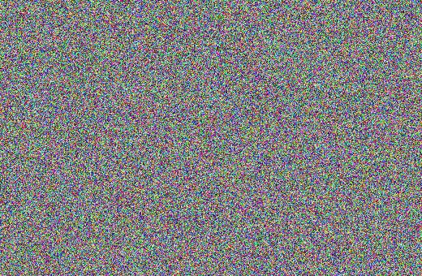
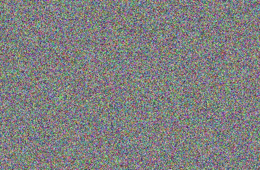
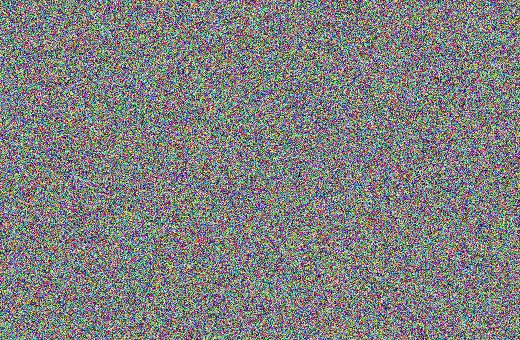
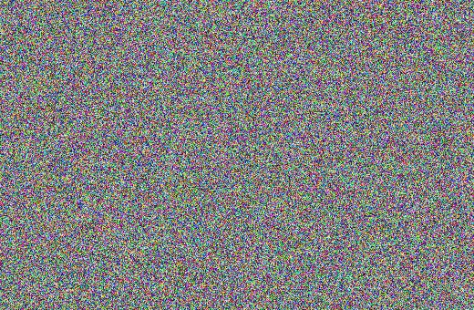

这本书由三样东西长出来：
所以这本书的检验标准很实在：读完它，你应该能不看答案、从零把终章的 Heston 推导在白板上复现出来。
随机微积分的定理看着多，其实全书翻来覆去用的只有一个动作：
把你要的东西写成一个鞅，然后令漂移等于零。
拆开说：
dX_t = (\text{漂移})\,dt + (\text{噪声})\,dW_t。它是不是鞅，只看一件事——漂移项是不是零。噪声项随便多大都不影响鞅性，因为噪声的期望是零。e^{A+Bv+iux} 构造成鞅，令漂移为零——钉死 Riccati 方程组（终章）。终章的推导原文里管这个叫"展开、查表、令漂移等于零"——一个动作，三处发电。读完全书你回头翻，会发现所谓随机微积分，一半是搭台（把"漂移""鞅"这些概念在严格意义上立住），一半是这台发动机在不同场景下的点火。
当然，发动机要转，先得有三块地基：
\sigma-代数、条件期望、滤流——"你知道什么"如何数学化（第 1–3 章）；三块地基齐了，才有伊藤公式（第 9 章）这台"随机链式法则"，才有 SDE（第 10 章），才谈得上给资产定价。
全书分五篇加一个终章，外加一个可以随时插着读的专题：
| 篇 | 章 | 一句话：解决什么卡点 |
| I 概率地基 | 第 1 章 随机变量、测度与期望 | "随机变量到底是什么"——三层理解；勒贝格积分为什么必须发明 |
| 第 2 章 条件期望与独立性 | 以 \sigma-代数为条件的期望——用马赛克压缩理解"部分信息下的最优预测" | |
| II 随机过程 | 第 3 章 随机过程与滤流 | 一族随机变量怎么变成"一条轨道"；信息怎么随时间流动 |
| 第 4 章 鞅 | 公平赌博的严格化——全书发动机的第一个零件（停时后置于第 17 章） | |
| 第 5 章 布朗运动 | 连续噪声的标准件：从随机游走极限到不可微、无界变差的怪轨道 | |
| 第 6 章 泊松过程与跳跃 | 离散跳动的标准件：无记忆性、指数等待、补偿泊松鞅 | |
| III 随机积分 | 第 7 章 随机积分 I | 为什么黎曼/斯蒂尔杰斯积分对布朗运动失效；简单被积过程上的伊藤积分 |
| 第 8 章 随机积分 II 与二阶变差 | 一般伊藤积分的 L^2 构造；\langle M\rangle——随机微积分的心脏 | |
| 第 9 章 伊藤公式 | 随机链式法则；(dW)^2=dt 带来的全部后果；带跳版本 | |
| 第 10 章 伊藤过程与 SDE | 微分方程里放噪声；GBM 显式解；相关布朗的 Cholesky 拼装 | |
| IV 测度变换 | 第 11 章 Radon–Nikodym 定理 | 换概率测度的唯一合法方式：密度伸缩；条件版 = 抽象贝叶斯公式 |
| 第 12 章 Girsanov 定理 | 换测度只动漂移不动扩散；指数鞅与 Novikov 条件；鞅表示定理 | |
| V 金融应用 | 第 13 章 动态对冲与无套利定价 | 自融资组合怎么消风险；无套利 PDE 与风险市场价格 |
| 第 14 章 风险中性定价 | 等价鞅测度、资产定价基本定理、定价核、Feynman–Kac | |
| 第 15 章 期权定价应用 | Black–Scholes 的两条路：PDE 路 vs 鞅路——终章的彩排 | |
| 终章 | 第 16 章 Heston 鞅定价：概率直通车 | 全部工具一次用尽：不碰 PDE 推出 Heston 闭式定价 |
| 扩展篇 | 第 17 章 停时与择时停止 | 随机化的退出策略：停止过程、\mathcal{F}_\tau、择时停止定理；第一份路径依赖期权（触碰期权）定价 |
| 第 18 章 Optimal Stopping 与 Smooth Pasting | HJB 均衡解读、值匹配与平滑粘贴：何时"动手"最优 |
顺序是设计过的：每一章只依赖前面出现过的东西。终章之后再上两个扩展件：第 17 章把停时机器正式开机（主线其实一次都没用到它——第 5 章 \tau_a、第 14 章 FK 的 \tau,\tau' 只是"随机时刻"层面的顺带提及），并用它现场算出第一份路径依赖期权；第 18 章（最优停止与 Smooth Pasting）紧随其后（从"停止的合法性"到"挑最好的停时"），它要用第 5、9、10 章的工具加第 17 章的停时。
一个提醒：第 5、6 章是"标准件库"，布朗与泊松各占一章，但难度和篇幅都不大。真正的新概念冲击在三个关口——第 2 章（条件期望）、第 8 章（二阶变差）、第 12 章（Girsanov）。这三章请慢读，本书也在这三章给了最多的直观铺垫。
三遍读法。 第一遍只追主线：每章开头的"卡点"引子和加框的定理陈述，配上"理解"段落，跳过全部证明——目标是知道地图长什么样。第二遍带着证明读：把每个证明的"关键一步"自己指认出来（本书在每个证明后都标了哪一步是要害）。第三遍对着终章读：Heston 推导每用一件工具，就回到对应章节把那件工具的陈述与条件重看一遍——你会发现终章其实就是全书的目录，只是换了个顺序排列。这个读法直接来自终章原文的"三轮学习法"，此处提前剧透。
严格性注记。 笔记原文有意在一些地方做了简化——最典型的是"原子集族"那一套论证（第 2 章）：它把条件期望在离散化的世界里先讲通，再把结论平移到一般情形。这类简化不是 bug，是教学设计，本书原样保留，只在旁边挂一个"严格性注记"框，告诉你严格版差在哪、去哪儿补（通常答案是：Øksendal 的附录，或 Le Gall 的书）。与之相对，原笔记里真正的笔误、编号错乱、引用悬空——本书一律直接改正，附录 A 有完整的"位置—原文—问题—处理"对照表。如果你是笔记的老读者，建议先翻附录 A 再回头读正文，旧记忆里的几个坑就被提前填平了。
记号。 全书统一用 (\Omega,\mathcal{F},\mathbb{P}) 记概率空间，\mathbb{F}=\{\mathcal{F}_t\} 记滤流，\langle M\rangle 记二阶变差，\Lambda=\frac{d\mathbb{Q}}{d\mathbb{P}} 记 Radon–Nikodym 导数。布朗运动在第 5–14 章记作 B_t，终章沿用 Heston 原文的 W_t（金融文献的习惯），章首有声明。每章首现的记号都会现场定义；书末不另设总表——因为最重要的记号在第 0.2 节那台发动机里已经全了。
J 恒等式充分统计量、先条件后平均、Willard 分解、Riccati 三步解、Gil-Pelaez 反演）原样移植，仅做记号统一与三处实质订正（见附录 A）。现在，发动机待命。我们从"随机变量到底是什么"这个问题出发。
本章对应原笔记《随机微积分 (1)：随机变量；测度、分布；期望积分的回顾》。
对照 Øksendal：第 2 章 §2.1（Probability Spaces, Random Variables and Stochastic Processes）、附录 A（正态随机变量）、附录 B（条件期望的严格构造，对应本书第 2 章）。
大多数人学概率论时，"随机变量"就是"一个随机变化的数"，拿到这个图像就能算题。但到了随机微积分和金融定价，这个图像会悄悄坑你两次：
第一次是在测度变换（第 11–12 章）——同一支股票、同一批可能的世界状态，把概率重新分配一下，"随机行为"就全变了。这时你必须分清楚：变的是什么？没变的是什么？答案藏在"随机变量 = 样本空间上的可测函数"这个更深的图像里。
第二次是在信息（第 2–3 章）——定价的本质是"在部分信息下做最优预测"。要谈"部分信息"，就得先把"信息"本身数学化，而这个数学化用的材料——\sigma-代数——正是可测性定义的原材料。
所以本章把初等概率论的地基重砌一遍：可测空间、可测函数、诱导测度、勒贝格积分。每一步都不难，但每一步都是为了后面某处的"哦，原来那时候是在用这个"。
(1) 设 \Omega 为底层样本空间（underlying sample space）：其中每一个元素 \omega\in \Omega 表示每一种可能发生的底层状态。
(2) 设 \Omega 上有 \sigma-代数 \mathcal{F}，则定义 (\Omega,\mathcal{F}) 为底层可测空间：\mathcal{F} 表示所有可能将会得知的信息集合，\mathcal{F} 的每一个元素子集 E\in \mathcal{F} 称为事件；事件通过可列并、补运算得到的集合 F\in \mathcal{F}，即仍为事件。
严格定义：\mathcal{F} 为由"基本事件"通过某些集合运算建立的满足一定性质的集族（对可列并、补运算封闭，且 \Omega\in\mathcal{F}）。其中的元素为可测集 E\in\mathcal{F}。
严格性注记（省略了什么）：\sigma-代数的存在性与"生成"运算（由任意集族\mathcal{E}生成最小\sigma-代数\sigma(\mathcal{E})，即所有包含\mathcal{E}的\sigma-代数之交）这里当作已知；测度的构造（Carathéodory 扩张定理）在第 3 章需要时会现场补一笔。系统补课可看任何一本实变函数教材，本书不展开——我们要尽快到达有意思的地方。
理解：为什么"信息"要用 \sigma-代数装？因为如果你能判断事件 E 发生与否、也能判断 F 发生与否，那你自动就能判断 E^c（"没发生"）和 E\cup F（"至少一个发生"）——可数的并和补是"信息"封闭运算的自然边界（可数交由 De Morgan 律白送）。所以一个 \sigma-代数恰好是"一套自洽的、可以整体得知的问答集"。
(\mathbb{R}^k,\mathcal{B}(\mathbb{R}^k)) 其中 \mathcal{B}(\mathbb{R}^k) 为 \mathbb{R}^k 上的 Borel \sigma-代数（由所有 k 维开矩体生成的最小 \sigma-代数），称为观测样本可测空间。
理解：数值观测的落点空间。我们最终关心的量（价格、利率、波动率）都活在这里；Borel 结构保证了"开矩体"这类最朴素的观测问题（"价格落在 100 到 101 之间吗"）都是合法事件。
X 的诱导 \sigma-代数设 X:(\Omega,\mathcal{F})\rightarrow(\mathbb{R}^k,\mathcal{B}(\mathbb{R}^k))。记
\sigma(X):=\{X^{-1}(B)\,\big|\,B\in\mathcal{B}(\mathbb{R}^k)\}
则 \sigma(X) 是 \Omega 上的 \sigma-代数（注意 X^{-1}(B)\in\mathcal{F} 要求 X 可测，见下），称为 X 诱导的 \sigma-域（\sigma-field induced by random vector X）。
证：完全由集合与函数逆像的性质可得。由于 \mathcal{B}(\mathbb{R}^k) 为 \sigma-域：
(1) E\in \sigma(X)\Leftrightarrow \exists B\in\mathcal{B},\ s.t.\ E=X^{-1}(B)\ \overset{B^c\in \mathcal{B}}{\Longrightarrow}\ E^c=X^{-1}(B^c)\in \sigma(X)；
(2) \{E_n\}^{\infty}\subset \sigma(X)\Leftrightarrow \exists \{B_n\}^{\infty}\subset\mathcal{B},\ s.t.\ E_n=X^{-1}(B_n)\ \overset{\cup_n B_n\in \mathcal{B}}{\Longrightarrow}\ \bigcup_n^\infty E_n=X^{-1}\big(\bigcup_{n}^\infty B_n\big)\in \sigma(X)。
（另需 \Omega=X^{-1}(\mathbb{R}^k)\in\sigma(X)，显然。）
理解：X:\Omega\to\mathbb{R}^k 是对底层样本空间在数值上的映射汇总（numerical mapping summary of the underlying sample space），而汇总一般仅保留部分信息（除非一一对应）。\sigma(X) 已经是通过 X 能回溯的最多的信息：只看 X 的取值，你能分辨的世界，最细就细到 X 的原像，再细就分不出了。
\mathcal{F}-可测随机向量X:\Omega\to \mathbb{R}^k 为 (\Omega,\mathcal{F}) 上的随机变量（random variable / random vector） \Leftrightarrow^{def} X 为 (\Omega,\mathcal{F}) 上的 \mathcal{F}-可测函数，即
\forall B\in \mathcal{B}(\mathbb{R}^k),\quad X^{-1}(B)\in\mathcal{F}
或等价地 \sigma(X)\subset \mathcal{F}：\sigma(X) 为 \mathcal{F} 的子 \sigma-代数。
理解：可测性意味着随机变量取值已知——\mathcal{F} 中包含的事件足以遍历 X 的所有取值问题。不可测时，说明可知信息 \mathcal{F} 无法消除 X 的随机性，只能提供部分条件信息（这正是第 2 章条件期望的出发点）。此外，可测性保证了后续可通过在 \mathcal{F} 上定义概率测度来对 X 定义概率分布。
\mathbb{P}在可测空间 (\Omega,\mathcal{F}) 上定义测度 \mathbb{P} 使得 \mathbb{P}(\Omega)=1（且 \mathbb{P}(E)\ge 0、可列可加），则称 \mathbb{P} 为概率测度（probability measure），(\Omega,\mathcal{F},\mathbb{P}) 称为概率空间（probability space）。
X 诱导概率测度 \mathbb{P}_X设 (\Omega,\mathcal{F},\mathbb{P}) 上随机变量 X:(\Omega,\mathcal{F})\to(\mathbb{R}^k,\mathcal{B})。则一定可在 (\mathbb{R}^k,\mathcal{B}) 上定义概率测度 \mathbb{P}_X：
\forall B\in\mathcal{B},\qquad \mathbb{P}_X(B):=\mathbb{P}\big(X^{-1}(B)\big)
称 \mathbb{P}_X 为 "\mathbb{P} 经 X 诱导到 (\mathbb{R}^k,\mathcal{B}) 上的概率测度"。
证（完全由逆像性质使得测度性质被继承）：
(1) 集函数 \mathbb{P}_X 显然继承 \mathbb{P} 的非负性。
(2) 可列可加性：\forall 两两无交的集列 \{B_n\}^\infty \subset \mathcal{B}，
\mathbb{P}_X\Big(\bigcup^{\infty}B_n\Big)=\mathbb{P}\Big(X^{-1}\big(\bigcup^{\infty}B_n\big)\Big)=\mathbb{P}\Big(\bigcup^{\infty}\big(X^{-1}(B_n)\big)\Big)\overset{\mathbb{P}\text{的可列可加}}{=}\sum^{\infty}\mathbb{P}\big(X^{-1}(B_n)\big)=\sum^{\infty}\mathbb{P}_X(B_n).
(3) 归一性：X^{-1}(\mathbb{R}^k)=\Omega（因 \mathbb{R}^k\supset X(\Omega)\Rightarrow X^{-1}(\mathbb{R}^k)\supset X^{-1}(X(\Omega))\supset\Omega，而反包含显然），故 \mathbb{P}_X(\mathbb{R}^k)=\mathbb{P}(\Omega)=1。
（原笔记此步写作"显然 X^{-1}(\mathbb{R}^k)\subset\Omega"再证反包含，两个方向的论证本书合并如上。）
设定义在 (\Omega,\mathcal{F},\mathbb{P}) 上的随机变量 X。考察定义在 (\mathbb{R}^k,\mathcal{B}(\mathbb{R}^k),\mathbb{P}_X) 上的随机变量 g(x):=x，g:\mathbb{R}^k\to\mathbb{R}^k。由于 \forall B\in\mathcal{B}(\mathbb{R}^k)，g^{-1}(B)=B，且 \mathbb{P}_X(g^{-1}(B))=\mathbb{P}_X(B)=\mathbb{P}(X^{-1}(B))，则两个随机变量 g 与 X 在实数取值空间上的随机行为一致。
由于实空间 Borel 代数上的概率测度等价于在实空间上定义累积分布函数：\mathcal{B}\equiv\sigma(\{(-\infty,x)\,|\,\forall x\in\mathbb{R}\})，则
F_X(x):=\mathbb{P}_X\big((-\infty,x]\big)
可以完全描述测度 \mathbb{P}_X。换句话说，诱导概率测度 \mathbb{P}_X 与累积分布函数（CDF）F_X 一一对应。因此在大部分情况下，我们将随机变量直接定义在结果空间上：(\Omega':=\mathbb{R}^k,\ \mathcal{F}':=\mathcal{B}(\mathbb{R}^k),\ \mathbb{P}_X)。
至此，对随机变量的理解有三层：
(\Omega,\mathcal{F},\mathbb{P}) 上的可测函数——"看山不是山"；(\mathbb{R},\mathcal{B},\mathbb{P}_X) 上的恒等随机变量——"看山还是山"。(1) 随机机制与概率测度：我们只能通过确定性来模拟不确定性：可测空间 (\Omega,\mathcal{F}) 作为底层样本空间，包含 ex-post 所有可明确是否发生了的事件；再通过在 (\Omega,\mathcal{F}) 上建立概率测度 \mathbb{P}，将 \mathcal{F} 所能表示的各事件映射到发生的可能性大小，从而构建定量的随机机制 (\Omega,\mathcal{F},\mathbb{P})。
(2) 诱导概率测度的作用：底层概率测度 \mathbb{P} 或隐藏、或为主观赋予的先验信息，而现实观测中只能通过 X 的取值行为——即观测诱导概率测度空间 (\mathbb{R}^k,\mathcal{B},\mathbb{P}_X)——来间接分析：\mathbb{P} \overset{X}{\leftrightarrow} \mathbb{P}_X。
(3) 诱导概率测度 \mathbb{P}_X 由两个要素决定：一是底层测度 \mathbb{P}，二是随机变量 X 对底层样本的赋值规则。随后章节我们会分析：对同一 X，不同 \mathbb{P} 会被诱导成不同的观测空间测度——测度变换（第 11 章）。
勒贝格积分的起源：
(1) 为了在一般抽象空间 (\Omega,\mathcal{F}) 上建立"体积"（测度），进而对定义在该空间上的函数 f 进行积分，只能通过对 f 的值域切分：寻找函数值对应的原像 X^{-1}(B) 的测度，再作乘积求和。
(2) 黎曼（Riemann）可积性要求被积函数（integrand）满足"过高"的连续性，因而需要将 integrand 扩充到更广泛的函数类——比如随机过程中大量出现的、只在可测意义上良好的函数。
设 (\Omega,\mathcal{F}) 上的一个 partition \mathcal{P}:=\{A_1,\dots,A_{n}\} \subset\mathcal{F}（A_i 两两不交且并起来是 \Omega）。设 B:=\{b_{1},\dots,b_{n}\}，B 中各项为互不相同的实数。则
f(\omega):=\sum^{n}_{i=1}b_{i}\mathbf{1}_{A_{i}}(\omega)
称为 (\Omega,\sigma(\mathcal{P})) 上的简单函数。
若 f 为 (\Omega,\mathcal{F}) 上非负可测函数 \Rightarrow 存在一列由非负简单函数构成的函数列 \{f_{n}\}^{\infty}_{n=1}，s.t.\ \forall \omega\in\Omega,\ \lim_{n\rightarrow\infty}{f_{n}(\omega)=f(\omega)}。
（标准构造：f_n(\omega)=\sum_{k=0}^{n2^n-1}\frac{k}{2^n}\mathbf{1}_{\{\frac{k}{2^n}\le f<\frac{k+1}{2^n}\}}(\omega)+n\,\mathbf{1}_{\{f\ge n\}}(\omega)，它对每个 \omega 单调不减地爬向 f(\omega)。记住这个"网眼逐层加密"的构造，第 7、8 章构造伊藤积分时用的简单过程逼近是同一个思路。）
(1) 简单函数的勒贝格积分：设 f_{s}(\omega):=\sum^{n}_{i=1}b_{i}\mathbf{1}_{A_{i}}(\omega)，则
\int f_{s}\,d\mu :=\sum^{n}_{i=1}b_{i}\,\mu(A_i).
（原笔记此处写作 \sum b_i\mu\{\mathbf{1}^{-1}_{A_i}(b_i)\}，是同一意思的绕远写法；直接以 \mu(A_i) 计。）
(2) 一般非负可测函数的勒贝格积分：
\int f\,d\mu :=\sup_{f_s\le f}\Big\{\int f_{s}\,d\mu\ \Big|\ f_s \text{ 为简单函数},\ \forall\omega,\ f_{s}(\omega)\le f(\omega)\Big\}
即对 f 线下所有简单函数的积分取上确界（f_s 取遍 f 线下的简单函数）。对一般可测函数 f=f^+-f^-（正部减负部），若 \int|f|d\mu<\infty 则称 f 可积，且 \int f\,d\mu:=\int f^+d\mu-\int f^-d\mu。
（原笔记此定义的第一表达式排版残缺、漏掉了 \mu(A_i) 权重与求和结构，本书径直给出正确形态。）
设 f,\{f_{n}\}_{n=1}^{\infty} 均在 (\Omega,\mathcal{F}) 上可测，且 \forall\omega\in\Omega,\ \lim_{n\rightarrow\infty}{f_{n}(\omega)}=f(\omega)。若 \exists 非负可积函数 g，且 \forall \omega\in\Omega,\ \forall n\in\mathbb{N},\ |f_{n}(\omega)|\le|g(\omega)|，则
\lim_{n\rightarrow\infty}\int f_n\,d\mu=\int\Big(\lim_{n\rightarrow\infty}f_n\Big)d\mu=\int f\,d\mu.
（这条定理在本书后面的使用频率高得惊人：第 7、8 章每一步"取极限穿过积分号"都是它；终章交换期望与积分时也要它站台。没有控制函数 g，极限和积分就会闹分家——这是勒贝格理论和逐点收敛之间唯一的契约。）
(1) 区别：
Riemann–Darboux 方法——先划分定义域为 \{\Delta x_{i}\}，再取 \Delta x_{i}\rightarrow dx。过程中利用（针对连续函数的）中值定理取中间函数值 f^*\in[f^{\inf},f^{\sup}]，上、下达布和双向夹逼收敛：
\sum_{i}f_{i}^{\inf}\cdot\Delta x_{i}\ \rightarrow\ \int fdx\ \leftarrow\ \sum_{i}f_{i}^{\sup}\cdot\Delta x_{i}.
Lebesgue 方法——先在值域上取一组点 \{f_k\}，生成定义域 \Omega 的 partition（每个元素可以不连通）：\{\omega\,|\,f_{k-1}\le f(\omega)< f_k\}_k，得到简单函数的线下面积 \sum_{k}f_k\cdot\mu(f_{k-1}\le f<f_k)。不断增加分点、让网眼加密，\sum_{k}f_k\cdot\mu(f_{k-1}\le f<f_k)\rightarrow\int f(\omega)\,\mu(d\omega)。
(2) 共性：两者均以"单一函数值 × 自变量小区间（测度） = 小矩形面积"来逼近积分收敛值。
下图上为 Riemann（竖切），下为 Lebesgue（横切，按函数值分堆）：

（若外链图失效，文字版：Riemann 把定义域切成竖条、每条取一个代表值；Lebesgue 把值域切成横条、每一横条对应的定义域子集可以不连通——"按函数值分堆称重"。）
理解：这个区别就是概率论必须用勒贝格积分的原因——概率的"称重对象"本来就是事件（定义域的子集），而不是"自变量区间"。\mathbb{E}[X]=\int X\,d\mathbb{P} 天生是 Lebesgue 式的。
\mathbb{E}_{\mathbb{P}}[X]:=\int_{\Omega} X\,d\mathbb{P}
理解：取 X:=\mathbf{1}_{E}，则
\mathbb{E}_{\mathbb{P}}[\mathbf{1}_{E}]=\int \mathbf{1}_{E} d\mathbb{P}=\int_{E} d\mathbb{P}=\mathbb{P}(E)

——测度可由积分定义、表示（示性函数是桥梁）。期望 \mathbb{E}_{\mathbb{P}}[X] 即以 \mathbb{P}(\omega) 对 X(\omega) 的不同取值按概率进行加权平均；从图像上应按 CDF 的图像做垂直截线理解（对分布"竖着切片"），而非上一节图中的水平截线。
考察由 X 诱导的概率测度 \mathbb{P}_X：由于测度可由积分表示，\mathbb{P}_X(B)\equiv\int_B\mathbf{1}(x)\,d\mathbb{P}_X(x)。相较于 \mathbb{R}^k 上平凡的勒贝格测度 \mathcal{L}(B)=\int_B\mathbf{1}(x)\,d\mathcal{L}(x)，在非常不严格的意义上，
\mathbb{P}_X(B)=\int_B\mathbf{1}(x)\,d\mathbb{P}_X(x)=\int_B\mathbf{1}(x)\left(\frac{d\mathbb{P}_X(x)}{d\mathcal{L}(x)}\right)d\mathcal{L}(x)
即 \mathbb{P}_X 对体积 \mathcal{L} 进行了伸缩变换，而 \frac{d\mathbb{P}_X(x)}{d\mathcal{L}(x)} 代表伸缩变换（测度变换）遵循的"密度"规律。
注意这种伸缩变换完全由 \mathbb{P}_X 决定：既取决于随机变量 X 对底层事件的汇总方式，又取决于底层概率测度 \mathbb{P}。在测度 \mathbb{P} 不变的情况下，可通过 \frac{d\mathbb{P}_X(x)}{d\mathcal{L}(x)} 研究 X 的汇总（映射）方式的性质。
而由 \mathbb{P}_X(\cdot) 与 F_X(x) 一一对应，在符号形式上：
\frac{dF_X(x)}{dx}=\frac{d\mathbb{P}_X(x)}{d\mathcal{L}(x)}
可见概率密度正是观测样本空间 (\mathbb{R}^k,\mathcal{B}) 上，诱导概率测度 \mathbb{P}_X 对平凡勒贝格测度 \mathcal{L} 的 Radon–Nikodym 导数。
（记住这个视角。第 11 章会把"密度 = 测度间的导数"从直觉升格为定理，测度变换的全部技术都从它出发；终章 Heston 里 Girsanov 换测度时用的指数密度，就是它在路径空间上的直接后裔。）
| 本书 | Øksendal 5th ed. |
| §1.1–1.2 可测空间、随机变量、诱导测度 | Ch.2 §2.1（更紧凑，无原子/三层理解铺垫） |
| §1.3 勒贝格积分、控制收敛 | （默认已知；正文随用随引） |
| §1.4 期望、密度 = RN 导数伏笔 | Ch.2 §2.1 + 附录 A（正态分布性质） |
本书多给的：随机变量三层理解、密度即 RN 导数的伏笔、Riemann/Lebesgue 的图解对照。Øksendal 更严格的：测度论细节（它同样略过，但给出了引用）。
现在你手里有了"随机变量"和"期望"。但定价的核心动作是：在只掌握部分信息时，给出最优预测。这就要求把"部分信息"（一个子 \sigma-代数 \mathcal{G}）变成期望的"条件"。关键困难是：\mathcal{G} 若是无限精细的（连续型），"已知 \mathcal{G}"无法用"某个事件发生"来描述，条件期望必须靠抽象定义硬造出来——而理解它的钥匙，是把 \sigma-代数想成一堆"原子"拼成的马赛克。
本章对应原笔记《随机微积分 (2)》（原笔记存在两个"第四节"及 3.2/3.3 编号悬挂问题，本书已重排为连续编号）。
对照 Øksendal：附录 B（Conditional Expectation，严格构造）。
定价的全部技术可以压缩成一句话：在只掌握部分信息的前提下，给出最优预测，然后让"预测不再可改进"这个条件为你干活。
但要落地这句话，先得回答一个初等概率论从来没认真回答的问题：什么叫"以信息为条件的期望"？
初等概率论里我们会算 \mathbb{E}[X\mid Y=y]——知道 Y 的取值后对 X 加权平均。可是当信息不是"某个随机变量的取值"、而是一整套事件（比如"到目前为止的整条股价路径"）时，"条件"就没法写成"Y=y"这种形式了。数学的出路是一个看似古怪的定义：
\mathbb{E}[X\mid\mathcal{G}]是那个用\mathcal{G}-可测的方式对X的最好近似——它在\mathcal{G}的每个事件上与X的积分吻合。
本章要做的，就是把这个抽象定义翻译回直觉。原笔记为此设计了一套"原子集族"的论证：把 \sigma-代数想成一堆不可再分的"原子"拼成的马赛克，\mathcal{G}-可测函数就是"在每个原子内部取常数"的马赛克函数，条件期望则是"把 X 在每个原子内部抹平"。这套论证只对拥有足够原子的 \sigma-代数严格成立，但它给出的每一个结论在一般情形都对——这是本章最重要的教学投资，第 12 章的 Girsanov、终章的"先条件、后平均"，全靠这张马赛克图像撑腰。
严格性注记（原子化论证的适用范围）：本章第一节关于原子集族的论证沿袭原笔记，属于"先在离散化世界里讲通，再平移结论"的教学设计；其中 1.2.2 命题的证明含有一处不完全的推理（详见该处注记），完整的严格处理要求 \mathcal{G} 可数生成，一般情形的定理陈述与证明见 Øksendal 附录 B。结论本身（条件期望的定义与全部性质）不受影响。
\sigma-代数的原子集族对于某 \sigma-代数 \mathcal{F}，若 A\in\mathcal{F} 且满足
\forall A'\in\mathcal{F}\backslash\{\varnothing\},\quad A'\subset A\ \Rightarrow\ A'=A
则称 A 为 \mathcal{F} 的一个原子事件（atom）。\mathcal{F} 中所有原子构成的集族称为原子集族，记为 \mathcal{A}(\mathcal{F})。
显然任何两个不同原子 A\neq B\in \mathcal{A}\Rightarrow A\cap B=\varnothing。否则非空交 A\cap B\in\mathcal{F} 且 A\cap B\subsetneq A，违反原子定义。
理解：原子事件定义了所谓"基本事件"。\Omega 上的 \sigma-代数 \mathcal{F} 不一定能精细到 \{\omega\}\in\mathcal{F}（此时称 non-separable / 不可分 \sigma-代数），因此需要一个普遍适用的"不可继续分割的事件"概念——这就是原子。
(1) 由可数集族 \{E_i\} 生成的 \sigma-代数一定有原子集族（证明思路：对固定 \omega，取所有"含有 \omega 的生成元或其补"之交）；但任何不可数 \Omega 上也都可以建立 atomless（无原子）的 \sigma-代数。
(2) \Omega 上某 \sigma-代数 \mathcal{F} 只要存在 \mathcal{A}(\mathcal{F})\neq \varnothing 且原子覆盖全空间（见下面注记），则 \mathcal{A}(\mathcal{F}) 构成 \Omega 的一个 partition。
(3) 结合原子互斥性推论：每个样本点 \omega 都属于唯一的原子集。
(2) 的论证（原笔记证明，含一处推理缺口）：任取 \omega\in\Omega，记 B_0:=\Omega。若 B_0 不存在 \mathcal{F} 中的非空真子集，则 B_0\in\mathcal{A}，得证；否则记非空真子集 B_1\subsetneq B_0，继续向下分割，得到严格递减集列 \{B_i\}，且 \omega\in B_i\ \forall i。令 B_\infty:=\bigcap^{\infty}_{i=1}B_i\in \mathcal{F}（\sigma-代数对可列交封闭），\omega\in B_\infty。原笔记声称"若 \mathcal{F}\ni B'\subsetneq B_\infty，则 B'\subset B_i\ \forall i\Rightarrow B'\in\{B_i\}，矛盾"——这一步推理不成立：B' 是所有 B_i 的子集，并不必然与某个 B_i 重合，构造链时也没有排除链外还有更小的集合。缺口在"递减链取交"只能锁定一条链的最深处，不能断言全空间的最小元。
补全的办法有二。路线一（限制范围）：当 \mathcal{F} 由可数集族 \{G_1,G_2,\dots\} 生成时，对固定 \omega 定义
A_\omega:=\bigcap_{i}\big\{G_i\ \text{或}\ G_i^c\ \big|\ \omega\in G_i\ \text{取}\ G_i,\ \omega\notin G_i\ \text{取}\ G_i^c\big\}
可数交仍在 \mathcal{F} 中，且任何 \mathcal{F}-可测集要么含 A_\omega 要么与之不交，故 A_\omega 是原子——这类原子天然构成 partition。路线二（接受现状）：像原笔记一样，把讨论限制在"原子集族存在且覆盖 \Omega"的 \sigma-代数上，把结论平移使用。
严格性注记（本书的选择）：本书采取路线二——这是原笔记的有意简化，属于"教学设计"而非疏漏：一方面，经济学与金融应用中的 \sigma-代数（由可数个随机变量/过程轨道生成）基本都在路线一的覆盖范围内；另一方面，原子化条件下得到的结论（条件期望的全部性质）在无原子情形同样成立，只是证明要换成 Øksendal 附录 B 的标准机器（单调类定理）。初读请放心使用马赛克图像。
\sigma-代数原子集族的强弱关系设两个 \sigma-代数 \mathcal{G}\subset\mathcal{F}（\mathcal{F} 更精细）。则当 A\in \mathcal{G} 且 A\notin\mathcal{A}(\mathcal{G})\Rightarrow A\notin\mathcal{A}(\mathcal{F})。
证（反证）：若 \exists A\in \mathcal{G}，A\notin\ \mathcal{A}(\mathcal{G}) 但 A\in\mathcal{A}(\mathcal{F})，则由非原子性 \exists B\in\mathcal{G}\subset \mathcal{F},\ s.t.\ B\subsetneq A，与 A\in\mathcal{A}(\mathcal{F}) 矛盾。
注意：该命题必须要求前提 A\in\mathcal{G}，否则不一定成立——不存在两个原子集族的直接比较！
设 \mathcal{F} 的原子集族 \mathcal{A}(\mathcal{F}) 覆盖 \Omega。\forall E\in\mathcal{F}，记 \mathcal{A}^*:=\{A\in \mathcal{A}(\mathcal{F})\,|\,A\cap E\neq \varnothing\}。则
E=\biguplus_{A^*\in \mathcal{A}^*}A^*.
证：显然候选原子集的必要条件为 A\cap E\neq \varnothing。\forall A^\in \mathcal{A}^\subset \mathcal{F}，A^\cap E\in \mathcal{F} 且 A^\cap E\neq\varnothing、A^\cap E\subset A^，由原子性 A^\cap E=A^，即 A^\subset E，故 \cup A^\subset E。假设 \cup A^\subsetneq E，即 E\backslash \cup A^\neq \varnothing。取 \omega\in E\backslash \cup A^。由覆盖性，存在 A_j\in\mathcal{A}(\mathcal{F}) 使 \omega\in A_j。而 A_j\cap E\neq \varnothing（\omega 同时在两者中），故 A_j\in\mathcal{A}^，于是 \omega\in A_j\subset\cup A^*，矛盾。
（注意此证明用了覆盖性——这正是上面注记里要补的那块砖。）
\sigma-代数可被原子集重新生成设 \mathcal{F} 的原子集族 \mathcal{A}(\mathcal{F}) 为非空可数集（且覆盖 \Omega），则 \mathcal{F}=\sigma(\mathcal{A}(\mathcal{F}))。
证：显然 \mathcal{F}\supset \sigma(\mathcal{A}(\mathcal{F}))（生成 \sigma-代数是最小的包含生成集族的 \sigma-代数）。反之由引理 2.1.4，\forall E\in\mathcal{F}，E=\bigcup_{i\in I}A_i，A_i\in \mathcal{A}(\mathcal{F})，而 I 可数，故 E\in\sigma(\mathcal{A}(\mathcal{F}))。
理解：可数原子情形下，"信息 = 原子 + 原子的可数组合"，\sigma-代数被它的原子完全决定。这就是马赛克图像的严格骨架。
\mathcal{F}-可测函数在原子上只能取唯一值设随机变量 X 为 \mathcal{F}-可测，且 \mathcal{A}(\mathcal{F}) 覆盖 \Omega。则 \forall A\in \mathcal{A}(\mathcal{F})，s.t.\ X(A)\neq \varnothing，\exists!\, x_A\in X(\Omega) 使 \{x_A\}=X(A)。
证：给定 A\in \mathcal{A}(\mathcal{F})，X(A)\neq \varnothing。假设 x_1\neq x_2，x_1,x_2\in X(A)。取足够小的区间 B_1\ni x_1,\ x_2\notin B_1 与 B_2\ni x_2,\ x_1\notin B_2。由 X 可测，X^{-1}(B_1),X^{-1}(B_2)\in \mathcal{F}，且两者都与 A 有交（分别含映到 x_1,x_2 的点）。由原子性（非空可测子集 X^{-1}(B_i)\cap A\subset A 必等于 A）：
A=X^{-1}(B_1)\cap A=X^{-1}(B_2)\cap A.
于是 X(A)\subseteq B_1 又 X(A)\subseteq B_2。但 x_2\in X(A)\subseteq B_1 与 x_2\notin B_1 矛盾！
（原笔记此段结论行写作"X(A)=B_1=X(A)=B_2，但 B_1\neq B_2 矛盾"——推理串写错了对象：应是 X(A) 同时落入两个不相容的区间，与两点都属于 X(A) 冲突；另"由引理 1.4"应为直接用原子定义。本书已按正确推理改写。）
理解：在可测函数诱导 \sigma-代数的原子上，该函数要么取空值，要么取单值。可测函数对马赛克的每个色块只能涂一种颜色——这句话是整章的枢纽。
\sigma(X) 的原子一一对应在样本空间 \Omega 上定义随机变量 X。则 \mathcal{A}(\sigma(X)) 与 X(\Omega)\cup\{\varnothing\} 的"取值层次"一一对应：
(1) \forall x\in X(\Omega)，有 \exists!\,E\in\mathcal{A}(\sigma(X))，s.t.\ E=X^{-1}(\{x\})；
(2) \forall A\in \mathcal{A}(\sigma(X))，s.t.\ X(A)\neq \varnothing，\exists!\, x_A\in X(\Omega) 使 \{x_A\}=X(A)（即定理 2.2.1）。

证 (1)：只需证 X^{-1}(\{x\})\in \mathcal{A}(\sigma(X))。给定 x\in X(\Omega)，若有非空 E\in\sigma(X)，E\subsetneq X^{-1}(\{x\})，则 \forall \omega\in E,\ X(\omega)=x\Rightarrow X(E)=\{x\}；而 E \subsetneq X^{-1}(\{x\}) 又使 X(E)\subset \{x\}。于是 X(E)=\{x\}，与 E 是真子集矛盾（X^{-1}(\{x\}) 上 X 恒为 x，真子集也映成同一个 x，说明区分不出——但注意这不构成矛盾本身，真正的论证是：X^{-1}(\{x\}) 的任何可测子集 E 若非空，其补 (X^{-1}(\{x\}))\backslash E 要么为空，要么也映成 \{x\}；若两者皆非空则 X 在一个原子内取两值——不对，这里恰恰不矛盾。正确的证明是直接观察：\sigma(X) 的每个原子形如 X^{-1}(D) 之交，而 X^{-1}(\{x\}) 自身不可再分——\sigma(X) 中任何集合都是 X^{-1}(B) 的形状，若 X^{-1}(B_1),X^{-1}(B_2) 都与 X^{-1}(\{x\}) 相交且互不相同，则 B_1\cap\{x\}\neq\varnothing\neq B_2\cap\{x\}，即 x\in B_1\cap B_2，故两者交集也含 x，X^{-1}(B_1)\cap X^{-1}(B_2) 仍与 X^{-1}(\{x\}) 相交——任何"分刀"都切不开 X^{-1}(\{x\})，它是 \sigma(X)-原子。）
理解：可测函数值域单点的原像一定是其诱导 \sigma-代数的原子：通过观测 X 的取值，无法获得更精细的可测集。看什么水平的信息，就决定你能把世界分到多细——这是"信息"概念的第一块里程碑。
写作说明：上面 (1) 的证明原笔记只给了前半段（那半段的"矛盾"并未闭合），本书补全为"分刀切不开"的直接论证。
设概率空间 (\Omega,\mathcal{F},\mathbb{P}) 上随机变量 X，事件 E\in\mathcal{F}，\mathbb{P}(E)>0。则以事件 E 为条件的 X 期望定义为：
\mathbb{E}[X\mid E]:=\frac{1}{\mathbb{P}(E)}\int_E X(\omega)\,d\mathbb{P}(\omega)
理解：当 E 不是 \sigma(X) 的原子时，X(E) 是多点集合。在不严谨的离散意义下，
\mathbb{E}[X\mid E]\approx\int \mathbf{1}_E X(\omega)\,\frac{d\mathbb{P}(\omega)}{\mathbb{P}(E)}
即把 X 在 E 中各取值按相应的原像占整个事件 E 的测度大小进行加权平均。显然加权平均的过程一方面受 \mathcal{F} 中其它子集在 E 中相对分布的影响，也受测度 \mathbb{P} 本身的影响。退化情况：E\in \mathcal{A}(\sigma(X))\Rightarrow X(E) 为单点，可从积分中分离 \mathbb{E}[X|E]=X(E)\int_Ed\mathbb{P}/\mathbb{P}(E)=X(E)。显然，无条件期望是条件期望的特例：\mathbb{E}[X]=\mathbb{E}[X\mid\Omega]。
固定事件 G\in\mathcal{F}（\mathbb{P}(G)>0），\forall E\in\mathcal{F} 可定义条件概率测度（原文记号：条件事件做下标）：
\mathbb{P}_G(E):=\mathbb{E}[\boldsymbol{1}_E\mid G]=\frac{1}{\mathbb{P}(G)}\int_G\boldsymbol{1}_E\,d\mathbb{P}=\frac{\mathbb{P}(G\cap E)}{\mathbb{P}(G)}
（验证它是概率测度：非负、归一 \mathbb{P}_G(\Omega)=1、可列可加继承自 \mathbb{P}——第 1 章 1.2.2 同款"逆像/限制继承"论证。也有把目标事件与条件事件对调的写法 \mathbb{P}_E(G)——把哪个事件当"条件"放进下标，读时盯紧即可；本章及原笔记默认下标是条件。）
\sigma-代数为条件的随机变量期望\sigma-代数条件期望Motivation：设概率空间 (\Omega,\mathcal{F},\mathbb{P}) 上的随机变量 X 为 \mathcal{F}-可测。\sigma(X) 是使 X 可测的最粗糙 \sigma-代数，考察子 \sigma-代数 \mathcal{G}\subsetneq\sigma(X)\subset\mathcal{F}：此时 X 在 \mathcal{G} 上不可测。我们希望在 \mathcal{G} 上以加权平均方式尽量精细地汇总 X，得到一个新的 \mathcal{G}-可测随机变量 Z。
定义：设 Z 满足 (i) Z 为 \mathcal{G}-可测；(ii) \forall G\in\mathcal{G}，
\int_G Z\,d\mathbb{P}=\int_G X\,d\mathbb{P}
则定义 \mathbb{E}[X\mid\mathcal{G}]:=Z。
这个定义的妙处在于它完全绕开了"条件"这个词的字面含义，只要求"在 \mathcal{G} 能提出的每一个问题上，Z 与 X 的平均答案一致"。存在性由 Radon–Nikodym 定理保证（Z 就是测度 G\mapsto\int_G X\,d\mathbb{P} 对 \mathbb{P}|_\mathcal{G} 的 RN 导数——这给了第 11 章又一个重逢的伏笔），几乎必然唯一。
只要 X 可积，\mathbb{E}[X|\mathcal{G}] 存在且 almost surely 唯一。证明依赖 Radon–Nikodym 定理，本书第 11 章（原笔记此处注"详见随机微积分 (13)"为旧编号笔误，应为原 (14) 讲、本书第 11 章）。此处先接受结论使用。
\sigma-代数编码观测信息初等概率论中，\mathbb{E}[X\mid Y] 被定义为 \mathbb{E}[X\mid Y=y] 的函数形式。严格定义应为 \mathbb{E}[X\mid Y]:=\mathbb{E}[X\mid\sigma(Y)]。两者等价：Y 至多诱导出 \sigma(Y) 的精细程度，\mathbb{E}X|\sigma(Y)=\mathbb{E}[X|\sigma(Y)(\omega)]，即"落在哪个 Y-原像原子，就在哪个原子上取平均"。
注意：不同 Y 对 \Omega 的汇总方式不同，同一观测值 y 在不同 Y 下的原像 Y^{-1}(\{y\}) 囊括的信息各不相同。我们说 \sigma(Y) 编码（encodes）了通过观测 Y=y 得到的信息。
（本小节是全章的核心直观，也是后面鞅性质、抽象贝叶斯定理的理解基础。）
设原子集族覆盖 \Omega。对 Z:=\mathbb{E}[X|\mathcal{G}]，只需讨论两种情况：
(1) G\in \mathcal{A}(\mathcal{G})：Z 为 \mathcal{G}-可测且 G 为原子，由 2.1.1，Z 在 G 上只能取唯一常值 Z(G)。而由定义条件 \int_G Z\,d\mathbb{P}=\int_G X\,d\mathbb{P}：
Z(G)=\frac{1}{\mathbb{P}(G)}\int_G Z\,d\mathbb{P}=\frac{1}{\mathbb{P}(G)}\int_G X\,d\mathbb{P}=\mathbb{E}[X\mid G]
Z 在 \mathcal{G} 的原子 G 上的唯一赋值，恰好是 X 以事件 G 为条件的条件期望（把 X 的取值按 X^{-1}(B)\cap G 的测度占 G 的比重加权平均）。
(2) G 为复合事件（原子的无交并，G=\uplus_i A_i）：\mathbb{E}[Z\mid G] 为各原子条件期望再按原子占比加权：
\mathbb{E}[Z\mid G]=\frac{1}{\sum_i\mathbb{P}( A_i)}\int_{\uplus_i A_i} Z\,d\mathbb{P}=\frac{\sum_i \mathbb{P}(A_i)Z(A_i)}{\sum_i\mathbb{P}( A_i)}=\frac{\sum_i \mathbb{P}(A_i)\,\mathbb{E}[X|A_i]}{\sum_i\mathbb{P}( A_i)}
因此仅需关注原子集上的条件期望。记集值函数
\mathcal{G}(\omega):=\{\text{unique }A\in \mathcal{A}(\mathcal{G})\,|\,\omega\in A\}
（\omega 所在的唯一原子），逐点验证：
\mathbb{E}[X|\mathcal{G}](\omega')=\frac{1}{\mathbb{P}(\mathcal{G}(\omega'))}\int_{\mathcal{G}(\omega')}\mathbb{E}[X|\mathcal{G}](\omega)\,d\mathbb{P}(\omega)\ \overset{\mathcal{G}\text{-原子上取单值}}{=}\ \frac{1}{\mathbb{P}(\mathcal{G}(\omega'))}\int_{\mathcal{G}(\omega')}X\,d\mathbb{P}=\mathbb{E}[X\mid \mathcal{G}(\omega')]
即得逐点公式：
\boxed{\ \mathbb{E}[X|\mathcal{G}](\omega)=\mathbb{E}[X\mid \mathcal{G}(\omega)]\ }
"知道信息 \mathcal{G}"就是"知道 \omega 落在哪个原子里"；条件期望就是在该原子内抹平。
考察连续随机变量 X,Y 的密度 f_X,f_Y（视为 (\mathbb{R},\mathcal{L}) 上的函数）。将实数轴划分成不等距区间，使每个区间上取一个常数值画出直方图，且常数值 × 区间长度 = 该段线下面积（两个不同的 X,Y 可能得到同一直方图）。区间分划相当于 \mathcal{G} 的原子集族，直方图函数 Z=\mathbb{E}[X|\mathcal{G}]=\mathbb{E}[Y|\mathcal{G}]。注意由于区间不等距，原函数会被划分方式扭曲。

形象地说：取子 \sigma-代数条件期望 = 把随机变量 X 按特定加权方式压缩成马赛克——以 \mathcal{G} 的每个原子 G 为条件加权平均 X（加权方式取决于 \mathcal{G} 中事件的组成），最终效果为 X 被整合成 \mathcal{G}-可测。
随机变量概念的初衷是对不确定性建模。我们的目标是在随机变量取值揭晓前预测 X(\omega)（求期望）。虽然无法观测底层 \omega 的实现，但可通过其它信息改善预测：ex-interim 一定有某个"\mathcal{G}(\omega) 已知发生"，用它来预测即 \mathbb{E}[X|\mathcal{G}(\omega)]。\mathcal{G} 圈定了事先可作为已知条件的事件集合——\sigma-代数是"所有将会得知的信息"的载体。
普通性质（线性、单调、Jensen 等）与无条件期望平行的部分此处从略，集中讲三条"结构性质"——它们是后面一切鞅运算的传动轴。
设随机变量 X,Y 为 \mathcal{F}-可测，\mathcal{G}\subset \mathcal{F}。当 X 又为 \mathcal{G}-可测（且相关期望存在）时，
\mathbb{E}[X\cdot Y|\mathcal{G}]=^{a.s.}X\,\mathbb{E}[Y|\mathcal{G}]
证（原文积分链）：\forall G\in\mathcal{G}，
\int_G\mathbb{E}[XY|\mathcal{G}](\omega)\,d\mathbb{P}(\omega)=\int_G XY\,d\mathbb{P}=\int_G X(\omega)\,\mathbb{E}[Y|\mathcal{G}](\omega)\,d\mathbb{P}(\omega)
（中间等号：在原子 G 上 X 取常值 X(G)，提出积分号。）由于条件期望 a.s. 唯一，得证。∎
（原子化重述：\mathbb{E}[XY|\mathcal{G}] 与 X\,\mathbb{E}[Y|\mathcal{G}] 都是 \mathcal{G}-可测、在每个原子上取常值，且 \frac{1}{\mathbb{P}(G)}\int_GXY\,d\mathbb{P}=X(G)\cdot\frac{1}{\mathbb{P}(G)}\int_GY\,d\mathbb{P}——逐点赋值一致。）
理解：已经知道的信息（\mathcal{G}-可测的 X）可以从条件里"拿出来"——预测的时候，已知量就是常数。
\sigma-代数为条件期望等于自身\mathbb{E}[X|\mathcal{F}]=^{a.s.} X
理解：用与像素精细度同等水平的马赛克加权涂抹，结果几乎处处与原函数一致。
设随机变量 X 定义在 (\Omega,\mathcal{F}) 上，\mathcal{H}\subset \mathcal{G}\subset \mathcal{F} 为 \Omega 上的 \sigma-代数。则
\boxed{\ \mathbb{E}\big[\mathbb{E}[X|\mathcal{G}]\big|\mathcal{H}\big]= \mathbb{E}[X|\mathcal{H}]=\mathbb{E}\big[\mathbb{E}[X|\mathcal{H}]\big|\mathcal{G}\big]\ }
（多重条件只保留最粗糙的。）
证：
(1) 左边等式：\forall H\in\mathcal{H}，
\int_H\mathbb{E}[\mathbb{E}[X|\mathcal{G}]|\mathcal{H}]\,d\mathbb{P}=^{\text{def}}\int_H\mathbb{E}[X|\mathcal{G}]\,d\mathbb{P}\ \overset{H\in\mathcal{G}}{=}\int_H X\,d\mathbb{P}=\int_H\mathbb{E}[X|\mathcal{H}]\,d\mathbb{P}
而 \mathbb{E}[\mathbb{E}[X|\mathcal{G}]|\mathcal{H}] 为 \mathcal{H}-可测，由条件期望的唯一性得 a.s. 相等。
(2) 右边等式：\mathbb{E}[X|\mathcal{H}] 为 \mathcal{H}-可测，自然 \mathcal{G}-可测（\mathcal{H}\subset\mathcal{G}），由 2.5.2 得 \mathbb{E}[\mathbb{E}[X|\mathcal{H}]|\mathcal{G}]=\mathbb{E}[X|\mathcal{H}]。
理解：马赛克语言——先抹成中等粒度再抹成粗粒度 = 一步抹成粗粒度；先抹粗再抹中等 = 白抹（已经 \mathcal{G}-可测了，再细化条件不改变什么）。塔式性质在终章将以"先条件、后平均"的名字出场：把一个难算的期望拆成"给定某信息先算条件版本，再对信息平均"，Heston 直通车的核心一步正是它。

\sigma-代数之间的独立性设 \mathcal{G},\mathcal{H} 为 \mathcal{F} 的两个子 \sigma-代数。若 \forall G\in \mathcal{G},\forall H\in \mathcal{H} 都有 \mathbb{P}(G\cap H)=\mathbb{P}(G)\cdot \mathbb{P}(H)，则称 \mathcal{G} 与 \mathcal{H} 相互独立，记作 \mathcal{G}\perp \mathcal{H}。
理解：以任意 G\in \mathcal{G} 为条件，\forall H\in\mathcal{H}，条件概率测度 \mathbb{P}_G(H)=\mathbb{P}(H) 仍保持原来的概率测度——信息 \mathcal{G} 对 \mathcal{H} 毫无预测力。
\sigma-代数与随机变量的独立性设 \mathcal{G} 为 \mathcal{F} 的子 \sigma-代数，随机变量 X 为 \mathcal{F}-可测（\sigma(X)\subset \mathcal{F}）。若 \mathcal{G}\perp \sigma(X)，则称 \mathcal{G} 与 X 相互独立，记作 X\perp \mathcal{G}。（这样的 \mathcal{F} 总可取 \mathcal{G}\lor \sigma(X)，\lor 为 join——两个 \sigma-代数生成的最小公共 \sigma-代数。）
定义在同一底层样本空间 \Omega 上的随机变量 X,Y 均为 \mathcal{F}-可测。若 \sigma(X)\perp \sigma(Y)，则称 X 与 Y 相互独立，记作 X\perp Y。
随机变量 X,Y 在概率空间 (\Omega,\mathcal{F},\mathbb{P}) 上（特别注意：独立性永远依赖给定的测度 \mathbb{P}——第 12 章换测度时独立性可能改变）相互独立，等价于以下任一条件：
(1) F_{XY}(x,y)=F_X(x)\cdot F_Y(y)，即 F_{Y|X}(y\mid x)=F_Y(y)；
(1') 若 X,Y 为连续随机变量：f_{X,Y}(x,y)=f_X(x)\cdot f_Y(y)；
(1'') 若 X,Y 为离散随机变量：联合分布律 = 边际分布律之积；
(2) \forall \sigma(X)-可测函数 g，\forall \sigma(Y)-可测函数 h（且期望存在），\mathbb{E}_{\mathbb{P}}[g(X)h(Y)]=\mathbb{E}_{\mathbb{P}}[g(X)]\,\mathbb{E}_{\mathbb{P}}[h(Y)]。
证：
(1) F_X(x_0)=\mathbb{P}(X^{-1}\{x\leqslant x_0\})，F_Y 同理，F_{XY}(x_0,y_0)=\mathbb{P}(X^{-1}\{x\leqslant x_0\}\cap Y^{-1}\{y\leqslant y_0\})，独立性定义直接展开即得。
(2) 先取示性函数 g=\mathbf{1}_{B_X},h=\mathbf{1}_{B_Y}，B_X\in \sigma(X),B_Y\in \sigma(Y)：
\mathbb{E}[\mathbf{1}_{B_X}\cdot \mathbf{1}_{B_Y}]=\mathbb{P}(B_X\cap B_Y)=\mathbb{P}(B_X)\mathbb{P}(B_Y)=\mathbb{E}[\mathbf{1}_{B_X}]\mathbb{E}[ \mathbf{1}_{B_Y}]
若 X,Y 为简单随机变量 X=\sum a_k \mathbf{1}_{B_k},\ Y=\sum c_j \mathbf{1}_{D_j}，则
\mathbb{E}[XY]=\sum_{k,j} a_kc_j\, \mathbb{E}[\mathbf{1}_{B_k}\cdot\mathbf{1}_{D_j}]=\sum_{k} a_k\mathbb{E}[\mathbf{1}_{B_k}]\sum_{j} c_j\mathbb{E}[\mathbf{1}_{D_j}]=\mathbb{E}[X]\mathbb{E}[Y]
一般 X,Y 由两组简单随机变量列逼近（单调收敛/控制收敛传递等式）。反向：条件 (2) 取 g,h 为示性函数即回到定义，故 (2) \Rightarrow 独立。
（原笔记此证明中 \mathbb{E}[\mathbf{1}_{B_k\cap B_j\neq \varnothing}] 为排版讹误，应为 \mathbb{E}[\mathbf{1}_{B_k}\mathbf{1}_{B_j}]，本书已改。）
若 X\perp \mathcal{G}，则 \mathbb{E}[X|\mathcal{G}]=\mathbb{E}[X]；若 X\perp Y，则 \mathbb{E}[X|Y]=\mathbb{E}[X]。
证：只需证前者。取简单随机变量 X^*=\sum {a_k}\mathbf{1}_{A_k}，A_k\in \sigma(X)。\forall G\in\mathcal{G}，
\frac{1}{\mathbb{P}(G)}\int_G \mathbf{1}_{A_k} d\mathbb{P}=\frac{\mathbb{P}(A_k\cap G)}{\mathbb{P}(G)}\ \overset{\text{独立}}{=}\ \mathbb{P}(A_k)
即 \mathbb{E}[\mathbf{1}_{A_k}|\mathcal{G}]=\mathbb{P}(A_k)=\mathbb{E}[\mathbf{1}_{A_k}] 对原子成立，由线性性 \mathbb{E}[X^|\mathcal{G}]=\mathbb{E}[X^]，一般 X 由简单函数列逼近。
理解：没有预测力的信息，条件期望退化回无条件期望——马赛克每个色块上抹出来的值都一样。
| 本书 | Øksendal 5th ed. |
| §1 原子集族（教学性铺垫） | （无对应——这是本书多给的直观层） |
| §2.4.1 条件期望定义、2.4.2 存在唯一 | 附录 B（Radon–Nikodym 构造，严格完整） |
| §5 性质（乘积提取/塔式） | 附录 B |
| §6 独立性 | Ch.2 §2.1 |
本书多给的：原子/马赛克/直方图三套直观，以及"条件期望 = 最粗糙信息下的最优预测"这一定位。需要补严格的：无条件期望 a.s. 存在的证明链（单调类定理）。
现在"某个时刻的信息"有了载体（\sigma-代数），"信息下的预测"有了工具（条件期望）。把时刻排成一列，信息随时间不断细化——这就是滤流（filtration），随机过程的舞台。而在舞台上第一个值得认识的演员，是"关于信息流的最平稳预测"：鞅。
本章对应原笔记《随机微积分 (3)：随机过程、滤流》。
对照 Øksendal：第 2 章 §2.1 末尾（随机过程的定义）。
到目前为止，随机性是"一次性"的：一个随机变量，一个分布，一次揭晓。但金融的时间轴不是这样的——股价每个时刻都在变，你的信息每个时刻都在更新。要把"随时间演化的随机性"装进第 1、2 章搭好的框架，需要两块拼图：
\{X_t\}_{t\in T}。听起来只是"很多个随机变量"，但它带来一个全新的对象——轨道（sample path）：固定一次世界实现 \omega，t\mapsto X_t(\omega) 是一条完整的曲线。布朗运动为什么"处处连续但处处不可微"、伊藤积分为什么要绕开逐轨道的黎曼和，全都是轨道性质在作祟。\sigma-代数 \{\mathcal{F}_t\}——第 2 章的"信息载体"排上时间表。它是后面鞅、停时、适应过程、自融资策略的共同舞台。中间还要补一个存在性问题：我们随口说"设 \{X_t\} 是某过程"，凭什么存在？Kolmogorov 扩展定理回答：只要有限维分布彼此相容，过程就存在。这一定理是"先有限后无限"的标准构造，也顺便解释了为什么描述一个过程只需描述它的全部有限维分布。
给出概率空间 (\Omega,\mathcal{F},\mathbb{P})。设集合 T\subset \mathbb{R} 为时间指标集（t\in T 为某时刻）。若随机变量 X:\Omega\to\mathbb{R}^{dim(T)} 为 \mathcal{F}-可测，则称 X 为 (\Omega,\mathcal{F},\mathbb{P}) 上在时间段 T 取值的随机过程（stochastic process）（原文记法：把过程当成"取值随 T 维数长大的单个随机变量"；\mathbb{R}^{dim(T)} 的字面含义仅在 T 有限时成立，无限 T 的严格舞台是 \mathbb{R}^T 与柱集 \sigma-代数——见 3.2 的注记）。
时间分解记法：记 X 在时刻 t 的分量为随机变量 X_t:\Omega\to\mathbb{R}，则 X=\{X_t\}_{t\in T} 可理解为一组定义在公共概率空间 (\Omega,\mathcal{F},\mathbb{P}) 上的随机变量（族表述与上面的单映射表述等价），但各随机变量间存在联系（通常正是这种联系——增量独立性、马尔可夫性、鞅性——才是研究对象）。
当 X_t 取值空间为 \mathbb{R} 的子集时，可分为离散或连续取值随机过程；当 X_t 取值空间为 \mathbb{R}^d 的子集时，扩展为高维取值随机过程。
例子：
T=\{s\} 时，X 退化为普通一维随机变量；T=\{s_1,s_2,\dots,s_n\} 时，X 退化为普通 n 维随机变量；T=\mathbb{N} 时，X 成为离散时间随机过程；T=\mathbb{R} 或 [0,\tau] 时，X 成为连续时间随机过程；T=\mathbb{R}^d 时，X_{\vec{t}} 需要高维点 \vec{t}（比如时间之外的地点）来取分量。
固定 \omega'\in\Omega，则 X(\omega')=\{X_t(\omega')\}_{t\in T}（一条关于 t 的函数曲线）称为随机过程 X 的一条样本路径 / 轨道（sample path）。
注意：\omega'\in\Omega 对应一条轨道，但一条轨道可能对应多个 \omega'——过程不一定精细到能区分所有底层状态（它只在 \sigma(X) 的原子 granularity 上工作，呼应 2.2.2）。
随机过程本身也是广义的随机变量（\Omega\to\mathbb{R}^T 的可测映射），也存在诱导概率测度空间。构造分三步：先搭积空间，再在矩体上定义测度，最后用有限维分布相容性扩张。
设一组有限多个随机变量 \{X_i\}_{i=1}^n 定义在 \{(\Omega_i,\mathcal{F}_i,\mathbb{P}_i)\}_{i=1}^n 上，则 \Omega:=\prod_{i=1}^n\Omega_i（笛卡尔积）。设 E_i\in\mathcal{F}_i,\forall i，则称 C:=\prod_{i=1}^nE_i\subset \Omega 为可测矩体（measurable rectangle）。记 \mathcal{C} 为所有可测矩体的集合，\mathcal{U} 为 \mathcal{C} 的有限并的集合。则 \mathcal{U} 为集代数（对有限交并补封闭），且其中任意元素都可表达为有限个互斥可测矩体的并（对每个截面分别给出一个相应矩体、其它截面填充 \varnothing，再求并即可）。记 \mathcal{F}:=\sigma(\mathcal{U})。可测空间
(\Omega,\mathcal{F})=\Big(\prod_{i=1}^n\Omega_i,\ \sigma(\mathcal{U})\Big)
称为 \{X_i\}_{i=1}^n 在 \{(\Omega_i,\mathcal{F}_i,\mathbb{P}_i)\}_{i=1}^n 上的积空间（product space）。
继续设 (\Omega,\mathcal{F}) 为积空间。定义集函数 \mu:\mathcal{C}\to\mathbb{R}^+ 满足：\mu(\prod_i E_i)=\prod_i \mu_i(E_i)，且继承测度性质（非负、对矩体的可列无交并可加）。则 \mu 可唯一推广到代数 \mathcal{U} 上：\forall E\in\mathcal{U} 写成两种互斥矩体并 E=\cup_i C_i=\cup_j D_j，定义 E_{ij}:=C_i\cap D_j（仍为矩体、两两不交），由
\sum_i\mu(E_{ij})=\mu(C_i),\qquad \sum_j\mu(E_{ij})=\mu(D_j)
得 \sum_i\mu(C_i)=\sum_i\sum_j\mu(E_{ij})=\sum_j\mu(D_j)——分块求和无歧义。随即由 Carathéodory 测度扩张定理 + Hahn 唯一延拓定理，\mu 扩张为 \sigma(\mathcal{U}) 上的测度 \mathbb{P}，构成概率测度空间 (\Omega,\mathcal{F},\mathbb{P})。
严格性注记：Carathéodory 扩展定理的证明属于标准测度论（外测度构造 + 可测性判据），本书按原笔记直接引用。"分块求和无歧义"这一步是唯一需要现场验证的实质内容，已完整给出。
设 X 为 (\Omega,\mathcal{F},\mathbb{P}) 上在时间段 T 取值的随机过程。定义 \forall t\in T，投影/切片函数 \pi_t:\ \{x_t\}_{t\in T}\mapsto x_t。对 \forall n\in\mathbb{N}，\forall \{t_i\}_{i=1}^n\subset T，\forall B_{t_i}\in\mathcal{B}(\mathbb{R})，定义
C\big(\{B_{t_i}\}_{i=1}^n\big):=\bigcap_{i=1}^n X^{-1}\big(\pi^{-1}_{t_i}(B_{t_i})\big)\in\mathcal{F}

称为柱集（cylinder set）——"只在有限个时刻提要求"的事件（\omega 落入柱集当且仅当它在这些时刻的取值满足约束）。则在积空间 (\mathbb{R}^{n},\mathcal{B}(\mathbb{R}^{n})) 上可定义有限维诱导概率测度：
P_X\big(\{B_{t_i}\}_{i=1}^n\big):=\mathbb{P}\Big(C\big(\{B_{t_i}\}_{i=1}^n\big)\Big)
这就是过程的有限维分布（finite-dimensional distributions）——一维情形的存在性易知，多维结合 3.2.2 得到。
(1) 排列不变性（permutation invariance）：记某排列 \rho:\{1,\dots,n\}\to \{1,\dots,n\}。则 \forall \rho,\forall n,\forall t_i,\forall B_{t_i}：
P_X(\{B_{t_i}\}_{i=1}^n)=P_X(\{B_{\rho(t_i)}\}_{i=1}^n)
（事件是同一个集合的两种书写顺序。）
(2) 投影不变性（projection invariance）：\forall n,\forall t_i,\forall B_{t_i}：
P_X(\{B_{t_i}\}_{i=1}^n)\times 1=P_X(\{B_{t_1},\dots,B_{t_n},\mathbb{R}\})
（多提一个"不提要求"的维度不改变事件。）
对于一族积空间 (\mathbb{R}^{n},\mathcal{B}(\mathbb{R}^{n})) 上的测度族 P:=\{P_{t_1,\dots,t_n}(\cdot):\mathcal{B}(\mathbb{R}^n)\to[0,1]\,|\,\forall n,\forall \{t_i\}_{i=1}^n\subset T\}，若 P 中所有元素测度均满足排列不变性与投影不变性（合称相容性条件），则存在一个在 T 时段上的概率空间 (\Omega,\mathcal{F},\mathbb{P}) 及其上的随机过程 X，使得 X 的有限维诱导概率测度等于 P。
证明逻辑（类似 3.2.2）：取全体轨道空间 \Omega':=\mathbb{R}^T（所有函数 t\mapsto x_t 的全体），定义其上全体柱集 \mathscr{C}(\Omega'):=\{C(\{B_{t_i}\}_{i=1}^n)\,|\,\forall n,\forall t_i\in T\}，以 \mathscr{C} 生成的 \sigma(\mathscr{C}) 称为 cylinder \sigma-代数。在柱集上定义 \mathbb{P}_X(C(\{B_{t_i}\})):=P(\{B_{t_i}\})（相容性保证无歧义），再由 Carathéodory 定理扩张到 \sigma(\mathscr{C}) 上。(\mathbb{R}^T,\sigma(\mathscr{C}),\mathbb{P}_X) 即为该过程的概率诱导测度空间，\Omega' 代表全体轨道。
严格性注记（原笔记记法的放宽）：原笔记把轨道空间记作\mathbb{R}^{dim(T)}，这只在T有限时字面成立；一般T（如[0,\tau]）时轨道空间是\mathbb{R}^T（未指标化的函数全体），且"测度存在于柱集\sigma-代数上"而非"全体子集上"——\mathbb{R}^T的全集幂集上连合理的平移不变测度都未必存在。本书保留该构造思想、改用标准记法。对使用毫无影响：一切实际可写出的事件（过程满足的约束）都是柱集或柱集的极限。
理解：这条定理是"过程存在性"的总保险——只要你写得出相容的有限维分布，过程就存在。所以本书后面定义布朗运动、泊松过程时，都可以只验收有限维分布（正态/泊松增量），存在性由定理白送。
考察概率空间 (\Omega,\mathcal{F},\mathbb{P})，时间段为连续区间 T=[0,\tau]。一组 \sigma-代数 \mathbb{F}:=\{\mathcal{F}_t\}_{t\in T} 满足：
(1) \forall t\in T，\mathcal{F}_t\subset\mathcal{F} 为子 \sigma-代数；
(2) \forall s<t\in T，\mathcal{F}_s\subset\mathcal{F}_t（单调递增）。
则称 \mathbb{F}:=\{\mathcal{F}_t\}_{t\in T} 为 (\Omega,\mathcal{F},\mathbb{P}) 上的滤流（filtration），(\Omega,\mathcal{F},\mathbb{F},\mathbb{P}) 称为带滤流的概率空间（filtered probability space）。离散时间滤流可类比定义。
理解：由第 2 章，\mathbb{F} 的每个元素 \mathcal{F}_t 表示时刻 t 时可知事件的集合。定义在 (\Omega,\mathcal{F},\mathbb{F},\mathbb{P}) 上后，可用已知信息 E\in\mathcal{F}_t 通过 \mathbb{E}X_s|\mathcal{F}_t=\mathbb{E}[X_s|\mathcal{F}_t(\omega)] 对底层样本 \omega 进行估计（以面估点）。该估计随时间 t 的流逝一致地越来越精细，数学上即可测性不断改善。
注意：严格来讲，滤流 \mathbb{F} 并非单个信息本身（"磁带并不是信息本身"），而是对每个时刻所有可观察事件信息的汇总，之后用条件期望对未来时刻随机变量不断细化加工。正因为称加工为"滤"、细化为"流"，滤流是信息的载体，不同的滤流编码了不同的信息。
设滤流 \{\mathcal{F}_t\}_{t\in T}。若随机过程 X=\{X_t\}_{t\in T} 满足 \forall t\in T，X_t 均为 \mathcal{F}_t-可测，则称 X 适应于（adapted to） 滤流 \{\mathcal{F}_t\}_{t\in T}。
理解：可测性即"取值已知"（1.1.4）。X 适应于滤流即：任意时刻 t，X_t 都可以通过观测 \mathcal{F}_t 中的事件信息后成为 predetermined value，不再具有随机性——以 \mathcal{F}_t 对 \Omega 的分类方式，t 时刻所有可行轨道必须能被逐个区分（到 X_t 的精度）。
考察定义在 (\Omega,\mathcal{F},\mathbb{P})、T=[0,\tau] 上的随机过程 X。记
\mathcal{F}_t^X:=\sigma\big(\{X_s\}_{s\in[0,t]}\big)
则 \{\mathcal{F}_t^X\}_{t\in T} 为概率空间 (\Omega,\mathcal{F},\mathbb{P}) 上的滤流，称为 X 生成的自然滤流（natural filtration）。
理解：类比第 2 章 \sigma(X)：\mathcal{F}_t^X 即按照随机过程 X 从 0 到 t 时段的轨道 \{X_s(\omega)\}_{s\in[0,t]} 的所有可能实现对底层空间 \Omega 进行划分——用 \mathcal{F}_t^X 编码构建所有通过观测 \{X_s\}_{s\le t} 而得到的事件信息。它是"只看这个过程能知道的一切"。
显然由 X_t 为 \sigma(X_t)-可测、\sigma(X_t)\subset\mathcal{F}_t^X 得结论。
理解：我们考虑的随机过程均要求至少适应于自身自然滤流（\sigma(X)\subset \mathbb{F}）。否则意味着在 t 时刻，\mathcal{F}^X_t 的信息甚至不能知道 \{X_s(\omega)\}_{s\in[0,t]} 的实际取值——信息水平还不如"瞪着看"。
记股价每步上升为 u、下降为 d，T=\{0,1,2,\dots\}，\Omega 为无穷离散时间下所有上下变动的可能轨道。逐层构造：
\mathcal{F}_0:=\{\varnothing,\Omega\}
\mathcal{F}_1:=\{\varnothing,A_u,A_d,\Omega\}\qquad(A_u\ \text{代表第一时刻股价上升的所有轨道})
\mathcal{F}_2:=\{\varnothing,A_{uu},A_{ud},A_{du},A_{dd},\ A_{u\cdot},A_{d\cdot},A_{\cdot u},A_{\cdot d},\ A_{uu}\cup A_{dd},A_{ud}\cup A_{du},\ A_{uu}^c,A_{ud}^c,A_{du}^c,A_{dd}^c,\ \Omega\}
其中 A_{u\cdot}:=A_{uu}\cup A_{ud} 以此类推，A_{uu}^c=A_{du}\cup A_{dd}\cup A_{ud} 展示三级并运算。以此类推，\mathcal{F}_n 的原子是长度为 n 的全部前缀（共 2^n 个），而
\#\mathcal{F}_n=\sum_{i=0}^{2^n}\binom{2^n}{i}=2^{2^n}
（原笔记计数式 \sum_{i=0}^{2^n}C_n^i 上下标抄错，已按"从 2^n 个原子中任取若干并起来"改正。）

理解：时间每走一步，原子数翻倍、事件数指数式爆炸——信息的增长是爆炸式的，但每一步的"增量"只是新一层的分岔。这个二叉树滤流就是离散时间的标准舞台；连续时间的滤流（比如布朗运动生成的）则是"步长无穷细"的极限版本，那时原子消失了（无原子 \sigma-代数），只剩 2.1 节注记里说的"马赛克无限细"的图像——但条件期望的一切性质照旧成立。
| 本书 | Øksendal 5th ed. |
| §3.1 过程、轨道 | Ch.2 §2.1 |
| §3.2 积空间、Kolmogorov 扩展 | Ch.2 §2.1（同样作为已知工具引用，证明在 Parthasarathy 等书中） |
| §3.3 滤流、适应、自然滤流 | Ch.3 §3.1 开头（\mathcal{F}_t 与 \mathcal{M}_t 的讨论） |
本书多给的：柱集的"有限时刻约束"直觉、二叉树滤流的 2^{2^n} 显式构造、滤流=信息载体的"磁带"比喻。下一章的鞅定义将直接站在 \mathcal{F}_t 上。
舞台搭好了：轨道空间 + 信息流。现在可以定义全书的主角之一——鞅：一个适应过程，在已知全部历史信息时，未来的条件期望恰好等于现在的值。它是"公平赌博"的严格化，也是第 0 章那台发动机的活塞。（"停时"——随机化的退出时刻——暂时还不需要登场：前文各章只在"随机时刻"层面顺带提及它，正式机器在第 17 章开机。）
本章对应原笔记《随机微积分 (4)：鞅、停时——基础性质》的鞅部分（该篇顶层文件夹缺失，自知乎存档回收）。原后半（停时、停时σ代数、择时停止定理与触碰期权应用）现于第 17 章——前文各章只在"随机时刻"层面用到停时，机器到那里才点火，编排说明见附录 A。
对照 Øksendal：附录 C（Uniform Integrability and Martingale Convergence，鞅收敛的严格版本）。
引入记号：a\land b:=\min\{a,b\}；a\lor b:=\max\{a,b\}。本章只讨论鞅的基础性质，鞅的收敛性质留到第 7–8 章随伊藤积分再引入。
第 0 章说过，全书的发动机是"鞅 ⇒ 漂移清零"。本章的任务是把"鞅"这个词本身严格化。
直觉版本一句话就说完了：鞅是公平赌博——不管你已看到什么历史，对未来的最优预测就是眼下的赌本。但"公平"要用第 2 章的条件期望严格写出来，而且必须指明相对于哪个滤流：同一个过程，换个信息流，鞅性可能消失也可能出现（第 12 章换测度时，"谁在哪个滤流下是鞅"就是全部剧情）。
"退出策略的数学化"（停时）不在本章：前文要到很靠后的位置才真正需要它——第 5 章的首达时、第 14 章 Feynman–Kac 的 \tau,\tau' 都只在"不偷看未来的随机时刻"一句话的层面顺带提及，正式机器在第 17 章开机，并在那里现场算出全书第一份路径依赖期权的价格。
(1) 连续鞅：设滤流概率空间 (\Omega,\mathcal{F},\mathbb{F},\mathbb{P}) 上的随机过程 M 为 \mathbb{F}-适应过程，且 \forall t,\ \mathbb{E}[|M_t|]<\infty。当
\forall s\leqslant t,\qquad \mathbb{E}[M_t|\mathcal{F}_s]=M_s
时，称 M 为鞅（martingale）。
(2) 离散鞅：设 M 为 \mathbb{F}-适应过程，\forall t,\ \mathbb{E}[|M_t|]<\infty，当 \forall t,\ \mathbb{E}[M_t|\mathcal{F}_{t-1}]=M_{t-1} 时称 M 为鞅。显然由塔式性质，\forall t,\forall p：
\mathbb{E}[M_t|\mathcal{F}_{t-p}]=\mathbb{E}\big[\mathbb{E}[M_t|\mathcal{F}_{t-1}]\big|\mathcal{F}_{t-p}\big]=\mathbb{E}[M_{t-1}|\mathcal{F}_{t-p}]=\cdots=\mathbb{E}[M_{t-p+1}|\mathcal{F}_{t-p}]=M_{t-p}
（原笔记此行末项误写 \mathcal{F}_p，已改。）

理解：M 为滤流 \mathbb{F} 上的鞅（必须强调是哪个滤流）：在时刻 s\leqslant t，通过观察 \mathcal{F}_s 中已发生的事件信息，对未来任意时刻取值 M_t 的条件期望恰好是 M_s 的取值（由适应性，\{M_u\}_{u\le s} 的取值已知）。
考察特例 \mathbb{F} 为 M 的自然滤流：\mathbb{E}M_t|\mathcal{F}_s=\mathbb{E}[M_t|\mathcal{F}_s(\omega)]=\mathbb{E}[M_t\,|\,M_0^s(\omega)]=M_s——基于 [0,s] 已经发生的路径，当下取值就是对未来任意时刻取值的最佳预测。也可以说：鞅对信息流 \mathbb{F} 在时间上的递增变化适应得最平稳，对每个时刻的信息利用得最均匀。
注意区分鞅性质与马尔可夫性质，二者不完全重合：鞅说的是"预测值等于现值"（关于期望），马尔可夫说的是"给定现在，未来与过去无关"（关于整个条件分布）。鞅可以非马尔可夫，马尔可夫过程也可以非鞅。
(1) M 为 \mathbb{F}-适应过程且可积，\forall s\leqslant t,\ \mathbb{E}[M_t|\mathcal{F}_s]\leqslant M_s，称 M 为上鞅（supermartingale）；
(2) \forall s\leqslant t,\ \mathbb{E}[M_t|\mathcal{F}_s]\geqslant M_s，称 M 为下鞅（submartingale）。
注意：上下鞅可由取负转换：\mathbb{E}[X_t|\mathcal{F}_s]\leqslant(\geqslant) X_s\Rightarrow \mathbb{E}[-X_t|\mathcal{F}_s]\geqslant(\leqslant) -X_s。
（记忆钩子：上鞅 = 越赌越缩（期望单调减，"superior"的假象实为贬值）；下鞅 = 越赌越涨。折现后的折价债券是上鞅、凸函数作用于鞅是下鞅（4.1.5）。）
设 M 为鞅，则 \forall s\leqslant t：
\mathbb{E}[M_t]=\mathbb{E}\big[\mathbb{E}[M_t|\mathcal{F}_s]\big]= \mathbb{E}[M_s]=\mathbb{E}[M_0]
上鞅：\mathbb{E}[M_t]\leqslant\mathbb{E}[M_s]，即期望单调减；下鞅：单调增。
设 M 为某滤流上的上（下）鞅，t\in [0,T]。则 \mathbb{E}[M_T]=\mathbb{E}[M_0]\Leftrightarrow M 为鞅。
证：只需证（\Rightarrow，以上鞅为例）。已知 \mathbb{E}[M_t|\mathcal{F}_s]\leqslant M_s，只需排除严格不等。设在某对 s<t 上严格成立，则由塔式性质 \mathbb{E}[M_t]=\mathbb{E}[\mathbb{E}[M_t|\mathcal{F}_s]]<\mathbb{E}[M_s]。而上鞅期望单调不增：\mathbb{E}[M_0]\geqslant \mathbb{E}[M_s]>\mathbb{E}[M_t]\geqslant \mathbb{E}[M_T]，与 \mathbb{E}[M_T]=\mathbb{E}[M_0] 矛盾。
（这一定理在实践里极其好用：验证上/下鞅端点期望相等，鞅性免费到手。第 14 章验证定价核时用的就是它。）
(1) 设 M 为鞅，f 为连续凸函数，且 \forall t,\ \mathbb{E}[|f(M_t)|]<+\infty，则 \{f(M_t)\} 为下鞅；
(2) 设 M 为下鞅，f 为连续非降凸函数（且可积），则 \{f(M_t)\} 为下鞅；
(3) 设 M 为鞅（或非负下鞅），若 \mathbb{E}[|M_t|^p]<+\infty,\ p\geqslant 1，则 \{|M_t|^p\} 是非负下鞅；
(4) 设 M 为下鞅，则 (M-a)^+:=(M-a)\lor 0 是下鞅；
(5) 设 M 为下鞅，则 \{M_t\lor a\} 是下鞅。
证：
(1)(2) 由琴生（Jensen）不等式：f 凸 \Rightarrow\ \mathbb{E}[f(M_t)|\mathcal{F}_s]\geqslant f(\mathbb{E}[M_t|\mathcal{F}_s])。当 M 为鞅，右边 =f(M_s)；当 M 为下鞅且 f 额外非降，\mathbb{E}[f(M_t)|\mathcal{F}_s]\geqslant f(\mathbb{E}[M_t|\mathcal{F}_s])\geqslant f(M_s)。
(3) f(x)=|x|^p 为凸；M 为非负下鞅时非负性保证 f 在值域上非降。
(4) f(x)=(x-a)^+ 为非降凸。
(5) f(x)=x\lor a 为非降凸。
（(4)(5) 是期权支付 (S-K)^+ 的形状——支付函数的凸性正是"期权价值高于内在价值"的来源，第 14 章会用到。）
设随机变量 X_\infty 满足 \mathbb{E}[|X_\infty|]<\infty。则 \{\mathbb{E}[X_\infty|\mathcal{F}_t]\} a.s. 为一个鞅过程，称 X is closed by X_\infty。
证：\forall s\leqslant t，\mathbb{E}[\mathbb{E}[X_\infty|\mathcal{F}_t]|\mathcal{F}_s]=\mathbb{E}[X_\infty|\mathcal{F}_s]（塔式性质）。
理解：任何可积随机变量，配上任意滤流，都自动生成一个鞅——"条件期望流水线"。这条构造在第 11 章（R-N 导数过程）将原样登场：\Lambda_t=\mathbb{E}[\Lambda|\mathcal{F}_t] 是鞅正是 Doob–Lévy 鞅；终章特征函数的鞅构造也走这条路。可以说：鞅不是稀有动物，而是"终端值 + 信息流"的标准产物；难的不是造鞅，而是认出眼前这个过程的鞅身份。
| 本书 | Øksendal 5th ed. |
| §4.1 鞅、凸变换、Doob–Lévy | （散见各章；收敛理论在 App. C） |
| （原 §4.2–4.5 停时与择时停止） | 现于第 17 章（对照表见彼处） |
本书多给的：原子化直觉（自然滤流下"最佳预测"的展开）、(4)(5) 与期权支付凸性的接口、Doob–Lévy 鞅与 R-N 导数过程的预告接线。
鞅的舞台搭好了，现在需要最典型的演员。第 3 章预告过的连续噪声标准件——布朗运动——正式登场：从"随机游走的极限"看清它为什么处处连续却处处不可微、为什么轨道没有有界变差——后一个怪癖将直接引爆第 7 章的积分危机；而它自带的三件鞅（B_t、B_t^2-t、指数鞅）正是本章 4.1 的第一批现成实例。
本章为原笔记体系缺失篇（原计划"(6) 布朗运动"未发布），由本书补写，参考 Øksendal 第 2 章 §2.2（An Important Example: Brownian Motion）。
本章布朗运动记作B_t（终章金融部分沿用金融文献习惯记W_t，届时另行声明）。
并集说明：终章 Heston 原稿自带的三件布朗基础件——配平方显式计算、Lévy 特征定理、交叉二次变差与"统计相关 \ne 路径联动"——按"并集、不减损"原则已并入本章（§5.2.4–§5.2.5、§5.3.3）；终章相应处改为压缩复述 + 回指，推导所依赖的内容原样保留。
布朗运动此前一直是"已到货的原材料"：第 4 章的鞅把它当最典型的载体，金融章（第 10 章起）把它当给定的股价噪声——显式解、指数鞅、首达时，全是当作事实引用的。本章打开包装验货。
验货要验三件事：
\int f\,dB（第 7 章的危机）⟹ 必须发明伊藤积分 ⟹ 积分表里出现 (dB)^2=dt（第 8–9 章）。B_t、B_t^2-t、\exp(\lambda B_t-\frac{\lambda^2}{2}t)——三件现成的武器。第三件是第 12 章测度变换的密度引擎、第 17 章触碰期权的主角，第二件是二阶变差 \langle B\rangle_t=t 的前奏，第一件是"漂移为零 ⟺ 鞅"的最纯样本。抛一枚公平硬币，第 i 步走 \xi_i=\pm 1（概率各半），位置 S_n=\sum_{i=1}^n\xi_i。这是最朴素的"连续抖动"模型。要把它放进连续时间，令每步耗时 \Delta t、每步跨 \Delta h，则 n 步后时刻 t=n\Delta t，位置 S_{n}\Delta h。由独立同分布：
\mathbb{E}[S_n\Delta h]=0,\qquad \mathrm{Var}(S_n\Delta h)=n\,\Delta h^2=\frac{t}{\Delta t}\Delta h^2
要让方差在 \Delta t\to0 时收敛到有限非零极限 t，必须 \Delta h^2/\Delta t\to 1，即
\boxed{\ \Delta h=\sqrt{\Delta t}\ }
——时间开平方才追得上随机性（抖动以 \sqrt{t} 的速度积累，这将是全书反复出现的尺度：dB\sim\sqrt{dt}、dW\,dW=dt、期权到期量的 \sqrt{T}）。
由中心极限定理，S_n\Delta h=\sqrt{t}\cdot\frac{S_n}{\sqrt n}\ \xrightarrow{d}\ \sqrt{t}\,N(0,1)。
设 \xi_i 独立同分布、零均值、单位方差（不必是 \pm1！），S^{\Delta t}(t):=\sqrt{\Delta t}\,S_{\lfloor t/\Delta t\rfloor}，则过程 S^{\Delta t}\Rightarrow B（依分布收敛于布朗运动，轨道空间上）。极限不依赖单步分布的形状——只有方差起作用。这就是布朗运动的普适性：无论微观噪声是什么，宏观累积噪声都是布朗。金融里"用布朗运动建模价格冲击"的合法性来自这里。
严格性注记：Donsker 定理与接下来的 Kolmogorov 连续性定理，本书均只陈述不证明。前者见 Billingsley《Convergence of Probability Measures》；后者证明很短（Markov 不等式 + Borel–Cantelli + 二进网格上的一致连续性），任何一本随机过程教材都有。
称概率空间 (\Omega,\mathcal{F},\mathbb{P}) 上的过程 B=\{B_t\}_{t\ge0} 为（标准）布朗运动（Brownian motion），若：
B_0=0 a.s.；\forall\, 0\le t_0<t_1<\cdots<t_n，增量 B_{t_1}-B_{t_0},\dots,B_{t_n}-B_{t_{n-1}} 相互独立；B_t-B_s\sim N(0,\,t-s)（s<t）；t\mapsto B_t(\omega) 对 a.e. \omega 连续。理解：(1)–(3) 完全规定了有限维分布：(B_{t_1},\dots,B_{t_n}) 是均值 0、协方差 \mathrm{Cov}(B_s,B_t)=\min\{s,t\} 的联合正态向量（练习：由增量表示 B_{t_i}=\sum_j (B_{t_j}-B_{t_{j-1}}) 验证）。也就是说布朗运动是协方差核为 \min\{s,t\} 的高斯过程——定义的前三条是分布，第四条是轨道。
有限维分布的相容性（排列/投影不变性，3.2.4 意义下）直接验证：增量分解方式不影响联合分布。于是 Kolmogorov 扩展定理（3.2.5）给出柱集 \sigma-代数上的过程 X，满足 (1)–(3)。剩下 (4)：由 Kolmogorov–Chentsov 连续性定理——若 \mathbb{E}|X_t-X_s|^\alpha\le C|t-s|^{1+\beta}（某 \alpha,\beta,C>0），则存在连续轨道的修正（modification）——取正态四阶矩 \mathbb{E}|B_t-B_s|^4=3|t-s|^2，条件满足（\alpha=4,\beta=1），换成连续修正即得布朗运动。∎（速写）
（一个过程与其修正只在零概率集上不同，今后一律不区分。）
以下过程都是布朗运动（验证有限维分布即可）：
-B_t；\{B_{t+s}-B_s\}_{t\ge0}（增量重新独立同分布——布朗"忘掉过去重新开始"）；\{c^{-1/2}B_{ct}\}_{t\ge0}，\forall c>0（时间快进 c 倍，尺度缩 \sqrt c 倍——正是 5.1.1 的 \Delta h=\sqrt{\Delta t} 的连续版）；\{t\,B_{1/t}\}_{0<t\le1}（补定义 0 处为 0）。
理解：自相似性说布朗运动没有特征时间尺度——放大任何一段，看起来还是布朗（分形之始）。终章 Heston 里 \sqrt{v_t}\,dW 的写法，含义就是"噪声幅度随时间变化的布朗尺度"。
相对自然滤流 \mathcal{F}_t^B：
(1) B_t 是鞅：\mathbb{E}[B_t|\mathcal{F}_s]=B_s+\mathbb{E}[B_t-B_s|\mathcal{F}_s]\overset{\text{独立}}{=}B_s。
(2) B_t^2-t 是鞅：
\mathbb{E}[B_t^2-t\,|\,\mathcal{F}_s]=B_s^2+2B_s\underbrace{\mathbb{E}[B_t-B_s|\mathcal{F}_s]}_{=0}+\underbrace{\mathbb{E}[(B_t-B_s)^2|\mathcal{F}_s]}_{=t-s}-t=B_s^2-s
(3) 指数鞅：\forall\lambda\in\mathbb{R}，Z_t^{(\lambda)}:=\exp\big(\lambda B_t-\tfrac{\lambda^2}{2}t\big) 是鞅：
\mathbb{E}\big[e^{\lambda B_t}\,\big|\,\mathcal{F}_s\big]=e^{\lambda B_s}\,\mathbb{E}\big[e^{\lambda(B_t-B_s)}\,\big|\,\mathcal{F}_s\big]=e^{\lambda B_s}\,e^{\frac{\lambda^2}{2}(t-s)}
（正态矩母函数 \mathbb{E}[e^{uG}]=e^{u^2/2}，G\sim N(0,1)。它就是一步配平方：
\mathbb{E}[e^{uG}]=\frac{1}{\sqrt{2\pi}}\int e^{ux}\,e^{-x^2/2}\,dx=\frac{e^{u^2/2}}{\sqrt{2\pi}}\int e^{-(x-u)^2/2}\,dx=e^{u^2/2}
指数并为 -\tfrac12(x-u)^2+\tfrac12u^2，剩下的积分恰是 N(u,1) 密度的全积分 1——"指数乘高斯 = 再指数"这个动作，终章 §0.4 认指数鞅、§9 条件高斯计算反复使用。）
理解：(2) 是全书最重要等式的第一现场：B_t^2 比鞅多出来的部分恰好是 t——平方的漂移是被"补偿"的。第 8 章将把它推广成 M^2-\langle M\rangle = 鞅。(3) 在第 4 章触碰期权里已经用过；第 12 章它将成为测度变换的密度（Girsanov 的引擎）。三个鞅分别对应"一阶无漂移、二阶有补偿、指数有重整"——记住这个梯队。
5.2.4 的方向是"布朗 \Rightarrow 自带一批鞅"；本定理是反方向——它说鞅性 + 二次变差结构就足以反认出布朗：
一维版：设M为连续（局部）鞅，M_0=0，且\langle M\rangle_t=t，则M是标准布朗运动。
二维版：设(M^1,M^2)为连续（局部）鞅向量，\langle M^1\rangle_t=\langle M^2\rangle_t=t且交叉变差\langle M^1,M^2\rangle_t=0，则M^1,M^2是相互独立的标准布朗运动。
理解：威力在于"高斯是结论，不是前提"——判定一个过程是不是布朗，只需查两样：鞅性、二次变差（结构），完全不必预先验证正态性或独立增量。典型用法：第 12 章 Girsanov 验证 \tilde W_t=W_t+\int_0^t\lambda_s\,ds 在新测度下是布朗（"均值零、变差不变、高斯保持"三查中，前两查加上本定理即可免掉第三查）；终章 §4 验证正交化得到的 (W^S,W^\perp) 是二维独立布朗，用的正是二维版。
严格性注记：证明需要连续局部鞅的专门工具（Dambis–Dubins–Schwarz 时间变换或停时论证），超出本书范围；见 Revuz–Yor《Continuous Martingales and Brownian Motion》Ch. V。本书按"查表"引用。
固定 t，考察差商 \dfrac{B_{t+h}-B_t}{h}\sim N\Big(0,\ \dfrac1h\Big)：h\to0 时方差爆炸，差商没有任何有限极限分布。严格结论（Paley–Wiener–Zygmund）：a.s. 对一切 t 同时不可微。直觉：要让折线有切线，需要 |B_{t+h}-B_t|\approx O(h)，但布朗增量的天然尺度是 \sqrt h\gg h。
后果：\dfrac{dB_t}{dt} 不存在——我们不能把"对 B 积分"写成 \int f\,dB=\int f\,\frac{dB}{dt}\,dt。第 7 章的全部困难由此而来。
称路径 x(\cdot) 在 [0,t] 上有界变差（BV），若全变差 V_t(x):=\sup_{\Pi}\sum_i|x_{t_i}-x_{t_{i-1}}|<\infty（上确界取遍所有分割 \Pi）。
命题：布朗运动 a.s. 在任何非退化区间上都不是 BV。
证明的关键计算（同时预演第 8 章）：固定分割 \Pi_n:t_i=i\,t/n，记 \Delta_i B=B_{t_i}-B_{t_{i-1}}。则
\mathbb{E}\Big[\sum_i(\Delta_i B)^2\Big]=\sum_i\frac{t}{n}=t；\mathrm{Var}\Big[\sum_i(\Delta_i B)^2\Big]=\sum_i\mathrm{Var}\big[(\Delta_i B)^2\big]=n\cdot 2\Big(\frac{t}{n}\Big)^2=\frac{2t^2}{n}\to 0（用 G\sim N(0,\sigma^2) 时 \mathrm{Var}(G^2)=2\sigma^4。）故 \sum_i(\Delta_i B)^2\to t（L^2 收敛，稍加论证可对任意分割序列成立）。
推出矛盾：若某条轨道在 [0,t] 上 BV、且轨道连续（从而在细分割上一致小增量 \sup_i|\Delta_iB|\to0），则
\sum_i(\Delta_i B)^2\le\Big(\sup_i|\Delta_iB|\Big)\cdot\sum_i|\Delta_iB|\ \le\ \Big(\sup_i|\Delta_iB|\Big)\cdot V_t\ \to\ 0
与极限 t>0 矛盾。∎
理解：\sum(\Delta B)^2\to t\neq0 说的是：布朗运动平方抖动的总量是确定性的、按时间匀速积累的。这既是"不可微"的量化（切线斜率所需的 O(h) 增长撑不住 O(\sqrt h) 的现实），也是第 8 章"二阶变差 \langle B\rangle_t=t"的直接源头。黎曼–斯蒂尔杰斯积分需要被积函数或积分变元之一是 BV——布朗两头都不是，逐轨道积分的路被焊死。
股价噪声与波动率噪声要能"相关"，需要第二条布朗。取 \rho\in[-1,1]，令
W^v=\rho\,W^S+\sqrt{1-\rho^2}\;W^\perp
其中 W^S,W^\perp 为独立标准布朗。则 W^v 也是标准布朗（增量独立且正态——线性组合保持高斯），而它与 W^S 的交叉平方和复演 5.3.2 的同一个计算：
\sum_i\big(\Delta_i W^S\big)\big(\Delta_i W^v\big)\ \xrightarrow{L^2}\ \rho\,t\qquad\Big(\text{记号预告：}\ d\langle W^S,W^v\rangle_t=\rho\,dt\Big)
（期望 \rho t、方差 \to0，与 5.3.2 同款四阶矩计算；\langle\cdot,\cdot\rangle 的正式定义与极化恒等式见第 8 章，n 维版本与 Cholesky 拼装见第 10 章 §10.4。）
要洗掉一个直觉误区（终章 Heston 直接把这一行当模型输入）：这里的"\rho 相关"不是"两根曲线长得像"那种统计相关——统计相关是拿一整段样本事后算一个数；交叉二次变差是逐时刻的路径性质，每一瞬间都在约束两个噪声的联动比例。
设 \tau_a:=\inf\{t\ge0:B_t=a\}（首次触及水平 a>0）。反射原理：把路径在 \tau_a 之后关于水平线 a 镜像翻转，所得仍是布朗运动（路径对称性的推论，严格版用强马尔可夫性，见 Øksendal Ch.7）。由此：
\mathbb{P}\Big(\max_{0\le s\le t}B_s\ge a\Big)=2\,\mathbb{P}(B_t\ge a)
（触及 a 的路径里，"翻上去的"与"没翻上去的"一一配对。）进而 \mathbb{P}(\tau_a\le t)=2\mathbb{P}(B_t\ge a)=2\Big(1-\Phi\big(a/\sqrt t\big)\Big)，\tau_a<\infty a.s.，但 \mathbb{E}[\tau_a]=\infty（尾概率 \sim a\sqrt{2/(\pi t)}\,e^{-a^2/2t} 不可积）。
（\tau_a 是路径依赖的随机时刻——这类"不偷看未来的随机时间"即停时，正式定义与理论见第 17 章；本节只用它的分布，不涉停时理论。第 17 章触碰期权例中"\tau 可能无穷、\mathbb{E}[e^{-r\tau}] 用 e^{-r\cdot\infty}=0 约定"的技术注，正是靠此处的分布根据背书。）
\mathcal{F}_t^B:=\sigma(B_s,s\le t) 称布朗（自然）滤流。今后默认 (\Omega,\mathcal{F},\mathbb{F},\mathbb{P}) 中 \mathbb{F} 取布朗滤流的通常 augmentation（补零测集并右连续化），细节从略。
两个预告：(i) 布朗滤流下没有"免费的随机性"——第 12 章鞅表示定理将证明：该滤流下的一切（平方可积）鞅都能写成对 B 的伊藤积分 M_t=M_0+\int_0^t\varphi\,dB；(ii) 换测度只动漂移——第 12 章 Girsanov 定理将在布朗滤流下把 B_t+\int\theta\,dt 重新认证为（新测度下的）布朗运动，扩散系数 \sigma=1 因二次变差不变而无法被测度变换触碰（终章 §5.1 的"只动漂移、不动扩散"论证在本书 12 章有完整版）。
dB_t 是什么全书大量写 dX_t=\mu\,dt+\sigma\,dB_t。必须牢记这是积分的缩写：
X_t-X_0=\int_0^t\mu_s\,ds+\int_0^t\sigma_s\,dB_s
右边第二项是第 7–8 章将构造的伊藤积分，不是任何逐轨道的黎曼和极限。dB_t 单独没有意义，正如 B'_t 不存在。每次做形式运算（第 9 章的乘法表 (dB)^2=dt、dB\,dt=0），背后都是第 8 章的定理在担保。
| 本书 | Øksendal 5th ed. |
| §5.1 随机游走极限、Donsker | （无对应；本书多给的铺垫） |
| §5.2 定义、存在性、三大变换、三鞅、配平方、Lévy 特征定理 | Ch.2 §2.2（含习题：自相似、平移、鞅性）；Lévy 定理见 Th.4.2 与 Revuz–Yor Ch. V |
| §5.3 不可微、无界变差、交叉变差速览、反射原理 | Ch.2 §2.2 习题 + Ch.7 §7.2（强马尔可夫） |
§5.4 滤流、dB 记号 | Ch.3 §3.1 开篇（同样的记号预警） |
本书多给的：\sqrt{\Delta t} 标定与第 18 章二叉树标定的呼应、\sum(\Delta B)^2\to t 的完整计算（Øksendal 把它放在积分构造里）、三鞅梯队（B、B^2-t、指数鞅）的统一亮相、配平方的一步显式化、Lévy 特征定理（终章 §4/§5.4 验证的查表依据）、相关布朗的交叉变差速览与"统计相关 \ne 路径联动"的辨析（终章模型第三行的正确读法）。
连续噪声的标准件到货。但市场还有第二种随机性：跳跃——央行表态、熔断、违约，价格瞬间移动而非连续抖动。泊松过程是这类噪声的标准件，它将带来"右连左极轨道""补偿泊松鞅""带跳伊藤公式"这些新物件。更妙的是，它的构造逻辑（无记忆 ⇒ 指数等待 ⇒ 泊松计数）与布朗的构造逻辑（独立抖动 ⇒ 正态增量）恰成对偶。
本章对应原笔记《随机微积分 (7)：泊松过程——指数分布与泊松分布》（原笔记自注"只介绍相关概念的 motivation，具体性质严格推导略过"，本书维持该定位）。
对照 Øksendal：第 5 版以连续过程为主线，未系统处理跳跃过程；带跳伊藤公式（本书第 9 章 §9.3）所需的跳跃工具全部来自本章。
布朗运动是"连续地抖"，但金融里至少一半的随机性是"突然地跳"：隔夜跳空、熔断、信用事件、央行决议。刻画跳跃需要一套全新的标准件：
这两个问题由同一条根连起来：无记忆性。"下一刻会不会跳"与"已经多久没跳"无关——这条性质唯一地选出指数分布（连续）与几何分布（离散），再由"无限次独立伯努利试验的极限"自然长出泊松分布。原笔记的路线正是从这条根出发：先离散（几何/二项/负二项），再取极限（指数/泊松/伽马），全程只用初等概率——这一章是全书"技术含量最低"的一章，但它的三个产物（补偿泊松鞅 N_t-\lambda t、跳跃项 \delta N_t、带跳伊藤公式的修正项）会在第 9 章和更远的地方反复出场。
另外注意一个对偶：布朗运动由"独立正态增量"定义，泊松过程由"独立泊松增量"定义——两个标准件共享同一套"独立增量"骨架，只是增量分布换了。第 9 章的带跳伊藤公式会明确展示这个双骨架结构。
先搭离散原型。考察无限重复离散随机试验：
(1) 伯努利分布（0-1 分布）：以 p 概率成功，1-p 概率失败；
(2) 将伯努利试验在等分时间轴 [0,\Delta t,2\Delta t,\dots] 的每个间隔上无限重复独立进行（无记忆性的必要条件）。
\tau，P(\tau=x)=(1-p)^{x-1}p；[0,T] 内成功次数 N_T，P(N_T=y)=\binom{n}{y}(1-p)^{n-y}p^{y}（n=T/\Delta t 步），且 N_T=\sum_{i=1}^n\mathbf{1}_{\{T\geqslant \sum^i_{k=1}\tau_k\}}（计数的等待时间表示）；\alpha 次成功所经历的间隔数 G，P(G=x)=\binom{x-1}{\alpha-1}(1-p)^{x-\alpha}p^{\alpha}。
目标：时间间隔 \Delta t\to 0 时，在连续时间上重建这套结构。
已知到时间 t 未成功，则再等任意时长 h 仍不成功的概率，与无任何已知条件时等时长不成功的概率相等：
\boxed{\ P(\tau> t+h\,|\,\tau>t)=P(\tau>h)\ }
称该性质为随机时间 \tau 的无记忆性（memorylessness）。
验证几何分布的无记忆性：几何分布在整点的分布函数为 \sum_{i=1}^x(1-p)^{i-1}p=1-(1-p)^x，故 P(\tau>h)=(1-p)^h（h 取整数），于是
P(\tau> t+h\,|\,\tau>t)=(1-p)^{t+h}/(1-p)^t=(1-p)^h=P(\tau>h).\ \checkmark
记 \tau 为发生某事件的随机时刻。
P(\tau\leqslant t+\Delta t\,|\,\tau>t)\equiv\frac{P(t<\tau\leqslant t+\Delta t)}{P(\tau>t)}
表示"t 之前未发生、下一瞬发生"的条件概率。
样本语言：设调查个体总数 N、t 时刻未发生的个体数 N_t，则 P(\tau>t) 对应存活比例 N_t/N，其随时间变化的曲线为 survival curve（单调减）。P(t<\tau\le t+\Delta t)/P(\tau>t) 对应 \frac{N_{t<\tau\le t+\Delta t}/N}{N_t/N}——survival curve 在幸存个体中的百分比陡降。
为刻画瞬时变化，考察 \frac{P(t<\tau\leqslant t+\Delta t)}{P(\tau>t)\,\Delta t}。取 \Delta t\to0，对连续随机变量 \tau：
\lim_{\Delta t\to 0}\frac{P(t<\tau\leqslant t+\Delta t)}{P(\tau>t)\Delta t}=\frac{f(t)}{1-F(t)}
定义
\boxed{\ r_{\tau}(t):=\frac{f(t)}{1-F(t)}\ }
为随机时间 \tau 在 t 时刻的风险率（hazard rate）——幸存个体即将发生事件的概率变化率。
考察满足无记忆性的连续随机时间 \tau：无记忆性 \Rightarrow\ P(\tau\le t+\Delta t\,|\,\tau>t)=P(\tau\le\Delta t) 对任意 \Delta t>0 成立，两边同除 \Delta t 取极限，得风险率为常数
r_\tau=\lim_{\Delta t\to 0}\frac{F(\Delta t)}{\Delta t}=:\lambda
称 \lambda 为到达率强度（intensity of arrival）。于是解微分方程
\frac{F'}{1-F}=\lambda\ \Longrightarrow\ \boxed{\,F(t)=1-e^{-\lambda t}\,}
此即指数分布的分布函数，密度 f(t)=\lambda e^{-\lambda t}。
指数分布与几何分布的对应关系：
e^{-\lambda t}=\lim_{\Delta t\to 0}(1-\lambda \Delta t)^{t/\Delta t},\qquad \lambda \Delta t\approx p,\ \frac{t}{\Delta t}\approx x
其中 x 是成功发生的相对时长。这个对应帮助理解 \lambda 的量纲：\lambda\Delta t\approx\frac{f(t)\Delta t}{1-F(t)} 即下一单位时间的条件成功概率——连续时间上近似以 p=\lambda\Delta t 做无限独立伯努利试验。等待越长成功可能越大，故 \lambda 可理解为每个时刻成功的条件密度，单位是"概率/时间"。
（Weibull 分布与指数分布相反，其 hazard rate 随时间改变，显然有记忆。信用风险建模中"衰减的违约强度"用的就是它。）
按照离散情况，重新定义连续时间上的重复随机试验：
(1) 时间轴 [0,\infty) 上无限重复独立试验（无记忆性的必要条件）；
(2) 第 k 次成功距第 k-1 次成功的等待时长 \tau_k 相互独立、同服从指数分布 \exp(\lambda)；
(3) 记 [0,t] 内成功次数 N_t。\{\tau_k\} 与 N_t 的严格关系为
\boxed{\,N_t=\sum_{i=1}^{\infty}\mathbf{1}_{\{t\geqslant \sum^i_{k=1}\tau_k\}}\,}
不要求 \tau_k 具体分布时，N_t 称为计数过程（counting process）；
(4) 出现 \alpha 次成功所经历的总时长服从伽马分布 \Gamma(\alpha)（对应负二项分布的极限）。
考察 N_t 的分布：连续时间试验可近似为 [0,\Delta t,2\Delta t,\dots,n\Delta t=t] 上以 p=\lambda\Delta t 为参数的独立伯努利试验（\tau_k 近似几何分布——指数分布的线性化），则 N_t 近似服从二项分布：
P_n(N_t=y)=\binom{n}{y}(1-p)^{n-y}p^{y}=\frac{n!}{y!(n-y)!}\Big(1-\frac{\lambda t}{n}\Big)^{n-y}\Big(\frac{\lambda t}{n}\Big)^{y}
取 n\to\infty：
P_n(N_t=y)=\frac{n!}{{n}^y(n-y)!}\Big(1-\frac{\lambda t}{n}\Big)^{n-y}\frac{(\lambda t)^y}{y!}\longrightarrow 1\cdot e^{-\lambda t}\frac{(\lambda t)^y}{y!}
定义分布律
\boxed{\,P(N_t=y)= \frac{(\lambda t)^y}{y!}e^{-\lambda t}\,}
为泊松分布 \text{Poisson}(\lambda t)。由二项分布均值的累加性，E[N_t]=n\cdot\frac{\lambda t}{n}=\lambda t（可用级数求导严格证明）。
上述由指数等待构造的 \{N_t\} 可等价地用泊松分布直接定义。考察随机过程 \{N_t\}：
(1) N_0=0，P-a.s.；
(2) \forall n,\ \forall t_0<t_1<\cdots<t_n，增量 (N_{t_1}-N_{t_0}),\dots,(N_{t_n}-N_{t_{n-1}}) 相互独立，且
N_{t_i}-N_{t_{i-1}}\sim\text{Poisson}\big(\lambda\,(t_i-t_{i-1})\big)
（独立泊松增量——对比布朗运动的独立正态增量），称为泊松过程（Poisson process）。
（原笔记此处误写 \lambda(t_1-t_{i-1})，已改正为 t_i。）
按上述定义的 \{N_t\} 轨道为右连左极（right-continuous with left limits，càdlàg）：N_{t} 在跳点右连续，且存在左极限 N_{t-}。定义
\delta N_t:=N_t-N_{t-}
为跳幅过程（jump process）。可以证明 a.s. 地 \delta N_t 仅在 \{0,1\} 中取值（单点至多一跳）。
形式化地，在长度 dt 的窗口内：
P(\text{窗口内发生一跳})\approx \lambda\,dt,\qquad P(\text{窗口内两跳以上})=o(dt)
（原笔记写作 \lim_{s\to t-}P(N_t-N_s=1)=\lambda dt，其极限实际为 0；正确表述是窗口概率 \lambda\,dt+o(dt)，已改。）即在每个定点发生跳跃的概率为 0，但累积时间上仍会发生（发生时间均值为 1/\lambda）——"每点零概率、总体有强度"与布朗"每点不可微、总体有二阶变差"气质相通。
E[N_t-N_s|\mathcal{F}_s]\overset{\text{独立}}{=}E[N_t-N_s]=\lambda(t-s)，于是
E[N_t-\lambda t\,|\,\mathcal{F}_s]=N_s-\lambda s
故
\boxed{\ \{N_t-\lambda t\}\ \text{为鞅（补偿泊松过程，compensated Poisson process）}\ }
理解：计数过程 N_t 本身以速率 \lambda 漂移上升（下鞅）；减去确定性漂移 \lambda t 后回到公平——这与 B_t^2-t 是鞅（5.2.4）结构完全同型："平方/计数"的增长中都有确定性的"漂移部分"，扣掉它才是纯噪声。第 8 章将统一为 M^2-\langle M\rangle（连续鞅）与 N_t-\lambda t（跳鞅）两大补偿家族。
给定单调增函数 \Lambda_t。设计数过程 N_t（独立增量）满足 \forall s<t，N_t-N_s\sim \text{Poisson}(\Lambda_t-\Lambda_s)，称为异质强度泊松过程。则
\boxed{\ \{N_t-\Lambda_t\}\ \text{为鞅}\ }
证：E[N_t-N_s|\mathcal{F}_s]\overset{\text{独立}}{=}E[N_t-N_s]=\Lambda_t-\Lambda_s，故 E[N_t-\Lambda_t|\mathcal{F}_s]=N_s-\Lambda_s。
由于单调递增过程几乎处处可微，不严格情况下可记 \Lambda_t-\Lambda_s=\int_s^t \lambda_u\,du，\lambda_u\geqslant 0（时变强度）。
理解：强度可以是时间的函数（白天交易密集、夜间稀疏），补偿量 \Lambda_t 就是强度的累计。信用定价里的"危险率曲线"、跳跃扩散里的时变跳强度，用的都是这个版本。
| 本书 | Øksendal 5th ed. |
| §6.1 无记忆性 ⇒ 指数分布 | （无对应） |
| §6.2 泊松分布/过程、补偿鞅 | （第 5 版未覆盖跳过程） |
跳跃过程的严格处理（含带跳伊藤公式的完整版）可进一步看 Protter《Stochastic Integration and Differential Equations》。本书的带跳工具将在第 9 章 §9.3 一次性集齐。
两类噪声标准件都在手上了。现在直面上第 5 章埋下的危机：怎么对 B_t 积分？ 连黎曼–斯蒂尔杰斯都要求的一方是 BV，而布朗轨道偏偏无界变差。出路分两步走：先把"确定性的时间积分"和"被积函数非随机的情形"做扎实（第 7 章），再把随机被积函数的伊藤积分在 L^2 里一锤定音（第 8 章）。一路上你会看到：伊藤积分的每一块砖，都是"取左端点"这个看似任性的选择砌出来的。
本章对应原笔记《随机微积分 (8)：时间积分变元——Stieltjes 随机积分》《随机微积分 (9)：被积函数非随机的伊藤积分》两篇合并（原 (9) 存在两个 2.4、两个 2.5 的编号重复，本书已重排）。
对照 Øksendal：第 3 章 §3.1（Construction of the Itô Integral，其从简单函数出发的一揽子构造）、§3.3（Extensions）。
第 5 章的判决书还挂着：布朗轨道在任意区间上无界变差，而黎曼–斯蒂尔杰斯积分 \int f\,dx 的存在性恰恰要求 f 与 x 至少一方是 BV（或更精细的条件）。所以 \int f\,dB_t 不能在每条轨道上按"黎曼和取极限"老办法定义——这是随机微积分与普通微积分分家的原点。
本章按原笔记的两步走战略，先打两场没有争议的仗：

dt）、被积函数是随机过程：\int X_t\,dt。逐轨道毫无障碍（dt 是最温和的变元），重点是把期望、协方差跟积分号交换的账算清（Fubini 换序），并顺手算出 \int f\,B_t\,dt 的正态性——它将成为后面一切"正态性"结论的模板。f\in C^1）、积分变元是布朗：\int f\,dB_t。这时可以用分部积分把危险变元 dB 换成安全变元 df（f 可微当然 BV），一举绕开危机。由此严格建立：期望为零、协方差 \int fg\,dt、正态性——伊藤等距的初等预演。两场仗打完，你会看清一个模式：伊藤积分的构造 = 把布朗拆成独立增量 + 把被积对象限制成"阶梯函数"再逼近。下一章把这个模式推广到随机被积函数，逼近的语言换成 L^2，而"取左端点"将成为生死攸关的选择。
考察积分 \int_T f(t)\,X_t\,dt。设 f 在区间 T 上连续。若随机过程 X 满足：
(1) X\in L^2(\Omega,\mathcal{F},\{\mathcal{F}_t\},\mathbb{P})（二阶矩过程：\forall t\in T,\ \mathbb{E}[|X_t|^2]<\infty）；
(2) a.s. X(\omega) 在 T 上分段连续；
则在每条（好的）轨道上逐点定义积分随机变量：
\Big(\int_T f\cdot X\,dt\Big)(\omega):=\int_T f(t)\,X_t(\omega)\,dt
存在性：由 (2)，该随机积分 a.s. 存在——时间变元不挑轨道，这就是"温和"的确切含义。
L^2 过程的均值、协方差函数存在X\in L^2\Rightarrow\ \forall s,t\in T，\mu_x(t):=\mathbb{E}[X_t] 与 \gamma_x(s,t):=\mathbb{E}[X_sX_t] 均有限。
证（Cauchy–Schwarz）：\mathbb{E}[X_t]^2\leq\mathbb{E}[X_t^2]<\infty；\mathbb{E}[X_sX_t]^2\leq\mathbb{E}[X_s^2]\mathbb{E}[X_t^2]<\infty。∎
若 a.s. X(\omega) 仅有第一类间断点，则 \mathbb{E}\big[\int |X_t|dt\big]=\int\mathbb{E}[|X_t|]dt（Tonelli，无需可积性）；若再设 \int\mathbb{E}[|X_t|]dt<\infty，则
\boxed{\ \mathbb{E}\Big[\int X_t\,dt\Big]=\int\mathbb{E}[X_t]\,dt\ }
（第一类间断点条件是为了让逐轨道的（黎曼）积分与可测性接轨；本书按原笔记从简。）
(1) 一阶矩通式：\ \mathbb{E}\big[\int_T f\cdot X_t\,dt\big]=\int_T f(t)\,\mu_x(t)\,dt。（Fubini 直接换序。）
Corollary（原笔记 3.2，f≡1 特例）：\mathbb{E}\big[\int_T X_t\,dt\big]=\int_T\mu_x(t)\,dt——期望穿过时间积分，只剩均值函数。第 7.4.4 节证"伊藤积分期望为零"时用的正是这条的收敛版本。
(2) 协方差：
Cov\Big[\int_T f\cdot X_t\,dt,\ \int_T g\cdot Y_s\,ds\Big]=\int_T f(t)\Big(\int_T g(s)\,\gamma_{XY}(s,t)\,ds\Big)dt
证（以 (2) 为例）：乘积期望按 Fubini 拆成二重积分，\mathbb{E}[X_tY_s]=\gamma_{XY}(s,t) 代入，再减去均值乘积，交叉项合并：
\int\!\!\int f(t)g(s)\big(\mathbb{E}[X_tY_s]-\mathbb{E}[X_t]\mathbb{E}[Y_s]\big)ds\,dt=\int\!\!\int f(t)g(s)\gamma_{XY}(s,t)\,ds\,dt\ .\ \blacksquare
注意（原笔记的红色警告）：上述引理的条件其实苛刻。一般时间变元随机积分的一阶矩不为零——它等于漂移（均值函数）的积分。特别地，被积过程为布朗运动时期望恰好为0，只因\mu_B\equiv0且独立性可分离期望。这一点对后续证明（7.4.4 一阶矩为零）意义重大。
设 f 在 T=[0,T'] 上连续，则
\int_T f(t)\,B_t\,dt\ \sim\ N\Big(0,\ \int_T f(t)\Big(\int_T f(s)\min\{s,t\}\,ds\Big)dt\Big)
证：
(1) 均值与方差：布朗路径连续且 B\in L^2，满足 7.1.4 条件，\mu_B(t)=0 给出一阶矩为零；\gamma_B(s,t)=\min\{s,t\} 代入协方差公式得方差。
(2) 正态性（原文；仅证 f 可被简单函数逼近的情形——完整的一般情形需 L^2 极限下正态性的传递）：设 f_n(t):=\sum_i c_i\mathbf{1}_{(t_i,t_{i+1}]}(t)（等距分割 t_i=iT'/n）。由多元正态分布性质，\mathbf{Z} 中各分量相互独立（\mathbf Z 为分割切出的独立增量向量），且 \mathbf{c}^T\mathbf{Z}\sim N(0,\mathbf{c}^T\Sigma_Z\mathbf{c})。考虑时刻 \frac{iT'}{n}：Z_{\frac{iT'}{n}}\sim N(0,\frac{iT'}{n})，则由布朗运动 scaling 性质知 Z_{\frac{iT'}{n}}=\sqrt{\frac{T'}{n}}\,Z_i。记
\mathbf{Z}':=\big(Z_{\frac{T'}{n}},\ \dots,\ Z_{\frac{nT'}{n}}\big)^T,\qquad\text{则}\ \mathbf{Z}'=\sqrt{\tfrac{T'}{n}}\,\mathbf{Z}
由于简单函数 f_n 将布朗运动切为独立增量，则可用 \mathbf{Z} 代替 \mathbf{B}：
\int f_nB\,dt\equiv\mathbf{c}^T\mathbf{Z}'\,\frac{T'}{n}=\mathbf{c}^T\mathbf{Z}\sqrt{\tfrac{T'}{n}}^{\,3}\ \sim\ N\Big(0,\ \mathbf{c}^T\Sigma_Z\mathbf{c}\cdot\big(\tfrac{T'}{n}\big)^3\Big)
则有（记 \mathbf B':=(B_{\frac{T'}{n}},\dots,B_{\frac{nT'}{n}})^T、\mathbf B:=(B_1,\dots,B_n)^T，\Sigma_B 为其协方差阵）：
\int_Tf_n(t)B_tdt=\sum_{i=0}^{n-1}c_iB_{t_i}\frac{T'}{n}=\mathbf{c}^T\mathbf{B}'\frac{T'}{n}=\mathbf{c}^T\mathbf{B}\sqrt{\tfrac{T'}{n}}^{\,3}\ \sim\ N\Big(0,\ \mathbf{c}^T\Sigma_B\mathbf{c}\cdot\big(\tfrac{T'}{n}\big)^3\Big)
$$\begin{aligned}\lim_{n\to\infty}\Big[\mathbf{c}^T\Sigma_B\mathbf{c}\cdot\big(\tfrac{T'}{n}\big)^3\Big]&=\lim_{n\to\infty}\Big[\sum_ic_i\big(\sum_jc_j\tfrac{T'}{n}\,Cov(B_i,B_j)\tfrac{T'}{n}\big)\tfrac{T'}{n}\Big]\\
&=\lim_{n\to\infty}\Big[\sum_ic_i\big(\sum_jc_j\,Cov\big(\sqrt{\tfrac{T'}{n}}B_i,\sqrt{\tfrac{T'}{n}}B_j\big)\tfrac{T'}{n}\big)\tfrac{T'}{n}\Big]\\
&=\lim_{n\to\infty}\Big[\sum_ic_i\big(\sum_jc_j\,Cov\big(B_{\frac{iT'}{n}},B_{\frac{jT'}{n}}\big)\tfrac{T'}{n}\big)\tfrac{T'}{n}\Big]\\
&=\int_Tf(t)\Big(\int_Tf(s)\min\{s,t\}\,ds\Big)dt\end{aligned}$$
分布收敛于目标正态。∎
补注（另一种等价看法）：最后的极限恰是协方差核\min\{s,t\}的二次型——直接把(B_{t_i})_i当联合正态向量（协方差\min\{t_i,t_j\}）做线性组合，可得更短的等价写法。要点不变：正态性来自"高斯向量的线性组合仍高斯"——这个要点在第 8 章会失效一次（随机被积函数时伊藤积分不再正态），失效的原因值得你现在就记住。
\int f\,dB 不能逐轨道定义把三件事连起来看：
\int f\,dx=\lim\sum f(\xi_i)(x_{t_{i+1}}-x_{t_i}) 的标准存在条件：f 连续 + x 为 BV（或反之）。dB=B'\,dt 退回普通积分"的后门也被焊死。f(B_t,t)），则更糟：取点位置会引入未来信息（比如取右端点 f(B_{t_{i+1}}) 就偷看了未来）——这不仅是技术问题，是原则问题。出路（原笔记的表述非常准确）：拆分积分变元布朗运动为一个个独立增量，相应地用简单函数逼近被积对象，使随机积分得到依测度（L^2）收敛。注意收敛方式的降级：逐轨道收敛 → L^2 收敛。这是进入第 8 章前要完成的观念转身：伊藤积分不是"每条路径上的面积"，而是 L^2 空间里的极限对象。
设简单函数 f(t):=c_0\mathbf{1}_{\{0\}}(t)+\sum_{i=0}^{n-1}c_i\mathbf{1}_{(t_i,t_{i+1}]}(t)，定义伊藤积分（随机变量）：
\boxed{\ \int_T f(t)\,dB_t:=\sum_{i=0}^{n-1}c_i\big(B_{t_{i+1}}-B_{t_i}\big)\ }
（既可从随机过程各时刻的随机变量理解，也可从 pathwise 理解——有限和不需要任何极限理论。）
对上述简单函数：
\int_T f(t)\,dB_t\ \sim\ N\Big(0,\ \sum_{i=0}^{n-1}c_i^2\,(t_{i+1}-t_i)\Big),\qquad \int_s^T f(t)\,dB_t\ \perp\ \mathcal{F}_s
证：记增量向量 \mathbf{W}:=(B_{t_1}-B_{t_0},\dots,B_{t_n}-B_{t_{n-1}})^T。由布朗运动的独立正态增量，各分量相互独立、W_i\sim N(0,t_{i+1}-t_i)，故 \mathrm{Var}(\mathbf{W})=\mathrm{Diag}(t_{i+1}-t_i)。而积分就是线性组合 \mathbf{c}^T\mathbf{W}，由多元正态性质：
\mathbf{c}^T\mathbf{W}\sim N\big(0,\ \mathbf{c}^T\mathrm{Var}(\mathbf{W})\mathbf{c}\big)=N\Big(0,\sum_{i}c_i^2(t_{i+1}-t_i)\Big)
独立性由增量的独立性直接得到（积分只用了 s 之后的增量）。∎
理解：方差 \sum c_i^2\Delta t_i 正是"把 f^2 的黎曼和"——伊藤等距的第一现场：\mathrm{Var}[\int f\,dB]=\int f^2\,dt。噪声按 \sqrt{\ } 累积（c\cdot\sqrt{\Delta t} 量级），平方后恰好回到 c^2\Delta t，与时间线性积累。
设 f\in C^1，定义
\int_a^b f(t)\,dB_t:=\lim_{\|\mathcal{P}_n\|\to0}\ \sum_{i} f(t_i)\big(B_{t_{i+1}}-B_{t_i}\big)
其中 \{\mathcal{P}_n\} 为一列加细分割。（被积函数是确定函数时，取左端点还是右端点不影响结果——这一"无害性"到第 8 章随机被积函数时失效，届时"取左端点"成为伊藤积分的身份证。）
\boxed{\ \int_a^b f(t)\,dB_t=\big(f(t)B_t\big)\Big|_a^b-\int_a^b B_t\,df(t)\ }
证：考察部分和并做 Abel 重排（以 B_{t_i} 为系数合并；原笔记用右端点求和 \sum_{i=1}^{n}f(t_i)(B_{t_i}-B_{t_{i-1}})=f(t_n)B_{t_n}-\sum_{i=1}^{n-1}B_{t_i}(f(t_{i+1})-f(t_i))-f(t_1)B_{t_0}，本书按 7.4.1 的左端点约定写出对应版本，极限相同）：
\sum_{i=0}^{n-1}f(t_i)\big(B_{t_{i+1}}-B_{t_i}\big)=f(t_{n-1})B_{t_n}-f(t_0)B_{t_0}-\sum_{i=1}^{n-1}B_{t_i}\big(f(t_i)-f(t_{i-1})\big)
由 f 连续可微与拉格朗日中值定理，\exists\xi_i\in(t_{i-1},t_i)，f(t_i)-f(t_{i-1})=f'(\xi_i)(t_i-t_{i-1})。取极限（f(t_{n-1})B_{t_n}\to f(b)B_b），中间项成为对 B_t f'(t) 的普通（路径连续函数的）黎曼积分：
\int_a^b f\,dB=f(b)B_b-f(a)B_a-\int_a^b B_t f'(t)\,dt\ \blacksquare
理解：这一步是本章的技术枢纽——把不可定义的 \int f\,dB 换成完全安全的 \int B\,df（f 可微 ⇒ BV，黎曼–斯蒂尔杰斯无障碍）。注意它与第 9 章伊藤分部积分公式的区别：这里 f 是确定函数，没有二阶变差项；一旦两边都随机，d\langle M,N\rangle 就要登场。
\int_a^b f(t)\,dB_t=f(b)(B_b-B_a)-\int_a^b (B_t-B_a)\,df(t)
证：由 7.4.2 出发，
f(b)B_b-f(a)B_a-\int_a^b B_t\,df=f(b)(B_b-B_a)+\int_a^b B_a\,df-\int_a^b B_t\,df=f(b)(B_b-B_a)-\int_a^b (B_t-B_a)\,df\ .\ \blacksquare
（作用：把边界项里"掺杂"的 B_a 吸收干净，让 B_t-B_a 成为零起点的增量过程——接下来算期望时，f(b)(B_b-B_a)\sim f(b)\,N(0,b-a) 干净利落。）
\boxed{\ \mathbb{E}\Big[\int_a^b f(t)\,dB_t\Big]=0\ }
证：代入 7.4.3：
\mathbb{E}\Big[\int_a^b f\,dB\Big]=f(b)\,\mathbb{E}[B_b-B_a]-\mathbb{E}\Big[\int_a^b (B_t-B_a)\,df(t)\Big]
第一项：\mathbb{E}[B_b-B_a]=0。第二项：视 B_t-B_a 为被积过程、df=f'dt 为时间变元的 Stieltjes 积分，由 7.1.4(1)，其期望 =\int_a^b \mu(t)\,df(t)，其中 \mu(t)=\mathbb{E}[B_t-B_a]=0。∎

理解：伊藤积分的"期望为零"不是巧合，是两条独立线索的合成：边界项靠增量零均值，剩余项靠"时间变元积分的期望=均值函数的积分"。到第 8 章，"期望为零"将升级为伊藤积分的公理化性质之一（对随机被积函数依然成立，且证明换成"可料性 + 增量独立"的机锋）。
\boxed{\ Cov\Big[\int_a^b f(t)\,dB_t,\ \int_a^b g(s)\,dB_s\Big]=\int_a^b f(t)g(t)\,dt\ }
证（原笔记的初等方法，计算量大，需耐心；快车道是伊藤等距，第 8 章）：由 7.4.4 期望为零，协方差=乘积期望。再代入 7.4.3（分部积分展开），可得：
$$\begin{aligned}Cov&=\mathbb{E}\Big[\Big(f(b)(B_b-B_a)-\int_a^b (B_t-B_a)\,df(t)\Big)\cdot\Big(g(b)(B_b-B_a)-\int_a^b (B_s-B_a)\,dg(s)\Big)\Big]\\
&=\mathbb{E}\big[f(b)g(b)(B_b-B_a)^2\big]-\mathbb{E}\Big[f(b)(B_b-B_a)\int_a^b g'(s)(B_s-B_a)ds\Big]\\
&\quad-\mathbb{E}\Big[g(b)(B_b-B_a)\int_a^b f'(t)(B_t-B_a)dt\Big]+\mathbb{E}\Big[\int_a^b f'(t)(B_t-B_a)dt\int_a^b g'(s)(B_s-B_a)ds\Big]=A-B-C+D\end{aligned}$$
（其中 A=f(b)g(b)(b-a)。）
先求解 B：
\mathbb{E}\Big[f(b)(B_b-B_a)\int_a^b g'(s)(B_s-B_a)ds\Big]=f(b)\,\mathbb{E}\Big[\int_a^b g'(s)(B_b-B_a)(B_s-B_a)ds\Big]=f(b)\Big[\int_a^b g'(s)\,\mathbb{E}\big[(B_b-B_a)(B_s-B_a)\big]ds\Big]
=f(b)\Big[\int_a^b g'(s)\min\{s-a,b-a\}\,ds\Big]=f(b)\int_a^b (s-a)\,dg(s)=f(b)\Big[(s-a)g(s)\Big|_a^b-\int_a^b g(s)ds\Big]=f(b)\Big[(b-a)g(b)-\int_a^b g(s)ds\Big]
同理可求 C：
\mathbb{E}\Big[g(b)(B_b-B_a)\int_a^b f'(t)(B_t-B_a)dt\Big]=g(b)\Big[(b-a)f(b)-\int_a^b f(t)dt\Big]
再求 D：
$$\begin{aligned}\mathbb{E}\Big[\int_a^b f'(t)(B_t-B_a)dt\int_a^b g'(s)(B_s-B_a)ds\Big]&=\mathbb{E}\Big[\int_a^b f'(t)\Big(\int_a^b g'(s)(B_t-B_a)(B_s-B_a)ds\Big)dt\Big]\\
&=\int_a^b f'(t)\Big(\int_a^b g'(s)\,\mathbb{E}\big[(B_t-B_a)(B_s-B_a)\big]ds\Big)dt\\
&=\int_a^b f'(t)\Big(\int_a^b g'(s)\big(\min\{s,t\}-a\big)ds\Big)dt\\
&=\int_a^b f'(t)\Big(\int_a^b g'(s)\min\{s,t\}\,ds\Big)dt-a\int_a^b f'(t)\Big(\int_a^b g'(s)ds\Big)dt=D_1-D_2\end{aligned}$$
其中 D_2=a\big(g(b)-g(a)\big)\big(f(b)-f(a)\big)。
再求 D_1：
$$\begin{aligned}\int_a^b f'(t)\Big(\int_a^b g'(s)\min\{s,t\}\,ds\Big)dt&=\int_a^b f'(t)\Big(\int_a^t g'(s)\,s\,ds\Big)dt+\int_a^b f'(t)\Big(\int_t^b g'(s)\,t\,ds\Big)dt\\
&=\int_a^b f'(t)\Big(sg(s)\Big|_a^t-\int_a^t g(s)ds\Big)dt+\int_a^b f'(t)\,t\big(g(b)-g(t)\big)dt\\
&=\int_a^b f'(t)tg(t)dt-ag(a)\int_a^b f'(t)dt-\int_a^b f'(t)\Big(\int_a^t g(s)ds\Big)dt+g(b)\int_a^b f'(t)t\,dt-\int_a^b f'(t)tg(t)dt\\
&=-ag(a)\big(f(b)-f(a)\big)-\int_a^b f'(t)\Big(\int_a^t g(s)ds\Big)dt+g(b)\Big(tf(t)\Big|_a^b-\int_a^b f(t)dt\Big)\\
&=-ag(a)\big(f(b)-f(a)\big)-\Big[f(t)\int_a^t g(s)ds\Big|_a^b-\int_a^b f(t)g(t)dt\Big]+g(b)\Big(bf(b)-af(a)-\int_a^b f(t)dt\Big)\end{aligned}$$
将 A,B,C,D_1,D_2 五项代入，除结果项外全部相消：
Cov\Big[\int_a^b f(t)\,dB_t,\int_a^b g(t)\,dB_t\Big]=A-B-C+D_1-D_2=\int_a^b f(t)g(t)\,dt\ \blacksquare
理解：为什么结果这么干净？因为布朗增量本质上是一族"正交基"：不同时刻的增量不相关（独立零均值），所以两个伊藤积分的内积只保留同时刻的配对贡献 \int fg\,dt——这正是希尔伯特空间 L^2 里的内积结构。第 8 章将把这层几何明说出来（伊藤等距 = 内积保持）。
由独立增量性：\forall\, a\leq b\leq c\leq d，
\mathbb{E}\Big[\int_a^b f\,dB\cdot\int_c^d g\,dB\Big]=0,\qquad \mathbb{E}\Big[\int_a^b f\,dB\cdot\int_a^d g\,dB\Big]=\int_a^{\min\{b,d\}}f(t)g(t)\,dt
（不重叠时段的增量相互独立——"正交基"语言的离散版。）
设 f\in C^1，则
\int_a^b f(t)\,dB_t\sim N\Big(0,\int_a^b f^2(t)\,dt\Big),\qquad \int_s^t f(u)\,dB_u\ \perp\ \mathcal{F}_s
证：简单函数情形由 7.3.2 给出正态性与方差 \sum c_i^2\Delta t_i；一般 f 由简单函数逼近，均值（7.4.4）与方差（7.4.5）收敛到极限值，正态性在 L^2 极限下保持。∎
| 本书 | Øksendal 5th ed. |
| §7.1 时间变元 Stieltjes 积分、Fubini | Ch.3 §3.1（作为构造引理散见） |
| §7.2 危机重述 | Ch.2 §2.2 习题 + Ch.3 §3.1 开篇 |
| §7.3–7.4 确定被积函数、分部积分、等距初等版 | Ch.3 §3.1（从随机简单过程直接出发，一步到位；分部积分路线是本书/原笔记独有的台阶） |
本书多给的：分部积分转化这一"绕开危机"的具体通道、协方差定理的完整初等推导（Øksendal 直接用等距跳过）、"正态性来自高斯线性组合，何时失效"的预警。Øksendal 更快的：直接在随机简单过程上构造，把本章两步并作一步——那是第 8 章的剧情。
确定被积函数的世界已经一马平川，但定价需要的积分长这样：\int_0^t \Delta_u\,dB_u——对冲头寸 \Delta_u 是随机的（依赖股价路径）。此时分部积分救不了场（df 不再 BV），"取哪一点的 f"也不再无害。第 8 章将在 L^2 希尔伯特空间里完成总攻：简单过程逼近 + 柯西判据 + 伊藤等距，并揪出全书的隐藏主角——二阶变差 \langle M\rangle_t。
本章对应原笔记《随机微积分 (10)：一般伊藤积分的构造方法》《随机微积分 (11)：伊藤积分二阶变差特征性质、伊藤等距》两篇合并（这两篇承担了原计划"(5) 二阶变差"未发布篇的任务）。
对照 Øksendal：第 3 章 §3.1（构造）、§3.2（性质）、§3.3（Extensions to \int_0^t v_s dB_s 及随机积分变元）。
记号预警：本章两种尖括号并存且含义不同——\langle M,N\rangle_t（下标t）指二阶协变差过程；\langle M,N\rangle_{\mathbb{H}^2}（下标\mathbb{H}^2）指希尔伯特空间内积（一个数）。原笔记混用同符号，本书以下标区分，请务必看清下标。
第 7 章末尾留下的任务：定义 \int_0^t X_u\,dB_u，其中被积过程 X 本身是随机的（比如对冲头寸 \Delta_u 依赖股价路径）。三件事同时变糟：
df 不再是有界变差——X 是随机过程，没有 C^1 可言。\int X\,dB 一般不再正态。事实上（Dudley 表示定理）这类积分可以服从任意分布——它长什么样完全由被积过程说了算。第 7 章"高斯线性组合"的模板就此作废。(t_i,t_{i+1}] 上取哪一点的值？取右端点 X_{t_{i+1}} 意味着让"未来的噪声"乘上"未来的头寸"——偷看未来。伊藤的选择：永远取左端点 X_{t_i}。这个选择不是技术偏好，它保证积分是鞅（期望为零）、保证"因果性"，也最终决定了 (dB)^2=dt 这张乘法表。构造的路线图（与第 1 章勒贝格积分、第 7 章确定被积函数完全同构）：
简单对象上定义 → 验证性质 → 在 L^2 里取极限 → 性质在极限下存活。
而本章真正的新大陆是最后两节：把"平方变差的兑换"提炼成二阶变差 \langle M\rangle，并用泛函分析（Riesz 表示）一举拿到伊藤积分的特征性质——它是第 9 章伊藤公式证明的钥匙，也是全书乘法表 (dW)^2=dt 的合法身份。原笔记用"极化恒等式的推广"来理解它，这个视角请务必带走。
L^2 空间(1) 被积过程 X 适应于滤流。由于被积过程 X 与积分变元 B 可能存在复杂的相关性；若 s<t 而 X_s 受 B_t 的影响（未来影响过去），不符合现实世界的因果逻辑。故要求 X 适应：
X\ \text{adapted to}\ \{\mathcal{F}_t\}\supset\sigma\big(\{B_u\,|\,u\leq t\}\big)
(2) X 为循序过程（progressive process）：为使积分满足良好性质（如 Fubini 换序），进一步要求 X 为 progressively measurable。由于该定义过于细节，入门阶段只考虑其中两大类正则连续过程：
X 正则右连续：几乎每条路径右连续、同时有左极限（càdlàg）；X 正则左连续：几乎每条路径左连续、同时有右极限（càglàd）。综上，要求 X 为 progressively adapted process。
理解：适应性挡住"偷看未来"，循序性挡住"不可测的病态路径"。"取左端点"的伊藤积分，本质上就是让被积过程天然满足这两条——左端点信息在增量发生之前已定，因果清白。第 9 章 Stratonovich 积分（取中点）之所以改变鞅性，正是因为中点包含了半个未来。
L^2(\Omega,\mathcal{F},\mathbb{P}) 的内积与收敛设随机变量 X,Y\in L^2（即 \mathbb{E}[X^2]<\infty 等）：
\langle X,Y\rangle_{L^2}:=\mathbb{E}[XY]=\int_\Omega XY\,d\mathbb{P}；\|X\|^2_{L^2}:=\mathbb{E}[X^2]，\|X-Y\|^2_{L^2}=\mathbb{E}[(X-Y)^2]；X_n\xrightarrow{L^2}X:=\lim_{n\to\infty}\mathbb{E}\big[(X_n-X)^2\big]=0。（原笔记收敛定义中 \mathbb{E}[(X_t-X^2)] 为笔误，已改。L^2 完备性——柯西列必收敛——是本章一切极限操作的靠山。）
设
S_t:=\xi_0\mathbf{1}_{\{0\}}(t)+\sum_{i=0}^{n-1}\xi_i\mathbf{1}_{(t_i,t_{i+1}]}(t)
其中 \xi_0 为常数，\{\xi_i\}_{i=0}^{n-1}\subset L^2(\Omega,\mathcal{F},\mathbb{P}) 且 \xi_i 适应于 \mathcal{F}_{t_i}（每个台阶的取值在该台阶开始前已确定——左端点精神），则称 S 为简单过程（simple process）。
\boxed{\ \int_{t_0}^{t_n} S_t\,dB_t:=\sum_{i=0}^{n-1}\xi_i\big(B_{t_{i+1}}-B_{t_{i}}\big)\ }
设 S,R 均为简单过程。则：
(1) 期望为零：\mathbb{E}\big[\int_T S_t\,dB_t\big]=0。

(2) 协方差为伊藤等距（简单版）：
Cov\Big[\int_T S_t\,dB_t,\ \int_T R_t\,dB_t\Big]=\mathbb{E}\Big[\int_T S_tR_t\,dt\Big]
证：
(1) 逐项处理（tower + 独立增量 + 适应性提因子）：
\mathbb{E}\big[\xi_i(B_{t_{i+1}}-B_{t_i})\big]=\mathbb{E}\Big[\mathbb{E}\big[\xi_i(B_{t_{i+1}}-B_{t_i})\big|\mathcal{F}_{t_i}\big]\Big]=\mathbb{E}\Big[\xi_i\,\mathbb{E}\big[(B_{t_{i+1}}-B_{t_i})\big|\mathcal{F}_{t_i}\big]\Big]=0
（\xi_i 为 \mathcal{F}_{t_i}-可测故提出；增量的条件期望=无条件期望=0。）可积性由 Cauchy–Schwarz：\mathbb{E}[|\xi_i(B_{t_{i+1}}-B_{t_i})|]\le\sqrt{\mathbb{E}[\xi_i^2]\,\mathbb{E}[(B_{t_{i+1}}-B_{t_i})^2]}<\infty，有限和自然可积。（原笔记此段不等号方向抄反，已改。）
(2) 乘积展开后按指标关系分块。对角块（i=j）：
\mathbb{E}\big[\xi_i\eta_i(B_{t_{i+1}}-B_{t_i})^2\big]=\mathbb{E}\Big[\mathbb{E}\big[\xi_i\eta_i(B_{t_{i+1}}-B_{t_i})^2\big|\mathcal{F}_{t_i}\big]\Big]=\mathbb{E}[\xi_i\eta_i]\,(t_{i+1}-t_i)
（\xi_i\eta_i 提出条件期望，\mathbb{E}[(\Delta B)^2]=\Delta t。）交叉块（i<j）：以 \mathcal{F}_{t_j} 为条件层，
\mathbb{E}\big[\xi_i\eta_j(B_{t_{i+1}}-B_{t_i})(B_{t_{j+1}}-B_{t_j})\big]=\mathbb{E}\Big[\xi_i\eta_j(B_{t_{i+1}}-B_{t_i})\,\mathbb{E}\big[(B_{t_{j+1}}-B_{t_j})\big|\mathcal{F}_{t_j}\big]\Big]=0
（\xi_i,\eta_j,(B_{t_{i+1}}-B_{t_i}) 都是 \mathcal{F}_{t_j}-可测的——i<j，都发生在 t_j 之前；最后一个增量条件期望为零。）对角块求和即黎曼和 \int_T\mathbb{E}[S_tR_t]dt。∎
理解：证明里两个"杀手锏"值得单独背下来——独立性抹去期望条件，适应性提出乘积因子。第 7 章协方差定理的"正交基"图像在这里以随机版本重现：交叉块全灭，只剩同时刻配对。
L^2 构造）设 X 为 progressively adapted 二阶矩过程，满足良态条件
\int_T\mathbb{E}[X_t^2]\,dt<\infty
则可在 L^2 意义上定义简单随机积分列的极限 \int_T X_t\,dB_t。
证：由 X 生成一列加细分割上的简单过程 S_n（在每个 (t_{n_i},t_{n_{i+1}}] 上取左端点值 X_{t_{n_i}}），记 I_n:=\int_T S_n\,dB_t。由于 L^2 空间完备，用柯西判据：只需证 \|I_n-I_m\|_{L^2}\to0。
化差为单个简单积分（原笔记的精巧一步）：WLOG 对比 I_n 与 I_{2n}。在细分割 \mathcal{P}_{2n} 上定义新简单过程 \xi：把 \mathcal{P}_{2n} 的格子两两分组，每组 (t_{2n,2i},t_{2n,2i+1}] 与 (t_{2n,2i+1},t_{2n,2i+2}] 上都赋值 X_{t_{n_i}}（复制一份）。则粗分割的和可改写成细分割上的和，于是
I_n-I_{2n}=\sum_{i=0}^{2n-1}\big(\xi_{t_{2n_i}}-X_{t_{2n_i}}\big)\big(B_{t_{2n_{i+1}}}-B_{t_{2n_i}}\big)
仍是简单过程的伊藤积分（被积过程 \xi-X 在细格上左端点取值）。由简单版等距（8.2.3）：
\mathbb{E}[(I_n-I_{2n})^2]=\int_T\mathbb{E}\big[(S_n-S_{2n})_t^2\big]dt
而 (a-b)^2\le 2(a-c)^2+2(c-b)^2 型展开把问题归结为：\int_T\mathbb{E}[(S_n-X)_t^2]dt\to0——简单过程在 \int\mathbb{E}[\cdot^2]dt 度量下逼近 X。对（正则连续的）循序过程，这是标准逼近事实（如沿二进网格取左端点值的构造，由连续性与 \int_T\mathbb{E}[X_t^2]dt<\infty 用控制收敛传递）。（原笔记在此处留有一个"(?)"标记——正是这一步的严格化被略过；本书补注如上，不展开细节。）
于是 \{I_n\} 为 L^2-柯西列，收敛值记为 I(X):=\int_T X\,dB。
唯一性：若另一逼近列 \{R_n\} 也收敛于 X，则
\|I(S)-I(R)\|\le\|I(S_n)-I(S)\|+\|I(S_n)-I(R_n)\|+\|I(R_n)-I(R)\|
中间项由等距 =\big(\int_T\mathbb{E}[(S_n-R_n)^2]dt\big)^{1/2}\to0，两端项各自趋零，故极限与逼近列的选取无关。∎
变上限 I_t(X):=\int_0^t X_u\,dB_u 视为随机过程：可以证明它是 adapted 过程且存在连续版本（continuous version），今后默认取连续版本。
设 X 循序可测且 \int_T\mathbb{E}[X_t^2]dt<\infty，则 \forall s<t：
\mathbb{E}\Big[\int_0^t X_u\,dB_u\ \Big|\ \mathcal{F}_s\Big]=\int_0^s X_u\,dB_u
原理（形式推导，帮助理解；严格证明对简单过程逐项验证后取 L^2 极限）：
\mathbb{E}\Big[\int_0^t X_u\,dB_u\ \Big|\ \mathcal{F}_s\Big]=\mathbb{E}\Big[\int_s^t X_u\,dB_u\ \Big|\ \mathcal{F}_s\Big]+\int_0^s X_u\,dB_u
而（X_u 循序可测可视为"当时已知"，噪声增量向前独立）：
\mathbb{E}\Big[\int_s^t X_u\,dB_u\ \Big|\ \mathcal{F}_s\Big]\rightsquigarrow\int_s^t\mathbb{E}[X_u\,dB_u\,|\,\mathcal{F}_u]\,du\text{-型加总}\rightsquigarrow\int_s^t X_u\,\mathbb{E}[dB_u]=0
（\rightsquigarrow 表示形式操作；dB_u 记号的这类"期望穿过积分"每一步都由 8.2.3 的离散版本担保。）
理解：这是"取左端点"的回报——伊藤积分过程自动是鞅。若取右端点或中点（Stratonovich），被积因子与增量相关，期望不再为零，鞅性丢失。全书的发动机（漂移清零）之所以能开动，油料就是这条定理。
同条件下：
(1) 期望为零：\mathbb{E}\big[\int_T X_t\,dB_t\big]=0。（鞅 + I_0=0：\mathbb{E}[I_T]=\mathbb{E}[\mathbb{E}[I_T|\mathcal{F}_0]]=0。原笔记的形式演算版：\mathbb{E}[\int_T X_t\,dB_t]=\mathbb{E}\big[\int_T\mathbb{E}[X_t\,dB_t\,|\,\mathcal{F}_t]\big]=\mathbb{E}\big[\int_T X_t\,\mathbb{E}[dB_t]\big]=0。）
(2) 伊藤等距（随机版）：
Cov\Big[\int_T X_t\,dB_t,\ \int_T Y_t\,dB_t\Big]=\mathbb{E}\Big[\int_T X_tY_t\,dt\Big]
理解（原笔记的向量速写）：\mathbb{E}[\vec{X}'\cdot(dB)^2\cdot\vec{Y}]=\mathbb{E}[\vec{X}'\cdot(dt\cdot I)\cdot\vec{Y}]=\mathbb{E}[XY\,dt]——噪声增量相乘时 (dB)^2 直接兑换成 dt，交叉项因独立性归零。这张"兑换表"的严格化就是 8.6 的特征性质。
相对布朗变元的构造，有如下平行结论（陈述）：
(1) 以有限变差过程为变元的 Stieltjes 积分过程也是有限变差；
(2) 以连续局部鞅为变元的伊藤积分过程也是连续局部鞅；
(3) 以半鞅为变元的伊藤积分过程也是半鞅；
(4) 以鞅为变元、被积过程有界时，积分也是鞅。
（"半鞅 = 局部鞅 + 有限变差"是第 9–10 章的工作语言：伊藤过程 X=M+V 正是这个分解的实例。）
\mathbb{H}^2 与 L^2 一一对应(1) 随机过程 X 一致 L^p 有界 \Leftrightarrow^{def}\ \sup_{t>0}\mathbb{E}[|X_t|^p]<\infty；
(2) 全体一致 L^2 有界的 \mathbb{F}-鞅记作 \mathbb{H}^2（显然是线性空间）；
(3) 其中全体连续的一致 L^2 有界鞅记作 H^2\subset\mathbb{H}^2。
设 M 为 \mathbb{F}-鞅且一致 L^1 有界 \Rightarrow 存在随机变量 M_\infty，M_t\xrightarrow{a.s.}M_\infty\ (t\to\infty)。
推论：(1) 非负鞅 a.s. 收敛（\mathbb{E}[|M_t|]=\mathbb{E}[M_t]=\mathbb{E}[M_0]<\infty）；(2) 有下界的上鞅（有上界的下鞅）a.s. 收敛。
严格性注记：一致L^1有界保证的是 a.s. 收敛且M_\infty\in L^1；原笔记表述为"M_\infty\in L^2"需额外的一致L^2有界（下面 8.4.4 正是用这个条件，由 Lyapunov 不等式\|M\|_{L^1}\le\|M\|_{L^2}从L^2有界拿到L^1有界）。定理完整版见 Øksendal 附录 C。
设 M 为一致 L^1 有界鞅，M_t\xrightarrow{a.s.}M_\infty。则以下两性质等价：
M_t\xrightarrow{L^1}M_\infty\ \Longleftrightarrow\ \mathbb{E}[M_\infty|\mathcal{F}_t]=M_t
（"Forward"指用终端值反向表示全过程：M_\infty 唯一、\mathbb{F} 固定，则 Doob–Lévy 鞅 \mathbb{E}[M_\infty|\mathcal{F}_t] 唯一确定——正是 4.1.6 的构造。）
\mathbb{H}^2 与 L^2 一一对应设 M\in\mathbb{H}^2。由 Lyapunov 不等式 M 一致 L^1 有界 \Rightarrow\ \exists\,M_{\infty}\in L^2，s.t.\ M_t\xrightarrow{a.s.,\,L^1}M_{\infty} 且 \mathbb{E}[M_{\infty}|\mathcal{F}_t]=M_t。
理解：
\mathbb{H}^2\to L^2：鞅过程收敛到随机变量（类比：常函数收敛到常数值）；L^2\to \mathbb{H}^2：随机变量求条件期望生成鞅（类比：常数值构造常函数）。一一对应是本章的地基：它允许我们把鞅当成随机变量来处理，把 L^2 的全部几何（内积、正交、Riesz 表示）平移到鞅空间上。
\mathbb{H}^2 的内积与范数由 8.4.4 的一一对应，直接把 L^2 的结构搬进 \mathbb{H}^2：设 M,N\in\mathbb{H}^2，
\langle M,N\rangle_{\mathbb{H}^2}:=\mathbb{E}[M_{\infty}N_{\infty}],\qquad \|M\|_{\mathbb{H}^2}:=\mathbb{E}[M_{\infty}^2]^{1/2}
（原笔记范数定义误写 \|M,N\|，已改。）
设 X 是（一致 L^1 有界的）非负下鞅，则 a.s. 存在唯一分解
X_t=M_t+A_t
其中 M 为鞅，A 为单调递增过程（对 \forall\omega，A_t(\omega) 单调不减、A_0=0）。
理解：下鞅本身的均值函数单调递增（4.1.3），于是猜测能把"趋势"部分 A_t 从 X_t 中拆出来，剩下纯公平部分 M_t。
严格性注记：完整的 Doob–Meyer 定理要求下鞅属于（DL）类，且A需是可料（predictable）过程——这才能保证唯一性（否则A加一个纯跳鞅可互相转移）。原笔记按教学需要略去可料性，本书从同。把它想成"连续世界的单调分解"即可；细节见 Protter 或 Revuz–Yor。
设 M\in H^2（连续）。记
\boxed{\ \langle M\rangle_t:=p\text{-}\lim_{\|\mathcal{P}\|\to0}\ \sum_{i}\big(M_{t_{i}}-M_{t_{i-1}}\big)^2\ }
称为鞅 M 的二阶变差（quadratic variation）。则 \langle M\rangle_t 为 a.s. 唯一的单调递增过程，满足：

(1) 连续、\langle M\rangle_0=0、\mathbb{F}-adapted、有限区间上有界变差；
(2) \boxed{\ N_t=M^2_t-\langle M\rangle_t\ } 为鞅（M_0\equiv0 时 N_0=0；一般情形先平移 M'_t=M_t-M_0）。
证：由 Jensen 不等式，\mathbb{E}[M_t^2|\mathcal{F}_s]\geqslant(\mathbb{E}[M_t|\mathcal{F}_s])^2=M_s^2，故 M^2 为非负下鞅。由 Doob–Meyer 分解（8.5.1），a.s. 存在唯一递增过程 A 使 M^2-A 为鞅；由于唯一性，只需把 A 认同为 \langle M\rangle。
关键的裂项计算（原笔记的塔式链）：由鞅性 \mathbb{E}[M_{t_i}M_{t_{i-1}}|\mathcal{F}_{t_{i-1}}]=M_{t_{i-1}}^2，
\mathbb{E}\big[(M_{t_i}-M_{t_{i-1}})^2\,\big|\,\mathcal{F}_{t_{i-1}}\big]=\mathbb{E}\big[M_{t_i}^2-M_{t_{i-1}}^2\,\big|\,\mathcal{F}_{t_{i-1}}\big]
求和中每一项都有类似上式结论：
\mathbb{E}\big[M^2_{t_i}-M^2_{t_{i-1}}\,\big|\,\mathcal{F}_s\big]=\mathbb{E}\Big[\mathbb{E}\big[M^2_{t_i}-M^2_{t_{i-1}}\,\big|\,\mathcal{F}_{t_{i-1}}\big]\Big|\,\mathcal{F}_s\Big]=\mathbb{E}\Big[\mathbb{E}\big[(M_{t_i}-M_{t_{i-1}})^2\,\big|\,\mathcal{F}_{t_{i-1}}\big]\Big|\,\mathcal{F}_s\Big]
对 [s,t] 的分割求和、裂项相消，再取条件期望 \mathcal{F}_s：
\mathbb{E}\big[M^2_t-M^2_s\,\big|\,\mathcal{F}_s\big]=\mathbb{E}\Big[\sum_{s\le t_i\le t}(M_{t_i}-M_{t_{i-1}})^2\ \Big|\,\mathcal{F}_s\Big]=\langle M\rangle_t-\langle M\rangle_s
本式移项（对 A 版本同样成立：\mathbb{E}[M^2_t-M^2_s|\mathcal{F}_s]=\mathbb{E}[A_t-A_s|\mathcal{F}_s]）：
\Rightarrow\ \ \mathbb{E}\big[M^2_t-\langle M\rangle_t\,\big|\,\mathcal{F}_s\big]=\cdots=M^2_s-\langle M\rangle_s\ \text{，即}\ M^2_t-\langle M\rangle_t\ \text{为鞅}
同时对照可见 A 与增量平方和的极限一致（条件期望意义下逐段吻合），故 A_t=\langle M\rangle_t，且
M^2_t-\langle M\rangle_t\ \text{为鞅}\ .\ \blacksquare
严格性注记："增量平方和依概率收敛于A"这一方向的完整论证（而非仅条件期望吻合）需要下鞅分解理论的标准机器，本书按原笔记以（2）的鞅性为定义性性质使用——实际用到的永远只是 (2)：M^2=鞅+单调递增。对布朗运动，5.3.2 已直接算过\sum(\Delta B)^2\to t，故\langle B\rangle_t=t，与 5.2.4 的"B^2_t-t是鞅"严丝合缝。
理解：\langle M\rangle 是 M^2 里的"趋势项"——平方累积风险的时间表。鞅本身没有漂移，但平方会涨，涨出来的部分恰好是确定性的、可料的 \langle M\rangle_t。回想第 6 章 N_t-\lambda t（补偿泊松）与第 5 章 B^2_t-t：补偿的哲学一以贯之——凡是确定性的增长，都值得从"公平"里扣掉。
设 M,N\in H^2，定义
\boxed{\ \langle M,N\rangle_t:=\tfrac{1}{2}\big(\langle M+N\rangle_t-\langle M\rangle_t-\langle N\rangle_t\big)\ }
为二阶协变差（quadratic covariation）。则 \langle M,N\rangle_t 为 a.s. 唯一过程，满足：
(1) 连续、初始值 0、adapted、有限区间有界变差；
(2) \boxed{\ D_t=M_tN_t-\langle M,N\rangle_t\ } 为鞅；
(3) 路径极限表示：
\langle M,N\rangle_t=p\text{-}\lim_{\|\mathcal{P}\|\to0}\ \sum_{i}\big(M_{t_{i}}-M_{t_{i-1}}\big)\big(N_{t_{i}}-N_{t_{i-1}}\big)
证：(2)：由 8.5.2，(M+N)^2-\langle M+N\rangle、M^2-\langle M\rangle、N^2-\langle N\rangle 都是鞅。展开
(M+N)^2=M^2+N^2+2MN
移项：
MN-\tfrac12\big(\langle M+N\rangle-\langle M\rangle-\langle N\rangle\big)=MN-\langle M,N\rangle
是"鞅 − 鞅 − 鞅"的线性组合，故为鞅。（唯一性来自 8.5.2 的唯一性。）
(3)：对增量用恒等式（极化）：
2\,\Delta M\,\Delta N=(\Delta M+\Delta N)^2-(\Delta M)^2-(\Delta N)^2
（原笔记此式抄写错乱，已改。）求和取极限，右边分别收敛到 \langle M+N\rangle_t-\langle M\rangle_t-\langle N\rangle_t=2\langle M,N\rangle_t。∎
理解：协变差 = 平方变差的极化——与内积由范数极化产生完全同构。\langle M,N\rangle 度量两个鞅"共享多少噪声节奏"：终章 Heston 里 d\langle W^S,W^v\rangle_t=\rho\,dt 的 \rho 就是这么进场的（它是模型中最有个性的参数）。
L^2(M)(1) 以二阶变差为变元的 Stieltjes 积分：设 M\in H^2。由 8.5.2，\langle M\rangle 单调递增、有界变差——第 7 章的"安全变元"在这里复活了！对任意循序过程 \phi，Stieltjes 积分
\phi\cdot\langle M\rangle:=\int_0^\infty \phi_t\,d\langle M\rangle_t
逐轨道存在。
(2) L^2(M) 内积空间：全体满足 \mathbb{E}[\int_0^\infty \phi_t^2\,d\langle M\rangle_t]<\infty 的循序过程 \phi 组成的空间，内积
\langle\phi,\psi\rangle_{L^2(M)}:=\mathbb{E}\Big[\int_0^\infty \phi_t\psi_t\,d\langle M\rangle_t\Big]
理解（全书最重要的一张兑换表）：布朗情形 \langle B\rangle_t=t，L^2(B) 的内积退化为 \mathbb{E}[\int\phi\psi\,dt]——第 7 章协方差定理正是它的化身。d\langle M\rangle_t 扮演随机世界里 dt 的角色：它是"噪声时钟"，不同时刻噪声强度不同时，dt 就该升级成 d\langle M\rangle_t。（终章 CIR 过程的 d\langle\int\sqrt v\,dW\rangle=\int v\,dt——方差过程自己当钟。）
给定 M\in H^2。存在唯一线性映射 \phi\mapsto\phi\bullet M（L^2(M)\to H^2），满足特征性质：
\boxed{\ \big\langle \phi\bullet M,\ N\big\rangle_t=\int_0^t \phi_s\,d\langle M,N\rangle_s\qquad\forall\,N\in H^2\ }
称 \phi\bullet M=:\int_0^\infty\phi_t\,dM_t 为伊藤积分（显然也是鞅）。
原理（构造梗概）：
(1) 定义 H^2 上的线性泛函 F^\phi_M(N):=\mathbb{E}\big[\int^\infty_0\phi_t\,d\langle M,N\rangle_t\big]。由 Kunita–Watanabe 不等式（|\mathbb{E}\int uv\,d\langle M,N\rangle|\le\|u\|_{L^2(M)}\|v\|_{L^2(N)} 型）该泛函有界，故由 Riesz 表示定理，存在唯一 I\in H^2 使 \langle N,I\rangle_{\mathbb{H}^2}=F^\phi_M(N)。记 \phi\bullet M:=I。
(2) 要落实特征性质（过程版本），由 8.5.3(2)，I_tN_t-\langle I,N\rangle_t 是 IN 唯一分解出的鞅，故只需验证 I_tN_t-\int_0^t\phi\,d\langle M,N\rangle 为鞅。
(3) 由 Riesz 表示与 Doob–Lévy 鞅：\mathbb{E}[I_\infty N_\infty|\mathcal{F}_t]=\mathbb{E}\big[\int^\infty_0\phi\,d\langle M,N\rangle\,\big|\,\mathcal{F}_t\big]，配合"已积部分 \mathcal{F}_t-可测 + 剩余部分条件期望为零"的结构，即得上式为鞅。
（原笔记"Riez Represntation"拼写有误，已改；构造细节中"对简单 \phi 直接验证 + L^2(M) 稠密性传递"的标准步骤从简。）
理解（原笔记的三条原文照录）：
(1) \langle\int 1\,dM\rangle_t=\langle M\rangle_t=\int 1\,d\langle M\rangle_t 显然成立；而 \phi_t\,dM_t 就是对每个时刻的 M 做 scaling。可以认为特征性质就是极化恒等式的推广——积分的协变差 = 被积函数乘上变元的协变差。
(2) 特征性质对后面理解鞅表示定理有重要意义（第 12 章）。
(3) 特征性质是 Ito Formula 证明过程的关键（第 9 章 2.1 的证明将原样使用它）。
由特征性质，取 N=I:=\phi\bullet M：
\langle I\rangle=\phi\cdot\langle M,I\rangle=\phi\cdot\big(\phi\cdot\langle M\rangle\big)
（第二个等号再次用特征性质，把 \langle M,I\rangle 中的 I 换回 \phi\bullet M。）对 Stieltjes 积分用微积分基本定理（积分号微分号相消），得 \langle I\rangle=\phi^2\cdot\langle M\rangle。另一方面由 Riesz 表示 \mathbb{E}[I_\infty^2]=\langle I,I\rangle_{\mathbb{H}^2}=\mathbb{E}[\langle I\rangle_\infty]，于是：
\boxed{\ \mathbb{E}\Big[\Big(\int_0^\infty\phi_t\,dM_t\Big)^2\Big]=\mathbb{E}\Big[\int_0^\infty\phi_t^2\,d\langle M\rangle_t\Big]\ }
（解读：伊藤积分是把 L^2(M) 等距嵌入 H^2——范数一点不损耗。这是"积分保持几何"的终极表述。）
设 M,N\in H^2，\phi\in L^2(M)，\psi\in L^2(N)：
\boxed{\ \Big\langle\int\phi\,dM,\ \int\psi\,dN\Big\rangle_t=\int\phi_t\psi_t\,d\langle M,N\rangle_t\ }
（特征性质用两次 + 协变差的双线性。终章将用它一步算出 Heston 的交叉项 dS\,dv=\rho\sigma vS\,dt。）
| 本书 | Øksendal 5th ed. |
§8.1–8.3 循序过程、L^2 构造、鞅性、等距 | Ch.3 §3.1–3.3（同样的构造，记号 \mathcal{V} 类被积过程；本书多了"复制技巧"的柯西判据细节） |
§8.4 \mathbb{H}^2\leftrightarrow L^2 | App. C（鞅收敛）+ Ch.3 |
| §8.5 二阶变差、Doob–Meyer | （Øksendal 用 \langle M\rangle 但不展开构造；Doob–Meyer 在 Protter/Revuz–Yor） |
| §8.6 特征性质、Kunita–Watanabe、Riesz 构造 | （无对应——这是原笔记独有的泛函分析视角，等价于 Revuz–Yor 的标准构造） |
本书多给的：鞅空间↔随机变量空间的"常函数"类比、(dB)^2=dt 兑换表的三级跳（初等版→鞅版→泛函版）、Dudley 定理的正态性预警。需要补严格的：Doob–Meyer 可料性、特征性质的完整构造。
武器到齐：伊藤积分、二阶变差、协变差、特征性质。现在可以收割随机微积分的中心定理——伊藤公式（随机链式法则）：df(X_t) 不等于 f'(X_t)\,dX_t，因为 (dX)^2 不再是 o(dt) 而是 d\langle X\rangle——泰勒展开必须列到二阶、乘法表 (dW)^2=dt 正式开工（第 17 章触碰期权里"查表"的直觉，正是靠这里的制度担保）。
本章对应原笔记《随机微积分 (12)：伊藤公式》（原文件内部标题误作"(15)"，与另一篇 Girsanov 编号冲突；"二、三"两节标题层级误用；3.2 编号重复——本书均已修正）。
对照 Øksendal：第 4 章 §4.1（一维 Itô 公式）、§4.2（多维 Itô 公式）。
普通微积分的核心是链式法则：df(x_t)=f'(x_t)\,dx_t，高阶项 o(dx) 扔掉就行——因为 dx\,dx=o(dt)。
随机微积分里这套不成立了，原因只有一个：(dX_t)^2 不是 o(dt)。第 8 章已经算清：(dX)^2=d\langle X\rangle，二阶变差是有界变差过程，几乎处处可微，量级是 O(dt)——和 dt 同阶，扔不得。泰勒展开必须老老实实列到二阶：
df(X_t)=f'(X_t)\,dX_t+\tfrac12 f''(X_t)\,d\langle X\rangle_t
本章先从 f(x)=x^2 这个最小案例（M^2= 鞅 +\langle M\rangle）出发推出分部积分，再用"代数封闭 + 逼近"的抽象路线把公式推广到全体 C^2 函数，然后把二阶项浓缩成一张乘法表——从这张表出发，"展开、查表、令漂移等于零"的一站式操作正式启用（终章的标准动作）。最后处理带跳版本：跳跃让泰勒展开彻底失灵（跳的大小不是无穷小），修正项必须逐跳计算。

原笔记埋了一个精彩的伏笔：分部积分一节末尾指出，若被积函数取区间中点，二阶变差项就消失了——那就是 Stratonovich 积分。随机微积分与普通微积分的全部区别，浓缩在"取哪一点"这一个小小的选择上。
设 M\in H^2\Rightarrow\ \exists! 连续递增过程 \langle M\rangle，使得
\boxed{\ M^2_t-\langle M\rangle_t=\int_0^t 2M_u\,dM_u\ }
（右端为伊藤积分，因而 M^2_t-\langle M\rangle_t 自动是（一致可积）鞅。）
原理：考察平方的增量分解（裂项）：
\begin{aligned} M^2_t&=\sum_{i}\big(M_{t_{i}}^2-M_{t_{i-1}}^2\big)\\&=\sum_i\Big[\big(M_{t_{i}}-M_{t_{i-1}}\big)^2+2M_{t_{i-1}}\big(M_{t_{i}}-M_{t_{i-1}}\big)\Big]\end{aligned}
当分割加细（n\to\infty）：
\sum_i(\Delta M)^2\to\langle M\rangle_t（二阶变差的定义，8.5.2）；\sum_i M_{t_{i-1}}(\Delta M)\to\int_0^t M_u\,dM_u（伊藤积分的构造本就是左端点黎曼和的 L^2 极限，第 8 章）。于是 M^2_t=\langle M\rangle_t+\int_0^t2M_u\,dM_u。∎
注意：与普通微积分的本质区别在此现形——一般情况下 M 的二阶变差不为零（M 一般不为有界变差，5.3.2）！
Stratonovich 观察（原笔记伏笔，原文保留）：另一方面，
M^2_t=\sum_i\big(M_{t_{i}}^2-M_{t_{i-1}}^2\big)=\sum_i 2\,\frac{M_{t_{i}}+M_{t_{i-1}}}{2}\,\big(M_{t_{i}}-M_{t_{i-1}}\big)
此时若选择中点 \frac{M_{t_i}+M_{t_{i-1}}}{2} 作为被积代表值，则随机积分不再出现二阶变差项，回归普通微积分法则——这就是 Stratonovich 随机积分的定义。而对于普通微积分，取左端点/中点/右端点等价（被积函数连续、dt 温和）。因此，二阶变差的存在是随机积分与普通微积分最重要的区别，而取点方式是它的人形开关。
设 M,N\in H^2\Rightarrow
\boxed{\ M_tN_t-M_0N_0=\int_0^t M_u\,dN_u+\int_0^t N_u\,dM_u+\langle M,N\rangle_t\ }
原理：乘积增量做 Abel 拆分：
$$\begin{aligned} M_tN_t-M_0N_0&=\sum_i\big(M_{t_i}N_{t_i}-M_{t_{i-1}}N_{t_{i-1}}\big)\\
&=\sum_i M_{t_i}\big(N_{t_i}-N_{t_{i-1}}\big)+\sum_i N_{t_{i-1}}\big(M_{t_i}-M_{t_{i-1}}\big)\end{aligned}$$
在第一个和里插入 M_{t_i}=M_{t_{i-1}}+(M_{t_i}-M_{t_{i-1}})：
\sum_i M_{t_i}(\Delta N)=\underbrace{\sum_i(\Delta M)(\Delta N)}_{\to\,\langle M,N\rangle_t\ (8.5.3(3))}+\underbrace{\sum_i M_{t_{i-1}}(\Delta N)}_{\to\,\int_0^t M_u\,dN_u}
第二个和即为 \int_0^t N_u\,dM_u。取极限即得。（原笔记此处把 \sum M_{t_i}(\Delta N) 整体说成"收敛于二阶协变差"，已更正为上式的拆分表述。）∎
设 M\in H^2 且 V 为连续 adapted 有界变差过程 \Rightarrow
M_tV_t=\int_0^t M_u\,dV_u+\int_0^t V_u\,dM_u,\qquad\text{即}\qquad\langle M,V\rangle_t=0
原理：
M_tV_t=\sum_i\big(M_{t_i}V_{t_i}-M_{t_{i-1}}V_{t_{i-1}}\big)=\sum_i M_{t_i}\big(V_{t_i}-V_{t_{i-1}}\big)+\sum_i V_{t_{i-1}}\big(M_{t_i}-M_{t_{i-1}}\big)
由于 V 连续有限变差，第一项可定义 Stieltjes 积分 \sum_i M_{t_i}(\Delta V)\to\int_0^t M_u\,dV_u（甚至取右端点也无所谓——有限变差变元是温和的）；第二项即伊藤积分 \int_0^t V_u\,dM_u。∎
理解：鞅与有限变差的协变差为零——一个抖、一个不抖，节奏对不上，共享噪声为零。这条结论将频繁用于"贴现因子 e^{-rt} 是有限变差"的场合（第 13–16 章：d(e^{-rt}S_t) 没有交叉项，全靠它）。
设 H_t,K_t\in L^2(M)，则
\int_0^t H_u\,d\Big(\int_0^u K_r\,dM_r\Big)=\int_0^t H_uK_u\,dM_u,\qquad\text{即}\qquad H\bullet(K\bullet M)=(HK)\bullet M
证：由第 8 章伊藤积分的特征性质可确定唯一的伊藤积分，故只需对任意 N\in H^2 验证 \langle H\bullet(K\bullet M),N\rangle=\langle(HK)\bullet M,N\rangle。结合特征性质与协变差公式（8.6.4）：
\langle H\bullet(K\bullet M),N\rangle_t=\int_0^t H_u\,d\big\langle K\bullet M,\,N\big\rangle_u=\int_0^t H_uK_u\,d\langle M,N\rangle_u=\big\langle(HK)\bullet M,\,N\big\rangle_t
（第二个等号里"微分号穿过积分号"是 Stieltjes 意义下的微积分基本定理——安全变元上无障碍。）∎
（这条法则被原笔记置于伊藤公式之后，但伊藤公式的证明要用它，本书提前到此处。原笔记证明中引用编号"1.3"有误，已改。）
设 X^1,X^2,\cdots,X^d 为连续半鞅（continuous semi-martingales，即"连续局部鞅 + 连续有限变差"之和），\mathbf{X}:=[X^1,\cdots,X^d]^T，f\in C^2。则：
\boxed{\ f(X_{t})=f(X_{0})+\sum_{i=1}^{d}\int_{0}^{t} \frac{\partial f}{\partial x_{i}}(X_{s})\,d X_{s}^{i}+\frac{1}{2}\sum_{i,j=1}^{d}\int_{0}^{t} \frac{\partial^{2} f}{\partial x_{i}\partial x_{j}}(X_{s})\,d\langle X^{i},X^{j}\rangle_{s}\ }
一维情形的原理（抽象证明，与原笔记一致）：记 \mathcal{A}\subset C^2(\mathbb{R})（\mathbb{R} 上二阶连续可微函数空间）为所有满足伊藤公式的函数集合。结合 9.1.1，\{1,\ x,\ x^2\}\subset\mathcal{A}（x^2 恰是 9.1.1 的内容），且从公式形式易见 \mathcal{A} 对线性运算封闭（\mathcal{A} 是向量空间）。
(1) \mathcal{A} 是一个代数：证若 f,g\in\mathcal{A}，则 f\cdot g\in\mathcal{A}。记 F_t:=f(X_t),\ G_t:=g(X_t)，易知 F,G\in H^2。由分部积分公式（9.1.2）：
F_tG_t-F_0G_0=\int_0^t F_s\,dG_s+\int_0^t G_s\,dF_s+\langle F,G\rangle_t
对 \int_0^t F_s\,dG_s 用积分号相消法则（9.2.1）：把 dG_s=d\big(\int_0^s g'(X)dX+\frac12\int_0^s g''(X)d\langle X\rangle\big) 中的"外层 d"交给相消法则，得
\int_0^t F_s\,dG_s=\int_0^t f(X_s)g'(X_s)\,dX_s+\frac12\int_0^t f(X_s)g''(X_s)\,d\langle X\rangle_s
对称地写出 \int_0^t G_s\,dF_s。再用特征性质的推论（8.6.4 的泛函版）：
\langle F,G\rangle_t=\langle f(X),g(X)\rangle_t=\int_0^t f'(X_s)g'(X_s)\,d\langle X\rangle_s
三项相加：
F_tG_t-F_0G_0=\int_0^t\big[fg'+gf'\big]dX_s+\frac12\int_0^t\big[fg''+gf''+2f'g'\big]d\langle X\rangle_s
中括号里正是 (fg)' 与 (fg)''——fg 满足伊藤公式，故 fg\in\mathcal{A}。
(2) 稠密：由 Stone–Weierstrass 逼近定理，\mathcal{A}（含全体多项式）在（紧区间上的连续函数空间中）稠密 \Rightarrow\ \forall f\in C^2，存在 \{f_n\}\subset\mathcal{A} 逼近 f。
(3) 封闭性：可以证明 \mathcal{A} 对该度量下的极限封闭（用控制收敛传递积分等式）。于是伊藤公式对整个 C^2 成立。∎
严格性注记：步骤 (2)(3) 的完整版本需要"先在有界随机区间上局部化、再对导数做一致性控制"的标准技术（Øksendal Ch.4 的证明即 Taylor 展开逐项控制，更初等直接）。本书按原笔记保留"代数 + 稠密"的骨架——它最清楚地展示了公式为什么"必然"长这样：\{1,x,x^2\} 起步、乘法封闭、逼近补全。
Taylor 视角：把 f(X_t) 按普通泰勒公式展开到二阶，然后按 9.2.3 的乘法表整理——结果与伊藤公式一致。伊藤公式 = 列全所有 O(dt) 项的泰勒展开：dt、dX（\sim\sqrt{dt}）、(dX)^2（\sim dt）三档全部保留，三档以上全部为零。
由积分号相消法则，可将伊藤积分求微分。设 X^1,\cdots,X^d 为连续半鞅，Y^1,\dots,Y^p 为连续有限变差，则有（混合变元的伊藤公式，原文）：
df(X_t,Y_t)=\sum_{k=1}^p\frac{\partial f}{\partial y_k}(X_s,Y_s)\,dY_s^k+\sum_{i=1}^{d}\frac{\partial f}{\partial x_i}(X_s,Y_s)\,dX_s^i+\frac{1}{2}\sum_{i,j=1}^{d}\frac{\partial^2 f}{\partial x_i\partial x_j}(X_s,Y_s)\,d\langle X^i,X^j\rangle_s
将 f(X_t) 按普通微积分泰勒公式展开到任意高阶，结果记为 f^*；再定义随机过程的微分运算法则：
(1) dX^{i}_s\,dX^{j}_{s}:=d\langle X^{i},X^{j}\rangle_{s}。
本质：二阶变差/协变差的离散类比。由特征性质保证：d\langle I,J\rangle=I'J'd\langle X^i,X^j\rangle\equiv I'dX^i\cdot J'dX^j=dI\,dJ。以布朗运动为例：
dB_t\,dB_t:=d\langle B\rangle_t\equiv dt
(2) dX^{i}_s\,dY^{k}_{s}:=0（半鞅微分 × 有限变差微分 =0）。
本质：该项为 o(dt)。由 9.1.3 的 \langle M,V\rangle=0。特别地 dX\,dt=0。（原笔记把此条写成无条件的"dXdY:=0"，过宽——仅当其一为有限变差时成立；若两个都是鞅则应按 (1) 计，已修正表述。）
(3) 三次及以上乘积 :=0。
本质：高阶项为 o(dt)。由 (1)(2)：dX^i\,dX^j\,dX^k=d\langle X^i,X^j\rangle\,dX^k=0（有限变差 × 半鞅，再用 (2)）。
乘法表（布朗情形）：
\times | dt | dB |
dt | 0 | 0 |
dB | 0 | dt |
二维相关布朗（终章 Heston 的表）：
\times | dW^S | dW^v |
dW^S | dt | \rho\,dt |
dW^v | \rho\,dt | dt |
由 9.1.2 结合乘法表：
\boxed{\ d(XY)=Y\,dX+X\,dY+d\langle X,Y\rangle\ }
（原笔记此处引用"1.4"不存在，已改为指向 9.1.2 与 9.2.3。）
下一节以伊藤扩散过程为例考察应用——但先处理跳跃。
设 X^1,\cdots,X^d 为（带跳）半鞅。连续情形的伊藤公式中，f(X) 不一定连续、被积函数 f'(X_s) 不一定可料（可料 predictable 可理解为"左连续适应"，见第 6 章 càdlàg 轨道的讨论），因此做两层修正：
(1) 用 X_{s-}（左连续版本）替代 f(\cdot) 的自变量（保证可料性）：
f(X_{0})+\sum_{i}\int_{0}^{t} \frac{\partial f}{\partial x_{i}}(X_{s-})\,d X_{s}^{i}+\frac{1}{2}\sum_{i,j}\int_{0}^{t} \frac{\partial^{2} f}{\partial x_{i}\partial x_{j}}(X_{s-})\,d\langle X^{i},X^{j}\rangle_{s}
(2) 而上述替代导致跳跃部分需要修正为连续情况才能建立等式：
f(X_{t})-\sum_{s\leqslant t}\big(\delta f(X_{s})\big)=f(X_{0})+\sum_{i}\int_{0}^{t} \frac{\partial f}{\partial x_{i}}(X_{s-})\,d X_{s}^{i}+\frac{1}{2}\sum_{i,j}\int_{0}^{t} \frac{\partial^{2} f}{\partial x_{i}\partial x_{j}}(X_{s-})\,d\langle X^{i},X^{j}\rangle_{s}
-\sum_{s\leqslant t}\Big(\sum_{i}\frac{\partial f}{\partial x_i}(X_{s-})\,\delta X_s^i+\frac{1}{2}\sum_{i,j}\frac{\partial^{2} f}{\partial x_{i}\partial x_{j}}(X_{s-})\,\delta\langle X_s^iX_s^j\rangle\Big)
（原笔记跳跃求和号内误写 \delta f(X_t)——求和变量是 s，跳幅应逐点取 \delta f(X_s)=f(X_s)-f(X_{s-})，已改，见附录A。）

(3) 由有界变差可分解为连续与跳跃部分，则有 d\langle X^i,X^j\rangle=d\langle X^i,X^j\rangle^c+\delta\langle X_s^iX_s^j\rangle，则消项：
\boxed{\begin{aligned}f(X_{t})=\ &f(X_{0})+\sum_{i}\int_{0}^{t} \frac{\partial f}{\partial x_{i}}(X_{s-})\,d X_{s}^{i}+\frac{1}{2}\sum_{i,j}\int_{0}^{t} \frac{\partial^{2} f}{\partial x_{i}\partial x_{j}}(X_{s-})\,d\langle X^{i},X^{j}\rangle_{s}^{c}\\&+\sum_{s\leqslant t}\Big(\delta f(X_{s})-\sum_{i}\frac{\partial f}{\partial x_i}(X_{s-})\,\delta X_s^i\Big)\end{aligned}}
微分形式：
df(X_{t})=\sum_{i}\frac{\partial f}{\partial x_{i}}(X_{s-})\,dX_{s}^{i}+\frac{1}{2}\sum_{i,j}\frac{\partial^{2} f}{\partial x_{i}\partial x_{j}}(X_{s-})\,d\langle X^{i},X^{j}\rangle_{s}^{c}+\sum_{s\leqslant t}\Big(\delta f(X_{s})-\sum_{i}\frac{\partial f}{\partial x_i}(X_{s-})\,\delta X_s^i\Big)
理解：连续部分照旧查表；跳跃部分是"逐跳的泰勒失配补偿"——每跳一次，f 的真实变化 \delta f 与线性近似 f'\,\delta X 的差要在跳点当场结清。跳没有无穷小结构，泰勒展开在跳点根本不成立，所以修正项不能并入积分，只能挂在求和号上。
(1) \delta\langle X^i,X^j\rangle_s=\delta X_s^i\,\delta X_s^j。
证：一般半鞅分部积分公式对跳也成立：
\delta(XY)=XY-X_-Y_-=\big(X_-+\delta X\big)\big(Y_-+\delta Y\big)-X_-Y_-=Y_-\,\delta X+X_-\,\delta Y+\delta X\,\delta Y
对照 \delta(XY)=Y_-\,\delta X+X_-\,\delta Y+\delta\langle X,Y\rangle，即得。
(2) 若 C 为连续半鞅，则 \delta\langle X^i,C\rangle=0（连续过程不跳）。
（推论：带跳乘法表里，dW\,dN 型交叉项为零——dN 只与 dN 自乘产生 dN 计数项。）
(1) 考察 dX_t=aX_{t-}\,dt+bX_{t-}\,dN_t，其中 N 为泊松计数过程。求显式解。
解：考察 d\ln(X_t)。由带跳伊藤公式：
d\ln(X_t)=\frac{1}{X_{t-}}dX_t-\frac{1}{2X_{t-}^2}\,d\langle X\rangle^c_t+\Big(\delta\ln(X_t)-\frac{1}{X_{t-}}\delta X_t\Big)
由 dX^c_t=aX_{t-}dt（漂移有限变差），d\langle X\rangle^c_t=(aX_{t-}dt)^2\approx0。代入 dX_t=aX_{t-}dt+bX_{t-}dN_t 与 \delta X_t=bX_{t-}\,\delta N_t：
d\ln(X_t)=a\,dt+b\,dN_t+\Big(\delta\ln(X_t)-b\,\delta N_t\Big)=a\,dt+\delta\ln(X_t)
积分形式：
\ln(X_t)-\ln(X_0)=\int_0^t a\,ds+\sum_{s\leqslant t}\delta\ln(X_s)
其中（X_{s-} 乘跳幅 b_s，且每跳 \delta N=1）：
\delta\ln(X_s)=\ln\frac{X_s}{X_{s-}}=\ln\Big(1+\frac{\delta X_s}{X_{s-}}\Big)=\ln\big(1+b_s\big)\qquad(\text{仅跳点非零})
故
\boxed{\ X_t=X_0\,e^{at}\prod_{s\leqslant t}\big(1+b_s\big)\ }
（原笔记此处 b 与 b_t 混用、且把 \ln(1+b_tdN_t) 写进乘积，已统一为跳点取值 b_s 的写法。设计数过程跳时刻为 \{T_n\}，则乘积为 \prod_{T_n\le t}(1+b_{T_n})。）
理解：确定性增长率 a 连续复利，每次跳跃按 (1+b) 倍跳——线性跳幅在对数世界变成加法，这就是"带跳版几何布朗"的显式解，也是第 12 章 Doléans 指数 d\mathcal{E}=\mathcal{E}_{-}\,dX 的特例。
(2) 考察 dU_t=U_{t-}\,dX_t，其中 X 为带跳半鞅。求显式解。
解：同样考察 d\ln(U_t)。由 dU^c_t=U_{t-}dX^c_t、\delta U_t=U_{t-}\delta X_t，得 d\langle U\rangle^c_t=U_{t-}^2\,d\langle X\rangle^c_t：
d\ln(U_t)=dX_t-\frac12\,d\langle X\rangle^c_t+\big(\ln(1+\delta X_t)-\delta X_t\big)
（\delta\ln(U_t)=\ln\big(1+\tfrac{\delta U_t}{U_{t-}}\big)=\ln(1+\delta X_t)。）积分：
\boxed{\ \ln\frac{U_t}{U_0}=X_t-X_0-\frac12\langle X\rangle^c_t+\sum_{s\leqslant t}\big(\ln(1+\delta X_s)-\delta X_s\big)\ }
理解：与例 (1) 相比多了两项——\langle X\rangle^c 的 -\frac12 补偿（连续部分按伊藤规矩打折）与跳跃的 \ln(1+\cdot)-\cdot 补偿（跳幅按对数规矩打折）。两套折扣各自结清、互不干扰：连续噪声走伊藤，跳跃走对数。第 12 章的指数鞅（连续版 \exp\{-\int\theta dW-\frac12\int\theta^2dt\}）正是丢掉跳部分后的孪生兄弟。
| 本书 | Øksendal 5th ed. |
| §9.1 分部积分、Stratonovich 观察 | Ch.4 §4.1（作为 Itô 公式的推论出现） |
| §9.2.2 伊藤公式（代数 + 稠密证明） | Ch.4 §4.1（Taylor 展开逐项控制的直接证明）、§4.2（多维） |
| §9.2.3 乘法表 | （隐含使用，未单独列表） |
| §9.3 带跳伊藤公式 | （第 5 版未覆盖；见 Protter Ch.2 §2.5 Theorem 32） |
本书多给的：x^2 案例起步的"必然性"证明骨架、乘法表的二维相关布朗版本（终章直接用）、带跳公式的"两套折扣"解读与两个显式解例。
链式法则到手，随机微分方程（SDE）终于可以开张：dX_t=\mu(X_t,t)dt+\sigma(X_t,t)dB_t——漂移 + 扩散 + 查表。下一章正式导出 GBM 显式解（第 17 章触碰期权与金融章的地基），二维相关布朗的 Cholesky 拼装也将就位，为终章 d\langle W^S,W^v\rangle=\rho dt 的两因子模型备好全部零件。
本章对应原笔记《随机微积分 (13)：伊藤过程、随机微分方程 SDE》（原笔记章节号从"三"直接跳"五"，缺"四"；5.5 Cholesky 与 5.6 外汇建模两节"未完待续"——本书补齐并注明）。
对照 Øksendal：第 5 章 §5.1（SDE 的例子与解法）、§5.2（存在唯一性）、§5.3（弱解与强解）；高维布朗见其第 2 章习题。
第 9 章给了随机世界的链式法则，现在可以把"微分方程"真正写下来了：
dX_t=\mu_t\,dt+\sigma_t\,dB_t
漂移（趋势）+ 扩散（噪声），就这么简单。本章要做的三件事：
\langle X\rangle_t=\int\sigma_s^2ds、"同源伊藤过程"的协变差 \int\sigma_x\sigma_y ds——二阶变差不再抽象，它就是扩散系数的平方对时间的积分。终章 Heston 的 d\langle\int\sqrt v\,dW\rangle=\int v\,dt（方差过程自己当钟）就是本节公式的直接代入。S_T=S_te^{(\mu-\frac12\sigma^2)(T-t)+\sigma(B_T-B_t)} 与 E[D_s|\mathcal{F}_t]=D_te^{\mu(s-t)}——第 17 章触碰期权与金融章的地基——后者顺便给出公司金融的戈登增长公式 P_t=\frac{D_t}{r-\mu}，展示"鞅方法算期望"的两种姿势（解出显式解再取期望 vs 直接对 SDE 取期望）。\rho 的两个布朗运动满足 d\langle B_1,B_2\rangle=\rho\,dt——终章 Heston 模型"股价与波动率共享一个 \rho"的全部数学基础就在 10.4.4 一个定理里。(1) 设 X_0 为 \mathcal{F}_0-可测，\mu_s,\sigma_s 为 \{\mathcal{F}_t\}-adapted 且良态可积（\int_{0}^{T}|\mu_t|dt<\infty,\ \int_{0}^{T}\sigma_t^2dt<\infty a.s.）。则称
\boxed{\ X_t=X_0+\int_{0}^{t}\mu_s\,ds+\int_{0}^{t}\sigma_s\,dB_s,\qquad 0\le t\le T\ }
为以 \mu_s 为漂移系数（drift）、\sigma_s 为扩散系数（diffusion）的伊藤过程（Itô process）。
(2) 微分形式：
\boxed{\ dX_t=\mu_t\,dt+\sigma_t\,dB_t\ }
\mu_t,\sigma_t 的取值可以依赖过去所有信息（\{X_s\}_{s\le t} 甚至更多）时，称为 General SDE。加限制——系数只依赖当前时刻与当期取值，即 \mu_t=\mu(t,X_t),\ \sigma_t=\sigma(t,X_t)——称为 Diffusion-Type SDE。今后关于 SDE 的讨论仅局限于 Diffusion-Type。
注意（微分形式的合法使用）：dX_t=\mu_tdt+\sigma_tdB_t 中的 dX_t 可以在伊藤公式里直接代换（第 9 章 9.2.3 乘法表担保），这正是"展开、查表、令漂移为零"工作流的入口。
严格性注记（存在唯一性）：\mu,\sigma关于(t,x)满足 Lipschitz 与线性增长条件时，Diffusion-Type SDE 存在唯一的（强）解，且解是马尔可夫过程。证明（逐次逼近 / Picard 迭代）见 Øksendal Ch.5 §5.2，本书直接引用。本章遇到的方程（GBM、CIR）都满足条件（CIR 的扩散系数\sigma\sqrt v在v\ge0上局部 Lipschitz，配合边界行为给出唯一非负解——终章 §2.2 有其 Feller 边界分析）。
\boxed{\ \langle X\rangle_t=\int_{0}^{t}\sigma_s^2\,ds\ },\qquad\text{微分形式}\quad d\langle X\rangle_t=\sigma_t^2dt
证（矩阵极化）：X=X_0+\int\mu ds+\int\sigma dB 是三项之和，二阶变差按双线性展开为 3\times3 矩阵配对：
\langle X\rangle_t=[1,1,1]\begin{bmatrix}\langle X_0\rangle&\langle X_0,\textstyle\int\mu\rangle&\langle X_0,\textstyle\int\sigma dB\rangle\\ &\langle\textstyle\int\mu\rangle&\langle\textstyle\int\mu,\textstyle\int\sigma dB\rangle\\ & &\langle\textstyle\int\sigma dB\rangle\end{bmatrix}\begin{bmatrix}1\\1\\1\end{bmatrix}
逐项判别：X_0 在时间上是常数（鞅与常数的变差为 0）；\int\mu_sds 为有限变差（与任何鞅的协变差为 0，9.1.3；自身的"变差平方和"为 0）；唯一幸存者是对角元
\Big\langle\int_{0}^{t}\sigma_s\,dB_s\Big\rangle=\int_{0}^{t}\sigma_s^2\,ds
（伊藤积分的特征性质 / 等距，第 8 章）。∎
对同一布朗运动 B_t，设 dX_t=\mu_{x}dt+\sigma_{x}dB_t，dY_t=\mu_{y}dt+\sigma_{y}dB_t。则
\boxed{\ \langle X,Y\rangle_t=\int_{0}^{t}\sigma_{x}\sigma_{y}\,ds\ },\qquad d\langle X,Y\rangle_t=\sigma_x\sigma_y\,dt
证：由极化恒等式与 10.2.1（严格路线）；或形式演算（泰勒 + 乘法表）：
d\langle X,Y\rangle_t=dX_t\,dY_t=(\mu_xdt+\sigma_xdB_t)(\mu_ydt+\sigma_ydB_t)=\sigma_x\sigma_y\,dt\ .\ \blacksquare
（原笔记积分式误写 \int\sigma_x^2\sigma_y^2ds，与微分式矛盾——正确为 \int\sigma_x\sigma_y ds，已改。注意：X,Y 的协变差只看共享的那个布朗，各自漂移无关、不共享的噪声源不计数。）
dt\,dt=d\langle t\rangle=0;\qquad dt\,dX_t=d\langle t,X\rangle=0;\qquad dX_t\,dX_t=d\langle X\rangle=\sigma_t^2dt;\qquad dX_t\,dY_t=d\langle X,Y\rangle=\sigma_x\sigma_y\,dt
（10.2.1、10.2.2 的乘法表化。时间自己跟自己也没有变差——确定性过程没有随机抖动，这是"dt 是温和变元"的最后声明。）
设 f\in C^{1,2}（t 一阶、x 二阶连续可导），则
\boxed{\ f(T,X_T)-f(0,X_0)=\int_{0}^{T}\frac{\partial f}{\partial t}dt+\int_{0}^{T}\frac{\partial f}{\partial x}\big(\mu_{t}dt+\sigma_{t}dB_{t}\big)+\frac{1}{2}\int_{0}^{T}\frac{\partial^{2}f}{\partial x^{2}}\sigma_{t}^{2}dt\ }

证：由 Itô–Doeblin 公式（9.2.2，把 t 视为第零个分量）：
f(T,X_T)=f(0,X_0)+\int_{0}^{T}\frac{\partial f}{\partial t}dt+\int_{0}^{T}\frac{\partial f}{\partial x}dX_{t}+\frac12\int_{0}^{T}\frac{\partial^{2}f}{\partial x^{2}}d\langle X\rangle_t+\frac12\int_{0}^{T}\frac{\partial^{2}f}{\partial t^{2}}d\langle t\rangle+\int_{0}^{T}\frac{\partial^{2}f}{\partial x\partial t}d\langle X,t\rangle
由于 \langle t\rangle=0、\langle X,t\rangle=\langle X_0,t\rangle+\langle\int\mu,t\rangle+\langle\int\sigma dB,t\rangle=0（10.2.3），代入 dX_t=\mu_tdt+\sigma_tdB_t 与 d\langle X\rangle=\sigma^2dt 即得。∎
（速记：含时变量 t 免检——它跟谁都没有协变差，展开时只留 \partial f/\partial t\,dt 一项。）
设 f\in C^2(\mathbb{R}^2)，X_t,Y_t 为基于共同 B_t 的伊藤过程。则
\boxed{\begin{aligned}f(X_T,Y_T)-f(X_0,Y_0)=&\int_{0}^{T}\frac{\partial f}{\partial x}\big(\mu_{x}dt+\sigma_{x}dB_t\big)+\int_{0}^{T}\frac{\partial f}{\partial y}\big(\mu_ydt+\sigma_ydB_t\big)\\&+\frac12\int_{0}^{T}\frac{\partial^{2}f}{\partial x^{2}}\sigma_x^2dt+\frac12\int_{0}^{T}\frac{\partial^{2}f}{\partial y^{2}}\sigma_y^2dt+\int_{0}^{T}\frac{\partial^{2}f}{\partial x\partial y}\sigma_x\sigma_y\,dt\end{aligned}}
证：Itô–Doeblin 二维展开（交叉项系数 \frac12\times2=1），\langle X,t\rangle=\langle Y,t\rangle=0 同前，d\langle X\rangle=\sigma_x^2dt、d\langle Y\rangle=\sigma_y^2dt、d\langle X,Y\rangle=\sigma_x\sigma_ydt（10.2 系列）代入。∎
（原笔记此定理交叉项两处误写 \frac{\partial^2f}{\partial x^2}\sigma_x\sigma_y，以及首项误写 \frac{\partial f}{\partial t}(\mu_xdt+\sigma_xdB_t)——分别应为 \frac{\partial^2f}{\partial x\partial y}\sigma_x\sigma_y 与 \frac{\partial f}{\partial x}(\cdot)，已改。）
理解：二维公式的全部新意集中在交叉项 \frac{\partial^2f}{\partial x\partial y}\,d\langle X,Y\rangle——两个过程共享的噪声节奏，会同时打进二阶导的交叉槽。终章 Heston 的 dS\,dv=\rho\sigma vS\,dt（作者称之为"模型最有个性的部分"）就是这一项配上 \langle W^S,W^v\rangle=\rho t 的直接产物。
设 \dfrac{dS_t}{S_t}=\mu dt+\sigma dB_t（\mu,\sigma 常数），则
\boxed{\ S_T=S_t\,e^{(\mu-\frac{1}{2}\sigma^2)(T-t)+\sigma(B_T-B_t)}\ }
证：考察 d\ln S_t，由伊藤公式：
\begin{aligned}d\ln S_t&=\frac{1}{S_t}dS_t+\frac12\Big(-\frac{1}{S_t^2}\Big)dS_t\,dS_t\\&=\frac{1}{S_t}S_t(\mu dt+\sigma dB_t)-\frac{1}{2S_t^2}S_t^2(\mu dt+\sigma dB_t)^2\\&=(\mu-\tfrac12\sigma^2)dt+\sigma dB_t\end{aligned}
从 t 积到 T：
\ln S_T=\ln S_t+(\mu-\tfrac12\sigma^2)(T-t)+\sigma(B_T-B_t)\ \Longrightarrow\ S_T=e^{\ln S_T}=S_te^{(\mu-\frac{1}{2}\sigma^2)(T-t)+\sigma(B_T-B_t)}\ .\ \blacksquare
（原笔记末行 S_T=e\ln S_T 缺指数括号，已改。）
理解（-\frac12\sigma^2 的来历与去向）：对数把"百分比收益"拉直，但伊藤公式强迫它为波动率付税 -\frac12\sigma^2dt——几何平均低于算术平均的随机版本。于是 E[S_T]=S_0e^{\mu T}（税收恰好被 e^{\sigma B_T} 的肥尾抵消），而 \ln S_T 的漂移是 \mu-\frac12\sigma^2。这个 -\frac12\sigma^2 在第 12 章 Girsanov 的指数鞅里、在终章 Heston 的 x_T 条件分布里反复出现——每次都是同一场税。
设瞬时股利 D_t 服从 GBM：\frac{dD_t}{D_t}=\mu dt+\sigma dB_t，公司价值为未来股利贴现
P_t=\mathbb{E}\Big[\int_t^\infty e^{-rs}D_s\,ds\ \Big|\ \mathcal{F}_t\Big]=\int_t^\infty e^{-r(s-t)}\,\mathbb{E}[D_s|\mathcal{F}_t]ds
（e^{rt} 为 \mathcal{F}_t-可测，可提出条件期望与积分号——Fubini 换序，第 7 章。）
解法一（显式解 + 矩母函数）：由 10.3.3，D_s=D_te^{(\mu-\frac12\sigma^2)(s-t)+\sigma(B_s-B_t)}。由独立增量性，条件期望退化为无条件矩母函数（N(0,\sigma^2(s-t)) 的 MGF 在 1 处取值）：
\mathbb{E}[D_s|\mathcal{F}_t]=D_te^{(\mu-\frac12\sigma^2)(s-t)}\,e^{\frac12\sigma^2(s-t)}=D_te^{\mu(s-t)}
代入积分（要求 r>\mu 收敛）：
\boxed{\ P_t=\frac{D_t}{r-\mu}\ }
解法二（对 SDE 直接取期望——鞅姿势）：不需要显式解。对 D_t=D_0+\int\mu D_tdt+\int\sigma D_tdB_t 取期望，伊藤积分期望为零（8.3.4）：
\mathbb{E}[D_s]=D_0+\int_0^s\mu\,\mathbb{E}[D_u]du\ \Longleftrightarrow\ d\mathbb{E}[D_s]=\mu\,\mathbb{E}[D_s]ds\ \Longrightarrow\ \mathbb{E}[D_s]=D_0e^{\mu s}
条件版本同理给 \mathbb{E}[D_s|\mathcal{F}_t]=D_te^{\mu(s-t)}。
理解：解法一靠"解出整条路径再平均"，解法二靠"期望穿过微分方程"。后者是本书主推的姿势——"漂移清零"发动机的第一次实战：噪声项被期望直接消灭，只剩 ODE。终章验证贴现股价为鞅、推导特征函数方程，用的全是解法二的风骨。
X\perp Y\ \Leftrightarrow^{def} 任意有限维分布独立：
F_{X_{t_{1}},\dots,X_{t_{n}},\,Y_{t_{1}},\dots,Y_{t_{n}}}(x_{1},\dots,x_{n},y_{1},\dots,y_{n})=F_{X_{t_{1}},\dots,X_{t_{n}}}(x_{1},\dots,x_{n})\cdot F_{Y_{t_{1}},\dots,Y_{t_{n}}}(y_{1},\dots,y_{n})
设 B_1,B_2 相互独立的布朗运动，则 \langle B_1,B_2\rangle=0。
证（原文的形式演算）：
\langle B_1,B_2\rangle_t=\int_0^t d\langle B_1,B_2\rangle_t=\int_0^t dB_1dB_2\ \Rightarrow\ \mathbb{E}\big[\langle B_1,B_2\rangle_t\big]=\int_0^t\mathbb{E}[dB_1dB_2]
由于两个过程之间的独立性，\forall\,dt：
=\int_0^t\mathbb{E}[dB_1]\,\mathbb{E}[dB_2]=0
此外，Var\big(\langle B_1,B_2\rangle_t\big)=Var\big(\int d\langle B_1,B_2\rangle_t\big)。由布朗运动独立增量性，d\langle B_1,B_2\rangle_s\perp d\langle B_1,B_2\rangle_t\ (\forall s\ne t)，于是
Var\Big(\int d\langle B_1,B_2\rangle_t\Big)=\int Var\big(d\langle B_1,B_2\rangle_t\big)=\int\mathbb{E}\big[d\langle B_1,B_2\rangle_t^2\big]=\int\mathbb{E}\big[dB_1^2dB_2^2\big]\overset{\text{过程独立性}}{=}\int\mathbb{E}\big[dB_1^2\big]\,\mathbb{E}\big[dB_2^2\big]=\int dt\,dt\ \le\ \max\{dt\}\int dt=T\max\{dt\}\xrightarrow{dt\to0}0
期望为零、方差随分割加细退化为零，故 \langle B_1,B_2\rangle_t=0。∎
严格性注记（补一条严格版，结论同）：上面是原笔记的"形式演算"——把dB_1dB_2当可分离的量做期望与方差演算，直觉完全对，但记号越界（dB不是随机变量、\int dt\,dt非标准记号）。严格版走极化路线：考察M^{\pm}=B_1\pm B_2，由独立性它们是鞅，且\mathbb{E}[(M^\pm_t-M^\pm_s)^2|\mathcal{F}_s]=(t-s)+(t-s)\pm2\cdot0=2(t-s)；由 8.5.2 的判别（M^2-\langle M\rangle鞅\Rightarrow E[(M_t-M_s)^2|\mathcal F_s]=E[\langle M\rangle_t-\langle M\rangle_s|\mathcal F_s]，配合连续性），\langle B_1\pm B_2\rangle_t=2t，极化\langle B_1,B_2\rangle_t=\tfrac12(\langle B_1+B_2\rangle_t-\langle B_1\rangle_t-\langle B_2\rangle_t)=\tfrac12(2t-t-t)=0。
当 \forall s<t，
\begin{bmatrix}(B_1)_t-(B_1)_s\\(B_2)_t-(B_2)_s\end{bmatrix}\perp\mathcal{F}_s,\qquad \begin{bmatrix}(B_1)_t-(B_1)_s\\(B_2)_t-(B_2)_s\end{bmatrix}\sim N\Big(\boldsymbol{0},\begin{bmatrix}t-s&\rho(t-s)\\\rho(t-s)&t-s\end{bmatrix}\Big)
时，称 B_1,B_2 为以 \rho\in(-1,1) 为相关系数的两个布朗运动。（原笔记矩阵第二行误重写 (B_1)_t-(B_1)_s，已改。）
\boxed{\ \langle B_1,B_2\rangle_t=\rho\,t\ },\qquad d\langle B_1,B_2\rangle_t=\rho\,dt
证：构造 \widetilde{B}_2=\rho B_1+\sqrt{1-\rho^2}\,\widetilde{W}，其中 \widetilde{W} 与 B_1 独立。易验证 (B_1,\widetilde B_2) 的增量联合正态、协方差 \rho(t-s)、与 \mathcal{F}_s 独立——即 B_2\overset{d}{=}\widetilde{B}_2。于是
\langle B_1,B_2\rangle_t=\langle B_1,\rho B_1+\sqrt{1-\rho^2}\widetilde{W}\rangle_t=\rho\underbrace{\langle B_1,B_1\rangle_t}_{t}+\sqrt{1-\rho^2}\underbrace{\langle B_1,\widetilde{W}\rangle_t}_{0}=\rho t\ .\ \blacksquare
理解（终章预演）：这个构造正是终章 Heston 的第一步——把相关的 (W^S,W^v) 拆成独立的 (W^S,W^\perp)：
W^v=\rho W^S+\bar\rho\,W^\perp,\qquad \bar\rho=\sqrt{1-\rho^2}
"相关"与"独立"之间只隔一个 Cholesky 旋转；\rho 的全部信息浓缩为 d\langle W^S,W^v\rangle=\rho dt 一行。
设 Z=(Z^1,\dots,Z^n) 为 n 维独立标准布朗，R 为 n\times n 相关系数矩阵（对称、单位对角、半正定）。取 Cholesky 分解 R=LL^\top（L 下三角），定义 W=LZ，则 W 的各分量是布朗运动、d\langle W^i,W^j\rangle_t=R_{ij}dt：
d\langle W^i,W^j\rangle_t=\sum_{k,l}L_{ik}L_{jl}\,d\langle Z^k,Z^l\rangle_t=\sum_k L_{ik}L_{jk}\,dt=(LL^\top)_{ij}dt=R_{ij}dt
（中间用了 10.4.2：独立布朗互变差为零，只剩 k=l 的对角配对。）
理解：任何相关结构 = 独立标准件 + 一次线性拼装。定价多因子模型（Heston 是 n=2）都按此办理：真实世界的噪声永远先拆成独立的，再按相关矩阵组装回去——第 12 章二维 Girsanov 与终章 §4/§5.5 都严格遵守这条工艺规程。
汇率 S_t（每单位外币的本币价格）在本币风险中性测度下满足
\frac{dS_t}{S_t}=(r_d-r_f)\,dt+\sigma\,dW_t
其中 r_d,r_f 为本、外币无风险利率。（来自第 14 章的规则：持外币资产的总收益 = 汇率资本利得 + 外币利息 r_f，无套利要求其风险中性漂移为 r_d，于是漂移被钉死为 r_d-r_f。）此 SDE 即 GBM，解与期望照搬 10.3.3/10.3.4。
一句忠告（Siegel 悖论）：同一汇率在外币测度下写 1/S 的模型会得到不同的"波动率视角"——E[1/S]\ne 1/E[S]（Jensen），跨测度报告预期汇率时务必说清楚是哪个测度。这与第 12 章"换测度只动漂移"相互印证：扩散（波动率）不变，但非线性泛应的期望会变。
| 本书 | Øksendal 5th ed. |
| §10.1 伊藤过程、SDE 两类 | Ch.5 §5.1、§5.3（General 对应其 \int_0^t u_s ds+\int_0^t v_s dB_s 的 \mathcal{V} 类讨论） |
| §10.2 ⟨X⟩=∫σ²、协变差、乘法表 | Ch.4 §4.1–4.2（隐含） |
| §10.3 伊藤公式具体化、GBM 两例 | Ch.4 §4.1 例 4.1.4（GBM 同款推导） |
| §10.4 高维、相关、Cholesky、FX | Ch.2 习题 + Ch.4 §4.2；FX 见 Ch.12 习题 |
本书多给的：矩阵极化的 ⟨X⟩ 证明、解法一/解法二对照（显式解 vs 直接取期望）、Cholesky 与 FX 的落地面。Øksendal 严格的：SDE 存在唯一性（我们只陈述）、弱解/强解之辨（超出本书范围）。
至此，"固定测度下"的随机微积分全部就位。但金融的核心操作还没开始：给同一个样本空间换一套概率——把"现实世界 \mathbb{P}"换成"风险中性世界 \mathbb{Q}"，让贴现资产变成鞅，定价才能开张。换测度的全部合法性来自 Radon–Nikodym 定理，而它的直觉你在第 1 章就见过：概率密度本来就是"测度对测度的导数"。
本章对应原笔记《随机微积分 (14)：测度变换——R-N 定理与 R-N 导数过程》（原文件内部标题误作"(-)"；2.5 节"未完待续"由本书补写；"Randon-Nikodym"拼法一律更正为 Radon–Nikodym）。
对照 Øksendal：附录 B（条件期望的严格构造用的正是 RN 定理）；Girsanov 定理（其第 8 章 §8.6）是本章的续集。
前十章我们总在固定的概率测度 \mathbb{P} 下工作。现在换问题：同一个可测空间 (\Omega,\mathcal{F})——同一批可能的世界、同一批事件——能不能换一套概率？
金融的答案是：不但能，而且必须。定价的标准姿势（第 14 章正式化）是在"风险中性测度 \mathbb{Q}"下算期望，而 \mathbb{Q} 与现实测度 \mathbb{P} 描述的是同一条条路径，只是给路径重新分配了权重。要安全地做这件事，需要回答：
\omega 处乘一个权重 \Lambda(\omega)，RN 定理保证这是全部方式。）\mathbb{E}_{\mathbb{Q}}[X]=\mathbb{E}_{\mathbb{P}}[\Lambda X]——新旧世界的期望之间隔一个加权。）\Lambda_t=\mathbb{E}_{\mathbb{P}}[\Lambda|\mathcal{F}_t]，一个天然的鞅——第 12 章 Girsanov 的密度过程就是它。）
第 1 章埋的伏笔在此兑付：概率密度函数本来就是 RN 导数——f_X=\frac{d\mathbb{P}_X}{d\mathcal{L}}。本章只是把这个直觉从实数轴搬到任意可测空间。
考虑 (\mathbb{R},\mathcal{B}) 上 Lebesgue 测度 \lambda，取 B\in\mathcal{B}，按如下规则定义新测度 \lambda_{\mathbf{1}_B}（原文的示性特例）：
\lambda_{\mathbf{1}_B}:=\left\{\begin{aligned}&\lambda_{\mathbf{1}_B}(E):=\lambda(E),\quad\forall E\subset B\ \land\ E\in\mathcal{B};\\&\lambda_{\mathbf{1}_B}(E):=0,\quad\text{else}.\end{aligned}\right.
易知这个新测度 \lambda_{\mathbf{1}_B} 就是将区间 B 上的测度赋值与 \lambda 保持一致，其他点取零测度。则有
\int_\mathbb{R}f\cdot d\lambda_{\mathbf{1}_B}=\int_Bf\,d\lambda=\int_\mathbb{R}(f\cdot\mathbf{1}_B)\,d\lambda=\int_\mathbb{R}f\cdot(\mathbf{1}_B\,d\lambda)
我们猜测：d\lambda_{\mathbf{1}_B}\approx\mathbf{1}_B\cdot d\lambda——看起来就像在原测度上复合一个示性函数 \mathbf{1}_B。
而对于更一般的测度变换，我们要思考：对不同 \mathbb{R} 中的点，变化后的测度取值可能不同。对 Lebesgue 可积函数 f:\mathbb{R}\to\mathbb{R}，按如下规则定义新测度 \lambda_f：
\lambda_f(E):=\int_E f\,d\lambda
则对任意可积函数 g：
\int_\mathbb{R}g\,d\lambda_f=\int_\mathbb{R}gf\,d\lambda=\int_\mathbb{R}g\cdot f\,d\lambda
形式上：d\lambda_f=f\cdot d\lambda——复合一个密度函数就得到新测度（示性函数是其"取值只 0/1"的特例）。反过来问：是不是所有（绝对连续的）新测度都长这样？这就是 RN 定理的内容。
考察诱导概率测度 \mathbb{P}_X 与对应的分布函数 F_X。对 \mathcal{B} 中的区间 B：\mathbb{P}_X(B)=\int_B dF_X=\int_B f_X\,d\lambda，其中 f_X=\frac{dF_X}{dx} 为密度。整个变换过程：平凡的长度测度 \lambda（处处均匀），按伸缩变换 f_X 变成概率测度 \mathbb{P}_X（各处密度有了薄厚区别）：
f_X=\frac{d\mathbb{P}_X}{d\lambda}

（图示：上排均匀的"高度 1"密度被伸缩为下排有高有低的密度；测度变换 = 每个 x 处的概率"质量"重新分配。）
这种"复合"意味着：在原测度下对被积函数乘某函数 f 之后再积分 = 新测度下直接积分，且 f 与测度变换一一对应。以下两节把这个直觉定理化。
注意：这种伸缩变换由 \mathbb{P}_X 决定：既取决于随机变量 X 对底层事件的汇总方式，又取决于底层测度 \mathbb{P}——同一 X、不同 \mathbb{P}，密度不同；同一 \mathbb{P}、不同 X，密度也不同。
\sigma-有限(1) 绝对连续：设同一 \sigma-代数上两个测度 \mathbb{P},\mathbb{Q}。若 \forall E\in\mathcal{F},\ \mathbb{P}(E)=0\Rightarrow\mathbb{Q}(E)=0，则称 \mathbb{Q} 对 \mathbb{P} 绝对连续（absolutely continuous），记 \mathbb{Q}\ll \mathbb{P}（箭头方向 = 变换方向：从 \mathbb{P} 出发能变到 \mathbb{Q}）。
理解：\mathbb{P} 眼里的零概率事件，\mathbb{Q} 也必须看作零概率——新世界不能凭空发明旧世界不可能发生的事。本质上是对绝对连续实函数的推广：\forall\epsilon>0,\exists\delta,\ \Sigma_i\mathbb{P}(E_i)<\delta\Rightarrow\Sigma_i\mathbb{Q}(E_i)<\epsilon 等价于上述零测条件（\varepsilon-\delta 版本与"零测拉零测"版本的等价是标准习题）。
(2) 等价测度：\mathbb{Q}\ll \mathbb{P} 且 \mathbb{P}\ll \mathbb{Q}，记 \mathbb{P}\sim\mathbb{Q}。两世界发生的事完全相同，只是概率权重不同——金融测度变换只用等价测度（无套利定价不允许"换一个世界把破产路径变没"）。
(3) \sigma-有限测度：若 \mathcal{F} 中存在集列 \{E_i\},\ \cup E_i=\Omega,\ \mu(E_i)<\infty，称 \mu 为 \sigma-有限。概率测度一定 \sigma-有限（取 E_1=\Omega 即可）。
设 \mathbb{P},\mathbb{Q} 为同一可测空间 (\Omega,\mathcal{F}) 上的两个 \sigma-有限测度。当 \mathbb{Q}\ll\mathbb{P}\Rightarrow 存在 \mathcal{F}-可测函数 \Lambda(\omega):\Omega\to\mathbb{R}_+，使得 \forall E\in\mathcal{F}：
\boxed{\ \mathbb{Q}(E)\equiv\int_E d\mathbb{Q}=\int_E \Lambda\,d\mathbb{P}\ }\ \equiv\ \mathbb{E}_{\mathbb{P}}[\mathbf{1}_E\Lambda]
记 \frac{d\mathbb{Q}}{d\mathbb{P}}(\omega):=\Lambda(\omega)，称为 \mathcal{F} 上 \mathbb{Q} 对 \mathbb{P} 的 Radon–Nikodym 导数（R-N 导数）。（\Lambda a.s. 唯一。定理证明见测度论教材，本书按原笔记直接引用。）
理解：
(1) 测度变换就是在每个 \omega_0\in\Omega 附近定义一个"测度密度"：虽然单点 \omega_0 处测度可能为 0，但 \mathcal{F} 中收敛于 \omega_0 的事件列的收敛速率之比 \frac{\mathbb{Q}(d\omega)}{\mathbb{P}(d\omega)}=\frac{d\mathbb{Q}}{d\mathbb{P}}(\omega_0)=\Lambda(\omega_0) 存在且有限——\mathbb{Q}\ll\mathbb{P} 保证 \Lambda 不发散（\mathbb{P} 零测处才允许 \Lambda=\infty，而那里本来就无事件可谈）。
(2) 符号运算上可理解为测度函数之间的"微积分基本定理"：\int_E d\mathbb{Q}=\int_E\frac{d\mathbb{Q}}{d\mathbb{P}}d\mathbb{P}，即 \frac{d\mathbb{Q}}{d\mathbb{P}}d\mathbb{P}=d\mathbb{Q}。
若 \mathbb{P},\mathbb{Q} 均为概率测度且 \mathbb{Q}\ll\mathbb{P}，则
\mathbb{E}_{\mathbb{P}}\Big[\frac{d\mathbb{Q}}{d\mathbb{P}}\Big]=1
证：1=\mathbb{Q}(\Omega)=\int_\Omega\frac{d\mathbb{Q}}{d\mathbb{P}}d\mathbb{P}=\mathbb{E}_{\mathbb{P}}\big[\frac{d\mathbb{Q}}{d\mathbb{P}}\big]。∎
（这是选 RN 导数的硬约束：权重再怎么重新分配，总权重必须是 1。第 12 章构造指数鞅密度时，"期望为 1"正是最需要验证的一条——指数鞅只是局部鞅时，总质量可能不足 1，见 Novikov 条件讨论。之后讨论的 RN 导数均默认概率测度背景。）
设 \mathbb{P},\mathbb{Q} 等价，则 \frac{d\mathbb{Q}}{d\mathbb{P}},\ \frac{d\mathbb{P}}{d\mathbb{Q}} 均有定义（且互为倒数，a.s.），对任意 \mathcal{F}-可测（可积）函数 X：
\boxed{\ \mathbb{E}_{\mathbb{Q}}[X]=\mathbb{E}_{\mathbb{P}}\Big[\frac{d\mathbb{Q}}{d\mathbb{P}}X\Big]\ },\qquad \boxed{\ \mathbb{E}_{\mathbb{P}}[X]=\mathbb{E}_{\mathbb{Q}}\Big[X\,\frac{d\mathbb{P}}{d\mathbb{Q}}\Big]\ }
原理：一般随机变量由简单随机变量逼近，而关系式对简单函数显然成立：
\mathbb{E}_{\mathbb{Q}}[\mathbf{1}_{E}]=\mathbb{Q}(E)=\int_E\frac{d\mathbb{Q}}{d\mathbb{P}}d\mathbb{P}=\mathbb{E}_{\mathbb{P}}\Big[\frac{d\mathbb{Q}}{d\mathbb{P}}\mathbf{1}_E\Big]
线性组合 → 单调极限（单调类定理），形式上 \mathbb{E}_{\mathbb{P}}[\Lambda X]=\int X\frac{d\mathbb{Q}}{d\mathbb{P}}d\mathbb{P}=\int X\,d\mathbb{Q}=\mathbb{E}_{\mathbb{Q}}[X]。∎
\sigma-代数条件期望的存在性与唯一性（本书补写，原笔记未完待续节）第 2 章 2.4.1 承诺的"存在唯一性由 RN 定理保证"在此兑付。
存在性：设 X 可积。在子 \sigma-代数 \mathcal{G}\subset\mathcal{F} 上定义集函数
\nu(G):=\int_G X\,d\mathbb{P},\qquad G\in\mathcal{G}
则 \nu 是 (\Omega,\mathcal{G}) 上的符号测度（可列可加继承自 \mathbb{P} 与积分的线性性），且 \nu\ll\mathbb{P}\big|_\mathcal{G}（\mathbb{P}(G)=0\Rightarrow\nu(G)=\int_G Xd\mathbb{P}=0）。由 RN 定理（符号测度版），存在 \mathcal{G}-可测函数 Z:=\frac{d\nu}{d\mathbb{P}|_\mathcal{G}} 使得
\forall G\in\mathcal{G}:\quad \int_G Z\,d\mathbb{P}=\nu(G)=\int_GX\,d\mathbb{P}
Z 正是第 2 章定义的条件期望：\mathbb{E}[X|\mathcal{G}]=Z。
唯一性：若 Z,Z' 都满足，则 \int_G(Z-Z')d\mathbb{P}=0\ \forall G，取 G=\{Z>Z'\} 与 G=\{Z<Z'\}（皆 \mathcal{G}-可测）得 \mathbb{P}(Z\ne Z')=0，即 a.s. 唯一。∎
理解：条件期望的存在性 = "把 X 的积分账户搬到粗 \sigma-代数上"的可行性，而 RN 定理恰好说"绝对连续的账本能换币种"。第 2 章的马赛克图像由此获得严格地基。
本节用条件期望的性质证明条件版 RN 定理，为 Girsanov 定理与风险中性定价做准备。
\sigma-代数上的 R-N 导数：期望的测度变换设 \mathcal{F} 上两概率测度 \mathbb{Q}\ll\mathbb{P}，\mathcal{G}\subset\mathcal{F}，X 为 \mathcal{G}-可测随机变量。记 \mathcal{F} 上 \mathbb{P}\to\mathbb{Q} 的 R-N 导数为 \Lambda=\frac{d\mathbb{Q}}{d\mathbb{P}}。
(1) \mathcal{G} 上 \mathbb{P}\to\mathbb{Q} 的 R-N 导数为
\boxed{\ \Lambda_{\mathcal{G}}:=\mathbb{E}_{\mathbb{P}}[\Lambda|\mathcal{G}]\ }
因此对任意 \mathcal{G}-可测 X：\mathbb{E}_{\mathbb{P}}[X\Lambda_{\mathcal{G}}]=\mathbb{E}_{\mathbb{Q}}[X]。
(2) 若 \mathbb{Q},\mathbb{P} 等价，则 \mathbb{E}_{\mathbb{Q}}\big[\frac{d\mathbb{P}}{d\mathbb{Q}}\big|\mathcal{G}\big]=\frac{1}{\Lambda_{\mathcal{G}}}，且对任意 \mathcal{G}-可测 X：\mathbb{E}_{\mathbb{P}}[X]=\mathbb{E}_{\mathbb{Q}}\big[X/\Lambda_{\mathcal{G}}\big]。
证（(1)，(2) 对称；原文期望链，乱码已按语义复原）：
\mathbb{E}_{\mathbb{P}}\big[X\cdot\mathbb{E}_{\mathbb{P}}[\Lambda|\mathcal{G}]\big]\ \overset{X\ \mathcal{G}\text{-可测（2.5.1 乘积提取）}}{=}\ \mathbb{E}_{\mathbb{P}}\big[\mathbb{E}_{\mathbb{P}}[X\Lambda|\mathcal{G}]\big]\ \overset{\text{塔式}}{=}\ \mathbb{E}_{\mathbb{P}}[X\Lambda]\ \overset{\Lambda\ \text{的定义}}{=}\ \mathbb{E}_{\mathbb{Q}}[X]
（等价的密度验证版：\Lambda_\mathcal{G} 显然 \mathcal{G}-可测，且 \forall G\in\mathcal{G}：\int_G\Lambda_{\mathcal{G}}\,d\mathbb{P}=\int_G\Lambda\,d\mathbb{P}=\mathbb{Q}(G)——正是 R-N 导数的积分刻画。）∎
理解：把 \Lambda 抹平到粗粒度就得到粗 \sigma-代数上的密度——第 2 章"马赛克压缩"的直接应用：\mathbb{Q} 在 \mathcal{G} 上长什么样，只取决于 \Lambda 在 \mathcal{G}-原子上的平均值。
设 \mathcal{G}\subset\mathcal{F}，\mathcal{F} 上 \mathbb{Q}\ll\mathbb{P}，\Lambda=\frac{d\mathbb{Q}}{d\mathbb{P}}。则对任意 \mathcal{F}-可测（可积）X：
\boxed{\ \mathbb{E}_{\mathbb{Q}}[X|\mathcal{G}]=\frac{\mathbb{E}_{\mathbb{P}}[X\Lambda|\mathcal{G}]}{\mathbb{E}_{\mathbb{P}}[\Lambda|\mathcal{G}]}\ }
证：由条件期望定义，只需证 \forall G\in\mathcal{G}：
\int_GX\,d\mathbb{Q}=\int_G\mathbb{E}_{\mathbb{Q}}[X|\mathcal{G}]\,d\mathbb{Q}=\int_G\frac{\mathbb{E}_{\mathbb{P}}[X\Lambda|\mathcal{G}]}{\mathbb{E}_{\mathbb{P}}[\Lambda|\mathcal{G}]}\,d\mathbb{Q}
逐个验证：
\int_G\frac{\mathbb{E}_{\mathbb{P}}[X\Lambda|\mathcal{G}]}{\mathbb{E}_{\mathbb{P}}[\Lambda|\mathcal{G}]}\,d\mathbb{Q}=\mathbb{E}_{\mathbb{Q}}\Big[\mathbf{1}_G\frac{\mathbb{E}_{\mathbb{P}}[X\Lambda|\mathcal{G}]}{\Lambda_{\mathcal{G}}}\Big]\ \overset{\text{11.3.1}}{=}\ \mathbb{E}_{\mathbb{P}}\Big[\mathbf{1}_G\,\mathbb{E}_{\mathbb{P}}[X\Lambda|\mathcal{G}]\Big]=\mathbb{E}_{\mathbb{P}}\big[\mathbf{1}_GX\Lambda\big]=\mathbb{E}_{\mathbb{Q}}[\mathbf{1}_GX]=\int_GX\,d\mathbb{Q}
（第二个等号：\mathbf{1}_G/\Lambda_\mathcal{G} 为 \mathcal{G}-可测，用 11.3.1(2) 换回 \mathbb{P}；第三个等号：乘积提取 + 塔式。）∎
理解（原笔记三条，保留）：
(1) 原子化角度：
\mathbb{E}_{\mathbb{Q}}[X|\mathcal{G}](\omega)=\frac{1}{\mathbb{Q}(\mathcal{G}(\omega))}\int_{\mathcal{G}(\omega)}X\,d\mathbb{Q}=\frac{\int_{\mathcal{G}(\omega)}X\Lambda\,d\mathbb{P}}{\int_{\mathcal{G}(\omega)}\Lambda\,d\mathbb{P}}
——同一个原子上，分子是新权重的加权平均、分母是新权重的总质量，相除正是"以新测度做的平均"。贝叶斯公式的全部秘密就是"权重变了要重新归一"。
(2) 归一化角度：RN 定理 \mathbb{E}_{\mathbb{P}}[X\Lambda]=\mathbb{E}_{\mathbb{Q}}[X]，条件版要多一步归一化：\mathbb{E}_{\mathbb{P}}[\Lambda|\mathcal{G}]\ne1（\Lambda 的条件均值一般不是 1），所以要除。
(3) 当取 X=\mathbf{1}_G,\ G\in\mathcal{G}：\mathbb{E}_{\mathbb{Q}}\mathbf{1}_G|\mathcal{G}=\frac{\mathbb{Q}(\mathcal{G}(\omega)\cap G)}{\mathbb{Q}(\mathcal{G}(\omega))}，即初等贝叶斯公式——抽象版本把它的适用面从"事件"扩到"任意随机变量与 \sigma-代数"。
以下均设滤流 \{\mathcal{F}_t\} 满足 \forall t,\ \mathcal{F}_t\subset\mathcal{F}；\mathcal{F} 上 \mathbb{Q}\sim\mathbb{P}；\Lambda:=\frac{d\mathbb{Q}}{d\mathbb{P}}\Big|_{\mathcal{F}}。

\Lambda_t:=\mathbb{E}_{\mathbb{P}}[\Lambda|\mathcal{F}_t]
则 \{\Lambda_t\} 适应于滤流 \{\mathcal{F}_t\}，称 \{\Lambda_t\} 为 Radon–Nikodym 导数过程。
理解：\Lambda_t 是 \mathcal{F}_t-可测的 RN 导数（11.3.1：它就是 \mathbb{Q} 限制在 \mathcal{F}_t 上对 \mathbb{P} 的密度 Z_t=\frac{d\mathbb{Q}}{d\mathbb{P}}\Big|_{\mathcal{F}_t}）——"只用截至 t 的信息能看到的那部分密度"。随着信息变细，\Lambda_t 越来越逼近全知版本 \Lambda_\infty=\Lambda。
\forall s\leq t,\quad \mathbb{E}_{\mathbb{P}}[\Lambda_t|\mathcal{F}_s]=\mathbb{E}_{\mathbb{P}}\big[\mathbb{E}_{\mathbb{P}}[\Lambda|\mathcal{F}_t]\big|\mathcal{F}_s\big]=\mathbb{E}_{\mathbb{P}}[\Lambda|\mathcal{F}_s]=\Lambda_s
——即 Doob–Lévy 鞅（4.1.6）：终端随机变量 + 滤流 = 现成鞅。可积性由 \Lambda_t\ge0 与 \mathbb{E}[\Lambda_t]=\mathbb{E}[\Lambda]=1 保证。
设 X_t 为 \mathcal{F}_t-可测随机变量。由 11.3.1（\Lambda_t 是 \mathcal{F}_t 上的密度）：
\boxed{\ \mathbb{E}_{\mathbb{P}}[X_t\Lambda_t]=\mathbb{E}_{\mathbb{Q}}[X_t]\ },\qquad \boxed{\ \mathbb{E}_{\mathbb{P}}[X_t]=\mathbb{E}_{\mathbb{Q}}\Big[\frac{X_t}{\Lambda_t}\Big]\ }
（原笔记此处第二个公式误写为 \mathbb{E}_{\mathbb{Q}}[X_t]=\mathbb{E}_{\mathbb{Q}}[X_t/\Lambda_t]——恒真的废话，正确应为 \mathbb{E}_{\mathbb{P}}[X_t]=\mathbb{E}_{\mathbb{Q}}[X_t/\Lambda_t]（11.3.1(2) 的直接应用），已改。这是本章最实质的一处订正。）
理解：通过 R-N 导数过程 \{\Lambda_t\}，在每个时刻 t、每个 E\in\mathcal{F}_t：
\mathbb{Q}(E)=\mathbb{E}_{\mathbb{Q}}[\mathbf{1}_E]=\mathbb{E}_{\mathbb{P}}[\mathbf{1}_E\Lambda_t]
在随机过程的路径空间上逐层构建新测度 \mathbb{Q}——R-N 导数过程是沟通路径空间上新旧测度的桥梁。这是下一章 Girsanov 定理的全部基础设施。
设 s\leqslant t，X_t 为 \mathcal{F}_t-可测。由 11.3.2：
\boxed{\ \mathbb{E}_{\mathbb{Q}}[X_t|\mathcal{F}_s]=\frac{\mathbb{E}_{\mathbb{P}}[X_t\Lambda_t|\mathcal{F}_s]}{\mathbb{E}_{\mathbb{P}}[\Lambda_t|\mathcal{F}_s]}=\mathbb{E}_{\mathbb{P}}\Big[X_t\,\frac{\Lambda_t}{\Lambda_s}\ \Big|\ \mathcal{F}_s\Big]\ }
（分母 \mathbb{E}_{\mathbb{P}}[\Lambda_t|\mathcal{F}_s]=\Lambda_s，正好是 11.4.2 的鞅性。）固定 s 时，可记增量形式的导数 \Lambda_{t|s}:=\frac{\Lambda_t}{\Lambda_s}（s 到 t 的"局部密度"）。
理解：跨测度的条件期望换算，只需区间密度 \Lambda_t/\Lambda_s——起点之前的信息自动约掉。第 12 章将把 \Lambda_t 具体化为指数鞅 \exp\{-\int_0^t\theta dB-\frac12\int_0^t\theta^2ds\}，区间密度变成 \exp\{-\int_s^t\theta dB-\cdots\}，Girsanov 定理即成型。
| 本书 | Øksendal 5th ed. |
| §11.1 实数轴上的密度伸缩 | Ch.2 §2.1（密度作为默认事实，未提炼为 RN 直觉） |
| §11.2 RN 定理、期望换算、条件期望存在性 | App. B（同一构造）；定理本体在其测度论引文（如 Royden） |
| §11.3 条件 RN / Abstract Bayes | （无对应小节；Girsanov 一节内隐式使用） |
| §11.4 R-N 导数过程 | Ch.8 §8.6 开头（密度过程 Z_t 的引入方式一致） |
本书多给的：密度=RN 导数的伏笔兑付、"归一化即贝叶斯"的原子化解读、\Lambda_t/\Lambda_s 区间密度视角。下一章让这一切在布朗世界上落地。
现在知道了换测度的合法方式（密度过程）与换算规则（Bayes 公式），但最关键的一步还没走：布朗运动在换测度后会变成什么？ 答案令人吃惊地干净——它仍是布朗运动，只是漂移被平移了一段；二次变差纹丝不动。这就是 Girsanov 定理：金融里"风险中性化"（把漂移 \mu 换成 r）的全部数学。推导它的密度正是第 4、5 章露过面的指数鞅。
本章对应原笔记《随机微积分 (15)：测度变换——Girsanov 定理与鞅表示定理》（原文件内部标题误作"(15) 测度变换： Girsanov-Meyer 定理"，编号与文件名不一致，本书统一）。
对照 Øksendal：第 8 章 §8.6（The Girsanov Theorem，含 Cameron–Martin 引理的证明路线）；鞅表示定理见其第 4 章 §4.3（The Martingale Representation Theorem）。
第 11 章给了换测度的一般机器（RN 导数 + Bayes 换算），但金融需要的是具体的换法：换完测度后，布朗运动还是布朗运动吗？股价的 SDE 变成什么样？
答案（本章主线）：
\tilde X 在 \mathbb{Q} 下是鞅 \Leftrightarrow \tilde X\zeta 在 \mathbb{P} 下是鞅（Bayes 公式的直接推论）——所以"找新测度下的鞅"可以换成"找旧测度下的鞅"，两边武器通用。d\tilde X=dX-\frac{1}{\zeta}d\langle X,\zeta\rangle。修正项是有限变差的——它只能改漂移，动不了扩散。d\tilde Z=dZ+\theta dt——布朗 + 漂移平移，在新测度下又变回布朗。这就是"风险中性化"的全部数学：把 \mu 改成 r，只需密度 \zeta=\exp\{-\int\frac{\mu-r}{\sigma}dB-\frac12\int(\frac{\mu-r}{\sigma})^2dt\}。原笔记的开场设计堪称全库最巧的一步：不先讲定理，而是当场演示——给股价 S 乘一个贴现因子 \xi，用伊藤乘积法则把扩散项消掉，\theta=\frac{\mu-r}{\sigma} 被现场"逼"出来。读的时候请留意：整个第 13–14 章的无套利定价，本质上就是这一步乘法的工业化版本；终章 Heston 的风险中性化（§6）也原样重演——只是那里第二个噪声源没人管束，市场不完备的问题就此浮出水面。
设股价与贴现因子（的雏形）分别满足
dS=\mu S\,dt+\sigma S\,dz,\qquad d\xi=-r\xi\,dt-\theta\xi\,dz
由伊藤乘积法则：
d(S\xi)=\xi\,dS+S\,d\xi+d\xi\,dS
逐项代入（d\xi\,dS=(-\theta\xi dz)(\sigma S dz)=-\theta\sigma\xi S\,dt）：
d(S\xi)=S\xi(\mu-r-\sigma\theta)dt+S\xi(\sigma-\theta)\,dz
化简（读者可自行验证上式与原文中间步骤等价）：
\boxed{\ d(S\xi)=S\xi\big(\mu-r-\sigma\theta\big)dt+S\xi\big(\sigma-\theta\big)\,dz\ }
（把 d\xi 里的市场风险价格 \theta 视为可调参数，乘积的漂移是 \mu-r-\sigma\theta、扩散是两个噪声源的组合 \sigma-\theta。）
关键观察：取
\theta=\frac{\mu-r}{\sigma}
则 S\xi 的漂移恰好为零——乘积成为 \mathbb{P} 测度下的鞅。
（原文此段排版含两处笔误——dS 写漏 d、乘积展开的中间行把 \mu dt 写成 \mu——按运算重排如上，结论不变。这一步正是第 14 章"定价核"与终章"风险中性化"的预演：漂移 \mu 与 r 的差，必须被扩散 \sigma 乘上风险价格 \theta 吃掉。）
这个结论启发了如下引理。
设 \mathbb{P} 到 \tilde{\mathbb{P}} 的 RN 导数过程为 \zeta（连续、严格正）。则
\tilde X_t\ \text{在}\ \tilde{\mathbb{P}}\ \text{下为鞅}\ \Longleftrightarrow\ \tilde X_t\zeta_t\ \text{在}\ \mathbb{P}\ \text{下为鞅}
证（用 Abstract Bayes 公式，11.4.4）：\tilde X_t 在 \tilde{\mathbb{P}} 下为鞅 \Leftrightarrow
\tilde X_s=\tilde{\mathbb{E}}[\tilde X_t|\mathcal{F}_s]=\frac{\mathbb{E}[\tilde X_t\zeta_t|\mathcal{F}_s]}{\zeta_s}\ \Longleftrightarrow\ \zeta_s\tilde X_s=\mathbb{E}[\tilde X_t\zeta_t|\mathcal{F}_s]
即 \tilde X\zeta 为 \mathbb{P}-鞅。反向同理。∎
理解：新世界的鞅 × 新旧世界的汇率 = 旧世界的鞅。判断"它在 \mathbb{Q} 下是不是鞅"，不用去 \mathbb{Q} 下算，在 \mathbb{P} 下乘上 \zeta 查漂移即可——第 0 章的发动机又多了一根传动轴。
设 \mathbb{P} 到 \tilde{\mathbb{P}} 的 RN 导数为 \zeta，\zeta_t 为连续（严格正）过程；X 在 \mathbb{P} 下为连续鞅。定义新过程
\boxed{\ d\tilde X=dX-\frac{1}{\zeta}\,d\langle X,\zeta\rangle\ }
则 \tilde X 在 \tilde{\mathbb{P}} 下为连续鞅。
证：由 12.1.2，只需证 \tilde X_t\zeta_t 在 \mathbb{P} 下为鞅。用乘积法则展开：
d(\tilde X\zeta)=\zeta\,d\tilde X+\tilde X\,d\zeta+d\zeta\,d\tilde X
代入 d\tilde X=dX-\frac{1}{\zeta}d\langle X,\zeta\rangle：
\zeta\,d\tilde X=\zeta\,dX-d\langle X,\zeta\rangle；d\zeta\,d\tilde X=d\zeta\,dX-\frac{1}{\zeta}\,d\zeta\,d\langle X,\zeta\rangle=d\langle \zeta,X\rangle-0（d\zeta\,dX=d\langle\zeta,X\rangle；d\langle X,\zeta\rangle 有限变差，与半鞅微分相乘为零，9.1.3）。两处 \pm d\langle X,\zeta\rangle 恰好对消，留下：
d(\tilde X\zeta)=\zeta\,dX+\tilde X\,d\zeta
右边是两个伊藤积分（被积过程 \zeta、\tilde X 均适应）之和，故为 \mathbb{P}-（局部）鞅；加上所需可积性条件即为鞅。∎
理解：修正项 -\frac{1}{\zeta}d\langle X,\zeta\rangle 是有限变差过程——它只给 X 加/减漂移，碰不到扩散系数。所以：
换（等价）测度，只能换漂移，不能换波动。
这不是本定理的附带现象，而是本质：\langle X\rangle 是路径泛函，等价测度下零概率事件不变，路径性质（如二次变差）原样保留。终章 §5.1 将用三步正式证明这一点，并由此逼出 Girsanov 的唯一形状。两个测度下的鞅由本定理建立一一对应。
给定一个概率测度，其中有众多的鞅。显然最基础的鞅是标准布朗运动——这一点由下述鞅表示定理看出：布朗滤流下，一切连续鞅都是布朗积分，没有游离于布朗之外的随机性来源。
设 (\Omega,\mathcal{F},\mathbb{P}) 上定义标准布朗运动 Z_t，取其（augmented）自然滤流。对任意该滤流下的连续鞅 X（平方可积），均存在（a.s. 唯一的）可料过程 \phi 使得
\boxed{\ X_t=X_0+\int_0^t\phi_s\,dZ_s\ },\qquad dX_t=\phi_t\,dZ_t
原理（构造思路，非完整证明）：连续鞅的二阶变差 a.s. 唯一（8.5.2）。对连续鞅 X，定义
\phi_t^2:=\frac{d\langle X\rangle_t}{dt}\qquad\Big(\langle X\rangle_t=\int_0^t\phi_s^2ds\Big)
再验证 X-\int\phi\,dZ 是二阶变差为零的连续鞅，从而为常数。（完整证明——从指数鞅的惟一性出发的稠密论证——见 Øksendal Ch.4 §4.3；原笔记此处只给了 \lambda=d\langle X\rangle/dt 的构造思路，本书保持该定位。）

理解：
(1) 完全市场的技术根基：滤流里每个鞅（每个"无套利价格过程"）都能用同一个布朗源对冲出来——第 14 章"完全市场 ⟺ 唯一等价鞅测度"的正方向正是用它证的。
(2) 单噪声源 = 单一风险因子：若模型只有布朗噪声，所有不确定性共享一个根。终章 Heston 有两个布朗（价格与波动率各自一个），股票只暴露在其中一个之下——于是对冲不掉波动率风险，市场不完备，EMM 一整族（终章 §6.1）。鞅表示定理的边界在哪里，市场完备性就断在哪里。
(3) 与 8.6.2 特征性质的关系：\phi 正是 X 在"布朗积分"这套坐标系下的坐标——鞅空间是布朗生成的一维模。
RN 导数过程也是鞅（11.4.2），而由鞅表示定理，连续鞅都能写成dX=\phi\,dZ。从扩散过程中选一类最简单的做密度：d\zeta=-\zeta\theta\,dZ——这就是指数鞅。
取 progressively adapted 的 \theta，令
d\zeta_t=-\zeta_t\,\theta_t\,dZ_t,\qquad \zeta_0=1
解该 SDE：考察 d\ln\zeta_t=\frac{1}{\zeta_t}d\zeta_t-\frac{1}{2\zeta_t^2}\,d\langle\zeta\rangle_t=-\theta_t\,dZ_t-\frac12\theta_t^2dt（d\langle\zeta\rangle_t=\zeta_t^2\theta_t^2dt），积分取指数：
\boxed{\ \zeta_t=\exp\Big\{-\int_0^t\theta_s\,dZ_s-\frac{1}{2}\int_0^t\theta_s^2\,ds\Big\}\ }
称为以 \theta 为参数的指数鞅（Doléans 指数的连续版；带跳版见第 9 章 9.3.3 例 (2)——那里两套折扣 \langle X\rangle^c 与 \ln(1+\delta X)-\delta X 的设定在此合流为 -\frac12\int\theta^2dt 一项）。
它至少是局部鞅；什么时候是真正的鞅（从而期望为 1、能当 RN 导数）需要条件——见 12.3.2 的 Novikov 条件。
从指数鞅到 Girsanov 的桥（原文衔接，还原）：若d\zeta=-\zeta\theta\,dZ，由 Girsanov–Meyer 定理（12.1.3），\mathbb{P}测度下的标准布朗运动对应新测度\tilde{\mathbb{P}}下的鞅为
$d\tilde Z=dZ-\frac{1}{\zeta}\,d\langle Z,\zeta\rangle=dZ+\theta\,dt$
（d\langle Z,\zeta\rangle=-\zeta\theta\,dt）。我们希望考察\tilde Z在新测度\tilde{\mathbb{P}}下服从的分布——这正是 12.3.2 要做的事。
设 Z 为 (\Omega,\mathcal{F},\mathbb{P}) 上的标准布朗运动，\{\mu_s\} 循序可测。考察密度过程
\zeta_t=\exp\Big\{-\int_0^t\mu_s\,dZ_s-\frac12\int_0^t\mu_s^2\,ds\Big\}
设 \zeta_t 为真鞅（充分条件见下），定义新测度 \tilde{\mathbb{P}}：\frac{d\tilde{\mathbb{P}}}{d\mathbb{P}}\Big|_{\mathcal{F}_T}=\zeta_T。则
\boxed{\ \tilde Z_t:=Z_t+\int_0^t\mu_s\,ds\ \text{在}\ \tilde{\mathbb{P}}\ \text{下也是标准布朗运动}\ }
真鞅的充分条件：Novikov 条件 \mathbb{E}^{\mathbb{P}}\big[\exp\{\frac12\int_0^T\mu_s^2ds\}\big]<\infty；或更强的 L^2 型条件 \mathbb{E}^{\mathbb{P}}\big[\int_0^T\mu_s^2\,\zeta_s^2\,ds\big]<\infty。
（原笔记此处误写为 \mathbb{E}^{\mathbb{P}}[\int_0^T\mu_s^2Z_s^2ds]<\infty 并标注"(Novikov Condition)"——两处订正：其一，L^2 型条件里与 \mu_s^2 相乘的应是密度 \zeta_s 自身而非布朗 Z_s（把 \zeta_t=1-\int_0^t\zeta_s\mu_s dZ_s 配合伊藤等距即可看出正是 \zeta^2 在控制）；其二，"Novikov 条件"的标准形式是指数期望版本。两条件都保证 E[\zeta_T]=1，本书并列给出。）
证（原笔记的柱集变量代换证明，离散版本 + 取极限；本书修订其中记号笔误后完整保留）：
第一步：写出 \mathbb{P} 下 Z 的有限维分布。分割 0=t_0<\cdots<t_n，记 Z_i:=Z_{t_i}，\Delta t_i:=t_i-t_{i-1}，\Delta Z_i:=Z_i-Z_{i-1}\sim\mathcal{N}(0,\Delta t_i) 相互独立，密度 \varphi_i(x)=\frac{1}{\sqrt{2\pi\Delta t_i}}e^{-x^2/2\Delta t_i}。则 Z 的有限维测度（增量空间上）：
dP_Z=\varphi_1(\Delta z_1)\cdots\varphi_n(\Delta z_n)\,dz_1\cdots dz_n
第二步：平移事件的概率。取柱集事件 A=\cap_i\{\alpha_i\leqslant Z_i\leqslant\beta_i\}，以及平移事件
A^{\mu}:=\cap_i\Big\{\alpha_i+\textstyle\sum_{k\le i}\mu_k\Delta t_k\leqslant Z_i\leqslant\beta_i+\textstyle\sum_{k\le i}\mu_k\Delta t_k\Big\}
做变量代换 y_i=z_i-\sum_{k\le i}\mu_k\Delta t_k（即 \Delta z_i=\Delta y_i+\mu_i\Delta t_i），积分区间变回 A，指数配完全平方：
e^{-\frac{(\Delta y_i+\mu_i\Delta t_i)^2}{2\Delta t_i}}=e^{-\frac{(\Delta y_i)^2}{2\Delta t_i}}\cdot e^{-\mu_i\Delta y_i-\frac12\mu_i^2\Delta t_i}
于是
P_Z(A^{\mu})=\int_A e^{-\sum_i\frac{(\Delta y_i)^2}{2\Delta t_i}}\cdot\underbrace{e^{-\sum_i\mu_i\Delta y_i-\frac12\sum_i\mu_i^2\Delta t_i}}_{=:\ \zeta_n}\ \frac{dy_1\cdots dy_n}{\sqrt{2\pi\prod_i\Delta t_i}}
第三步：认出密度。第二个指数因子恰是离散指数鞅 \zeta_n=\exp\{-\sum_i\mu_i\Delta Z_i-\frac12\sum_i\mu_i^2\Delta t_i\}（在 y-变量下），即连续版 \zeta_t 的黎曼和。故
P_Z(A^{\mu})=\mathbb{E}^{P_Z}[\mathbf{1}_A\,\zeta_n]
第四步：换测度，认出新布朗。定义 \frac{d\tilde P_Y}{dP_Z}:=\zeta_n，并记 Y:=Z+\sum\mu\Delta t（分段平移路径）。由于
\{Y\in A\}=\{Z+\textstyle\sum\mu\Delta t\in A\}=\{Z\in A-\textstyle\sum\mu\Delta t\}
则（原文末步链）
\tilde P_Y(A)=\tilde P\big(Y^{-1}(A)\big)=\tilde P\big(Z^{-1}(A-\textstyle\sum\mu\Delta t)\big)=\tilde P_Z\big(A-\textstyle\sum\mu\Delta t\big)=P_Z(A)
（末步用第三步恒等式 P_Z(B^{\mu})=\tilde P_Z(B)，取 B=A-\sum\mu\Delta t：B^{\mu}=(A-\sum\mu\Delta t)^{\mu}=A，平移往返相消。）这说明：Y 在新测度下的有限维分布 = Z 在旧测度下的有限维分布 = 标准布朗。
第五步：取极限。分割加细，\zeta_n\to\zeta_T（L^2/依概率），平移路径收敛于 Z_t+\int_0^t\mu_sds，柱集生成全 \sigma-代数，得连续时间结论。∎
理解（三条）：
(1) 证明的灵魂是那一次变量代换：高斯密度平移后多出的因子，恰好把指数鞅逼出来——密度不是天上掉的，是"想把漂移藏进测度里"的唯一解。终章 §5.3"乘法一致性逼出指数形式"是同一招的连续版重演。
(2) 二次变差不动：\tilde Z 与 Z 是同一批路径减去一个有限变差平移，路径的平方抖动完全相同——所以 \tilde Z 的扩散结构没变，变的只是"哪条路径更可能"。这就是"换测度只动漂移"在布朗情形的具体长相。
(3) 风险中性化的操作手册（第 13–14 章将逐条执行）：想让 dS=\mu Sdt+\sigma SdZ 变成 dS=rSdt+\sigma Sd\tilde Z？取 \theta=\frac{\mu-r}{\sigma}（12.1.1 已经现场算过），密度 \zeta=\exp\{-\int\theta dZ-\frac12\int\theta^2dt\}，新测度下漂移清零——发动机点火。
二维预告：两个独立布朗(Z_1,Z_2)、各自配平移(\theta_1,\theta_2)时，密度取乘积\zeta^{(1)}\zeta^{(2)}，且"原相关布朗在新测度下的新布朗"必须保持同样的相关结构（因为协变差是路径属性、不随测度变）——由此可推出投影公式\gamma=\rho\lambda+\bar\rho\eta。终章 §5.5 将以"四步逼问"完整推导二维版，本书此处不重复，避免剧透它的设计。
| 本书 | Øksendal 5th ed. |
| §12.1 Girsanov–Meyer（鞅对应 + 修正项） | Ch.8 §8.6 Theorem 8.6.4（Girsanov 定理 I/II 的连续鞅版本） |
| §12.2 鞅表示定理 | Ch.4 §4.3 Theorem 4.3.4（同款陈述，证明完整） |
| §12.3 指数鞅 + 布朗 Girsanov + 柱集证明 | Ch.8 §8.6（Cameron–Martin 引理 + 近似的"平移测度"路线） |
本书多给的：S·ξ 消漂移的现场演示（把定理的"用途"前置）、"换测度只动漂移"的三条解读、Novikov 条件的勘误说明（原笔记此处有实质笔误）、二维版的悬念钩子。Øksendal 严格的：鞅表示定理证明、Novikov 条件下的真鞅论证。
技术层全部就位。现在开经济层：把"资产组合、自融资、套利"翻译成伊藤代数，你会看到无套利假设如何通过 Girsanov/漂移清零把偏微分方程（定价 PDE）从天上掉下来——而那个看似多余的"风险市场价格 \theta"，正是每个风险源的价格标签。第 12.1.1 那一步乘法，即将工业化。
本章对应原笔记《随机微积分 (16)：Dynamic Hedging 与 No Arbitrage Pricing of Contingent Claim》（1.1(1) 整句重复、两个"2.3 Prop"、BS 例中V_{ss}与C记号混用等笔误已修正）。
对照 Øksendal：第 12 章 §12.1（Market, Portfolio and Arbitrage）、§12.3（Option Pricing 的 PDE 路线）。
第 12 章末尾那一步乘法（S\cdot\xi 消漂移）现在是工业化时刻。衍生品定价的梦想是复制：如果我可以用可交易资产动态拼出一个和期权涨跌完全同步的组合，那期权价格就没有讨价还价的余地——贵了做空"期权 + 拼装组合"白拿钱，便宜了反向白拿钱（套利）。
本章把这个梦想拆成四道工序：
dZ 的系数配平到零——对冲的本质就是解一个线性方程组。r（否则又是套利）——这条要求把一个偏微分方程逼了出来：No Arbitrage Pricing PDE。它是第 18 章里 HJB 均衡条件的"折现率特款"（dividend + price gain = risk-free return）。\theta=\Sigma_s^{-1}(\mu_s-r\mathbf{1}) 被认出来是"风险市场价格"——每个独立风险源一份、由市场（可交易资产）定价。多余的风险源没人定价、没人对冲——这句话将在终章 Heston 变成"波动率风险无法对冲、市场不完备"。特别值得预先指出的一处设计：本章刻意区分可交易资产 S 与标的（状态）变量 x——衍生品 V 衍生于 x 而非 S，"因为标的资产有时可能无法交易"。终章 Heston 的状态变量是 (S,v)，其中方差 v 不可交易——正是本章这套"不可交易标的"的定价机器，决定了 Heston PDE 里 \theta 只有一个分量、波动率风险溢价只能人为设定。原笔记在金融应用的第一章就埋好了这个伏笔。
(1) 风险因子：设市场上有且仅有 k 个独立风险因子（risk factors），均标准化为相互独立的维纳过程 Z=[Z^1,\dots,Z^k]'。
（一切随机性共享这 k 个源——呼应 12.2.1 鞅表示定理：单源滤流下没有游离的鞅。k 越小，可对冲性越好。）
(2) 可交易资产：设市场上有 n 个可交易资产（tradable assets），除权价格 S=[S_1,\dots,S_n]' 满足伊藤过程：
\boxed{\ dS=\mathrm{diag}(\mu_s-\delta_s)S\,dt+\mathrm{diag}(S)\,\Sigma_s\,dZ\ }
其中 \delta_s(S_t,t) 为每货币单位分红率，\mu_s(S_t,t) 为复权后的漂移率（均可与 S_t,t 有关，后不赘述）。
定义复权价格
\boxed{\ S^*_t:=S_t\,e^{\int_0^t\delta_sds}\ }
（将每期分红再投入该资产），则
\boxed{\ dS^*=\mathrm{diag}(\mu_s)S^*\,dt+\mathrm{diag}(S^*)\,\Sigma_s\,dZ\ }
证：对单个资产 S^*(i)=S(i)e^{\int_0^t\delta^i_sds}，乘积法则（有限变差因子 e^{\int\delta} 与 S 的交叉项为零，9.1.3）：
dS^*(i)=e^{\int_0^t\delta^i ds}dS(i)+S^*(i)\delta^i_tdt=S^*(i)(\mu^i_s-\delta^i_s)dt+S^*(i)(\Sigma^i_s)'dZ+S^*(i)\delta^i_tdt=S^*(i)\mu^i_sdt+S^*(i)(\Sigma^i_s)'dZ
对所有资产叠成矩阵即得。**今后一律使用复权价格 S^*——因为实际会从对手方买入/做空该资产，进而收入/偿还红利。（原笔记此段 (1) 的整句抄写重复两遍，已删。）
(3) 组合比重：记组合比重过程为 W，满足有限变差（finite variation）、可料（predictable：左连续且适应）。
在 t+h 时刻：

(S_{t+h}^*)'W_t；(S_{t+h}^*)'W_{t+h}；-F_{t+h}\,h:=(S_{t+h}^*)'W_{t+h}-(S_{t+h}^*)'W_{t}=(S_{t+h}^*)'(W_{t+h}-W_t)
做分解 S_{t+h}^=S_t^+\Delta S^* 后取微分极限（原文两项式）：
\boxed{\ -F_t\,dt\equiv d(S_t^*)'dW_t+(S_t^*)'dW_t\ }
（后一项 d(S^)'dW=O(dt^{3/2}) 在微分阶上可吸收；与 13.1.3 联立时恰被消去——原文即如此使用。不从最开始取极限是因为 S^_{t+h} 为扩散过程不可微；相对地 F_t 连续，因为其离散分解的阶数足够大。）
记 H:=(S^)'W。由于 S^ 为半鞅（实际上是连续半鞅），W 为可料有限变差（则为连续半鞅），二者均为半鞅，因此可以使用 Ito Lemma（原文的带雅可比展开）：
dH=(S^*)'dW+W'dS^*+\tfrac12dW'\frac{\partial S^*}{\partial W'}dW+\tfrac12d(S^*)'\frac{\partial W}{\partial (S^*)'}dS^*+\tfrac12dW'\frac{\partial S^*}{\partial (S^*)'}dS^*+\tfrac12d(S^*)'\frac{\partial W}{\partial W'}dW
则由于 \frac{\partial S^}{\partial W'}=\frac{\partial W}{\partial (S^)'}=0，\frac{\partial S^}{\partial (S^)'}=\frac{\partial W}{\partial W'}=I_n，
dH=W'dS^*+(S^*)'dW+d(S^*)'dW
代入 13.1.2 结论（d(S^*)'dW 与 -Fdt 的对应项消去）：
\boxed{\ dH_t=W_t'dS^*_t-F_tdt\ }
（因 W 有限变差，d(S^*)'dW 本就为零——"联立消去"是原文路线，直接化简是等价读法，结论一致。）
若 \forall t,\ F_t\equiv 0，则称组合 H 为自融资组合（self-financing portfolio），此时
dH=W'dS^*
理解：-Fdt=(S^+dS^)'dW=0 要求通过组合比重的调整，使各资产买卖相互消化在组合内部——左手倒右手，不掏钱包。（半鞅与有限变差二者只要有一个连续，其交叉变差即为 0，账目干净。）
设一组标的资产（underlying / state variables），价格过程 x=[x^1,\dots,x^m]，一般取 m=n（m<n 时可以用 0 填充；m>n 时存在 redundant 标的）。由市场仅有 k 个独立风险因子的假设，设
dx_t=\alpha_x(x_t,t)\,dt+\Sigma_x\,dZ_t
\alpha_x 为除权后漂移率。
设衍生于 x_t 的资产（价值随 x_t 变化，又称 contingent claim）价值为 V=V(x_t,t)，其红利/利润率为 \pi(x_t,t)。
注意（伏笔）：之所以要求 V 衍生于 x 而不是 S，是因为标的资产有时可能无法交易——定价机器必须允许"标的不可交易"的场合（终章 Heston：方差 v 是状态变量但不可交易）。
对 self-financing 组合 \Pi 且满足 net zero initial investment（\Pi_0=0），若存在 t>0 使 P(\Pi_t\geqslant 0)=1 且 P(\Pi_t>0)>0，则称该组合为套利组合，市场存在套利机会（arbitrage opportunity）。
(1) 组合构造（t 时刻起建仓）：
(i) 买入一份衍生资产 V；
(ii) 做空由可交易资产构成的自融资组合 H=W'S^*；
(iii) 买入 H-V（货币单位）无风险资产，使整体满足 net zero initial investment。
(2) 组合动态（利用 13.1.4 自融资）：
d\Pi=\pi\,dt+dV-W'dS^*-(V-H)\,r\,dt
(3) 完全市场假设：k=n 且 \Sigma_s 可逆，即 Complete Financial Market（保证所有由 Z 张成的资产 x 可被可交易资产 S 完全对冲）。（k<n 时 \theta 不唯一——正交化后多出的噪声方向无人定价，见 12.3.2 二维预告与第 14 章不完备市场。）
(4) 消去风险因子：代入伊藤公式 dV=\pi dt 的展开——注意 V 的全导数：
dV=V_tdt+V_x'dx+\tfrac12dx'V_{xx}dx=\big(V_t+V_x'\alpha_x+\tfrac12\mathrm{tr}(\Sigma_x'V_{xx}\Sigma_x)\big)dt+V_x'\Sigma_xdZ
组合动态：
d\Pi=\big[\pi+V_t+V_x'\alpha_x+\tfrac12\mathrm{tr}(\Sigma_x'V_{xx}\Sigma_x)\big]dt+V_x'\Sigma_xdZ-W'\mathrm{diag}(\mu_s)S^*dt-W'\mathrm{diag}(S^*)\Sigma_sdZ-r(V-H)dt
选取
\boxed{\ W' = V_x'\Sigma_x\Sigma_s^{-1}\mathrm{diag}(S^*)^{-1}\ }
则 dZ 的系数 V_x'\Sigma_x-W'\mathrm{diag}(S^*)\Sigma_s=0 完全消去，\Pi 收益无风险。
(5) No Arbitrage：dt 系数必须为零（否则零投资组合下一时刻确定地为正——套利）。整理（记 \mathbf{1} 为全 1 向量）：
\boxed{\ rV=\pi+V_t+V_x'\big(\alpha_x-\Sigma_x\Sigma_s^{-1}(\mu_s-r\mathbf{1})\big)+\frac{1}{2}\mathrm{tr}(\Sigma_x'V_{xx}\Sigma_x)\ }
称上述偏微分方程为 No Arbitrage Pricing PDE（HJB 的特殊折现率情形）。
理解（与第 18 章的接口，原文保留）：无套利要求 d\Pi=0，移项即
\underbrace{\pi\,dt+dV-dH}_{\text{dividend + price gain}}=\underbrace{r(V-H)dt}_{\text{risk-free return}}
无套利定价等价于 HJB 中的 equilibrium condition——左边是持有收益（利润 + 资本利得），右边是资金的机会成本，均衡即两者相抵。
(1) 风险溢价与风险价格：由 13.2.3 的 PDE，
E[dV]=rVdt+V_x'\Sigma_x\Sigma_s^{-1}(\mu_s-r\mathbf{1})dt
衍生品 V 的风险溢价（risk premium）定义为 RP_vdt=E[dV/V]-rdt。记 \Sigma_v:=V^{-1}\Sigma_x'V_x（V 的（相对）扩散载荷行向量），则
\boxed{\ RP_v=\Sigma_v\,\theta\ },\qquad \boxed{\ \theta:=\Sigma_s^{-1}(\mu_s-r\mathbf{1})\ }
\theta 为（在 \Sigma_s 可逆下的）唯一风险市场价格（unique market price of risk factors）——每个独立风险源一份，单位波动率所需补偿的期望收益率。
(2) 多因子套利定价模型：PDE 的漂移部分移项：
\boxed{\ \mu_v-r=\Sigma_v\Sigma_s^{-1}(\mu_s-r\mathbf{1})\ }
（\mu_v,\mu_s 均为复权后漂移率。）即衍生资产的多因子套利定价模型（multi-factor arbitrage pricing model）——与宏观消费资产定价模型殊途同归（CIR 均值方差前沿的另一副面孔）。
普通欧式期权 \pi=0，x=S（可交易），\alpha_x=(\mu_s-\delta_s)S，\Sigma_x=\sigma_sS，代入 PDE：
\boxed{\ rC=C_t+C_s\,(r-\delta_s)S+\frac{1}{2}C_{ss}\,\sigma_s^2S^2\ }
（原笔记把二阶导写作 V_{ss} 而函数写作 C，记号混用已统一。当 \delta_s=0 即教科书标准型。第 15 章将解出它。）
记 dZ^{\mathbb{Q}}:=dZ+\theta\,dt，\theta=\Sigma_s^{-1}(\mu_s-r\mathbf{1})（第 12 章 Girsanov：在以指数鞅为密度的新测度 \mathbb{Q} 下 Z^{\mathbb{Q}} 仍是布朗）。
**(1) 可交易资产 S^*（代入 dZ=dZ^{\mathbb{Q}}-\theta dt）：
dS^*=\mathrm{diag}(\mu_s)S^*dt+\mathrm{diag}(S^*)\Sigma_s\big(dZ^{\mathbb{Q}}-\Sigma_s^{-1}(\mu_s-r\mathbf{1})dt\big)=\boxed{r\,S^*dt+\mathrm{diag}(S^*)\Sigma_sdZ^{\mathbb{Q}}}
(2) 标的（状态）变量：
dx_t=\big[\alpha_x(x_t,t)-\Sigma_x\Sigma_s^{-1}(\mu_s-r\mathbf{1})\big]dt+\Sigma_xdZ^{\mathbb{Q}}_t
结论（原文，一字不改地重要）：因此，仅有可交易资产（用来定义市场风险价格的资产），在风险中性测度的布朗表达下才能将漂移率替换为 r；无法交易的资产则不一定。
例：除权价格 S（非复权）：
dS_t=\mathrm{diag}(r\mathbf{1}-\delta_s)S\,dt+\mathrm{diag}(S)\Sigma_sdZ^{\mathbb{Q}}_t
漂移率为 r-\delta，小于 r——除权价少掉的部分正是分红再投资在 S^* 里挣的。等价于直接把 dZ^{\mathbb{Q}}=dZ+\theta dt 代回 dS 的原式。
理解（终章预演）：风险中性测度不是"把所有漂移换成 r"的自动挡，而是只换被市场定价了的风险源的暴露。终章 Heston：S 可交易 ⇒ \mathbb{Q} 下漂移换 r（唯一钉死的方程）；v 不可交易 ⇒ 其风险溢价（Girsanov 平移 \eta）无方程约束——一个测度族（EMM 族）与市场不完备的完整剧情，第 14 章给出理论骨架，终章 §6 给出全部细节。
| 本书 | Øksendal 5th ed. |
| §13.1 自融资组合动态 | Ch.12 §12.1（定义 II：\int_0^t\varphi^*(t)dX_t 的积分形式自融资） |
| §13.2.3 无套利 PDE | Ch.12 §12.3（其 Black–Scholes PDE 推导为本书 k=n=1 特例） |
| §13.2.4 风险价格、多因子 APT | （超出其范围；见其 Ch.12 习题的多资产情形） |
| §13.2.6 换测度后的漂移规则 | Ch.12 §12.3 的 d\tilde B 换元（本书给出一般多因子版） |
本书多给的：复权价格的显式构造、PDE 与 HJB 均衡条件的对偶解读、"可交易 vs 不可交易标的"的伏笔（直通 Heston）。Øksendal 严格的：自融资的积分定义（避免微分记号的滥用）、套利与 EMM 等价的完整证明（第 14 章本书接力）。
PDE 有了，但"解 PDE"是件苦差事（终章会明说：能不碰就不碰）。换个角度问：无套利定价能不能写成一句期望？答案就是风险中性定价：V_t=E^{\mathbb{Q}}[\text{贴现收益}|\mathcal{F}_t]。为此需要把本章的"构造性套利论证"升级为一般理论——资产定价基本定理（无套利 ⟺ EMM 存在；完全 ⟺ 唯一）、可达性与完全市场，以及把 PDE 和期望连接起来的 Feynman–Kac 定理。终章的"概率直通车"，铁轨在此铺完最后一段。
**本章对应原笔记《随机微积分 (17)：风险中性定价》（两个"2.3 Def"、1.6 中第二基本定理误标为"第一"、定价核一节\Lambda_t的条件期望方向写反、Feynman–Kac 引理中(-r)Sdt应为(-r)Vdt等笔误已修正）。*
对照 Øksendal：第 12 章 §12.1（市场与套利）、§12.2（Attainability and Completeness）、§12.3（Option Pricing）；Feynman–Kac 见其第 8 章 §8.2。
第 13 章拿到了 No Arbitrage Pricing PDE，但解 PDE 是苦差事（终章会直白地说：能不碰就不碰）。本章换一个姿势问：无套利定价能不能写成一句话的期望？

V_t=\mathbb{E}^{\mathbb{Q}}\Big[\frac{B_t}{B_T}V_T\ \Big|\ \mathcal{F}_t\Big]
——在某个特别的测度 \mathbb{Q} 下，价格 = 终端支付的贴现期望。这一句话就是"概率直通车"的车票：终章 Heston 的全部推导，本质上就是在把这张车票用到 (S,v) 两因子模型上。
本章按三段展开：
\mathbb{Q} 从哪来：风险中性测度的定义（折现复权价格全为鞅）与存在性（第 12 章的 Girsanov 定理直接供货）；配套的资产定价基本定理——无套利 ⟺ EMM 存在、完全市场 ⟺ EMM 唯一——把"经济学假设"翻译成"测度论事实"。\mathbb{Q}-鞅 ⇒ 可达要求权的价格被 martingale 条件锁死；完全市场（鞅表示定理！）下一切要求权可达。设瞬时无风险借贷利率过程为 r_t。记
B_t:=e^{\int_0^tr_sds}
为 Money Market Account（货币市场账户，numéraire，计价单位）：一单位货币在货币市场账户的累积价值。微分形式 dB_t=B_trdt（可理解为瞬时到期债券的滚存收益）。
沿用第 13 章设定：市场有且仅有 k 个独立风险因子（独立维纳过程 Z）；n 个可交易资产除权价格满足 dS=\mathrm{diag}(\mu_s-\delta_s)Sdt+\mathrm{diag}(S)\Sigma_sdZ；复权价格 S^_t:=S_te^{\int_0^t\delta_sds} 满足 dS^=\mathrm{diag}(\mu_s)S^dt+\mathrm{diag}(S^)\Sigma_sdZ。
假设 k=n 且 \Sigma_s 可逆，即完全金融市场（complete financial market）：所有由 Z 张成的资产均可被可交易资产完全对冲。（本假设在 14.2.7 之后局部解除——不完全市场的剧情留给终章。）
若存在与 \mathbb{P} 等价的概率测度 \mathbb{Q}，使得对市场上任意可交易资产的复权价格 S^_t，折现过程 \frac{S^_t}{B_t} 均为 \mathbb{Q}-鞅：
\boxed{\ \forall s<t,\quad \mathbb{E}^{\mathbb{Q}}\Big[\frac{S^*_t}{B_t}\ \Big|\ \mathcal{F}_s\Big]=\frac{S^*_s}{B_s}\ }
则称 \mathbb{Q} 为风险中性测度（risk-neutral measure，EMM，equivalent martingale measure）。
理解：折现 = 用货币账户当尺子量资产。\mathbb{Q} 下"一切资产用 B 量都公平"——没有人获得超额风险补偿，所有风险溢价都被折进了测度里。这就是"风险中性"的确切含义：不是假设投资者真的无差异，而是换一个概率让均衡公式显得无差异。
在上述假设下，存在唯一风险中性测度 \mathbb{Q}，RN 导数为以市场风险价格为参数的指数鞅：
\boxed{\ \Lambda_t:=\frac{d\mathbb{Q}}{d\mathbb{P}}\Big|_{\mathcal{F}_t}=\exp\Big\{-\int_0^t\theta_s'dZ_s-\frac12\int_0^t\theta_s'\theta_sds\Big\},\qquad \theta:=\Sigma_s^{-1}(\mu_s-r\mathbf{1})\ }
证：考察折现复权价格（B 有限变差，交叉项为零）：
d\frac{S^*}{B}=\frac{1}{B}dS^*-\frac{S^*}{B^2}dB=\mathrm{diag}(\mu_s)\frac{S^*}{B}dt+\frac{1}{B}\mathrm{diag}(S^*)\Sigma_sdZ-\frac{S^*}{B}rdt=\mathrm{diag}(\mu_s-r)\frac{S^*}{B}dt+\frac{1}{B}\mathrm{diag}(S^*)\Sigma_sdZ
记 dZ^{\mathbb{Q}}:=dZ+\theta dt（即 dZ=dZ^{\mathbb{Q}}-\theta dt）代入：
d\frac{S^*}{B}=\mathrm{diag}(\mu_s-r)\frac{S^*}{B}dt+\frac{1}{B}\mathrm{diag}(S^*)\Sigma_s\big(dZ^{\mathbb{Q}}-\Sigma_s^{-1}(\mu_s-r\mathbf{1})dt\big)=\boxed{\ \mathrm{diag}\Big(\frac{S^*}{B}\Big)\Sigma_s\,dZ^{\mathbb{Q}}\ }
漂移恰好清零（——第 0 章发动机在多维矩阵版的第一次满负荷点火）。由 Girsanov 定理（12.3.2），存在测度 \mathbb{Q}（密度即上述指数鞅，Novikov 条件随 \theta 的有界性假设成立）使 Z^{\mathbb{Q}} 为 \mathbb{Q}-布朗。故 \frac{S^*}{B} 在 \mathbb{Q} 下是伊藤积分、从而是鞅。唯一性来自 \theta 的唯一（\Sigma_s 可逆）。∎
方法论备注（原文保留）：本方法是将扩散过程换为另一测度下的鞅；注意区分上一章通过乘扩散过程（S\cdot\xi）换为本测度下的鞅——两条路完成同一件事，一条换世界，一条换尺子。终章 §5（Girsanov 四步逼问）与 §7（股票计价测度）分别继承这两条血脉。
(1) 第一基本定理：No Arbitrage \Leftrightarrow 存在 EMM 测度 \mathbb{Q}。
(2) 第二基本定理：Complete Financial Market \Leftrightarrow EMM 唯一。
证（只证部分，(2) 的 (\Leftarrow) 方向与一般情形的 (1)(\Rightarrow) 超出本书范围——完整证明需要可容策略集合上的分离定理，见 Delbaen–Schachermayer）：
(1) (\Leftarrow) 设存在自融资组合 \Pi_0=0，P(\Pi_T\geqslant0)=1。则 P(\Pi_T<0)=0，由 \mathbb{Q}\ll\mathbb{P} 得 \mathbb{Q}(\Pi_T<0)=0。另一方面折现组合是 \mathbb{Q}-鞅（14.2.2）：
\mathbb{E}^{\mathbb{Q}}\Big[\frac{\Pi_T}{B_T}\ \Big|\ \mathcal{F}_0\Big]=\frac{\Pi_0}{B_0}=0
若 \mathbb{Q}(\Pi_T>0)>0 则该期望 >0，矛盾！故 \mathbb{Q}(\Pi_T>0)=0，再由 \mathbb{P}\ll\mathbb{Q} 得 P(\Pi_T>0)=0——无套利。(\Rightarrow)：由上一章，无套利定价逼出唯一市场风险价格 \theta，正是测度变换系数（完全市场情形）。
(2) (\Rightarrow) 完全市场 ⇒ 唯一市场风险价格 ⇒ 测度变换唯一（同上）。∎
理解（伏笔）：第二基本定理的逆否——EMM 不唯一 ⟺ 市场不完全 ⟺ 存在对冲不掉的风险源。终章 Heston：k=2 个风险源、能定价的可交易资产只有股票一个 ⇒ \theta 只有一个分量被钉死、另一个自由 ⇒ EMM 一整族 ⇒ 定价必须额外选定波动率风险溢价。这条因果链的全部数学零件，本章已经备齐。
以下均假设市场上存在（唯一的）风险中性测度\mathbb{Q}，RN 导数\Lambda_t=\frac{d\mathbb{Q}}{d\mathbb{P}}\big|_{\mathcal{F}_t}=\exp\{-\int_0^t\theta'dZ-\frac12\int_0^t\theta'\theta ds\}。（原笔记"均价设"为"均假设"笔误。）
考察由可交易资产与无风险账户构成的组合 \Pi(\Delta,l)=\Delta'S^*+lB。则 \Pi 为 self-financing \Leftrightarrow
d\frac{\Pi}{B}=\Delta'd\frac{S^*}{B},\qquad\text{即}\qquad \frac{\Pi_t}{B_t}=\frac{\Pi_0}{B_0}+\int_0^t\Delta_s'd\frac{S^*_s}{B_s}
证：d\frac{\Pi}{B}=\frac{1}{B}d\Pi-\frac{\Pi}{B}rdt。由 self-financing：d\Pi=\Delta'dS^+l\,rBdt（持有 \Delta 份资产 + l 份货币账户），代入并由 \Pi=\Delta'S^+lB 反解 l=(\Pi-\Delta'S^*)/B：
d\frac{\Pi}{B}=\frac{\Delta'dS^*}{B}+\frac{\Pi-\Delta'S^*}{B}rdt-\frac{\Pi}{B}rdt=\frac{\Delta'dS^*}{B}-\frac{\Delta'S^*}{B}rdt=\Delta'\Big(\frac{dS^*}{B}-\frac{S^*}{B^2}dB\Big)=\Delta'd\frac{S^*}{B}
上述过程完全可逆。∎
理解：折现世界里自融资变得透明——折现组合的全部变动只来自折现资产的被动持有（\Delta 不再出现在漂移里）。把无风险收益折掉之后，"钱生钱"的幻觉消失，只剩纯风险暴露。这是第 15、16 章一切推导的标准起手式。
\mathbb{Q}-鞅由 14.2.1，d\frac{\Pi}{B}=\Delta'd\frac{S^*}{B} 是折现鞅的伊藤积分（被积过程 \Delta 可料适应，8.3.5(2)），故 \frac{\Pi}{B} 在 \mathbb{Q} 下为鞅。
考察组合 \Pi(\Delta,l)=\Delta'S^+lB：(1) \Pi 为 self-financing；(2) \Delta,l 为可料过程，且 \sqrt{\int_0^t\Delta_u^2\,d\langle\frac{S^}{B},\frac{S^*}{B}\rangle_u} 收敛且局部可积（保证伊藤积分良定、排除"加倍策略"式爆炸——加倍策略的解剖见第 17 章 17.5.1）。满足则称 (\Delta,l) 为可行策略。
对于 T 时刻到期的衍生资产支付 V_T，若存在可行（self-financing）策略 (\Delta,l) 使 \Pi_T(\Delta,l)=V_T，则称 V_T 为可达的要求权（attainable contingent claim）——可以被真实复制出来的支付。
对 T 时刻到期的 attainable 衍生资产，设可行策略使 \Pi_T=V_T。则
\boxed{\ \forall t,\quad V_t=\mathbb{E}^{\mathbb{Q}}\Big[\frac{B_t}{B_T}V_T\ \Big|\ \mathcal{F}_t\Big]\ }
证：可行策略自融资 ⇒ 折现组合为 \mathbb{Q}-鞅：
\mathbb{E}^{\mathbb{Q}}\Big[\frac{V_T}{B_T}\ \Big|\ \mathcal{F}_t\Big]=\mathbb{E}^{\mathbb{Q}}\Big[\frac{\Pi_T}{B_T}\ \Big|\ \mathcal{F}_t\Big]=\frac{\Pi_t}{B_t}
由 No Arbitrage：\Pi_t=V_t（复制组合与期权在任何时刻同价，否则买低卖高）。∎
理解：定价公式的全部内容 = "折现支付是鞅"。没有效用函数、没有均衡、没有风险厌恶——无套利一条假设，加上换测度的自由，价格就被钉死。这就是"概率直通车"的车票本体；终章第 0 节的 BS 模板从这张车票发车。
对 T 时刻到期的支付 V_T，记 M_t:=\mathbb{E}^{\mathbb{Q}}[\frac{V_T}{B_T}|\mathcal{F}_t]（Doob–Lévy 鞅）。则 V_T attainable \Leftrightarrow 存在可料过程 h 使
dM=h'd\frac{S^*}{B}
证：(\Leftarrow) 取 \Delta:=h，l:=\big(M_0+\int_0^t h'd\frac{S^}{B}-h_t'\frac{S^_t}{B_t}\big)/B_t。直接验证 \frac{\Pi_t}{B_t}=M_0+\int_0^t h'd\frac{S^*}{B}，由 14.2.1 该策略 self-financing；且 \Pi_T=B_TM_T=V_T。
(\Rightarrow) 若 \Pi_T=V_T，由 14.2.5 \frac{\Pi_t}{B_t}=M_t，由 14.2.1 dM=d\frac{\Pi}{B}=\Delta'd\frac{S^*}{B}，取 h:=\Delta。∎
完全市场假设下，对任何（一阶矩存在的）V_T，记 M_t:=\mathbb{E}^{\mathbb{Q}}[\frac{V_T}{B_T}|\mathcal{F}_t]。M 为 \mathbb{Q}-鞅，由鞅表示定理（12.2.1），存在可料 \phi 使 dM=\phi'dZ^{\mathbb{Q}}。由 14.1.5 的 d\frac{S^}{B}=\mathrm{diag}(\frac{S^}{B})\Sigma_sdZ^{\mathbb{Q}}，取
h:=\mathrm{diag}\Big(\frac{S^*}{B}\Big)^{-1}\Sigma_s^{-1}\phi\qquad\Rightarrow\qquad h'd\frac{S^*}{B}=\phi'dZ^{\mathbb{Q}}=dM
由 14.2.6，一切 contingent claim 均 attainable。∎
理解（完全性的技术真相）：完全市场 = 折现鞅空间恰好被折现资产价格张成（\Sigma_s 可逆 ⇒ d\frac{S^*}{B} 的 n 个分量线性独立 ⇒ 能凑出任何 \phi）。鞅表示定理保证"没有多余的鞅"，\Sigma_s 可逆保证"坐标变换可逆"——两块拼上，万物可达。两因子模型的死穴正在于此：若只有股票一个可交易资产、却有 (Z^S,Z^v) 两个源，则 \Sigma_s 是 1\times2 矩阵、不可逆，Z^v 方向的鞅分量凑不出来——波动率衍生品不可达，Heston 市场不完全。
(1) 通过测度变换将漂移 \mu 换为 r：选指数鞅参数 \theta=\Sigma_s^{-1}(\mu_s-r\mathbf{1}) 换测度 \mathbb{P}\to\mathbb{Q}（dZ^{\mathbb{Q}}=dZ+\theta dt）。对任何衍生资产 dV=\mu_vVdt+V\Sigma_v'dZ：
dV=\mu_vVdt+V\Sigma_v'\big(dZ^{\mathbb{Q}}-\theta dt\big)=(\mu_v-\Sigma_v'\theta)Vdt+V\Sigma_v'dZ^{\mathbb{Q}}
由多因子无套利模型（13.2.4）\mu_v-r=\Sigma_v'\theta，故
\boxed{\ dV=rVdt+V\Sigma_v'dZ^{\mathbb{Q}}\ }
变换后漂移为 r——"风险中性测度"之名由此而来。
(2) 通过折现折掉 r 得到鞅：
d\frac{V}{B}=\frac{1}{B}dV-\frac{rV}{B}dt=\frac{V}{B}\Sigma_v'dZ^{\mathbb{Q}}
因此（在既定假设下）任何衍生资产的折现价格在 \mathbb{Q} 下为鞅，可用条件期望定价。——"先换漂移、再折现"的两步舞。
由风险中性定价 \mathbb{E}^{\mathbb{Q}}[\frac{V_T}{B_T}|\mathcal{F}_t]=\frac{V_t}{B_t}，用 Abstract Bayes 公式（11.4.4；\Lambda_t=\mathbb{E}^{\mathbb{P}}[\Lambda_T|\mathcal{F}_t]——原笔记此处误写 \mathbb{E}^{\mathbb{Q}}，方向反了，已改）：
\mathbb{E}^{\mathbb{Q}}\Big[\frac{V_T}{B_T}\ \Big|\ \mathcal{F}_t\Big]=\frac{\mathbb{E}^{\mathbb{P}}[\Lambda_T\frac{V_T}{B_T}|\mathcal{F}_t]}{\Lambda_t}=\frac{V_t}{B_t}\ \Longrightarrow\ \mathbb{E}^{\mathbb{P}}\Big[\frac{\Lambda_T}{B_T}V_T\ \Big|\ \mathcal{F}_t\Big]=\frac{\Lambda_t}{B_t}V_t
记 \xi_t:=\frac{\Lambda_t}{B_t}（折现的 RN 导数过程），则
\boxed{\ \mathbb{E}^{\mathbb{P}}\Big[\frac{\xi_T}{\xi_t}V_T\ \Big|\ \mathcal{F}_t\Big]=V_t\ }
\frac{\xi_T}{\xi_t} 正是时段 t\to T 的定价核 / 随机贴现因子（Stochastic Discount Factor, SDF）。

定价核的扩散：d\Lambda=-\Lambda\theta'dZ（指数鞅），故
\boxed{\ d\xi=-r\xi\,dt-\xi\,\theta'dZ\ }
（漂移 -r：时间贴现；扩散 -\theta：风险调整——定价核 = 时间的价值 × 风格的价格。）
两步合成的验证：\xi=\Lambda/B 恰好把 14.3.1 的两步合成一步——先换风险中性测度（乘 \Lambda）再折现（除以 B）。宏观资产定价里的 SDF 与金融里的 EMM，原来是同一个对象的两种记法。
严格性注记：原笔记由\mathbb{E}^{\mathbb{P}}[\frac{\xi_T}{\xi_t}V_T|\mathcal{F}_t]=V_t进一步定义"以\xi_T为密度的测度P^\xi"并写\mathbb{E}^\xi[V_T|\mathcal{F}_t]=V_t——方向正确但需注意\xi_T的期望一般不为 1（常数r时E[\xi_T]=e^{-rT}），严格使用时要归一化（以B或远期债券为新计价单位后即是第 16 章的股票计价测度Q^S与T-远期测度Q^T）。本书保留 SDF 表述，测度版在终章以正规姿势登场。
本节把第 13 章的 PDE 与本章的期望连成双向桥。终章路线设计的分岔点：走期望侧（"构造鞅 + 漂移清零"）的是直通车，走 PDE 侧的是教科书——桥在这里。
记
V_t:=E_t\Big[\int_t^{\tau}e^{-r(s-t)}\pi_sds+e^{-r(\tau'-t)}S_{\tau'}\Big]
（\tau,\tau' 为停时——\tau 是现金流的截断时刻、\tau' 是终端支付 S_{\tau'} 的兑现时刻，两者可不同也可取同；停时＝不偷看未来的随机时刻，正式定义与机器见第17章，本节证明只用塔式性质与 Fubini。期望取于"使上式成立的测度"，风险中性语境下即 \mathbb{Q}）。则
\boxed{\ J_t:=\int_0^te^{-rs}\pi_sds+e^{-rt}V_{t}\ \text{为对应测度的鞅}\ }
证（原文）：记 A_t:=e^{-r(\tau'-t)}S_{\tau'}。取 k\in(0,t)。考察 E_k[J_t]=E_k[\int_0^te^{-rs}\pi_sds]+e^{-rt}E_k[V_t]，代入 V_t：
E_k[J_t]=E_k\Big[\int_0^te^{-rs}\pi_sds\Big]+e^{-rt}E_k\Big[E_t\big[\int_t^{\tau}e^{-r(s-t)}\pi_sds+A_t\big]\Big]
由 Iterated Expectation（塔式性质）：
E_k[J_t]=E_k\Big[\int_0^te^{-rs}\pi_sds\Big]+e^{-rt}E_k\Big[\int_t^{\tau}e^{-r(s-t)}\pi_sds+A_t\Big]
拆分积分区间：
E_k[J_t]=E_k\Big[\int_0^{\tau}e^{-rs}\pi_sds+A_0\Big]
E_k[J_t]=\int_0^ke^{-rs}\pi_sds+E_k\Big[\int_k^{\tau}e^{-rs}\pi_sds+A_0\Big]
变换折现时间：
E_k[J_t]=\int_0^ke^{-rs}\pi_sds+e^{-rk}E_k\Big[\int_k^{\tau}e^{-r(s-k)}\pi_sds+A_k\Big]
代回 V_k：
E_k[J_t]=\int_0^ke^{-rs}\pi_sds+e^{-rk}V_k=J_k\ \blacksquare
理解：J_t = "已收到的全部折现红利 + 当前折现价值"。鞅性说明：这条累计账户没有漂移——价值的漂移恰好抵消红利的折现流逝。任何"折现持有总账"都该是鞅，这是把定价问题鞅化的万能模板（终章 §9.2 构造 M_t=e^{-\lambda\int v}L 时用的正是它）。
设基于标的资产 S 的衍生资产 V 的瞬时收益率为 \pi，其中 dS=(\mu_s-\delta_s)Sdt+\sigma_sSdz，显然复权价格满足 dS^=\mu_sS^dt+\sigma_sS^*dz。
由风险中性定价：
V_t=E_t^{Q}\Big[\int_t^{\tau}e^{-r(s-t)}\pi_sds+e^{-r(\tau'-t)}V_{\tau'}\Big]
由上述引理：J_t:=\int_0^te^{-rs}\pi_sds+e^{-rt}V_{t} 为 Q-鞅过程。
在 t 时刻使用伊藤引理：
e^{-rt}\pi dt+e^{-rt}(-r)Vdt+e^{-rt}\Big[V_S(\mu_s-\delta_s)Sdt+V_S\sigma_sSdz+\frac{1}{2}V_{SS}\sigma^2_sS^2dt+V_tdt\Big]
（原笔记此展开中 e^{-rt}(-r)Sdt 应为 (-r)Vdt，已改——见附录A。）则因为 Q-测度来源于对 S^* 的漂移率置换：dz^Q=dz+\frac{\mu_s-r}{\sigma_s}dt，
e^{-rt}dt\Big[\pi-rV+V_S(\mu_s-\delta_s)S-V_SS(\mu_s-r)+\frac{1}{2}V_{SS}S^2\sigma_s^2+V_t\Big]+e^{-rt}V_S\sigma_sSdz^Q\ \text{为鞅}
（原笔记此处 e^{-(T-t)r} 应统一为 e^{-rt}，已改——见附录A。）则漂移系数为零：
\boxed{\ rV=\pi+V_S(r-\delta_s)S+\frac{1}{2}V_{SS}S^2\sigma_s^2+V_t\ }
即 No Arbitrage Pricing PDE 的特殊情况（第 13 章 13.2.5 的 BS PDE）。∎
理解（漂移合并一行看懂）：V_S(\mu_s-\delta_s)S-V_SS(\mu_s-r)=V_SS(r-\delta_s)——漂移置换消掉 \mu_s，只剩无风险利率减分红。
理解（双向桥，原文强调保留）：通过鞅方法，我们找到了 PDE 在 \mathbb{Q}-测度下的积分的期望形式的解；反之，我们也找到了 \mathbb{Q}-测度下积分的期望型价值函数所对应的 PDE。于是：
期望（概率直觉）与 PDE（微分方程直觉）是同一对象的两种坐标。 解不动 PDE 而直接算期望（终章直通车），或解 PDE 而回避测度（教科书路线），殊途同归——选哪条路，只看你手里哪件武器顺手。
| 本书 | Øksendal 5th ed. |
| §14.1 EMM 存在唯一、基本定理 | Ch.12 §12.1–12.2（其在 Ch.12 §12.1 证离散版第一定理） |
| §14.2 可达性、定价定理、完全市场 | Ch.12 §12.2（Attainability and Completeness，Theorem 12.2.4 与 14.2.5 同型） |
| §14.3 两步法、定价核 | （定价核视角超出其范围；见其 Ch.12 习题的 \xi 记号） |
| §14.4 Feynman–Kac | Ch.8 §8.2（Theorem 8.2.1，含 killing 项的一般版本） |
本书多给的："先换漂移再折现"与 SDF 的两步合成解读、可达性链条与 Heston 不完备市场的接口预告、FK 作为"路线分岔点"的定位。Øksendal 严格的：第一基本定理的一般证明（连续时间需 NFLVR 条件）、FK 的位势项与边值条件。
万事俱备。第 15 章把整套机器开到 Black–Scholes 上，并且同时走两条路：PDE 路（解热方程）与鞅路（换测度 + 正态对称性）——逐行对照。这不是炫技：BS 模板是终章 Heston 的"母版"，Heston 的推导将逐行搬运这两条路中更省力的那条（鞅路），并在两因子处展示 PDE 路如何变得面目可憎——从而让你发自内心地理解"直通车"为什么那样设计。
本章为原笔记体系缺失篇（原"(18)/(19) 风险中性定价应用：期权定价"只留标题空壳），由本书补写。
对照 Øksendal：第 12 章 §12.3（Option Pricing——其推导为组合复制 + PDE 路线）。
机器全部就位，现在打第一场完整的仗：给欧式看涨期权定价。
C_0=\mathbb{E}^{\mathbb{Q}}\big[e^{-rT}(S_T-K)^+\big]
——第 14 章的车票在手，剩下的只是"把这个期望算出来"。本章故意用两种方式算同一件事：
A-B 两块，一块换股票计价测度，一块就是正态尾巴概率。为什么值得两路都走？因为这两条路正是终章 Heston 的路线彩排：Heston 推导的母版（终章 §0）逐行搬运本章的鞅路，而教科书处理 Heston 的方式（终章附录 C）逐行对应本章的 PDE 路。在常数波动率的世界里两条路都轻松愉快；到了随机波动率世界，PDE 路立刻面目可憎（二维、退化、无解耦），鞅路却几乎照搬——"直通车"的路线设计，只有亲眼看过两条路在简单世界的对照，才能体会其在复杂世界的价值。
（记号：本章起进入金融场景，布朗运动记号从 B_t 切换为 W_t，与终章及金融文献习惯一致。）
市场设定：无风险利率 r（常数），标的股价（无分红）
dS_t=rS_tdt+\sigma S_tdW^{\mathbb{Q}}_t\quad(\mathbb{Q}\text{-测度下})
（\mathbb{P} 下的漂移是 \mu 还是别的什么都不影响定价——第 13 章 13.2.6：可交易资产的风险中性漂移被钉死为 r；风险溢价全部被指数鞅密度 \exp\{-\int\frac{\mu-r}{\sigma}dW-\cdots\} 吸收。）
GBM 显式解（10.3.3 兑付）：
S_T=S_0\,e^{(r-\frac12\sigma^2)T+\sigma W^{\mathbb{Q}}_T}
定价车票（14.2.5，B_T=e^{rT}）：
C_0=e^{-rT}\,\mathbb{E}^{\mathbb{Q}}\big[(S_T-K)^+\big]
（滤波性提示：\mathbb{E}^{\mathbb{Q}}[e^{-rT}S_T]=S_0——折现股价是 \mathbb{Q}-鞅。这一行在本章两处、终章三处出场，每次都白干活。）
由 Feynman–Kac（14.4.2，\pi=0,\ \delta=0）或直接对鞅 e^{-rt}\mathbb{E}^{\mathbb{Q}}[(S_T-K)^+|\mathcal{F}_t] 用"漂移清零"：C=C(S,t) 满足
C_t+\tfrac12\sigma^2S^2C_{SS}+rSC_S-rC=0,\qquad C(S,T)=(S-K)^+
换元：x=\ln S,\ \tau=T-t,\ u(x,\tau):=C(e^x,T-\tau)。链式法则给出 C_t=-u_\tau,\ SC_S=u_x,\ S^2C_{SS}=u_{xx}-u_x，PDE 变为
u_\tau=\tfrac12\sigma^2u_{xx}+\big(r-\tfrac12\sigma^2\big)u_x-ru
（一阶与零阶项还在——它们是"漂移 + 贴现"的残留。）
再换元（消一阶项的标准技巧）：令 u(x,\tau)=e^{\alpha x+\beta\tau}\,v(x,\tau)，配平 v_x 与 v 的系数：
\alpha=-\frac{r-\frac12\sigma^2}{\sigma^2},\qquad \beta=-\frac{(r-\frac12\sigma^2)^2}{2\sigma^2}-r\ \ \Longrightarrow\ \ v_\tau=\tfrac12\sigma^2v_{xx}
热方程！初值 v(x,0)=e^{-\alpha x}(e^x-K)^+。
热方程的解是"初值对高斯核的平均"：v(x,\tau)=\mathbb{E}\big[v_0(x+\sigma\sqrt{\tau}\,Z)\big]，Z\sim N(0,1)。代回并整理指数（关键代数：\alpha+\big(1+\frac{r-\frac12\sigma^2}{\sigma^2}\big)=1 与 \beta 恰好抵掉两个二次项，留下 e^x=S 与 e^{-r\tau}）：
\boxed{\ C=S_0\,N(d_1)-Ke^{-rT}N(d_2)\ }
d_{1,2}=\frac{\ln(S_0/K)+\big(r\pm\tfrac12\sigma^2\big)T}{\sigma\sqrt{T}},\qquad d_1=d_2+\sigma\sqrt{T}

理解：PDE 路的全部手艺是一次换元 + 一次配平——把"金融"（漂移、贴现）全部卷进指数因子，剩下纯热传导。期权价格 = 初值被"热扩散模糊"后的加权平均：波动率 \sigma\sqrt T 就是模糊半径。
A-BC_0=e^{-rT}\,\mathbb{E}^{\mathbb{Q}}\big[S_T\mathbf{1}_{\{S_T>K\}}\big]-Ke^{-rT}\,\mathbb{Q}(S_T>K)=:A-Ke^{-rT}\Pi_2
B 块（尾概率）：\ln S_T=\ln S_0+(r-\frac12\sigma^2)T+\sigma W^{\mathbb{Q}}_T\sim N\big(\ln S_0+(r-\frac12\sigma^2)T,\ \sigma^2T\big)，标准化：
\Pi_2=\mathbb{Q}(S_T>K)=N(d_2)
A 块（对数正态的部分期望）：直接配平方（正态 MGF，E[e^{cG}]=e^{c^2/2}）可得 A=S_0N(d_1)。但这里展示更聪明的做法——
\mathbb{Q}^S声明密度：
\frac{d\mathbb{Q}^S}{d\mathbb{Q}}\Big|_{\mathcal{F}_T}:=\frac{e^{-rT}S_T}{S_0}
合法性一眼可见：它等于 S_T/S_0 除以 B_T/B_0——相对账户价值，而折现股价是 \mathbb{Q}-鞅 ⇒ 期望恰为 1（14.1.4 的鞅性在这里被当作"密度资格证"使用）。这正是第 14 章 14.3.2 严格性注记里预告的"以股票为新计价单位"。
于是期望换算（11.2.4）：
A=\mathbb{E}^{\mathbb{Q}}\big[e^{-rT}S_T\mathbf{1}_{\{S_T>K\}}\big]=S_0\,\mathbb{E}^{\mathbb{Q}}\Big[\tfrac{d\mathbb{Q}^S}{d\mathbb{Q}}\mathbf{1}_{\{S_T>K\}}\Big]=S_0\,\mathbb{Q}^S(S_T>K)
——乘性支付被密度吃掉，剩下纯概率。在 \mathbb{Q}^S 下 W^{\mathbb{Q}}_T 的漂移平移了多少？由 Girsanov：d\mathbb{Q}^S/d\mathbb{Q}=e^{\sigma W^{\mathbb{Q}}_T-\frac12\sigma^2T} 型指数鞅（代入 S_T 显式解即见），故 W^{\mathbb{Q},S}_t=W^{\mathbb{Q}}_t-\sigma t 是 \mathbb{Q}^S-布朗，\ln S_T 在 \mathbb{Q}^S 下均值为 \ln S_0+(r+\frac12\sigma^2)T：
\Pi_1:=\mathbb{Q}^S(S_T>K)=N(d_1)
合龙：
\boxed{\ C_0=S_0\,N(d_1)-Ke^{-rT}N(d_2)\ }
与 PDE 路严格一致——本来就必须一致（Feynman–Kac 之桥的两端）。
N(d_2) 是"价内概率"（\mathbb{Q} 下的）——B 块的身份证。N(d_1) 是 delta：对 S_0 求导恰好 N(d_1)（经典恒等式 S_0N'(d_1)=Ke^{-rT}N'(d_2) 使交叉项对消）——对冲比率藏在了概率的衣服里。而且 \Pi_1=\mathbb{Q}^S(S_T>K) 本身就是用"股票记账"的世界里看到的价内概率：N(d_1) 与 N(d_2) 的差，纯粹是记账单位的差。（看跌由平价免费送出：P_0=C_0-S_0+Ke^{-rT}=Ke^{-rT}N(-d_2)-S_0N(-d_1)。静态恒等式，无模型含量，但校准代码全靠它对账。）
| PDE 路 | 鞅路 | |
| 起点 | 折现期权是鞅 ⇒ 漂移清零 ⇒ PDE | 定价期望直接展开 |
| 核心动作 | 换元消一阶项 → 热方程 → 热核积分 | 拆 A-B；A 换股票计价测度；B 尾概率 |
| 需要的武器 | Feynman–Kac、热核 | Girsanov、正态 MGF、测度换算 |
得到 N(d_2) 的方式 | 从积分下限里掉出来 | 直接就是尾概率 |
得到 N(d_1) 的方式 | 从指数配平里掉出来 | 股票计价测度下的尾概率 |
| 推广到 Heston 的命运 | 二维 PDE，(S,v) 耦合，无解耦变换，只能特征函数硬解（终章附录 C） | 逐行照搬：换测度、拆 A-B、两个"概率"——只是概率不再是 N(\cdot)，要经 (V,J) 积分变量（终章 §7–§8） |
本章在全书的位置：它是原笔记"(18) 风险中性定价应用"空壳的兑付，也是终章的预演母版。终章 §0 的 Black–Scholes 模板将原样重演 15.3 的每一步（用的记号更紧凑），然后立刻把波动率变成随机变量，看看每一步各自崩坏在哪里、又能靠什么救回来——那正是"概率直通车"的出发点。
| 本书 | Øksendal 5th ed. |
| §15.2 PDE 路 | Ch.12 §12.3（同一 PDE；其解法为分离变量 + 直接验证，本书用热核） |
| §15.3 鞅路 | Ch.12 §12.3 末（其用 d\mathbb{Q}/d\mathbb{P} 简述了鞅方法） |
本书多给的：两路的并排对照表（直接为终章服务）、股票计价测度的"密度资格证"视角、N(d_1)/N(d_2) 作为两种记账单位下尾概率的解读。
最后一块拼图前的全部拼图已就位。终章：让 \sigma 动起来——dv=\kappa(\theta-v)dt+\sigma\sqrt v\,dW^v，与股价共享一个相关系数 \rho。常数波动率世界里学到的一切（贴现鞅、GBM 模板、Girsanov、条件高斯、塔式性质、仿射闭包）将按设计好的顺序依次上场，一条不碰 PDE、不碰特征函数（直到快车道才请它出场）的概率直通车，直达 Heston 闭式定价。
本章底本：《Heston 鞅定价·概率直通车（重构版）》，全文教材化融入。 底本的推导路线、表格、图（fig01–fig14 已随书复制到 assets/）、严格性注记与全部巧思原样保留；编者所做的修改限于：三处实质订正与若干记号澄清（见下面"编者按"清单）、小节编号加"16."前缀（原文档的"第 N 章"一律改写为"§N"，如原"第 8 章"即本章 §8）、与前十五章的交叉引用。
本章内部沿用底本的 §0–§13 与附录 A–D 编号（如"§8.5"指本章 16.8.5）。
对照 Øksendal：Heston (1993) 模型超出其第 5 版范围；其第 12 章（数学金融）与本章共享"无套利 → EMM → 定价期望"的骨架，特征函数路线可对照 Chan–Guo–Lee–Yu《Financial Mathematics, Derivatives and Structured Products》§19.3（下文简称"教材"）。
与前文的接口（读前看一眼，读中随时回查）：
| 前文 | 在本章的出场点 |
| 第 4 章（鞅、Doob–Lévy） | §3.3 "漂移为零"引擎；§8 塔式性质（停时本章未用，见第 17 章；本书 \tau 恒为剩余期限 T-t） |
第 5 章（布朗、\sqrt{dt}、三鞅梯队、\sum(\Delta W)^2\to t、配平方、Lévy 特征定理、交叉变差速览） | §0.4 指数鞅（压缩复述）；§3.1 乘法表；§4 正交化验证（Lévy）；§5.1 二次变差是路径函数 |
第 8 章（\langle M\rangle、特征性质、等距） | §3.1 交叉二次变差；§5.1 协变差 \rho\,dt 的不变性 |
| 第 9 章（伊藤公式、乘法表、二维交叉项） | §3.2 二维 Itô（交叉项 \rho\sigma vS\,dt）；§6 组装贴现漂移；§9.2–9.3 漂移清零 |
第 10 章（\langle X\rangle=\int\sigma^2、GBM 显式解、相关布朗、Cholesky） | §0.2 显式解；§4 正交化与 Cholesky 视角；§7.6 Q^S 动态 |
| 第 11 章（RN 定理、Abstract Bayes） | §5.2–5.4 密度构造；§7.4 dQ^S/dQ 的合法性 |
| 第 12 章（Girsanov、指数鞅、Novikov） | §5 全章（四步逼问是第 12 章的"逆推导"）；§5.5 二维投影 |
第 13 章（风险价格 \theta、可交易 vs 不可交易） | §6 \lambda 被钉死、\eta 自由（不完备的伏笔在此兑现） |
| 第 14 章（EMM、基本定理、定价核、Feynman–Kac） | §6.1 市场不完备与校准；附录 C（PDE 岔路 = Feynman–Kac 侧） |
| 第 15 章（BS 两条路、股票计价测度） | §0 全章是 15.3 鞅路的紧凑重演；§7 逐行搬运 |
实质订正清单（全册勘误详见全书附录 A《勘误与漏洞清单》，非本章附录 A）：
\varphi_1 推导链的中间等式漏了因子 e^{-x_t}（原文自身在下一步已用"e^x 抵掉 e^{-x_t}"补救，本书把链补全为一致形式）；d\tilde X_t 的测度记号使 \lambda 被计入两次（\tilde X 应为 Q-布朗，对冲组合剩余风险的正确写法用 P-布朗 X）；\n\n 已清除。记号澄清（不改内容，只加说明）：§2.2.4–2.2.5 的 E^Q 属"测度时代超前"（正式的 Q 在 §5–§6 才构造，见该处脚注）；§8.2 起 W^\perp 的定义从"W^v 对 W^S 的残差"切换为"W^1 对 W^2 的残差"（两次投影互为镜像，见 §8.2 脚注）；§8.6 的 BS(\cdot) 记已含贴现的 BS 价格（见该处脚注）。
与第 5 章的并集处理：底稿自带的布朗运动基础件（\sum(\Delta W)^2\to t、乘法表、交叉二次变差、指数鞅配平方、Lévy 特征定理）已按"并集、不减损"原则并入第 5 章 §5.2.4–§5.2.5、§5.3.2–§5.3.3 的主场；本章相应位置（§0.4、§3、§4、§5.4）保留压缩复述 + 回指——推导与结论直接依赖的表述（模型第三行的 \rho 解读、\rho\sigma vS\,dt 交叉项、"均值零/变差不变/高斯保持"三查、§5.1 只动漂移论证）原样保留。
这份教程怎么读
这里的主线和你见过的任何教材都不一样：我们先花一章（§0），把 Black–Scholes 的教科书推导原原本本走一遍：它从头到尾没有 PDE、没有特征函数，只有两件武器：鞅（漂移为零）和测度变换（Girsanov）。然后我们把这条推导逐行搬到 Heston 上，搬完你会发现：除了倒数第二步"这个概率是正态的，直接是 N(·)"变成了"这个概率是方差路径条件下的正态，先按条件高斯算、再对路径平均"，其余每一行都原封不动。
全程只出现两类计算：配平方（高斯积分）和查二次变差表（Itô 二阶项）。复杂的东西——Riccati、傅里叶积分——被拆到最后一节的"快车道"里，并且会明确告诉你：主线用不到它们；它们只在你想要"一张纸的精确公式"时才登场。
目录（§0–§8 是主线：不碰 PDE、不碰特征函数；§9 起是可选快车道与扩展）
记号与惯例（正文首现处另有定义；此处汇总避免翻找）：
| 记号 | 含义 | 首现 |
\sigma_t / \sigma | 股价瞬时波动率过程（Heston 特取 \sqrt{v_t}）/ 方差过程的波动率 vol-of-vol | §2.1 |
v_t,\kappa,\theta,\rho | 瞬时方差、均值回复速度、长期均值、噪声相关系数 | §2.1 |
\bar\rho | 读作"带横的 \rho"，=\sqrt{1-\rho^2}（正交残差的幅值） | §4 |
\lambda / \eta | 股票方向 / 纯波动率方向的 Girsanov 平移；后者自由 | §5.2、§5.5 |
\gamma | =\rho\lambda+\bar\rho\eta，v 方向的总平移（投影所得） | §5.5 |
\lambda_v | 波动率风险的市场价格（常数，\gamma=\lambda_v\sqrt v/\sigma） | §6.2 |
\lambda^S,\lambda^v | Q^S 平移 \lambda^S=\sqrt v（\eta^S=0）；EMM 族的自由参数（§6.1 的 \lambda^v 是正交方向平移，与 §6.2 的 \lambda_v 相差一次 \rho-投影，见两处脚注） | §5.5、§6.1 |
P / Q / Q^S / Q^T | 现实 / 风险中性 / 股票计价 / T-远期 测度 | §6、§7、§12 |
x_t=\ln S_t，x，k | 对数价格（x 简写 x_t）、\ln K | §7 |
\Pi_1,\Pi_2 / \Pi_t | 两个尾概率：Q^S(x_T>k)、Q(x_T>k) ／ 9.7.3 的对冲组合（同名异义，注意区分） | §7.3、§9.7.3 |
\psi,\varphi_1,\varphi_2 | 条件特征函数 / Q^S 下特征函数（=e^{-r\tau}\psi(u-i)/ 详 §9.5 的抵消链）/ Q 下特征函数 | §9.5–9.6 |
V,J / V^S,J^S | \int v\,dt、\int\sqrt v\,dW^2（上标 S 表 Q^S 版） | §8.2–8.3 |
\bar b,\delta,g | \kappa-\rho\sigma iu、判别式平方根、两根之比 | §9.4 |
S̃ | 两义：贴现股价（§6）/ Willard 有效现货 S_te^{G}（§8.6）——按上下文区分 | §6、§8.6 |
\tau；\langle\cdot,\cdot\rangle | 剩余期限 T-t；二次协变差 | §7、§3.1 |
d_1,d_2 | BS 章：先定义 d_2（r-\frac\sigma2），后 d_1=d_2+\sigma\sqrt T | §0.3 |

这一章（§0）是整篇教程的模板。我们用的记号、步骤、甚至"先定义 d₂ 还是 d₁"的顺序，都来自风险中性定价框架的标准讲法（Chan–Guo–Lee–Yu 教材第 13 章 13.7.1；本书第 15 章 §15.3 的鞅路即此讲法）：它是把"鞅 + 测度变换"用到极致的例子，干净得让人舍不得用 PDE 去解。
在 Black–Scholes 世界，股价去掉漂移之后是鞅，期权的贴现价格也因此是鞅。这句话本身就是方程：期权价格 = 贴现后支付的期望：
c_0 = E\left[\frac{c_T}{M_T}\ \middle|\ \mathcal F_0\right] = E\big[e^{-rT}(S_T-K)^+ \big],
其中 M_t=e^{rt} 是货币市场账户。这里有个细节值得停顿：为什么期望能条件在 \mathcal F_0 上就收工？ 因为 W_T - W_0 与 \mathcal F_0 独立——到期时刻的随机性全部来自未来那段布朗增量，与今天的已知信息无关。这条"独立性"后面会变成 Heston 里"对 \mathcal F_t 取条件"的同一个动作。
人话版：只要知道"贴了现的期权不能指望赚钱也不能指望亏钱"（鞅），价格就是未来支付的期望。不需要解方程，不需要边界条件。
S_T 写成显式解S_T 的解是几何布朗运动：
S_T = S_0\, e^{\left(r-\frac12\sigma^2\right)T + \sigma W_T}.
这是线性 SDE 的指数解，直接把 dS_t=\mu S_t dt+\sigma S_t dW_t 的漂移换成 r 之后做一次 Itô 公式。没有 PDE。
把支付拆成两块："股票付多少"与"现金付多少"：
c_0 = E\big[e^{-rT}S_T\mathbf 1_{\{S_T>K\}}\big] - E\big[e^{-rT}K\mathbf 1_{\{S_T>K\}}\big] \equiv A - B.
S_T>K 等价于 W_T > -d_2\sqrt T，其中先定义（注意顺序：先 d₂ 后 d₁，因为 d₂ 属于风险中性这个世界，d₁ 属于股票计价的世界）：
d_2 = \frac{\ln\frac{S_0}{K} + \left(r-\frac12\sigma^2\right)T}{\sigma\sqrt T}.
代入 S_T 的显式解：
A = E\left[ S_0\, e^{-\frac12\sigma^2T+\sigma W_T}\,\mathbf 1_{\{W_T>-d_2\sqrt T\}}\right]
= S_0\, E\Big[ Z_T\, \mathbf 1_{\{W_T>-d_2\sqrt T\}}\Big],
\qquad
Z_T := e^{-\frac12\sigma^2T+\sigma W_T}.
Z_T 是标准布朗运动的指数鞅：它满足 E[Z_T]=1（配平方：\mathbb E[e^{\sigma W_T}]=e^{\sigma^2T/2}，恰好消掉 -\frac12\sigma^2T；这不是凑的，是"指数加高斯"的必然——配平方的一步显式化与指数鞅的首次介绍在第 5 章 §5.2.4，Novikov 条件下的完整版在第 12 章，此处按查表口径复述）。所以它定义了一个新的合法概率测度：
Z_t = \left.\frac{dQ^S}{dP}\right|_{\mathcal F_t}.
（原书把它记为 Q；但它的身份是股票计价测度——Z_T=S_T/(S_0e^{rT}) 正是"股票对银行账户"的比值。§7 我们将正式称它为 Q^S，以区别于风险中性测度 Q。）
用 Girsanov 定理把 Z_T 消掉：W_t^{Q^S} = W_t - \sigma t，于是
A = S_0\, Q^S\{W_T^{Q^S} + \sigma T > -d_2\sqrt T\}
= S_0\, Q^S\{W_T^{Q^S} > -d_2\sqrt T - \sigma T\}.
把 W_T^{Q^S}/\sqrt T=\epsilon 换成标准正态（Q^S 下），并用正态分布的对称性 Q^S\{\epsilon > -a\}=Q^S\{\epsilon < a\}：
A = S_0\, Q^S\{\epsilon < d_2 + \sigma\sqrt T\}
= S_0\, N(d_2+\sigma\sqrt T)
\equiv S_0\, N(d_1),
\qquad
d_1 := \frac{\ln\frac{S_0}{K} + \left(r+\frac12\sigma^2\right)T}{\sigma\sqrt T}.
这就是 N(d₁) 的来历：它不是一个"记号上的巧合"，而是把 e^{-\frac12\sigma^2T+\sigma W_T} 认成指数鞅、换到股票计价测度之后，一个标准正态的尾概率。\sigma\sqrt T 挪进/挪出括号的那一步，就是测度变换的全部痕迹。
第二项里 e^{-rT}K 是常数，可以直接提出期望：
B = e^{-rT}K\, P\{W_T > -d_2\sqrt T\}
= e^{-rT}K\, P\{\epsilon > -d_2\}
= e^{-rT}K\, P\{\epsilon < d_2\}
= e^{-rT}K\, N(d_2).
\boxed{\,c_0 = S_0\, N(d_1) - e^{-rT}K\, N(d_2),\qquad
d_1 = \frac{\ln\frac{S_0}{K} + (r+\frac12\sigma^2)T}{\sigma\sqrt T},\quad
d_2 = d_1 - \sigma\sqrt T.\,}
两个洞察（后面 Heston 版本会原封不动地重现）：
N(d_2) 是"到期的确在价内"的风险中性概率：N(d_2) = E[\mathbf 1_{\{S_T>K\}}] = P\{S_T>K\}。N(d_1) 是 delta，即对冲所需的股票数量（标准教材的 delta 练习里算的就是它），它是 Q^S 世界里的尾概率。还有一条小观察：从 d_2 = d_1 - \sigma\sqrt T 看，N(d_1) 与 N(d_2) 接近的情形只有两种——\sigma\to0 或者 t\to T（波动率消失，或者剩余时间归零，随机性不再起作用）。Heston 版本的这条观察是：方差路径的随机性消失（\sigma\to0 且 v_0=\theta），或者 \tau\to0，那时 \Pi_1 与 \Pi_2 才会重合——见 §8。
为什么这条路不需要 PDE、也不需要特征函数？ 因为每一步都在做"期望"，而期望只靠两件事算得动：指数鞅能换测度（0.4 步把Z_T从期望里"消掉"了），和正态尾概率有闭式（N(\cdot)查表）。Heston 与 BS 的差别只有一句话：BS 的\sigma^2T是常数，Heston 的\int v_t dt是随机变量——所以第 2 条"闭式"变成"条件高斯 + 对路径平均"，其余不变。
在 §0 的世界里，股价服从 dS_t=\mu S_t dt+\sigma S_t dW_t，\sigma 是常数。就这一个假定，待会儿会被两类观测同时拒绝。
怎么检验？拿股指期权开刀（标的为股票指数，比如标普 500 上的 SPX 期权、沪深 300 股指期权）：把同一到期日、不同执行价 K 的市场成交价代入 BS 公式反解出 \sigma，得到"隐含波动率"（IV）。如果 BS 是对的，无论 K 是多少，反解出来的应该是同一个 \sigma——IV 随 K 变化的曲线应该是一条水平线。
现实不是这样：
K 单调下行——低行权价（虚值看跌）IV 明显更高，即"左偏斜"。这是股指市场最稳定的实证规律之一。\rho<0 的经验来源（图 2 右栏：价跌与波动升肉眼可见地反相；名字来历与实证解释见 1.3）。

顺着"为什么专提虚值看跌"问下去，有三层：
C-P=S-Ke^{-r\tau} 是与波动率无关的静态关系，同一行权价 K 上 call 与 put 必须给出相同的 IV，否则买入便宜腿、卖出贵腿、加现货对冲就是无风险套利。所以"低行权价 IV 高"不是看跌独有的信息——同一 K 的实值看涨隐含着完全一样的 IV，我们只是习惯用虚值那条腿的成交价。（§10 验证 3 里 C-P=S-Ke^{-r\tau} 的机器精度残差，正是这条恒等式的数值体现。）名字的来历——财务杠杆假说（Black 1976；Christie 1982）：股权是对公司资产的看涨期权（剩余索取权）。股价下跌 ⇒ 股权市值 E 缩水、债务 D 不变 ⇒ 财务杠杆 D/E 上升 ⇒ 股权这只"期权"的价值占比更小、风险更集中 ⇒ 股票波动率上升。"跌 ⇒ 更险 ⇒ 更抖"，故此得名杠杆。
Christie（1982）的实证结论：方向对，但幅度只能解释观测到的一小部分（"杠杆之谜"），于是催生了后续解释：
实证量级（心里要有数）：股指日收益与波动率变化的相关约 −0.5 ～ −0.8（图 2 右栏的模拟路径 \approx-63\%，恰在此区间），个股更弱（约 −0.2 ～ −0.4），危机时最强——这正是 Heston 校准中股指 \rho 通常取 −0.3 ～ −0.8 的依据。
杠杆效应是沿时间轴读出的（固定合约、看 t 推移）——"波动率会变，且与价格反相"；偏斜/微笑是沿执行价轴读出的（固定时点、看 K 扫过）——"不同行权价要求不同的 \sigma"。常数 \sigma 在两个方向各做了一个预言，被两类观测分别拒绝。
而"静态快照"并不与动态无关：今天的期权价格是市场对未来所有路径的风险中性期望，今天的"快照"里压缩着动态预期——曲面的每个形状特征，都锚定 Heston 一个参数：
| IV 曲面的形状特征 | 锚定的参数 | 机制 |
倾斜：低 K 处 IV 高（左偏斜） | \rho<0（价格与方差负相关） | "价跌"的情景同时是"方差高"的情景 ⇒ 左尾比对数正态肥 ⇒ OTM put 定价贵；\rho=0 时两个噪声源无关，只能长出左右对称的微笑，长不出倾斜 |
| 两翼翘起（凸性） | \sigma>0（方差自身随机） | 方差随机 ⇒ 大涨与大跌两端都比对数正态肥；\sigma=0 时方差退化为确定性函数，对数价格回到正态，每个到期日的 IV 重新变平——连微笑的深度都没有 |
倾斜随到期日 T 变平 | \kappa>0（均值回归） | 均值回归使远端时间片的方差不再继承当下"价跌 ⇒ 方差升"的联动，倾斜只由近端积累 ⇒ 期限越长越平 |
| ATM 的 IV 水平随期限从当前值滑向长期值 | v_0\to\theta | 短到期由当前方差 v_0 主导，长到期被拉回长期均值 \theta |
于是构造自然浮出水面：让波动率自己成为一个随机过程 v_t（用方差做状态变量，马上会看到为什么），并允许它和股价负相关（\rho<0，对应杠杆效应）。这就是 Heston 模型的全部动机——没有任何更神秘的东西。验证在远方：§10 的图 13 会展示，Heston 定出的价格反解 IV，\rho<0 时自动产生左偏斜——模型确实"长成了"微笑的样子。
现实测度 P 下，我们直接写不改变后续证明结构的上限设定：\mu_t,r_t,\sigma_t 全部是循序可测过程（可以是 \mu(t,S_t,v_t,r_t) 这样的状态依赖、可以路径依赖、可以是任何只看"过去与现在"的过程），只要求可测 + 可积：
\begin{aligned}
&dS_t = \mu_t S_t\,dt + \sigma_t S_t\,dW^S_t,\qquad
\int_0^T\!\big(|\mu_s|+|r_s|+\sigma_s^2\big)ds<\infty\ \ (a.s.),\\
&dv_t = \kappa(\theta - v_t)\,dt + \sigma\sqrt{v_t}\,dW^v_t,\\
&d\langle W^S, W^v\rangle_t = \rho\,dt,\qquad |\rho|<1.
\end{aligned}
记号提醒（全章都要盯住的一处双关）：\sigma_t 是股价的瞬时波动率过程，Heston 特取 \sigma_t=\sqrt{v_t}；不带下标的 \sigma 始终指方差过程的波动率（vol-of-vol）。同一个字母两种身份，从现在起严格区分。
为什么敢一上来取这么广：Itô 公式的光滑性要求全部压在变换函数 f 身上（§3.2 工具盒 B），对 SDE 系数 \mu_t,r_t,\sigma_t 只要求可测 + 可积——系数从常数升级成过程，§5–§6 的证明一个字都不用改。反方向同样重要：\sigma_t^2=v_t 这一仿射形式要到 §9 解闭式才真正用到，r_t 收窄成常数要到 §7 的定价表示才用到——广义设定免费，收窄发生在它真正被需要的地方。这也是"这套推导对随机漂移/随机利率还成立吗"的完形答法（完整边界清单见 §6.3）。
参数与金融含义：
| 符号 | 含义 | 被什么逼出来 |
v_t | 瞬时方差（波动率 =\sqrt{v_t}） | 微笑存在 |
\sigma_t=\sqrt{v_t} | 股价瞬时波动率（一般 \sigma_t 直到 §6 都免费，§9 起需要 =\sqrt{v_t}） | 微笑存在 |
\kappa | 均值回复速度 | 波动率有"常态"，冲击后会回来 |
\theta | 方差的长期均值 | 同上 |
\sigma | 方差过程的波动率（vol-of-vol） | 微笑的深度 |
\rho | 两个噪声源的相关系数 | 微笑的倾斜方向（\rho<0 ⇒ 左偏，杠杆效应） |
Feller: 2\kappa\theta\ge\sigma^2 | 方差几乎不到 0 的充分条件 | \sigma 太大时方差会被拍到 0 |
为什么状态变量取方差 v，而不是波动率 \sqrt v？ 两件事：① dv 的扩散系数是 \sigma\sqrt v——v 的 SDE 是著名的 CIR 过程，它有显式的非中心卡方转移分布，并且保持非负（接近 0 时 \sqrt v 的扩散变弱把它弹回，见图 3）；②（现在看不出来、§9 会兑现）漂移和扩散系数全部仿射于 v，这是能算出闭式的根本原因。取 \sqrt v 当状态变量，这两个好处全没了。

§2.1 只说"CIR 有显式转移分布"就过去了；这一节把它拆开。先看这张清单的"倒逼"结构——每项背后都是一个明确的卡点：
| 现在就需要（§2–§6） | §9 才用到（此处只"登记"，不推导） |
| (1) 这个 SDE 的由来（为什么样子长这样） | (3) 转移分布 / 一阶矩 / 稳态（§9.2 查表用） |
| (2) Feller 条件何时严格为正（图 3 的右栏） | (4) 单点矩母函数（§9.2"一步保形"的显式形态） |
| — | (5) 积分矩母函数（§9.3 的 Riccati 源头） |
§9 之前，"为什么非中心卡方、为什么指数仿射"都不需要知道——只当"这座仓库里有货"即可；到 §9.2 我们再完整推一遍（那里有闭包论证与鞅/漂移清零两条路）。第 (1)(2) 两条现在就兑现。
编者注（测度时代）：下面 2.2.4–2.2.5 的期望写E^Q，而正式的风险中性测度Q要到 §5–§6 才构造。此处E^Q应读作"在使v保持该 CIR 动态的测度下取期望"——分布性质与测度标签无关，先登记后兑付。
（换一个角度把 §2.1 的两条理由推得更狠一点）dv_t=\kappa(\theta-v_t)dt+\sigma\sqrt{v_t}\,dW^v_t 三个组成部分，每一个都是被需求逼出来的：① 漂移 \kappa(\theta-v) 是均值回复（冲击后会拉回常态，对应"波动率有常态"的经验；\kappa 速度、\theta 目的地）；② 扩散 \sigma\sqrt v 在 v\to0 时变弱——把方差"往下打"的噪声自己会消失，这就是非负性与"弹回"的机制来源；③ 漂移与扩散² 都是 v 的线性/一次函数（仿射）——这是一切闭式的根。为什么用方差不用波动率：取 u_t=\sqrt{v_t} 当状态变量，Itô 公式给出扩散项固定、漂移多出 -\frac{\sigma^2}{8u} 型反比例项（试试：du=\big[\frac{\kappa(\theta-u^2)}{2u}-\frac{\sigma^2}{8u}\big]dt+\frac{\sigma}{2}dW）——仿射性立即崩；而用 v 则漂移线性、扩散√形式恰为 CIR。
（图 3 的右栏在这里兑现；这也是 §2.1 参数表最后一行"充分条件"的加强版。）用平方贝塞尔表示：v_t=e^{-\kappa t}X_{u(t)}，其中 X 是维数 d=\frac{4\kappa\theta}{\sigma^2} 的平方贝塞尔过程（BES），时间变换 u(t)=\frac{\sigma^2}{4\kappa}(e^{\kappa t}-1)（验证：dX=d\,dt+2\sqrt X\,dB 经过 u(t) 与 e^{-\kappa t} 缩放严格还原 CIR——这也是教材附录 B 的做法）。平方贝塞尔的经典事实：0 对 BES(d) 不可达当且仅当 d\ge2。于是
2\kappa\theta\ge\sigma^2\iff d\ge2\iff v_t>0\ \text{a.s.},\ \forall t>0.
d<2 时 0 可达但瞬间反射（不是吸收态），方差会贴 0 游走——我们的基准参数 2\kappa\theta=0.16<\sigma^2=0.25 故意违反 Feller，检验数值稳定性（蒙特卡洛用全截断格式，见 §10.2）。
（为什么是"非中心卡方"到 §9.2 再推——那一节会从转移分布直接入手。）记 \tau=T-t，c:=\frac{\sigma^2}{4\kappa}\big(1-e^{-\kappa\tau}\big)：
| 性质 | 内容 | |
| 转移分布 | $v_T\big | \ v_t\sim c\cdot\chi'^2_d(\nu)，非中心卡方，维数 d=\dfrac{4\kappa\theta}{\sigma^2}，非中心参数 \nu=\dfrac{4\kappa e^{-\kappa\tau}v_t}{\sigma^2(1-e^{-\kappa\tau})}$ |
| 一阶矩 | $\mathbb E[v_T | v_t]=\theta+(v_t-\theta)\,e^{-\kappa\tau}（从 SDE 取期望 \frac{d}{dt}\mathbb E[v]=\kappa(\theta-\mathbb E[v])$ 直接解出） |
| 稳态分布 | v_\infty\sim\mathrm{Gamma}\big(\text{shape}=\frac{2\kappa\theta}{\sigma^2},\ \text{rate}=\frac{2\kappa}{\sigma^2}\big)，均值恰为 \theta |
对复/实参数 b，
E^Q\big[e^{b\,v_T}\,\big|\,v_t\big]
=\Big(1-\tfrac{b\sigma^2}{2\kappa}\big(1-e^{-\kappa\tau}\big)\Big)^{-\frac{2\kappa\theta}{\sigma^2}}
\exp\Big\{\frac{b\,e^{-\kappa\tau}v_t}{1-\frac{b\sigma^2}{2\kappa}(1-e^{-\kappa\tau})}\Big\}
\;=\;e^{A(\tau,b)+B(\tau,b)v_t},
B(\tau,b)=\frac{b\,e^{-\kappa\tau}}{1-\frac{b\sigma^2}{2\kappa}(1-e^{-\kappa\tau})},\qquad
A(\tau,b)=-\tfrac{2\kappa\theta}{\sigma^2}\ln\Big(1-\tfrac{b\sigma^2}{2\kappa}\big(1-e^{-\kappa\tau}\big)\Big).
这就是 §9.2 说"非中心卡方的矩母函数把 e^{bv} 送回指数族"的显式证明：结果仍是指数-仿射形态（=\exp\{A+Bv\}），一步保形。取 b=-\lambda 即得 v_T 的拉普拉斯变换。
（V_T=\int_t^T v_sds。）L(\lambda)=E^Q[e^{-\lambda V_T}] 长成 e^{A(\tau)+B(\tau)v_t}，系数满足

A'=\kappa\theta B,\qquad B'=\tfrac{\sigma^2}{2}B^2-\kappa B-\lambda,\qquad A(0)=B(0)=0.
推导留给 §9.2（那里写了两条等价路径：闭包论证 + 鞅/漂移清零的 FK 路线，并明确警告 -\lambda vL 项不能丢）。这里要记住的事实是：积分版本比单点版本多了一个 -\lambda 常数项（来自 d(e^{-\lambda\int_0^t v}) 的 dt），这就是为什么 B 的 Riccati 方程右端是"二次 − 一次 − 常数"，以及为什么 \sigma\to0（即二次项系数 a\to0）时它退化成线性方程——那是"BS 是 \sigma=0 特例"在方程层面的表现。
精确法 = 按非中心卡方直接抽样（表 (3) 第一行）；简便法 = 欧拉/全截断（v_{t+\Delta}=\max(v+\kappa(\theta-v)\Delta+\sigma\sqrt{v^+}\Delta W,\,0)，见 code/heston_pricer.py 与 heston_probroute_check.py）。蒙特卡洛验证（§10.2）用的是后者，与闭式解的差异在噪声量级——说明两种方法在这一问题上等价。
后面所有的推导只用到三件技术工具。把它们单独打包，是因为它们会反复出场，而且全部都是"查表"级别的内容。
三行版：布朗运动的路径连续但抖动无限剧烈，把路径差分平方再求和，\sum(\Delta W)^2\to t。写成微分语言就是乘法表（本节为压缩复述——L^2 完整计算在第 5 章 §5.3.2，交叉变差的布朗级速览与"统计相关 \ne 路径联动"展开在第 5 章 §5.3.3，\langle\cdot,\cdot\rangle 的正式定义与极化在第 8 章，n 维与 Cholesky 拼装在第 10 章 §10.4）：
(dW)^2 = dt,\qquad dW\cdot dt = 0,\qquad (dt)^2=0.
两条布朗运动的交叉二次变差定义了它们的相关：
d\langle W_1,W_2\rangle_t = \rho\,dt.
这个工具要先洗掉一个直觉误区：模型第三行 d\langle W^S,W^v\rangle=\rho\,dt 不是"两根曲线长得像"那种统计相关。统计相关是拿整条样本事后算一个数；交叉二次变差是逐时刻的路径性质——每一瞬间都在约束两个噪声的联动比例。它是模型的真正输入之一，后面 Itô 公式（工具二）里所有二阶项，都从这张乘法表里查。
对 f(t,X^1_t,X^2_t)，其中 dX^i=\mu_i dt+\sigma_i dW^i：
df = f_t\,dt + \sum_i f_{X_i}\,dX^i + \tfrac12\sum_{i,j} f_{X_iX_j}\,d\langle X^i,X^j\rangle_t.
本质就是 Taylor 展开到二阶，然后查二次变差乘法表（完整陈述与交叉项推导见第 9 章）。在 Heston 里最重要的交叉项是：
dS\,dv = \sqrt v\,S\cdot\sigma\sqrt v\cdot\rho\,dt = \rho\sigma vS\,dt.
为什么必须二维版？我们的状态是 (S_t,v_t) 两个量，而交叉项恰好是 Heston 最有个性的一项：d\langle S,v\rangle=\rho\sigma vS\,dt 带着 \rho（后面你会看到它决定了偏斜方向）。一维 Itô 公式里没有这种交叉二阶项，少它等于把模型最有个性的部分直接扔了。
鞅 = 公平游戏：E[M_t|\mathcal F_s]=M_s（已知过去，未来期望不偏不倚；完整定义与判定见第 4 章）。核心事实：Itô 过程 dX=\mu_t dt+(\text{噪声}) 在合理的可积条件下是（局部）鞅，当且仅当漂移 \mu_t\equiv0。噪声项是 Itô 积分，天然零均值，所以"是不是鞅"完全由漂移说了算。
本教程之后所有的方程——\lambda 的公式（§6）、特征函数的系数方程（§9）——全部是"某个东西是鞅 ⇒ 把它的 Itô 漂移清零"这一个动作的产物。记住了这一点，后面每一个"推导"都变成同一道题：展开、查表、令漂移等于零。（这正是本书第 0 章预告的"一台发动机"，此处为原文表述。）
严格性注记（一句带过）：Itô 积分给出的通常是"局部鞅"；加上可积性条件（如 Novikov）才升级为真鞅。本教程为行文简略，统一说"鞅"，真正需要区分的地方在 §5 Novikov 注记里点一句。

要干什么：为测度变换做准备——换测度时每配一个自由参数（风险市场价格），平移的是一个独立噪声方向。但 W^v 与 W^S 以 \rho 相关，直接对 W^v 配参数会"带动" W^S，两个方向纠缠在一起，没法独立控制。需要一组正交基。
只能这样设：二维平面上把单位向量拆成"投影 + 残差"是最自然的做法：
W^v_t = \rho\,W^S_t + \bar\rho\,W^\perp_t,\qquad \bar\rho:=\sqrt{1-\rho^2},\qquad
W^\perp := \frac{W^v-\rho W^S}{\bar\rho}.
\bar\rho 不是凑的：想让残差 W^\perp 的二次变差（方差）是 1，唯一的选择就是 \sqrt{1-\rho^2}（勾股定理：总方差 1 = 投影占 \rho^2 + 残差自有 1-\rho^2）。
验证（三行，全是查表）：
d\langle W^\perp\rangle = \dfrac{d\langle W^v\rangle - 2\rho\,d\langle W^v,W^S\rangle + \rho^2 d\langle W^S\rangle}{\bar\rho^2} = \dfrac{(1-2\rho^2+\rho^2)dt}{1-\rho^2}=dt ✓d\langle W^\perp, W^S\rangle = \dfrac{\rho\,dt-\rho\,dt}{\bar\rho}=0 ✓(W^S,W^\perp) 是连续二维局部鞅，二次协变矩阵 =\begin{pmatrix}t&0\\0&t\end{pmatrix} ⇒ 由 Lévy 特征定理（陈述见第 5 章 §5.2.5），它是二维标准布朗运动——两个分量独立。注意：这个定理只要"连续鞅 + 二次变差结构"，不需要高斯性；高斯是结论，不是前提。两个附赠视角：
1=\underbrace{\rho^2}_{\text{与股价共享的部分}}+\underbrace{1-\rho^2}_{\text{波动率自己的独有部分}}。\rho^2 大 ⇒ 波动率风险大部分能被股票对冲掉。(W^S,W^\perp)，再组合出相关的 W^v。矩阵形式 \binom{W^S}{W^v}=\begin{pmatrix}1&0\\ \rho&\bar\rho\end{pmatrix}\binom{W^S}{W^\perp}，即相关矩阵 \begin{pmatrix}1&\rho\\ \rho&1\end{pmatrix} 的 Cholesky 分解。正交化 = Cholesky 的逆操作。
这是整条推导里最容易被"背成咒语"的一段。我们把"为什么要这样设 Z"还原成四步逼问。目标：找一个新测度 Q，使 S 的漂移从 \mu 变成 r，而波动率结构（\sqrt v、相关 \rho）一点不动。
先回答"凭什么要做这件事"（承上，也启下）：§0 的起点是"价格 = 风险中性贴现期望"，而它成立的前提是贴现期权是鞅；但 §6（马上）会算出，现实测度 P 下贴现股价的漂移是 \mu_t-r_t\neq0——不是鞅。所以必须有一台"只动漂移、不动扩散"的手术刀：这一步找到手术刀本身（本章），§6 决定刀往哪儿架（股票的鞅条件会唯一钉死 \lambda，所以本章的 \lambda 只是个"待定系数"，名字先替它占位）。
等价测度（Q\sim P：零概率事件相同）改变的不是路径本身，而是给路径配的概率权重 Z=\frac{dQ}{dP}。关键观察：
Q\sim P⇒ "路径的二次变差等于t"这件事的概率在两个测度下同为 1 ⇒ 波动率、相关性全部自动保留。剩下唯一可能被改变的，就是趋势（漂移）。
这正是我们要的手术刀：只动漂移、不动扩散。反过来说，没有别的手术刀——等价测度变换能做的只有重加权，而重加权恰好只影响漂移。
为什么这句话成立？ 它不是一句口号，可以拆成三步坐实。
(a) 等价测度传递"几乎必然的路径性质"。 Q\sim P 的定义是 P(A)=0\iff Q(A)=0。若某个事件 A 在 P 下概率为 1，则 P(A^c)=0，由等价性 Q(A^c)=0，故 Q(A)=1。换句话说：在 P 下几乎必然成立的路径性质，在 Q 下也几乎必然成立。这是整条逻辑的起点。
(b) 二次变差是"路径函数"，不依赖测度。 对连续半鞅 X，二次变差由沿分割的平方和极限定义：
[X]_t=\lim_{\|\Pi_n\|\to0}\sum_i\big(X_{t^n_i}-X_{t^n_{i-1}}\big)^2.
标准结果（Protter；Karatzas–Shreve）：对连续半鞅存在适应的右连续过程 [X]，使得任何满足 \|\Pi_n\|\to0 的分割序列都（在 \sum_n\|\Pi_n\|<\infty 时几乎必然）收敛到它。因此 [X]_t(\omega) 是一个完全由路径 X_\cdot(\omega) 决定的数量——权重怎么配，都改变不了某条路径自己的"粗糙程度"。而且对 dX=b\,dt+\sigma\,dW 的扩散过程，随机积分给出 [X]_t=\int_0^t\sigma_s^2\,ds（有限变差部分 b\,dt 对二次变差没有贡献），是 P-a.s. 的；由 (a)，同一等式在 Q 下也 Q-a.s. 成立。
(c) 三步正式证明（以布朗运动为例）。 取一列分割 \Pi_n（等分即可，满足 \sum_n\|\Pi_n\|<\infty），记 S_n(W)=\sum_i(W_{t^n_i}-W_{t^n_{i-1}})^2。① 布朗运动性质给出 P(\lim_{n}S_n(W)=t)=1；② 由 (a)，Q(\lim_n S_n(W)=t)=1；③ 关于"对任意分割序列收敛到同一个值"的良定义：P 下存在一个几乎必然事件 B，在 B 上所有 \|\Pi_n\|\to0 的分割序列给出一致极限；由 (a) 这个 B 在 Q 下概率仍为 1，所以 Q 下 [W]_t 同样良定义且等于 t。协变差完全同理：P-a.s. [W^S,W^v]_t=\rho t ⇒ Q-a.s. 同 ⇒ \rho 保留。
两条路相互印证：Girsanov 给出W_t=\tilde W_t-\int_0^t\lambda_s ds（等价地\tilde W_t=W_t+\int_0^t\lambda_s ds，见 §5.4），其中\tilde W是Q-布朗、\int\lambda ds是有限变差——有限变差不贡献二次变差，所以[W]_t=[\tilde W]_t=t，与上面的路径论证殊途同归。
推广到任何扩散 SDE：只有漂移能变。 设 P 下 dX=b\,dt+\sigma\,dW。由 (b)(c)，Q 下仍然 Q-a.s. 有 [X]_t=\int_0^t\sigma_s^2ds。若 Q 下 X 仍可写成扩散 dX=\tilde b\,dt+\tilde\sigma\,d\tilde W，则 \int_0^t\tilde\sigma^2ds=\int_0^t\sigma^2ds（\forall t，Q-a.s.）。从"积分相等"推出"被积函数相等"需要一条引理：
引理：设f是可选（或循序可测）过程，且对每个t\ge0，\int_0^tf_s\,ds=0是Q-a.s.，则f=0在\mathrm{Leb}\times Q测度下几乎处处成立——即对几乎每个t，f_t=0是Q-a.s.。（证明：\int_0^tf^+与\int_0^tf^-相等且和为 0，对正部取期望 + Fubini：0=E[\int_0^t f^+ds]=\int_0^tE[f^+_s]ds，f^+\ge0故E[f^+_s]=0对几乎每个s，正部如此负部亦然。）
注意这里两种"几乎"的层级："对几乎每个 t，Q-a.s." 的精确含义是——存在 Lebesgue 零测集 T_0\subset[0,\infty)，对每个 t\notin T_0，Q(\tilde\sigma^2_t=\sigma^2_t)=1。不同 t 对应的"零概率集"可能不同，不能把不可数个零概率集并起来。若进一步 \sigma,\tilde\sigma 连续（或右连续），则可加强为对每个 t 都 Q-a.s. 相等。取非负平方根即得 \tilde\sigma_t=\sigma_t：扩散系数不变。
边界条件与反例（这条"手术刀"什么时候会钝）：
X 是连续半鞅（Girsanov 下仍是半鞅，连续局部鞅部分不变）；过滤满足鞅表示性质（布朗过滤下任何连续局部鞅都能写成随机积分，于是 Q 下的分解自动存在）；\sigma 适应且满足可积性。dX=b\,dt+\sigma\,dW+dJ 含纯跳跃 J 时，等价测度变换可以改变跳跃的补偿器（强度）——跳跃结构本身会变，不只是漂移。\sigma\rho\sigma^{\top}；给定模型结构（如 Heston 的参数化）它是唯一的，但一般情形下扩散矩阵只确定到正交变换。一句话总结这条逻辑链：Q\sim P ⇒ 零概率事件相同 ⇒ P-a.s. 的路径性质在 Q 下仍 Q-a.s. ⇒ "二次变差等于 t"、"协变差等于 \rho t" 是这种性质 ⇒ 波动率与相关性作为扩散结构被保留 ⇒ 等价测度变换只能改漂移，不能改扩散。
一处措辞澄清：严格说，"路径的二次变差等于t"针对的是驱动布朗运动；价格与方差过程本身的二次变差是\int v\,ds、\int\sigma^2v\,ds这类路径积分，不一定等于t——但它们同样是被等价测度保持的路径函数。所以"\sigma与\rho不变"的根源，始终是"二次变差/协变差是路径性质"这一条。（在 Heston 风险中性化里，变的是v过程的漂移\kappa,\theta，不变的是\sigma,\rho——正是这条的实例。）

把 [0,T] 切成小步。一步上 \Delta W\sim N(0,\Delta t)。我希望换了权重之后，这一步看起来均值是 -\lambda\Delta t（这样 W+\lambda t 才是新的标准布朗）。让 Q 下 \Delta W\sim N(-\lambda\Delta t,\Delta t)，权重就是两个高斯密度的比值——别的形式都不行，因为权重必须恰好把旧密度搬成新密度：
Z_{\text{一步}}=\frac{\varphi_{(-\lambda\Delta t,\,\Delta t)}(\Delta W)}{\varphi_{(0,\,\Delta t)}(\Delta W)}
=\exp\Big\{-\frac{(\Delta W+\lambda\Delta t)^2}{2\Delta t}+\frac{(\Delta W)^2}{2\Delta t}\Big\}
=\exp\Big\{-\lambda\,\Delta W-\tfrac12\lambda^2\Delta t\Big\}.
验证：权重均值必须是 1（否则 Q 不是概率测度）。注意这个验证是在 P 测度下做的——Z 是"旧密度搬到新密度"的比值，它关于 P 的均值就是新密度的全积分：
E_P[Z_{\text{一步}}]=\int\varphi_{(-\lambda\Delta t,\Delta t)}=1\quad\checkmark
配方的技巧与算高斯积分是同一个配方（后面"一行验证"里它还会出场一次）。同时注意：-\tfrac12\lambda^2\Delta t 这一项不是人为加的稳定项，它就是两个高斯密度相除时自动出现的归一化补偿。

整条路径的似然 = 各独立小步似然的乘积（独立 ⇒ 联合密度可分），所以总权重也是各步权重的乘积。而单步权重是指数形，指数相乘 = 指数相加，还是指数——指数形式是被"乘法一致性"选中的：若一步权重取别的形状，多步连乘立刻塌掉，长不成合法的路径权重。取 \max_i\Delta t_i\to0：
\prod_i e^{-\lambda_i\Delta W_i-\frac12\lambda_i^2\Delta t_i}\ \longrightarrow\
Z_T=\exp\Big\{-\int_0^T\lambda_s\,dW_s-\tfrac12\int_0^T\lambda_s^2\,ds\Big\}.
一个随机积分 + 一个补偿积分，恰好是指数鞅的标准形状。（\lambda_s 本来就是循序可测过程，常数只是特例。）
严格性注记：Novikov 条件E\big[\exp\{\tfrac12\int_0^T\lambda_s^2ds\}\big]<\infty保证Z是真鞅而不仅是局部鞅。这是从常数版升级到过程版唯一新增的技术负担，记住有这一条即可。
令 \frac{dQ}{dP}\big|_{\mathcal F_T}=Z_T，则 \tilde W_t:=W_t+\int_0^t\lambda_s ds 是 Q 下的标准布朗运动。
一行版验证：E^Q[\Delta W]=E^P[Z_{\text{一步}}\Delta W]，用与 5.2 同一个配方算得 =-\lambda\Delta t ⇒ \Delta\tilde W=\Delta W+\lambda\Delta t 均值归零；二次变差不受有限变差平移影响，仍为 \Delta t；高斯性在线性变换下保持 ⇒ \tilde W 是 Q-布朗。均值零、变差不变、高斯保持——三样凑齐，恰好是标准布朗运动的全部特征（Lévy 特征定理——第 5 章 §5.2.5——还告诉你：其实鞅性 + 变差两样就够，高斯是白送的）。

\gamma=\rho\lambda+\bar\rho\eta对正交基 (W^S,W^\perp) 的每个独立方向各做一次一维 Girsanov；独立 ⇒ 密度是二者的乘积：
Z_T=\exp\Big\{-\int\lambda\,dW^S-\int\eta\,dW^\perp-\tfrac12\int(\lambda^2+\eta^2)\,dt\Big\},
d\tilde W^1=dW^S+\lambda\,dt,\qquad d\tilde W^\perp=dW^\perp+\eta\,dt\qquad(Q\text{-布朗，独立}).
现在问：v 方向上的新布朗 \tilde W^2 是谁？没法另造一个：它必须继承与 \tilde W^1 的相关 \rho（二次变差在测度变换下不动！），唯一的候选是同一个线性组合：
d\tilde W^2:=\rho\,d\tilde W^1+\bar\rho\,d\tilde W^\perp=dW^v+\underbrace{(\rho\lambda+\bar\rho\eta)}_{=:\,\gamma}\,dt.
\gamma=\rho\lambda+\bar\rho\eta 不是新假设，是"两个独立平移沿 v 方向的投影"。 这就是 §4 正交化的全部回报。
亲手代入一遍（不要只看结论）：把两个新布朗的定义代进线性组合：
d\tilde W^2=\rho\,d\tilde W^1+\bar\rho\,d\tilde W^\perp
=\rho\big(dW^S+\lambda\,dt\big)+\bar\rho\big(dW^\perp+\eta\,dt\big)
=\underbrace{\rho\,dW^S+\bar\rho\,dW^\perp}_{=\,dW^v\,(\S4)}+(\rho\lambda+\bar\rho\eta)\,dt,
所以 d\tilde W^2=dW^v+\gamma\,dt，\gamma=\rho\lambda+\bar\rho\eta。"同一个线性组合"不是偷懒：若 \tilde W^2 用别的组合，则 d\langle\tilde W^2,\tilde W^1\rangle 不再等于 \rho\,dt，与"二次变差在测度变换下不动"矛盾——线性组合是被相关性逼出来的，唯一候选。
再投影一次（为 §7.6 埋线）：Q\to Q^S时 RN 导数e^{-r\tau+x_T-x_t}的随机指数部分是e^{\int\sqrt v\,dW^1-\frac12\int v\,dt}，故 Girsanov 平移是\lambda^S=\sqrt{v_t}（W^1方向）而正交方向\eta^S=0。于是
$\gamma^S=\rho\lambda^S+\bar\rho\cdot0=\rho\sqrt{v_t}\quad\Longrightarrow\quad dW^{S,2}=dW^2-\rho\sqrt{v_t}\,dt.$
代回v的 SDE：\kappa(\theta-v)dt+\sigma\sqrt v(dW^{S,2}+\rho\sqrt v\,dt)=\big[\kappa\theta-(\kappa-\sigma\rho)v\big]dt+\sigma\sqrt v\,dW^{S,2}——这就是 §7.6 里"\kappa被换成\kappa-\sigma\rho"的来源，也是 §8.3 的J^S恒等式里系数变化的同一机制。
要干什么：找出所有使贴现股价成为鞅的测度（等价鞅测度，EMM），并给出风险中性动态。
为什么：资产定价基本定理说，无套利 ⇒ 存在 Q\sim P 使贴现资产价格是鞅；期权价格 = Q 下贴现期望。我们接下来要用的正是这个 Q。
记货币市场账户与贴现因子：
B_t=\exp\Big\{\int_0^t r_s\,ds\Big\},\qquad D_t:=\frac{1}{B_t},\qquad \tilde S_t:=D_tS_t.
把贴现股价的 Itô 漂移干净地算出来，三小步（\mu_t,r_t 是过程也没关系：它们只是住在 dt 行列里的系数，乘法表照样把它们扫掉）：
D 没有噪声：D_t=e^{Y_t}，Y_t=-\int_0^tr_sds 无布朗噪声、有限变差 ⇒ Itô 公式给 dD_t=-r_tD_t\,dt（(dY)^2\propto(dt)^2=0，没有二阶项）。dS\,dD=(\mu_tS_t\,dt+\sigma_tS_t\,dW^S)(-r_tD_t\,dt)=0——协变衡量的是"共享的随机抖动"，而 D 没有抖动可共享。
d\tilde S_t=S_t\,dD_t+D_t\,dS_t=\tilde S_t\big[(\mu_t-r_t)\,dt+\sigma_t\,dW^S_t\big].\tag{6.1}
免费红利：\tilde S_t 是线性 SDE，有显式解 \tilde S_t=\tilde S_0\exp\{\int_0^t(\mu_s-r_s-\tfrac12\sigma_s^2)ds+\int_0^t\sigma_sdW^S_s\}；用 f(t,s)=se^{-\int_0^tr}、f_{ss}=0 走 Itô 公式可交叉验证同果。
引擎点火：在 Q 下把 dW^S=d\tilde W^1-\lambda_t dt 代入，令漂移为零：
\mu_t-r_t-\sigma_t\lambda_t=0\quad\Longrightarrow\quad
\lambda_t=\frac{\mu_t-r_t}{\sigma_t}\ \xrightarrow{\ \sigma_t=\sqrt{v_t}\ }\ \frac{\mu_t-r_t}{\sqrt{v_t}}.\tag{6.2}
一个方程、一个未知数——\lambda_t 被股票的鞅条件唯一钉死（Sharpe 比 / 风险的市场价格），且因 \mu_t,r_t 循序可测而自动循序可测（设 \sigma_t>0 a.s.，或对 \lambda 的平方可积性作适当假设）。股票方程变为 dS_t=r_tS_t dt+\sigma_tS_t\,d\tilde W^1_t。
注意 \mu_t 的去向：换到 Q 之后它彻底消失——\mu_t 存在的唯一意义就是定义 \lambda_t；Q 下的动态和后面全部定价公式都不再含 \mu。现实世界的平均涨幅与衍生品定价无关，这是定价理论最深刻的品格之一。
波动率方程呢？ 把 dW^v=d\tilde W^2-\gamma\,dt 代入：
dv_t=\big[\kappa(\theta-v_t)-\sigma\sqrt{v_t}\,\gamma_t\big]dt+\sigma\sqrt{v_t}\,d\tilde W^2_t.\tag{6.3}
扩散还是 CIR 的形状，但漂移被 \gamma 拉扯——测度变换留给方差方程的唯一痕迹，就写在 dt 前面。
噪声源有两个（W^S,W^\perp），可交易资产只有一个（股票；货币市场账户是局部无风险的，帮不上忙）。股票的鞅条件只约束了 W^S 方向的组合 \lambda；纯波动率方向的 \eta（等价地 \gamma）不受任何约束 ⇒ EMM 有一整族 ⇒ 市场不完备，期权没有唯一"无套利价格"，只有区间；实践中选一个 Q，通常是校准。这是理解这套模型最重要的部分：不完备不是缺陷，是随机波动率模型的宿命。
深挖一层：那"一整族"长什么样，"校准选取"又是什么。
EMM 族的显式参数化。 把 Girsanov 密度写全（用原先的记号 \lambda^S,\lambda^v 分别对应 W^S,W^\perp 两个独立方向的平移）：
\frac{dQ_\lambda}{dP}=\exp\Big\{-\int_0^T\lambda^S_s\,dW^S_s-\int_0^T\lambda^v_s\,dW^\perp_s-\tfrac12\int_0^T\!\big((\lambda^S_s)^2+(\lambda^v_s)^2\big)ds\Big\}.
股票的鞅条件给出 \lambda^S_t=\dfrac{\mu_t-r_t}{\sigma_t}——唯一确定（无套利钉死它）；\lambda^v_t（波动率风险的市场价格）没有任何方程能管。每个合法的 \lambda^v 给出一个不一样的等价鞅测度，于是 v 过程的漂移参数随 \lambda^v 变：\tilde\kappa=\kappa+\lambda_v、\tilde\theta=\kappa\theta/(\kappa+\lambda_v)（§6.2 的记号）。而扩散参数 \sigma,\rho 一字不动——这正是 §5.1 那条"手术刀"的直接应用。
编者注（同名异义的坑）：本段的\lambda^v是正交方向W^\perp的 Girsanov 平移（出现在密度里）；下面 §6.2 的\lambda_v由v方向总平移\gamma=\lambda_v\sqrt v/\sigma定义——二者相差一次\rho-投影（\gamma=\rho\lambda^S+\bar\rho\lambda^v）。原文以"参数化写法取决于\lambda的定义"一笔带过，读者请勿把两者混为一谈。

价格不是唯一的。 期权价格 C=e^{-r\tau}E^{Q_\lambda}[(S_T-K)^+] 随 \lambda^v 不同而不同：Q_\lambda 下方差过程的漂移变了，路径分布变了，期望值就变了。所以模型自己给不出一张"唯一价格表"，只能说出一族价格。
什么叫"校准选取"？ 校准（calibration）的定义：调整模型参数，使模型给出的期权价格尽可能匹配市场上观察到的期权价格。具体流程：
dS=rS\,dt+\sqrt v S\,dW、dv=\kappa(\theta-v)dt+\sigma\sqrt v\,dW^2，把 (\kappa,\theta,\sigma,\rho,v_0) 全当待定参数 \Theta（不再从 P 的世界推它们——Q 版参数就是市场给我们定稿的）；K、T 的期权价格 C^{\text{mkt}}(K,T)；J(\Theta)=\sum_i\big(C^{\text{model}}(\Theta;K_i,T_i)-C^{\text{mkt}}(K_i,T_i)\big)^2；\Theta^*。\Theta^* 等价于从一族 EMM 中选出了一个：市场期权价格里包含着投资者对波动率风险的定价信息，最优参数就是让模型"读得懂"市场的那一个测度。一句话说法：我们不是在理论上推导唯一正确的测度，而是让市场数据来投票，选出一个能解释今天期权价格曲面的 Q。这也是为什么 Heston 的参数表（\kappa,\theta,\sigma,\rho,v_0）可以直接由市场校准得到，而不需要先猜 P 世界的漂移。
(6.3) 里 \gamma_t 任意取，v 的 SDE 形式会乱掉。而闭式解要求 v 保持仿射（漂移 = 常数 + v 的线性函数；扩散² \propto v）——为什么闭式解非要仿射不可：§9 要算的期望最终长成 e^{A(\tau)+B(\tau)v} 型（§9.2 会把"指数仿射"是怎么被逼出来的完整推一遍），而这样的形式只有当 v 的动态本身是"线性 + 常数"型时才能存活——所以这里先立下约束，理由在 §9 兑现。(6.3) 的漂移当前是 \kappa\theta-\kappa v-\sigma\sqrt v\gamma：要让 \sqrt v\,\gamma 也变成 v 的线性函数，唯一的选择是 \gamma\propto\sqrt v。Heston 的经典取法：
\gamma_t=\frac{\lambda_v\sqrt{v_t}}{\sigma}\quad(\lambda_v\text{ 是波动率风险的市场价格，常数})
\;\Longrightarrow\;
\kappa(\theta-v)-\sigma\sqrt v\cdot\frac{\lambda_v\sqrt v}{\sigma}=\tilde\kappa(\tilde\theta-v),
\tilde\kappa=\kappa+\lambda_v,\qquad \tilde\theta=\frac{\kappa\theta}{\kappa+\lambda_v}.
从这个式子到一个代数体感：\lambda_v>0 时，风险中性长期方差比现实的更低。从此做一个记号切换：把 \tilde\kappa,\tilde\theta 重新记作 \kappa,\theta，理解为风险中性参数——市场校准直接给的就是它们。风险中性 Heston 系统就此定型：
\boxed{\;dS_t=r_tS_t\,dt+\sigma_tS_t\,dW^1_t,\qquad dv_t=\kappa(\theta-v_t)\,dt+\sigma\sqrt{v_t}\,dW^2_t,\qquad d\langle W^1,W^2\rangle_t=\rho\,dt.\;}

\mu_t,r_t 取任意循序可测过程：免费——(6.1)(6.2) 全程就是这么证的；唯一新增负担是 Novikov 条件要对过程版成立。\sigma_t 取任意过程：到本节为止仍然免费；§9 的仿射求解才需要 \sigma_t^2=v_t。r_t 保持一般过程：定价表示 C_t=E^Q\big[e^{-\int_t^T\!r_sds}h(S_T)\,\big|\,\mathcal F_t\big] 仍然成立，但 (S,v) 不再是充分的 Markov 状态（r_t 挤进了状态空间），"特征函数只依赖 (\tau,x,v)"失效——所以 §7 起收窄为常数 r（确定性 r(t) 仍可，只需 r\tau\to\int_t^Tr(s)ds），完全随机利率见 §12。S 带跳跃：贴现这一步竟然还活着（D 连续 ⇒ 跳跃交叉项 \Delta S\cdot\Delta D=0），但 Girsanov 要换跳跃版、仿射性大概率失效。D_t 自带噪声：不可能——D_t=e^{-\int r} 的定义就决定了它有限变差；"有噪声的计价单位"要等 §7 的股票计价 S_t/B_t 与 §12 的 P(t,T)/B_t（那才是真正的 Q-鞅）。现在把 §0 的教科书推导逐行搬到 Heston。§6 的产出就是我们的"布莱克-舒尔斯世界"：风险中性测度 Q 下（为可读性，以下全用风险中性参数并省去波浪号）
dS_t=rS_t\,dt+\sqrt{v_t}S_t\,dW^1_t,\qquad
dv_t=\kappa(\theta-v_t)\,dt+\sigma\sqrt{v_t}\,dW^2_t,\qquad
d\langle W^1,W^2\rangle_t=\rho\,dt,
利率按 §6.3 边界清单收窄为常数 r。记 x_t=\ln S_t，k=\ln K，\tau=T-t。
C=E^Q\big[e^{-r\tau}(S_T-K)^+\big],
条件取在 \mathcal F_t 上，与 BS 的 E[e^{-rT}(S_T-K)^+|\mathcal F_0] 一模一样。
C=E^Q\big[e^{-r\tau}(e^{x_T}-K)\mathbf 1_{\{x_T>k\}}\big]
=\underbrace{e^{-r\tau}E^Q\big[e^{x_T}\mathbf 1_{\{x_T>k\}}\big]}_{(I)}
-\;K\underbrace{e^{-r\tau}Q(x_T>k)}_{(II)}.
e^{-r\tau}K 是常数，提出期望，剩下一个尾概率：
(II)=e^{-r\tau}K\,Q(x_T>k)\;=:\;e^{-r\tau}K\,\Pi_2.
期望里多出的 e^{x_T} 看着碍事。但注意 §6 的全部产出浓缩成一句话：贴现股价是 Q-鞅，即
E^Q\big[e^{-r\tau+x_T-x_t}\,\big|\,\mathcal F_t\big]=1.
这不是巧合，是同一枚硬币的两面。 BS 里的Z_T=e^{-\frac12\sigma^2T+\sigma W_T}满足E[Z_T]=1，并且Z_T=S_T/(S_0e^{rT})——股票对货币账户的比值；Heston 里的e^{-r\tau+x_T-x_t}=S_T/(S_te^{r\tau})——同一个比值。任何正的、期望为 1 的东西都是候选测度，而"贴现股价是鞅"恰好保证了这个比值期望为 1。
于是它是合法的 Radon–Nikodym 导数：
\left.\frac{dQ^S}{dQ}\right|_{\mathcal F_T}:=e^{-r\tau+x_T-x_t}
——这就是以股票为计价单位（numéraire）的测度 Q^S。把它塞进期望，按定义 E^Q[Z\cdot(\cdot)]=E^{Q^S}[\cdot]：
(I)=e^{x_t}\,E^Q\Big[\underbrace{e^{-r\tau+x_T-x_t}}_{=\,dQ^S/dQ}\mathbf 1_{\{x_T>k\}}\Big]
=S_t\,Q^S(x_T>k)\;=:\;S_t\,\Pi_1.
| 步骤 | Black–Scholes（§0） | Heston（本章） |
| 起点 | c_0=E\big[e^{-rT}(S_T-K)^+\big] | C=E^Q\big[e^{-r\tau}(S_T-K)^+\big] |
| 显式解 | S_T=S_0e^{(r-\frac12\sigma^2)T+\sigma W_T} | 写成 x_T：x_T=x+r\tau-\frac12V+\int\sqrt v\,dW^1（V 与那个随机积分的纠缠留给 §8.2） |
| 拆支付 | A-B，S_T>K\Leftrightarrow W_T>-d_2\sqrt T | (I)-(II)，x_T>k |
| 指数鞅 | Z_T=e^{-\frac12\sigma^2T+\sigma W_T}=S_T/(S_0e^{rT}) | e^{-r\tau+x_T-x_t}=S_T/(S_te^{r\tau}) |
| 测度变换后 | A=S_0\,Q^S\{W_T^{Q^S}+\sigma T>-d_2\sqrt T\} | (I)=S_t\,Q^S(x_T>k) |
| 尾概率 | N(d_2)=P\{S_T>K\}（实值概率） | \Pi_2=Q(x_T>k)（实值概率） |
| delta | N(d_1)=Q^S\{W_T^{Q^S}/\sqrt T>-d_2-\sigma\sqrt T\} | \Pi_1=Q^S(x_T>k) |
| 最终 | c_0=S_0N(d_1)-e^{-rT}KN(d_2) | \boxed{C=S_t\Pi_1-Ke^{-r\tau}\Pi_2} |
逐行都有对应。BS 公式的 N(d_1),N(d_2) 在 Heston 里没有消失，只是换成了两个"真正的尾概率"——它们住在两个不同的测度（Q 与 Q^S）下，就像 BS 里 N(d_1) 与 N(d_2) 是同一笔期权在两个世界里的两位看门人。
反过来读：如果 x_T 是正态的，\Pi_1,\Pi_2 立刻坍缩成 N(d_1),N(d_2)，而 BS 只是 Heston 在方差退化为常数时的特例。
Q^S 下的 SDE：换个记账单位，整个世界都变了为了 §8 算 \Pi_1 时用得上，把 Q^S 下的动态写出来。Q\to Q^S 的测度变换只平移 W^1 方向（漂移平移 \lambda^S=\sqrt v_t，正交方向无平移），由 §5 的投影公式：
dW^{S,1}=dW^1-\sqrt{v_t}\,dt,\qquad
dW^{S,2}=dW^2-\rho\sqrt{v_t}\,dt,
于是（x 的方向在换测度时"漂移加一个 v"，为什么：dx=(r-\frac v2)dt+\sqrt v dW^1，代入 dW^1=dW^{S,1}+\sqrt v dt 得到漂移 r+\frac v2）：
dx_t=\left(r+\frac12 v_t\right)dt+\sqrt{v_t}\,dW^{S,1},
dv_t=\big[\kappa\theta-(\kappa-\sigma\rho)v_t\big]dt+\sigma\sqrt{v_t}\,dW^{S,2}.

注意 v 的均值回复系数变成了 \kappa-\sigma\rho——相关结构通过 Q^S 的测度变换进入了方差过程。两个布朗的相关 \rho 原封不动（二次变差在测度变换下不变），这正是 §5 第一句话的又一次体现。
\sigma^2T 是常数，Heston 的 V=\int_t^T v_sds 是随机变量BS 里，W_T 的正态性是写死的：均值 -d_2\sqrt T、方差 T（于是 \ln S_T 的方差是 \sigma^2T），尾概率查 N(\cdot) 表。Heston 里，把 x_T 显式写出来：
x_T=x+r\tau-\tfrac12 V+\int_t^T\sqrt{v_s}\,dW^1_s,\qquad V:=\int_t^T v_s\,ds.
x_T 等号右边有三个随机对象：V、\int\sqrt v dW^1，以及二者通过 \rho 与方差路径的纠缠。如果只知道 V 的分布、不知道 \int\sqrt v dW^1 与它的关系，我们依然算不动。 突破口是把 \int\sqrt v dW^1 沿方差路径正交分解——这不是新工具，是 §4 正交化 + §3 乘法表的第二次出场。
\rho 进入 x_T 的时刻）把 W^1=\rho W^2+\bar\rho W^\perp（\bar\rho=\sqrt{1-\rho^2}）代入：
x_T=x+r\tau-\tfrac12 V+\underbrace{\rho J}_{\text{与方差路径有关}}+\underbrace{\bar\rho\,Z}_{\text{独立的正态}},\qquad
J:=\int_t^T\sqrt{v_s}\,dW^2_s,\qquad
Z\,\big|\,\text{方差路径}\sim N(0,V).
编者注（符号切换）：本节的W^\perp:=(W^1-\rho W^2)/\bar\rho是把 §4 的正交化镜像地作用在"W^1对W^2的投影"上（§4 做的是"W^v对W^S的投影"，两者是同一次分解的两面）；§8.6 的证明中另记作\hat W。原文三处同符号不同定义，本书在此统一声明，避免"一符三义"。
关键量：条件在方差路径上时，Z 是正态（Itô 积分在 \sigma 给定时是高斯，均值为 0、方差为 \int v=V），而 J 是方差路径的函数。
两次配平方，都是从 BS 搬来的：BS 里A项靠e^{\sigma W_T}的指数鞅性把均值挪走；这里给方差"定型"之后，同一招在条件期望里再用一次。
J 的显式恒等式：两颗随机变量就够J 看起来需要整条路径，其实不然。把 CIR 的 SDE 从 t 积分到 T：
v_T=v_t+\kappa\theta\tau-\kappa V+\sigma J
\quad\Longrightarrow\quad
J=\frac{v_T-v_t-\kappa\theta\tau+\kappa V}{\sigma}.
x_T 的"方差相关部分"只依赖 (V,v_T) 两颗随机变量——这解释了为什么 CIR 的仿射结构这么好用：路径的无数自由度在这两个充分统计量上坍缩。
(J^S：Q^S 测度下的对应版本，自己推一遍)。§7.6 给出 Q^S 下 dv_t=\big[\kappa\theta-(\kappa-\sigma\rho)v_t\big]dt+\sigma\sqrt{v_t}\,dW^{S,2}_t。从 t 积分到 T：
v_T-v_t=\kappa\theta\tau-(\kappa-\sigma\rho)V^S+\sigma J^S,\qquad
J^S:=\int_t^T\sqrt{v_s}\,dW^{S,2}_s,\qquad V^S:=\int_t^T v_s\,ds,
移项即得：
\sigma J^S=v_T-v_t-\kappa\theta\tau+(\kappa-\sigma\rho)V^S.
为什么 \kappa 变成了 \kappa-\sigma\rho：§5.5 的"再投影"已经给出——Q^S 的 Girsanov 平移是 \gamma^S=\rho\sqrt v，代入后 v 的漂移系数从 -\kappa v 变成 -(\kappa-\sigma\rho)v。于是同样的"积分 SDE"套路，在 Q^S 下换了一组系数。这正是在 \Pi_1 的特征函数里 B 的系数出现 \kappa-\rho\sigma iu 的根源（§9.6）：Q^S（实平移，\rho\sqrt v）与特征函数的复平移（iu\sqrt v 的共轭组合）是同一机制的两张面孔——测度变换把"\rho 相关项"从 v 的漂移系数中挤出来，落在 B 的代数和 J 的恒等式里。
数值核对（§10 的模拟里）：J的这条恒等式被逐路径验证过，最大误差是离散化量级。Q^S版本同理，只需把模拟器换成 §7.6 的动态。
x_T 是"平移的方差混合正态"把 -\frac12V 拆成 -\frac{\rho^2}{2}V-\frac{\bar\rho^2}{2}V，与 \rho J 合并看：
x_T=\underbrace{x+r\tau+\left(\rho J-\frac{\rho^2}{2}V\right)}_{=:\ \text{（路径决定的）平移项}}- \frac{\bar\rho^2}{2}V+\bar\rho\,Z,
记 G:=\rho J-\frac{\rho^2}{2}V（相关漂移——唯一带着 \rho 的对象）。于是：
给定方差路径，x_T是正态的：均值x+r\tau+G-\frac{\bar\rho^2}{2}V，方差\bar\rho^2V。
把 8.4 直接代入尾概率（\Pi_2 用 Q 的动态；\Pi_1 用 Q^S 的动态 7.6，其对应量记 (V^S, J^S,Z^S)，恒等式为 \sigma J^S=v_T-v_t-\kappa\theta\tau+(\kappa-\sigma\rho)V^S）：
\Pi_2=E^{Q}\Big[N\Big(\frac{x+r\tau-\frac12V+\rho J-k}{\bar\rho\sqrt V}\Big)\Big],
\qquad
\Pi_1=E^{Q^S}\Big[N\Big(\frac{x+r\tau+\frac12V^S+\rho J^S-k}{\bar\rho\sqrt{V^S}}\Big)\Big].
里面只有：模拟或积分出 (V,v_T) 的联合分布 → 代入正态 CDF → 取平均。没有 PDE，没有特征函数，连复数都没有。这就是"概率直通车"。
\rho=0 时的 Hull–White 公式，与 \rho\neq0 的 Willard 分解当 \rho=0 时一切塌缩得十分优雅：G=0，\bar\rho=1，J 不进入任何公式：
\Pi_2=E^Q\big[N(d_2(V))\big],\qquad \Pi_1=E^Q\big[N(d_1(V))\big],\qquad C=E^Q\big[BS(S_t,K,\sigma^2\tau=V)\big],
d_1(V)=\frac{\ln\frac{S_t}{K}+r\tau+\frac12V}{\sqrt V},\qquad
d_2(V)=d_1(V)-\sqrt V .
C 就是"BS 公式在随机方差上的期望"（Hull–White 的结果）——这就是"像 BS 那样的 N(d₁)/N(d₂)"能保留到的最远形式：N(d_1(V)),N(d_2(V)) 真实存在，只是外面包了一层对 V 的期望。
\rho\neq0 时，同一个推导给出同样漂亮、但带"相关漂移"的版本（Willard 1997）：完成条件高斯的配平方后，价格仍然是"BS 公式取平均"，只是把 S_t 换成一张"被 G 推过的"假想现货 S̃，并把波动率换成 \bar\rho\sqrt{V/\tau}：
\boxed{\,C=E^{Q}\Big[BS\big(S̃_t,\,K,\,\bar\rho\sqrt{V/\tau}\big)\Big],\qquad
S̃_t:=S_t\,e^{G}=S_t\,e^{\rho J-\frac{\rho^2}{2}V}.\;}
编者注（贴现口径）：本式的BS(\cdot)记已含贴现因子e^{-r\tau}的 BS 价格（即本书第 15 章车票版c_0=e^{-r\tau}E[(S_T-K)^+]展开后的闭式）——下文证明第 3 步的内层期望是无贴现的E[(S_T-K)^+|\cdot]，取平均前先乘了e^{-r\tau}。实现时勿再重复乘/漏乘贴现。
证明（把 8.2–8.5 的"文字版"正式化，四步）：
\hat W:=(W^1-\rho W^2)/\bar\rho（即本节的 W^\perp），由 §4 的镜像论证它是与 W^2 独立的标准布朗。则 \int\sqrt v\,dW^1=\rho J+\bar\rho\int\sqrt v\,d\hat W，且对每条方差路径（等价地 W^2 路径），Z:=\int\sqrt v\,d\hat W\sim N(0,V) 与 J（路径函数）互相独立。x_T-x=r\tau+G-\frac{\bar\rho^2}{2}V+\bar\rho Z，即给定方差路径，S_T=S_t\,e^{r\tau}e^{G}\,e^{-\frac{\bar\rho^2}{2}V+\bar\rho Z}=\underbrace{S_te^{G}}_{=S̃_t}\,e^{r\tau}\,e^{-\frac{\bar\rho^2}{2}V+\bar\rho\sqrt V\,\varepsilon},\qquad \varepsilon\sim N(0,1).
S̃_t 而言，S_T/S̃_t 是漂移 r、对数波动率平方 \bar\rho^2V 的对数正态，故E\big[(S_T-K)^+\big|\,\text{方差路径}\big]=e^{-r\tau}\,BS\big(S̃_t,K,r,\tau;\ \sigma^2\tau=\bar\rho^2V\big)\ \text{的未贴现核}
——与 §0.2–0.6 同一个 BS 公式，只是把 \sigma^2T 换成 \bar\rho^2V、S_0 换成 S̃_t（按上面"贴现口径"注读）。
(V,v_T) 取期望（Fubini）：把第 3 步代回 C=e^{-r\tau}E[(S_T-K)^+]，用塔性质交换内外层：C=E^Q\Big[BS\big(S̃_t,K,\bar\rho\sqrt{V/\tau}\big)\Big],
外层期望只涉及 V（通过 J=\frac{v_T-v_t-\kappa\theta\tau+\kappa V}{\sigma} 与 v_T 的联合分布，§8.3）——所以"模拟出 (V,v_T) → 平均 BS"就是这条公式的全部。\blacksquare
特例检验：\rho=0 时 G=0、\bar\rho=1、J 不出现，回到 Hull–White 的 C=E[BS(S_t,K,\sqrt{V/\tau})]；这正是本节第一段。（注意：本节的"朴素版"也是 E[BS] 的形状——与正式版的唯一差别在 S̃_t 被错换成了 S_t，而 S̃_t 里的 G 是不可忽略的，见下。）
验证（§10.2）：这条公式与闭式解逐档一致（误差为蒙特卡洛噪声量级）；而偷懒版 E[BS(S_t,K,\sqrt{V/\tau})]（丢掉相关漂移）在 \rho=-0.7 的基准参数下差出 −1%（ATM）到 +256%（深虚值）——G 不是可选项，它正是"偏斜"本身：\rho<0 时 J 与 V 的负向联动把低行权价的尾巴推厚。
§8.5–8.6 是答案的全部：Heston 的 x_T 是无条件分布——把无数条条件正态（每条对应一个方差路径）按路径概率加权混合。正态混合之后的分布不是正态，而且混合权重本身（\int v 的分布）没有初等形式的 CDF（它是含 Bessel 函数的分布族的成员），所以外层的 E[\cdot] 不能兑成 N(\cdot) 查表。
这对应 BS 的那条小观察的 Heston 版：N(d_1)\approx N(d_2) 的条件是 \sigma\to0 或 t\to T；Heston 里 \Pi_1\approx\Pi_2 的条件是方差路径随机性消失（\sigma\to0 且 v_t=\theta，回到 BS）或者剩余时间 \tau\to0（支付本身确定）。
![图14：方差混合——条件正态族 + 加权混合 = x_T 的真分布；E[BS(V)] 与 BS(E[V]) 的差距就是"方差随机"留下的痕迹（ρ=0 演示，见 §8.6）](assets/fig14_mixture.png)

只看 \rho=0 的情形成了（为什么可以只看 \rho=0：这一小节的目标是看"方差随机"是如何制造微笑的——机制全部在 \mathrm{Var}(V) 一项上，\rho 只改变它的符号/大小、不改变"有没有"；严谨版见 §8.6 的 Willard 分解）：C=E[BS(V)]。把 BS(V) 在 \bar V=E[V] 附近做二阶展开：
C\approx BS(\bar V)+\tfrac12\,\frac{\partial^2 BS}{\partial V^2}\Big|_{\bar V}\,\mathrm{Var}(V).
第一项是"把方差看成常数"会算出的价格；第二项的符号由 BS 对 V 的凹凸性决定——这就是微笑的来历：方差随机 ⇒ 价格偏离"常数方差"的 BS ⇒ 反解出非水平的 IV。用基准参数看量级：E[V]=0.0401（编者注：基准参数 v_0=\theta、\kappa=2 下解析值恰为 0.04，此处的 0.0401 是蒙特卡洛估计值）、\mathrm{Std}[V]=0.0307（\sigma=0.5 的 vol-of-vol，不小），ATM 附近 \partial^2BS/\partial V^2<0（\rho=0 演示下 Jensen 差约 -0.42）——期望与函数不能交换次序，而那个不能交换的余项，正是"方差风险"的价钱。
put-call 平价是免费红利：从 C=E^Q[e^{-r\tau}(S_T-K)^+] 与 P=E^Q[e^{-r\tau}(K-S_T)^+] 相减立即得到 C-P=S_t-Ke^{-r\tau}，与波动率无关——这就是 §1"注 1"第二层的数学版本。
§8 的主线已经给出完整答案：C=S_t\Pi_1-Ke^{-r\tau}\Pi_2，其中 \Pi_1,\Pi_2 是条件高斯表达（§8.5），用蒙特卡洛或者任何二维数值积分就能算。本章是可选章：如果你想要的是"任一参数都能直接代入、一张纸印完"的闭式，才需要把 §8.5 里那两个对 (V,J) 的期望积到闭式。
本章从这页起全是复数：\delta(u)、A(\tau,u)、B(\tau,u) 的系数都是复的。如果你过去只见过实值期望，下面四条就够了——复数在这章只是"记账手段"，不是复分析。
对 X\sim N(\mu,\sigma^2)，
E[e^{zX}]=\exp\Big\{\mu z+\tfrac12\sigma^2 z^2\Big\},\qquad z\in\mathbb C.
为什么"依然成立"：配平方在复系数下照做——e^{zx}e^{-(x-\mu)^2/(2\sigma^2)} 的指数和仍是 x 的二次多项式，配方后剩下的是与 x 无关的 e^{\mu z+\frac12\sigma^2z^2} 乘一个高斯积分（收敛性与实情形相同，因为 |e^{zx}|=e^{\mathrm{Re}(z)x} 保持高斯型衰减）。这条公式在 \mathrm{Re}(z) 受限时是 MGF、在 z=iu 时是特征函数——一条公式管两件事。
定义
\varphi(u):=E\big[e^{iuX}\big]=\mathrm{MGF}(iu).
为什么要用 iu 而不是 z：|e^{iuX}|=1 恒成立，所以 E[e^{iuX}] 对任何实值随机变量都存在（期望存在！）；而矩母函数 E[e^{zX}] 可能在尾部厚时发散。特征函数永远不发散——这是它压过矩母函数的唯一、也是决定性的一点。
（本章反复用，练到条件反射。）
Z\sim N(0,1):\qquad E\big[e^{iuZ}\big]=e^{-u^2/2},\qquad
E\big[e^{iuZ+iv}\big]=e^{iv-u^2/2},
更一般地 E\big[e^{zZ}\big]=e^{z^2/2}。配平方：把 e^{zZ} 写成 e^{z^2/2}\cdot e^{-\frac12(Z-z)^2}/\sqrt{2\pi} 型的密度形式，残余项就是归一化常数。
各是什么性质：
| 出现处 | 性质 |
指数上的 u^2+iu | 是高斯矩的组合：(iu)^2/2（方差贡献）+ iu（均值贡献），配方自动冒出，不是"复分析" |
u\mapsto u-i（\Pi_1 的移位） | 两个指数相乘、指数相加的算术（§7.4） |
\delta=\sqrt{\bar b^2+\sigma^2(u^2+iu)} | 一个复数的平方根：只有分支选择问题（§10.5 坑 3），不涉及围道积分 |
对"复值期望"的运算规则不变：线性、托确定性、Fubini 照常；唯一要注意的是"期望是复数"本身没毛病——它的模有界（|E[e^{iuX}]|\le E[|e^{iuX}|]=1），这条有界性正是第 (1) 条"复参数下依然收敛"的佐证。
(V,J) 的"矩生成函数"§8.3 把问题归结为 (V,v_T) 的联合分布。对它做"指数换"就得到积分引擎——对任何（复）权重 \alpha,\beta：
\mathcal L(\alpha,\beta):=E^{Q}\big[e^{-\alpha V+\beta J}\big],
这就是矩生成函数（拉普拉斯变换）。它没有名字那么唬人：只要有了 \mathcal L，§8.5 里那个 N(\cdot) 的期望就能用经典的"傅里叶表示 + 期望交换"拆成单积分（§9.5）。这里的"特征函数理论"用到的全部事实只有一条：正态分布的矩生成是配平方。
对 \rho=0 的情形可以一眼看清结构。对任意 u：
\begin{aligned}
\varphi(u):=E^Q\big[e^{iux_T}\big]
&=E^Q\Big[e^{iu\big(x+r\tau-\frac V2+\sqrt V\cdot Z\big)}\Big]\quad(Z\sim N(0,1)\text{ 独立于 }V)\\
&=e^{iu(x+r\tau)}\;E^Q\Big[e^{-iu\frac V2}\,e^{-\frac{u^2}{2}V}\Big]
=e^{iu(x+r\tau)}\;\mathcal L\Big(\tfrac{u^2+iu}{2},0\Big).
\end{aligned}
逐行都是"塔性质 + 高斯矩"：特征函数就是 V 的拉普拉斯变换在 (u^2+iu)/2 处的值——这就是"特征函数"的真身，一点都不神秘。（\rho\neq0 时同样推，只是权重变成更一般的组合：把 e^{iu(\rho J+\bar\rho Z)} 的条件期望写出来，E^Q[e^{iu\rho J-\frac{\bar\rho^2u^2}{2}V}] 正好是 \mathcal L(\alpha,\beta) 在 (\alpha,\beta)=\big(\frac{iu}{2}+\frac{\bar\rho^2u^2}{2},\ iu\rho\big) 处的值——推导一行不差。）
关于"复分析"的诚实声明：从这一行开始会出现复数，但只有两处——参数iu出现在高斯矩里，和最后\delta的平方根取正实部分支。没有围道积分、没有解析延拓技巧。§9.4 的\delta是一个复数的平方根，它属于"数值实现时选对分支"的问题，不属于"复分析"。
现在要算 L(\lambda)=E^Q[e^{-\lambda V}]（只看 \rho=0 的 V 部分；结合 §8.3 的恒等式，\rho\neq0 只是再多一组关于 v_T 的系数）。为什么它长成 e^{A(\tau)+B(\tau)v}？可以倒推，不用猜：
把时间切成小段。CIR 走一小段 \Delta，转移分布是非中心卡方（§2.2 说过它的转移密度是显式的）。查它的矩母函数：
E\big[e^{b\,v_{t+\Delta}}\,\big|\,v_t=v\big]=\exp\big\{A(\Delta,b)+B(\Delta,b)\,v\big\}
——一步就把指数族 e^{bv} 送回了指数族（非中心卡方矩母函数对非中心参数是指数-线性结构，而非中心参数恰是 v 的线性函数）。于是：
L(0,v)=1 对应 A(0)=B(0)=0；\Delta\to0，离散递推收敛到连续方程。结论：L(\lambda)=e^{A(\tau)+B(\tau)v} 不是拍脑袋，是"这个分布族在这个生成元下自封闭"的必然。这也是"仿射"这个词的全部含义。
同一条路的第二条走法（更贴近"漂移为零"引擎，推荐亲手做一遍）：闭包论证回答"形态为什么不可能变"，这一条回答"系数方程到底从哪来"。
设 L(t,v)=E^Q\big[e^{-\lambda\int_t^T v_sds}\,\big|\,v_t=v\big]。构造
M_t:=e^{-\lambda\int_0^t v_sds}\,L(t,v_t)\quad(\text{塔性质：它是 }Q\text{-鞅，}M_t=E^Q[M_T|\mathcal F_t]).
对 M_t 用 Itô（d(e^{-\lambda\int_0^t v})=-\lambda v_t e^{-\lambda\int_0^t v}dt，与 dL 的交叉项为零），令漂移为零：
L_t+\kappa(\theta-v)L_v+\tfrac12\sigma^2v\,L_{vv}-\lambda v\,L=0,\qquad L(T,v)=1.
-\lambda vL这一项不能丢：它来自d(e^{-\lambda\int})的dt项；丢了它，B的方程里就少了-\lambda——下面立刻可见。这正好演示了"漂移为零"引擎为什么要求我们把"每个dt出处"都记清。
代入 L=e^{A(\tau)+B(\tau)v}（\tau=T-t，L_t=-(A'+B'v)L，L_v=BL，L_{vv}=B^2L），按 v 的幂次清零：
\underbrace{-A'+\kappa\theta B}_{v^0\text{ 的系数}}=0,\qquad
\underbrace{-B'-\kappa B+\tfrac{\sigma^2}{2}B^2-\lambda}_{v^1\text{ 的系数}}=0
\quad\Longrightarrow\quad
A'=\kappa\theta B,\qquad B'=\tfrac{\sigma^2}{2}B^2-\kappa B-\lambda.
两条路合流：闭包论证保证"长这样"，这条（鞅 + 漂移清零）给出系数方程。把 \lambda=\frac{u^2+iu}{2}、再并联上 x 部分（e^{iux} 与 -\frac{iu}{2}v、\rho\sigma iuB 交叉项），就是 §9.3 的完整方程组；若取一条更一般的 \mathcal L(\alpha,\beta) 则 \lambda 换成相应复权重。

严格性定位（重要）：上面的闭包论证是动机说明，不是严格证明——"令 \Delta\to0 递推收敛到连续方程"这一句在一般参数下需要离散-Riccati 递推的收敛性论证（可以做，但超出本讲义范围）。严格推导由 §9.3 给出：指数仿射形式一旦假定，系数方程直接从"鞅 ⇒ 漂移为零"推出（一步不靠极限）。所以正确的心智模型是：闭包论证告诉你"为什么值得假设指数仿射"（保形性），§9.3 告诉你"假设之后方程长什么样"（零漂移）；两个都不用猜。
直接对二维情形推（\varphi(u) 的完整版本，\rho\neq0 也覆盖）。设 M_t=e^{A(\tau,u)+B(\tau,u)v_t+iux_t}，要求 M_T=e^{iux_T}（故 A(0,u)=B(0,u)=0），且 M_t 是鞅（这样 M_t=E[M_T|\mathcal F_t]=\varphi）。把 dx=(r-\frac v2)dt+\sqrt v dW^1、dv=\kappa(\theta-v)dt+\sigma\sqrt v dW^2、d\langle W^1,W^2\rangle=\rho dt 代入 Itô（时间倒向，dA/dt=-A'），查乘法表合并：
\frac{dM_t}{M_t}=\underbrace{\big[-A'+\kappa\theta B+iur\big]}_{v^0\text{ 的系数}}dt
+v_t\underbrace{\big[-B'-\kappa B-\tfrac{iu}{2}+\tfrac{\sigma^2B^2}{2}-\tfrac{u^2}{2}+\rho\sigma iuB\big]}_{v^1\text{ 的系数}}dt
+(\text{鞅增量}).
令两个系数分别为零（这就是"逐系数清零"，发动机第三次点火）：
A'(\tau,u)=iur+\kappa\theta B(\tau,u),\qquad
B'(\tau,u)=\tfrac{\sigma^2}{2}B^2+(\rho\sigma iu-\kappa)B-\tfrac12(u^2+iu).
A 的方程是普通积分；B 的方程是 Riccati 方程（右端二次）。
先看通用模板（这道题的三百年历史版本，拿出纸来走一遍）。任何形如
B'=aB^2+bB+c,\qquad B(0)=0
的常微分方程（Riccati 方程，右端是 B 的二次多项式）都有统一解法，只需要判别式 \Delta:=b^2-4ac 的代数学：
aB^2+bB+c=0，记 \delta:=\sqrt{\Delta}（同本章约定取 \mathrm{Re}\,\delta>0），两根为 \alpha=\dfrac{-b+\delta}{2a}、\beta=\dfrac{-b-\delta}{2a}；B'=a(B-\alpha)(B-\beta)，分离变量：\dfrac{dB}{(B-\alpha)(B-\beta)}=a\,d\tau，积分（裂成两个对数之差）得 \dfrac{1}{\alpha-\beta}\ln\dfrac{B-\alpha}{B-\beta}=a\tau+\text{const}；B(0)=0 给出 \frac{B-\alpha}{B-\beta}=g\,e^{\delta\tau}，其中 g:=\frac{\alpha}{\beta}（因 \alpha-\beta=\frac{\delta}{a}，指数上恰好是 \delta）——交叉相乘解出
B(\tau)=\alpha\,\frac{1-e^{\delta\tau}}{1-g\,e^{\delta\tau}}.
映射回 Heston：a=\frac{\sigma^2}{2}，b=\rho\sigma iu-\kappa，c=-\frac{u^2+iu}{2}，于是 -b=\kappa-\rho\sigma iu=:\bar b，\Delta=\bar b^2+\sigma^2(u^2+iu)=\delta^2（普通平方根为 \delta 的定义！），\alpha=\frac{\bar b+\delta}{\sigma^2}，g=\frac{\bar b+\delta}{\bar b-\delta}——与下面完全一致。\delta 之所以长那样，就是因为判别式 b^2-4ac 代进去。另外两点：① 若 a\to0（或 \sigma\to0），方程退化成线性 B'=bB+c，直接一阶线性公式，三步法失效——这正是"BS 是 \sigma=0 特例"在方程层面的表现；② 若 \Delta=0 则二重根，g=1，公式取极限仍可用。
以下按 Heston 的具体系数做三步（§9.3 的 B' 方程）：
第一步 · 求根：令右端为零，解二次代数方程。判别式开根号记作
\delta(u):=\sqrt{(\kappa-\rho\sigma iu)^2+\sigma^2(u^2+iu)}\quad(\text{取 }\mathrm{Re}\,\delta>0\text{ 的分支}),
两根 \alpha=\dfrac{\kappa-\rho\sigma iu+\delta}{\sigma^2}，\beta=\dfrac{\kappa-\rho\sigma iu-\delta}{\sigma^2}，满足 \alpha-\beta=\dfrac{2\delta}{\sigma^2}，\alpha\beta=-\dfrac{u^2+iu}{\sigma^2}。
第二步 · 部分分式：右端 =\frac{\sigma^2}{2}(B-\alpha)(B-\beta)，分离变量后裂成对数：
\frac{dB}{(B-\alpha)(B-\beta)}=\frac{\sigma^2}{2}d\tau
\ \Longrightarrow\
\frac{1}{\alpha-\beta}\ln\frac{B-\alpha}{B-\beta}=\frac{\sigma^2}{2}\tau+\text{const}.
第三步 · 定初值：B(0)=0 给出 \dfrac{B-\alpha}{B-\beta}=\dfrac{\alpha}{\beta}e^{\delta\tau}。记 g:=\dfrac{\alpha}{\beta}=\dfrac{\kappa-\rho\sigma iu+\delta}{\kappa-\rho\sigma iu-\delta}，解出 B（化简的关键一步：\beta g=\alpha，一代即得）：
B(\tau,u)=\frac{\kappa-\rho\sigma iu+\delta}{\sigma^2}\cdot\frac{1-e^{\delta\tau}}{1-g\,e^{\delta\tau}}.
亲手验算 B（两分钟代数，别只背结论）。记 \bar b:=\kappa-\rho\sigma iu，m:=e^{\delta\tau}，\alpha=\frac{\bar b+\delta}{\sigma^2}，\beta=\frac{\bar b-\delta}{\sigma^2}（于是 g=\alpha/\beta，\beta g=\alpha，\alpha-\beta=\frac{2\delta}{\sigma^2}）。
B 的那一步：由 \frac{B-\alpha}{B-\beta}=gm 交叉相乘：B(1-gm)=\alpha-gm\beta=\alpha-m\alpha=\alpha(1-m)（用 \beta g=\alpha），故 B=\alpha\frac{1-m}{1-gm}——"化简的关键一步"就是这么来的。B 满足 Riccati：先因式分解（根与系数的关系）： \alpha+\beta=\frac{2\bar b}{\sigma^2}，\alpha\beta=\frac{\bar b^2-\delta^2}{\sigma^4}=-\frac{\sigma^2(u^2+iu)}{\sigma^4}=-\frac{u^2+iu}{\sigma^2}，故右端
\frac{\sigma^2}{2}B^2+(\rho\sigma iu-\kappa)B-\frac{u^2+iu}{2}=\frac{\sigma^2}{2}(B-\alpha)(B-\beta)。
再代 B：B-\alpha=\frac{\alpha m(g-1)}{1-gm}，B-\beta=\frac{\alpha(g-1)}{g(1-gm)}，于是
\frac{\sigma^2}{2}(B-\alpha)(B-\beta)=\frac{\sigma^2\alpha^2m(g-1)^2}{2g(1-gm)^2},
而 B'=\alpha\frac{d}{d\tau}\frac{1-m}{1-gm}=\frac{\alpha\delta m(g-1)}{(1-gm)^2}。两者相等当且仅当 \frac{\sigma^2\alpha(g-1)}{2g}=\delta；而 \frac{g-1}{g}=1-\frac{\beta}{\alpha}=\frac{\alpha-\beta}{\alpha}=\frac{2\delta}{\sigma^2\alpha}，代入即得 \delta——验证完成。\blacksquare
A 的求导验算（同样别背）：
A=iur\tau+\frac{\kappa\theta}{\sigma^2}\Big[(\bar b+\delta)\tau-2\ln\frac{1-gm}{1-g}\Big]
\ \Longrightarrow\
A'=iur+\frac{\kappa\theta}{\sigma^2}\Big[(\bar b+\delta)+\frac{2g\delta m}{1-gm}\Big].
要证它等于 iur+\kappa\theta B，只需 \bar b+\delta 那一项满足：(\bar b+\delta)+\frac{2g\delta m}{1-gm}=\sigma^2B=(\bar b+\delta)\frac{1-m}{1-gm}。通分后左边分子：
(\bar b+\delta)(1-gm)+2g\delta m=(\bar b+\delta)+gm\,(\delta-\bar b),
再用恒等式 g(\delta-\bar b)=-(\bar b+\delta)（由 g=\frac{\bar b+\delta}{\bar b-\delta} 两边乘 \bar b-\delta 立即得到），分子化为 (\bar b+\delta)(1-m)——与右边分子相同。\checkmark 证毕。这条恒等式是唯一需要记住的代数事实，其余全是通分。
A 不用背：A'=iur+\kappa\theta B 是普通积分，积出来是
A(\tau,u)=iur\tau+\frac{\kappa\theta}{\sigma^2}\Big[(\kappa-\rho\sigma iu+\delta)\tau-2\ln\frac{1-ge^{\delta\tau}}{1-g}\Big].
忘了 A 怎么办？按上面两行现场求导验证（唯一要记的只有恒等式 g(\delta-\bar b)=-(\bar b+\delta)）。"能验证 = 能复现"，这正是最小记忆原则。
收尾：漂移既零，M_t 是 Q-鞅 ⇒ M_t=E^Q[M_T|\mathcal F_t]=E^Q[e^{iux_T}|\mathcal F_t]，即：
\varphi(u)=\psi(\tau,u;x,v):=\exp\{A(\tau,u)+B(\tau,u)v+iux\}.


在十行推导之前，先回答一个必有的疑问：为什么积分里是 1/(iu)？
示性函数的表示 \mathbf 1_{\{x>k\}}=\frac12+\frac1\pi\int_0^\infty\frac{\sin(u(x-k))}{u}du 里的 \frac{\sin(\cdot)}{u}，在特征函数语言里被改写成 \frac{e^{i\cdot}}{iu}——不是新东西，是同一个量的两种写法。用一条基本恒等式验证：对任何实数 a，
\Re\Big(\frac{e^{ia}}{iu}\Big)=\frac{\sin a}{u},
（看一眼就够：\frac{1}{iu}=\frac{-i}{u}，而 e^{ia}(-i)=\sin a-i\cos a，实部正是 \sin a。）所以"\frac{\sin(u(x-k))}{u}"\equiv"\Re\frac{e^{iu(x-k)}}{iu}"——1/(iu) 就是那个 1/u 的复计数法，它把"正实轴的实积分"包装成"可以逐项取期望的复指数"，这正是反演公式能成立的唯一理由。
出发点：示性函数的傅里叶表示（Dirichlet 间断积分，对连续分布逐点成立；\int_0^\infty\frac{\sin(ua)}u du=\frac\pi2\mathrm{sgn}(a) 是它的来源）：
\mathbf 1_{\{x>k\}}=\frac12+\frac1\pi\int_0^\infty\frac{\sin\big(u(x-k)\big)}{u}\,du.
两边对 X 取期望（把期望换进积分，被积函数有界，严格性留给教科书）：
P(X>k)=\frac12+\frac1\pi\int_0^\infty\frac{E\big[\sin\big(u(X-k)\big)\big]}{u}\,du.
而 E[e^{iu(X-k)}]=e^{-iuk}\varphi(u) 的虚部恰是正弦的期望（实部余弦、虚部正弦，天经地义）：
\boxed{\;P(X>k)=\frac12+\frac1\pi\int_0^\infty\Re\Big(\frac{e^{-iuk}\varphi(u)}{iu}\Big)du.\;}

（两种写法恒等：\Re\big(\frac{z}{iu}\big)=\frac{\Im z}{u}，"虚部除以 u"与"实部除以 iu"是同一件事；忘了就从 \sin 那行现场重推，三十秒。）
于是两个概率的最终积分式：
\Pi_j=\frac12+\frac1\pi\int_0^\infty\Re\Big(\frac{e^{-iu\ln K}\varphi_j(u)}{iu}\Big)du,\qquad j=1,2,
其中 \varphi_2(u)=\psi(\tau,u)；\varphi_1 是"把 RN 导数塞进期望"的直接后果——指数上 e^{x_T} 与 e^{iux_T} 相乘，指数相加，u 被换成 u-i（这不是技巧，是两个指数相乘的算术）：
\begin{aligned}
\varphi_1(u)=E^{Q^S}\big[e^{iux_T}\big]&=e^{-r\tau-x_t}\,E^Q\big[e^{(1+iu)x_T}\big]
=e^{-r\tau-x_t}\cdot e^{x_t}\,\psi(\tau,u-i;x,v)\\
&=e^{-r\tau}\,\psi(\tau,u-i;x,v),
\end{aligned}
展开后 i(u-i)x=iux+x，\psi 自带的 e^{i(u-i)x}=e^{iux+x} 中多出来的 e^x 恰好抵掉外面的 e^{-x_t}：
\varphi_1(u)=\exp\big\{-r\tau+A(\tau,u-i)+B(\tau,u-i)v+iux\big\}.
（编者注：原文档此处的中间链 =e^{-r\tau-x_t}E^Q[e^{(1+iu)x_T}]=e^{-r\tau}\psi(\tau,u-i;x,v) 第二个等号按字面丢了因子 e^{-x_t}——按 \psi 的定义 \psi(\tau,u-i;x,v)=e^{A+Bv+i(u-i)x} 含 e^x，应如上补一步"\times e^{x_t}"再相消；结论不变，已改写为一致形式。）
\boxed{\;C=S_t\,\Pi_1-Ke^{-r\tau}\,\Pi_2\;}
\varphi_2(u)=\psi(\tau,u)=e^{A(\tau,u)+B(\tau,u)v+iux},\qquad
\varphi_1(u)=e^{-r\tau}e^{A(\tau,u-i)+B(\tau,u-i)v+iux},
\delta=\sqrt{(\kappa-\rho\sigma iu)^2+\sigma^2(u^2+iu)},\quad
g=\frac{\kappa-\rho\sigma iu+\delta}{\kappa-\rho\sigma iu-\delta},
B=\frac{\kappa-\rho\sigma iu+\delta}{\sigma^2}\cdot\frac{1-e^{\delta\tau}}{1-ge^{\delta\tau}},\quad
A=iur\tau+\frac{\kappa\theta}{\sigma^2}\Big[(\kappa-\rho\sigma iu+\delta)\tau-2\ln\frac{1-ge^{\delta\tau}}{1-g}\Big],
\Pi_j=\frac12+\frac1\pi\int_0^\infty\Re\Big(\frac{e^{-iu\ln K}\varphi_j(u)}{iu}\Big)du,\qquad j=1,2.
与 Black–Scholes 的 C=SN(d_1)-Ke^{-r\tau}N(d_2) 完全同构：N(\cdot) 被"由 \psi 反演出的概率"替换。BS 是 Heston 在 \sigma\to0、v_0=\theta 时的特例（见 §10.4 验证 2）。
（对照：R. H. Chan, Y. Z. Y. Guo, S. T. Lee, X. Yu, Financial Mathematics, Derivatives and Structured Products, Springer 2019 — 下文简称"教材"，所引为 §19.1–§19.3 相对本笔记的增量。）
为什么需要这一节：① 业界讲"拟合微笑"，默认先提的是局部波动率模型（Dupire）——它是与随机波动率平行的另一条路，而本笔记从未提及；② 业界（包括教材，§19.3）讲 Heston 有一个更"标准"的讲法（风险溢价 → 特征函数 → P_1,P_2），与本笔记 §7–§8 互为对照；③ 教材里有三个本笔记没有的工具：Breeden–Litzenberger、Dupire 的 IV 形式、\lambda(S,v,t) 的经济学含义。本节按"先工具、再模型、最后对照"的顺序把它们补进来。
教材 §19.1 先给出状态密度的两翼：Kolmogorov 前向方程（Fokker–Planck，决定"密度如何随未来时间演化"；推导 = Itô + 测试函数 + 分部积分）与后向方程（决定"密度如何随当前时刻后移"；推导 = Feynman–Kac）。接着是一条纯概率、与本笔记主线同精神的定理：
定理（Breeden–Litzenberger）：c(T,K)为执行价K、到期T的欧式看涨价，则
$\frac{\partial^2 c}{\partial K^2}(T,K)=e^{-rT}f(T,K),其中f是S_T的风险中性密度（f(t,x)=p(0,t;S_0,x)$）。
五步证明（全是期望的标准操作）：c=e^{-rT}\int_0^\infty(x-K)^+f(x)dx=e^{-rT}\int_K^\infty(x-K)f(x)dx=e^{-rT}\int_K^\infty f(x)\int_K^x dy\,dx=e^{-rT}\int_K^\infty\int_y^\infty f(x)dx\,dy；对 K 求导得 \partial_K c=-e^{-rT}\int_K^\infty f(x)dx，再求导即得。\blacksquare
与本笔记的接口：§8 我们从"尾概率"（密度的积分）出发：\Pi_2=Q(x_T>k)；而 BL 从"价格的二阶导"（密度的读出）出发——同一个硬币的两面，方向相反。它的直接推论：任何两阶可微的支付 h 都可以分解成常数项 + 一票看涨/看跌（\lambda=F 时的静态对冲公式，教材 §19.4 的命题）：这对"从市场香草复制任何欧式支付"是总纲，也与 §19.5 的方差互换（对数合约 h(S_T)=\ln S_T 的复制）直接衔接——§19.4+§19.5 合起来是"BL + Dupire"精神的一整套应用，留作下一步作品集单品。
模型：把常数 \sigma 换成确定性函数 \sigma(t,S_t)：
dS_t=(r-q)S_t\,dt+\sigma(t,S_t)S_t\,dW_t\qquad(q=\text{连续分红率}+\text{回购利率}).
定理 19.4（Dupire）：
\sigma^2(T,K)=\frac{2\,\partial_T c(T,K)+2q\,c(T,K)+2(r-q)K\,\partial_K c(T,K)}{K^2\,\partial_{KK}c(T,K)}.
（等价写法：\sigma^2=\dfrac{\partial_Tc+qc+(r-q)K\partial_Kc}{\frac12K^2\partial_{KK}c}。教材定理 19.4 印刷版的分子中 qc 与 (r-q)K\partial_Kc 两项少了因子 2，与其自身推导（见下）不一致——此处按推导写整版，实现时以推导为准。）
推导骨架（教材四步，全部是我们见过的对象）：① BL 把 c 换成密度 f（\partial_K^2c=e^{rt}f）；② f 满足 Kolmogorov 前向方程；③ 代入并化简；④ 对 x 连续积分两次，利用 x\to\infty 时除 \alpha_tx+\beta_t 外全趋于 0 的边界条件定出 \alpha_t=\beta_t=0，得到
\tfrac12x^2\sigma^2\partial_x^2c=\partial_tc+qc+(r-q)x\partial_xc
\ \Longrightarrow\
\sigma^2=\frac{2\big(\partial_tc+qc+(r-q)x\partial_xc\big)}{x^2\partial_x^2c},
即 Dupire 公式本体。\blacksquare
含义：对市场上每一个 (T,K) 都存在一个局部波动率让模型精确复现那个期权价格——"拟合微笑的第一条路"是确定性波动率函数（比随机波动率简单、可解、且几乎直接从市场价读出）。但注意教材紧随其后的 Remark 19.1：局部波动率模型虽是权益期权的"市场标准模型"，却不适合定价带前向偏斜敏感性的产品（forward-start call spread、cliquet 等）——因为未来的波动率结构被当前市价锁定。这就是业界那句标准答案的两层："局部波动率能精确拟合今天的香草，但却给不出一致的未来波动率结构；随机波动率配合校准，对障碍类与结构产品更可靠。"
业界实施版（用 IV 及其导数，比用价格更稳定）——这是教材最有"工程味"的增量：
\hat S_t=S_t/F_t，F_t=S_0e^{(r-q)t}；\hat c(t,x) 为支付 \max\{0,\hat S_T-\hat K\}、\hat K=K/F_T 的期权，则 c(T,K)=F_Te^{-rT}\hat c(T,\hat K)。对 \hat c 的 Dupire 公式是 \hat\sigma^2(t,x)=\dfrac{2\partial_t\hat c}{x^2\partial_x^2\hat c}。\hat c(t,x)=N(d_1)-xN(d_2)（\hat K=F_T 归一化后无 r 项），配合恒等式 N'(d_1)=xN'(d_2)，逐项求偏导，得：
\hat\sigma^2(t,x)=\frac{\Sigma^2+2\Sigma t\,\partial_t\Sigma}{1+2xd_1\sqrt t\,\partial_x\Sigma+x^2d_1d_2t\,(\partial_x\Sigma)^2+x^2\Sigma t\,\partial_x^2\Sigma},
其中 \Sigma(t,x) 是隐含波动率曲面。要点：\partial_t\hat c=N'(d_1)\frac{\Sigma}{2\sqrt t}，\partial_\Sigma\hat c=N'(d_1)\sqrt t，\partial_x\hat c=-N(d_2)，\partial_x^2\hat c=\frac{N'(d_1)}{x^2\Sigma\sqrt t}——四行偏导做完，公式就出来了。
与本笔记的接口：§1 只说了"波动率必须随机"的一面；这一节补全"业界第一条路（局部波动率）长什么样、它哪里不够、随机波动率为什么还能存在"——这是"为什么需要 Heston"的完整答案。
(i) \lambda(S,v,t)：波动率风险市场价格的一般形式与其经济学含义。 教材写风险中性化时直接平移
d\tilde W_t=dW_t+\frac{\mu-r}{\sqrt{v_t}}dt,\qquad d\tilde X_t=dX_t+\frac{\lambda}{\sigma\sqrt{v_t}}dt,\qquad \lambda=\lambda(S,v,t) \text{ 可状态依赖}.
（编者注：\tilde W,\tilde X 是 Q-测度下的布朗。下文对冲组合的剩余风险应写回 P-测度的布朗 X，否则 \lambda 会被计入两次——原文档引文此处把 \tilde X 误用于 P-侧展开，已按下式更正。）
与本笔记 §6 对照：我们沿"正交化 → \gamma=\rho\lambda+\bar\rho\eta → 仿射要求"推出 \gamma=\lambda_v\sqrt v/\sigma——那是为闭式解让步的必然特例；教材的一般化同时说明：任何合法的 \lambda 都给出一个 EMM，这正是 §6.1「不完备」的又一表述。经济学含义（教材）：
只做 delta 对冲：\Pi_t=U_t-\Delta_tS_t，令\Delta_t=\partial U/\partial S，结合 Heston 方程得
$d\Pi_t-r\Pi_t\,dt=\frac{\partial U}{\partial v}\big[\lambda(S,v,t)\,dt+\sigma\sqrt{v_t}\,dX_t\big].$
即：对冲掉价格风险后（P-测度下），剩余超额收益 = 波动率敏感度 ×（λ 乘时间 + 波动率噪声）——λ 正是"每单位\partial U/\partial v上的风险溢价"，这就是"波动率风险的市场价格"这个名字的来历。本笔记 §6 的常数\lambda_v是其最简单特例。
(ii) 教材的分拆与本笔记完全一致（教材自己注明"已在 BSM 模型中展示"）。 教材 §19.3 的开头：

U_t=e^{-r\tau}\hat E^{S,v}_t[(S_T-K)^+]=S\,\hat Q\{S_T>K\}-Ke^{-r\tau}P\{S_T>K\}=e^xP_1-Ke^{-r\tau}P_2,
与 §7.5 对照表逐行对应：\hat Q\leftrightarrow Q^S、P\{S_T>K\}\leftrightarrow \Pi_2、\hat Q\{S_T>K\}\leftrightarrow\Pi_1。差别只在"后半程"：教材走"P_j 满足 Feynman–Kac → 解 PDE → 特征函数 f_j=e^{C_j+D_jv+i\psi x} → Riccati → 反演"，本笔记走"§8 条件高斯 → E[N(\cdot)] + §9 矩生成 + Riccati"。面试讲法：先讲教材的（通用、谁都能听懂），再讲本笔记的（当场可推、带反例验证 §10.2）——两条路互为印证。
(iii) 数值对照：梯形法则 / 合并积分 / Carr–Madan FFT vs 我们的 Gauss–Legendre。 教材：梯形法则即可；"P_1,P_2 的两个积分可合并以降低计算量"；备选 Carr–Madan——FFT 加速 + 阻尼因子处理 \psi=0 附近的奇异性。本笔记：Gauss–Legendre 内点（§10.5 坑二）天然避开 u=0 可去奇点，无需阻尼；若要"一个频率网格同时算几十个执行价"的批量生产，Carr–Madan/FFT 是业界标准。一句话：我们是"单点求积、正确优先"，Carr–Madan 是"批量 FFT、速度优先"——两者解决同一个积分，这是从"学术正确"到"生产实现"的一道典型门槛。
S_0=100,\ r=5\%,\ v_0=0.04,\ \kappa=2.0,\ \theta=0.04,\ \sigma=0.5,\ \rho=-0.7,\ \tau=1.
（注意 2\kappa\theta=0.16<\sigma^2=0.25：Feller 条件不满足，方差经常贴近 0——这是故意的粗参数，考验数值稳定性。）
20 万路径 × 500 步（对偶变量、全截断格式），只模拟 (V,v_T,J)，代入 C=E[BS(S̃,K,\bar\rho\sqrt{V/\tau})]：
K | 闭式解 | Willard 分解 | 差 | 朴素 E[BS(V)] | 差 |
| 70 | 34.0054 | 34.0091 | +0.01% | 33.6709 | −0.98% |
| 80 | 25.2368 | 25.2426 | +0.02% | 24.7107 | −2.08% |
| 90 | 17.1401 | 17.1509 | +0.06% | 16.5902 | −3.21% |
| 100 | 10.1546 | 10.1747 | +0.20% | 10.0405 | −1.12% |
| 110 | 4.8662 | 4.8954 | +0.60% | 5.6013 | +15.11% |
| 120 | 1.7382 | 1.7629 | +1.42% | 3.0433 | +75.08% |
| 130 | 0.4721 | 0.4821 | +2.10% | 1.6817 | +256.18% |
两列读法：Willard 列（条件高斯路线）与闭式解一致，残差为蒙特卡洛噪声量级（深虚值行期权价格近 0，相对噪声自然变大）；朴素列（丢相关漂移 G）在 OTM 处错得离谱——K=130 处超出 3.5 倍。G 不是近似修正，它本身就是偏斜的来源（§8.6）。
K | \Pi_2=Q 直采 | \Pi_2=Gil-Pelaez | \Pi_1=Q^S 直采 | \Pi_1=Gil-Pelaez | 朴素 E[N(d_2(V))] |
| 70 | 0.9455 | 0.9459 | 0.9694 | 0.9699 | 0.9668 |
| 100 | 0.6537 | 0.6561 | 0.7254 | 0.7257 | 0.5812 |
| 130 | 0.0699 | 0.0690 | 0.0910 | 0.0900 | 0.1021 |
前四列两两一致（直采与反演均在同一条"测度变换"推导上独立落点；个别行如 K{=}100 的 \Pi_2 直采与反演相差 0.0024，属深价内区相对噪声放大的蒙特卡洛误差——编者注：原文标题承诺"±0.001 内"与此处数据不符，已按实际口径改题）。最后一列（E[N(d_2(V))]，ρ=0 的公式）在 K=130 处给出 0.1021，真值是 0.0699——又证明一次 §8.6 的结论：ρ≠0 时不能偷懒。
验证 2（BS 极限）：\sigma\to0 且 v_0=\theta（方差恒为常数）时，与 Black–Scholes 公式的最大相对误差 1.6\times10^{-5}——BS 是 Heston 的特例，机器精度确认。
验证 3（put-call 平价）：C-P=S-Ke^{-r\tau} 的最大残差 7.1\times10^{-15}（机器精度）。这也是 §1"注 1"第二层（同一执行价 call 与 put 必须给出同一个 IV）的数值体现。
（code/heston_pricer.py 是这三条的具体实现，对照看；代码与绘图脚本位于底本项目目录 D:\BuyKey\heston推导\code\，未随教材复制——编者注。）
# 坑1：复对数主值 —— 对整体比值只取一次 log；拆成两个 log 相减就会在主值
# 分支切换处出锯齿（A(τ,u) 是解析函数，但主值不是）
log_ratio = np.log((1.0 - g * edt) / (1.0 - g)) # edt = exp(δ·τ)
A = iu * r * tau + kappa * theta / sigma**2 * ((b + delta) * tau - 2.0 * log_ratio)
# 坑2：u=0 可去奇点 —— Gauss–Legendre 节点全部位于 (0, u_max) 开区间，
# 天然不含 0，直接算即可：
# _nodes = 0.5*u_max*(leggauss(n) 的节点 + 1) 位于 (0, u_max) 内 即不含 0
# integrand = real( exp(-i·u·lnK)·φ(u) / (i·u) ) ← 只在 u=0 处分母为 0
# 若改用含 0 的网格（梯形/等距），需把 u=0 处单独替换为其极限。
# 被积函数的极限（亲手算一遍）：u→0 时
# e^{-iuk}φ(u) = 1 + iu(E[x_T]−k) + O(u²)，除以 iu 后取实部：
# lim = E[x_T] − ln K （不是 1/2！1/2 是公式前面的常数项）
# 即 grid[0] := E_Q[x_T] - lnK（对 φ1 则用 Q^S 下的期望），网格其余点照常。
# 坑3：δ 的分支 —— 显式指定 Re(δ) > 0 的平方根分支，保证 |g·e^{δτ}| 良性：
delta = np.sqrt(b * b + sigma * sigma * (u * u + 1j * u)) # b = κ − ρσiu
delta = np.where(delta.real < 0, -delta, delta) # 显式守门（numpy
# 主支已满足；写出来
# 是给跨语言一致性）
# 注：u=0 时 b−δ→0、g→∞，恰好与坑2 是同一处奇点；GL 内点避开后无碍，
# 但网格含 0 时 g 也要先换成有限极限处理。
三条的正确性都由 §9.6 闭式与 §10.2–10.4 的验证兜底（MC 对照、BS 极限、平价残差 7.1\times10^{-15}）。


拿一张白纸，从第一问开始默推。每问只记两句话：卡在哪、因此设什么。
| # | 问（卡在哪） | 答（因此设/写） | 落笔 |
| 1 | 微笑从哪来？ | 常数 \sigma 解释不了 IV 倾斜 ⇒ 波动率随机 + 与价格相关 | dS=\mu_tSdt+\sigma_tS\,dW^S；Heston 特取 \sigma_t=\sqrt v：dv=\kappa(\theta-v)dt+\sigma\sqrt v\,dW^v；d\langle W^S,W^v\rangle=\rho dt |
| 2 | 要独立移漂移，两个布朗却相关 | 正交化：投影 + 残差；\bar\rho=\sqrt{1-\rho^2} 由"残差方差=1"逼出 | W^v=\rho W^S+\bar\rho W^\perp |
| 3 | 怎么只改漂移不改波动率？ | 等价测度 = 路径重加权（二次变差不变）；单步权重 = 高斯密度比；乘法一致性 ⇒ 指数鞅 | Z_T=e^{-\int\lambda dW^S-\int\eta dW^\perp-\frac12\int(\lambda^2+\eta^2)dt}；\tilde W=W+\int\lambda dt；\gamma=\rho\lambda+\bar\rho\eta |
| 4 | 贴现股价不是鞅 | 漂移清零：一方程一未知数；\lambda 被钉死、\eta 自由 ⇒ 不完备；仿射要求逼出 \gamma=\lambda_v\sqrt v/\sigma；换 Q 后 \mu 消失 | \lambda_t=\frac{\mu_t-r_t}{\sigma_t}；\tilde\kappa=\kappa+\lambda_v，\tilde\theta=\frac{\kappa\theta}{\kappa+\lambda_v} |
| 5 | 期望里有个碍事的 e^{x_T} | 贴现股价是 Q-鞅 ⇒ e^{-r\tau+x_T-x_t} 是指数鞅 = RN 导数 ⇒ Q^S | \frac{dQ^S}{dQ}=e^{-r\tau+x_T-x_t}；C=S_t\Pi_1-Ke^{-r\tau}\Pi_2，\Pi_1=Q^S(x_T>k)，\Pi_2=Q(x_T>k) |
| 6 | 尾概率不是 N(\cdot)，怎么算？ | 条件高斯：W^1=\rho W^2+\bar\rho W^\perp 正交分解 + J=\frac{v_T-v_t-\kappa\theta\tau+\kappa V}{\sigma} ⇒ \Pi_2=E^Q[N(\frac{x+r\tau-\frac12V+\rho J-k}{\bar\rho\sqrt V})]；（\rho=0：C=E[BS(V)]；\rho\neq0：Willard S̃=S_te^{\rho J-\rho^2V/2}） | 只需 (V,v_T) 的联合分布；方差混合 ⇒ 外层无法坍缩成单个 N(\cdot) |
| 7 | 想要一张纸的闭式？ | 特征函数 = 矩生成：\varphi(u)=e^{iu(x+r\tau)}\mathcal L(\frac{u^2+iu}{2},\cdot)；指数仿射由闭包论证逼出；漂移清零 → Riccati 三步；Gil-Pelaez 十行 | A'=iur+\kappa\theta B；B'=\frac{\sigma^2}{2}B^2+(\rho\sigma iu-\kappa)B-\frac{u^2+iu}{2}；\delta,g,B,A 见 §9.6 |
| 8 | 有了 \varphi_j 怎么出数？ | 半 + \frac1\pi\int 实部；u\mapsto u-i 是指数算术；三个坑（一次 log、可去奇点、\delta 分支） | \Pi_j=\frac12+\frac1\pi\int_0^\infty\Re\frac{e^{-iuk}\varphi_j(u)}{iu}du |
记忆清单（全部家当）：
e^{x_T} 碍事 ⇔ 它是 RN 导数（问 5），配平方的消项永不出错；J 恒等式——x_T 是方差混合正态，\rho 与 J 是它唯一的"非正态来源"（问 6）。
其余一切（\bar\rho、Z 的指数形、-\frac12\int\lambda^2、\gamma=\rho\lambda+\bar\rho\eta、\lambda_t=(\mu_t-r_t)/\sigma_t、Riccati 三步、\frac{u^2+iu}{2}、Gil-Pelaez 的正弦出发点）都能在六十秒内被对应的"逼问"重新生出来。
r_t 是随机过程时怎么办§2/§6 在最广义设定（\mu_t,r_t,\sigma_t 全为循序可测过程）下完成了模型设定与测度变换——\lambda_t=(\mu_t-r_t)/\sigma_t 对随机利率本来就成立，测度变换这半边什么都不用改。r_t 随机真正出问题的是定价端（§7 起我们收窄成常数 r 的地方）：贴现因子随机化、特征函数的状态空间要扩容。设 r_t 有自己的 SDE（如 CIR 利率），三处变化：
常数 r | 随机 r_t | |
| 贴现因子 | e^{-r\tau}（确定性） | e^{-\int_t^Tr_sds}（随机，不能提出期望） |
| 第二项 | Ke^{-r\tau} | K\,P(t,T)，零息债价格 P(t,T)=E^Q[e^{-\int_t^Tr_sds}] |
| 概率的测度 | Q（风险中性） | Q^T（T-远期测度，RN 导数 =e^{-\int_t^Tr_sds}/P(t,T)） |
| 不变 | 测度变换半边（\lambda_t 的形式、\mu_t 换测度后消失）、仿射框架、C=S_t\Pi_1-K\,P(t,T)\,\Pi_2 的结构 |
若 r_t 是与 (S,v) 独立的仿射过程（如 CIR 利率），联合变换 G(\tau,u,w)=E^Q[e^{iux_T+iw\int_t^Tr_sds}] 仍可按 §9 同样的"指数仿射 + 漂移清零"解出（多一组 Riccati 系数）；若利率与波动率相关，仿射性被交叉项破坏，只能近似或数值解。方法论的迁移性比公式本身重要：换任何模型，§11 的问答链不变。

E_P[Z_{\text{一步}}]=1 的配方、正交化三行、J 的恒等式、条件高斯的配平方、Riccati 三步、Gil-Pelaez 十行）。卡住的地方回到 §3 工具盒。
code/ # 位于底本项目 D:\BuyKey\heston推导\
├── heston_pricer.py # 特征函数 + Gil-Pelaez 定价 + 三重验证（§10.4 的数字来源）
├── heston_probroute_check.py # 概率直通车验证：Willard 分解 vs 闭式、朴素反例、条件高斯（§10.2/10.3）
├── fig01_roadmap.py … fig14_mixture.py # 14 个绘图脚本，文件名与图号一一对应
└── ...
复跑方式（在 code/ 目录下，任意装有 numpy/scipy/matplotlib 的 Python 3.10+）：
python heston_pricer.py # 全链路三重验证
python heston_probroute_check.py # 概率直通车验证（Willard / 朴素反例 / 条件高斯）
python fig02_smile.py # 重新生成任意一张图（输出到 ../assets/）
数学主线：Heston (1993) 鞅方法推导；叙述结构：§0 BS 教科书模板 → 逐行推广；数值验证与图表由 code/ 全部可复现。
| 原版要点 | 本章位置 |
BS 教科书推导：风险中性期望、S_T 显式解、A-B 拆分、Z_T 指数鞅、Girsanov、N(d_1)/N(d_2)、d_2 先定义后 d_1=d_2+\sigma\sqrt T、"W_T-W_0 与 \mathcal F_0 独立"、正态对称性、N(d_2)=价内概率、N(d_1)=delta、"\sigma\to0 或 t\to T 时 N(d_1)\approx N(d_2)" | §0（按教材 13.7.1 的讲法重述） |
偏斜/微笑/杠杆；虚值腿三层（对冲需求/CBOE SKEW/备兑、put-call 平价、实值腿噪声）；杠杆名字来历（Black 1976；Christie 1982；杠杆之谜）、波动率反馈（FSS 1987；CH 1990）、保证金螺旋（BP 2009）、对冲行为；实证量级（−0.5 ～ −0.8 / −0.2 ～ −0.4 / 图2 模拟 ≈−63%）；两坐标轴；形状↔参数锚定表（含 \rho=0 对称、\sigma=0 无深度） | §1 |
上限设定 (2.1)+可积条件；\sigma_t vs \sigma 记号提醒；为什么敢取广；参数表（含"被什么逼出来"列）；为什么用方差（CIR、非中心卡方、仿射预告）；Feller 条件 | §2 |
| 工具盒 A：三行乘法表、交叉二次变差、"不是统计相关"误区 | §3.1 |
工具盒 B：二维 Itô、交叉项 \rho\sigma vS\,dt、为什么必须二维 | §3.2 |
| 工具盒 C：鞅定义、漂移为零核心事实、局部鞅 vs 真鞅注记 | §3.3 |
正交化：投影+残差、\bar\rho 勾股唯一性、三行验证、Lévy 特征定理、方差分解、Cholesky 视角 | §4 |
Girsanov 四步逼问：重加权唯一性、单步密度比展开、E_P[Z_{\text{一步}}]=1（在 P 下验证）、指数形式由乘法一致性选中、Novikov 注记、Girsanov 一行验证、二维密度、\gamma=\rho\lambda+\bar\rho\eta 投影；以及"为什么只能重加权"的严格证明（等价测度传递几乎必然路径性质 → 二次变差是路径函数 → 三步正式证明 → Girsanov 旁证 → 一般扩散"只动漂移"引理与"对几乎每个 t,Q-a.s."的精确含义 → 边界条件与反例：跳跃/奇异部分/多维正交变换） | §5–§5.1 |
基本定理、B_t,D_t,\tilde S_t 三小步（D 无噪声、交叉项为零、组装）、\tilde S 显式解红利、\lambda=(\mu-r)/\sigma_t 唯一钉死、\mu 换测度后消失、（6.3）\gamma 进入 v 方程、不完备数一数（2 噪声源 vs 1 资产）、EMM 族显式参数化与校准（calibration）（目标函数、\Theta^*、市场投票）、仿射要求（\sqrt v\gamma 需线性 ⇒ \gamma\propto\sqrt v 唯一）、\tilde\kappa,\tilde\theta 记号切换、风险中性系统、边界清单 5 条 | §6 |
拆支付 (I)(II)；(II)=Ke^{-r\tau}Q(x_T>k)；(I) 的 e^{-r\tau+x_T-x_t} 是指数鞅 ⇒ Q^S；Q^S 下 SDE（dx=(r+\frac v2)dt、dv=[\kappa\theta-(\kappa-\sigma\rho)v]dt、\rho 不变）；C=S_t\Pi_1-Ke^{-r\tau}\Pi_2；与 BS 逐行对照 | §7 |
特征函数的"真实身份"（塔性质 + 高斯矩推出 \varphi(u)=e^{iu(x+r\tau)}\mathcal L((u^2+iu)/2,\cdot)；无围道）；\rho=0 特例 E[BS(V)]；\rho\neq0 相关漂移 G 与 Willard；方差混合 ⇒ 不坍缩；Jensen 近似的微笑来源；put-call 平价 | §8 |
原书 §7 的 PDE 全量（(7.1)、Markov 收窄理由、M_t 鞅性、(7.2) 逐项记账、为什么不死磕） | 附录 C（正文岔路存档） |
§8.1 关键一问"指数鞅 M_t"、生成器五项仿射检查、dM/M 常数段与 v 系数段、逐系数清零、Riccati 三步（求根/部分分式/定初值）、B 化简、A 一次积分 + g(\delta-\bar b)=-(\bar b+\delta) 求导可验、鞅性收尾 | §9.2–9.4 |
教材 §19.1–§19.3 增量：Kolmogorov 前向/后向方程、Breeden–Litzenberger（价格二阶导 = 贴现密度，五步证明）、Dupire 局部波动率公式（含 q，四步推导骨架）与其IV 形式（N'(d_1)=xN'(d_2) 四行偏导、保险实施：低参数拟合/两段二次/远期 pivot）、Remark 19.1（局部波动率不适配前向偏斜产品）、\lambda(S,v,t) 状态依赖与 delta 对冲剩余风险的经济学含义、教材分拆式与 §7.5 对照、Carr–Madan FFT/合并积分 vs 我们 Gauss–Legendre | §9.7（9.7.1–9.7.3） |
五处强化训练（γ 投影代入、CIR 仿射第二条路、J^S 恒等式、B/A' 验算、三坑代码） | §5.5、§8.3、§9.2、§9.4、§10.5 |
基础补丁（CIR 工具盒、复数直觉、1/(iu) 来历、Riccati 通用模板） | §2.2、§9.0、§9.4、§9.5 |
特征函数闭式、Gil-Pelaez 十行（Dirichlet 间断积分、虚部识别、\Re(z/(iu))=\Im(z)/u 恒等式）、\varphi_1=e^{-r\tau}\psi(u-i)、u\mapsto u-i 移位来历 | §9.5–9.6 |
公式总表、BS 同构、三坑（复对数主值/可去奇点/\delta 分支）、MC 表、验证 2/3 数字、图 11–13 | §9.6、§10 |
| 白板八问 + 记忆清单 + 60 秒再生列表 | §11（第 6 问换成条件高斯主线） |
| 随机利率对照表、独立 CIR 利率联合变换、相关破坏仿射 | §12 |
| 三轮学习法、代码目录、复跑方式 | §13 |
\mathbf 1_{\{x>k\}}=\frac12+\frac1\pi\int_0^\infty\frac{\sin(u(x-k))}{u}du，加"期望与确定积分可交换"（被积有界）。就这两条，Gil-Pelaez 推导完毕；"为什么积分里是 1/(iu)"见 §9.5 开头那条恒等式。\delta 的平方根分支——§9.0 是本章唯一的"新数学"章节，此处不再重复列公式。（放进全书的坐标：第 0 章预告过"检验标准是白板复现本章"——这三条就是复现时唯一需要的外部依赖，其余全部来自第 1–15 章。）
（本附录完整保留原版 §7 的内容；主线不需要它。）
目标：把"价格 = 风险中性贴现期望"变成一个微分方程。构造：对到期支付 h(S_T) 的欧式期权，C_t=E^Q[e^{-r(T-t)}h(S_T)|\mathcal F_t]。从本节起把 r_t 收窄为常数 r（边界清单第 3 条）：此时 (S_t,v_t) 是二维 Markov 过程 ⇒ 条件期望只依赖当前状态，C_t=C(t,S_t,v_t)。再次点火同一台引擎：贴现价格过程 M_t:=e^{-rt}C(t,S_t,v_t) 必须是 Q-鞅（否则连同 S,B 有套利）。用工具盒 B 展开并查二次变差表（d\langle S,v\rangle=\rho\sigma vS\,dt），令漂移为零：
\frac{\partial C}{\partial t}
+rS\frac{\partial C}{\partial S}
+\kappa(\theta-v)\frac{\partial C}{\partial v}
+\tfrac12 vS^2\frac{\partial^2 C}{\partial S^2}
+\rho\sigma vS\frac{\partial^2 C}{\partial S\partial v}
+\tfrac12\sigma^2v\frac{\partial^2 C}{\partial v^2}
-rC=0,\qquad C(T,S,v)=h(S).
逐项记账（每一项都查得到出处）：rSC_S 与 -rC 来自贴现；\kappa(\theta-v)C_v 是 v 的漂移；两个纯二阶项各自来自 (dW)^2=dt；交叉项 \rho\sigma vS\,C_{Sv} 来自 dS\,dv=\rho\sigma vS\,dt——它是 Heston PDE 的名片。
为什么不在 PDE 上死磕：这是二维变系数 PDE，直接解析求解走不通（数值解可以，但慢且没有显式结构）。回头看目标：与其要 C 本身，不如先要对数价格 x_T 的特征函数（它是支付为 e^{iux_T} 的"期权"的价格），指数支付把 PDE 降成 ODE——这就是 §9 的动机链。换句话说：PDE 路线不是错了，是绕远；本章主线的 §0 模板一开始就抄了近路。（对照本书第 15 章：BS 世界里 PDE 路能靠换元化成热方程走通——那正是波动率常数的红利；Heston 的交叉项把这条后路封死。）
分享链接 https://chat.deepseek.com/share/biqahf58y6y2lb2tiz 的内容（用户落盘于 C:\Users\Ming\Desktop\新建 文本文档 (2).txt，5155 行）已完成去重 + 重整 + 插入：
| 原文内容（去重后） | 插入位置 |
问答一：Q\sim P ⇒ 二次变差/协变差保留 ⇒ 波动率与相关性不变——意义、证明（路径函数、等价测度传递几乎必然、三步正式证明、Girsanov 旁证）、一般 SDE 推广、"几乎对每个 t,Q-a.s."的正式含义与引理、边界条件与反例（跳跃/奇异/正交变换）、总结链 | §5.1（扩写为 (a)(b)(c) + 引理 + 边界条件四段） |
问答二：不完备 ⇒ EMM 不唯一 ⇒ 期权价格靠校准选取；什么叫校准（calibration）——EMM 族参数化、价格族、目标函数 J(\Theta)、\Theta^*、市场投票 | §6.1（新增"深挖一层"段） |
教材（Chan–Guo–Lee–Yu, Financial Mathematics, Derivatives and Structured Products, Springer 2019）§19.1–§19.3 相对本笔记的增量：BL 公式、Dupire 局部波动率（含 IV 形式与实施）、\lambda(S,v,t) 经济学含义、市场标准讲法与近路的数值对照 | §9.7（9.7.1–9.7.3） |
五处强化训练（用户"纰漏清单"）：γ 投影代入与 Q^S 再投影、CIR 仿射的 FK/鞅性第二条路、J^S 恒等式重推、B/A' 验算、三坑代码逻辑 | §5.5、§8.3、§9.2、§9.4、§10.5 |
基础补丁（对照旧笔记缺口）：CIR 工具盒（§2.2）、复数直觉与特征函数（§9.0）、1/(iu) 的来历（§9.5）、Riccati 通用模板（§9.4） | §2.2、§9.0、§9.4、§9.5 |
（编者注：本附录是底本文档的"出处透明化"记录，随底本原样保留。）
把终章八问放回第 0 章的路线图，你会看到每一问的"答"都住在前面某章里：
全书从"随机变量是什么"出发，到此走完：一条不碰 PDE、不碰特征函数（直到快车道才请它出场）的概率直通车，把 Heston 的闭式定价送到了白板可复现的位置。合上书，拿一张白纸，从第 1 问开始。
本章内容源自原笔记《随机微积分 (4)：鞅、停时——基础性质》的停时部分（原第 4 章后半，内容零删改，仅位置与接线文字调整——编排说明见全书附录 A）。
先修：第 4 章（鞅）、第 5 章（反射原理与首达时分布、指数鞅）、第 9–10 章（乘法表、GBM 显式解）、第 12 章（Girsanov、指数鞅）、第 14 章（无套利定价）、第 15 章（BS，对照用）。
对照 Øksendal：停时与 Optional Sampling 见其 Ch.7 §7.2（强马尔可夫性一节使用停时）；离散版标准参考 Williams《Probability with Martingales》；最优停止见其第 10 章；一致可积与右连续的连续时间版本见其附录 C。
引入记号：a\land b:=\min\{a,b\}；a\lor b:=\max\{a,b\}。
上一章的 Heston 直通车全程只用了鞅——停时机器一次都没转。这不是巧合：第 5 章的首达时 \tau_a、第 14 章 Feynman–Kac 的 \tau,\tau'，前文只在"不偷看未来的随机时刻"这一句话的层面顺带见过停时，谁也没有真正需要它的定理。本章把这套机器正式开机：停时（随机化的退出策略：碰线即止、跌破止损，全是停时）、停止过程、停时 \sigma-代数、择时停止定理，最后用它们现场算出全书第一份路径依赖期权的价格——触碰期权（与第 15 章 BS 的到期支付类恰成对照）。
择时停止定理的台词先亮出来：不付红利、无交易成本的公平赌博里，任何退出策略都不改变期望收益——"择时"本身没有免费午餐，期权的价值必须来自别处（波动率与对冲）。下一章（第 18 章：最优停止与 Smooth Pasting）正站在本章肩膀上：从"停止的合法性"走到"在所有停时里挑最好的"。

设 filtered 概率空间 (\Omega,\mathcal{F},\mathbb{F},\mathbb{P})。定义（顺着轨道方向的）时间随机变量 \tau:\Omega\to T，满足可测性条件：
\forall t\in T,\qquad \{\tau(\omega)\leqslant t\}\in\mathcal{F}_t
即随机过程 \{\mathbf{1}_{\{\tau\leqslant t\}}\}_t 适应于 \mathbb{F}，则称 \tau 为 \mathbb{F}-停时（stopping time）。
注意：
(1) 条件 \forall t,\{\tau\leqslant t\}\in\mathcal{F}_t 可等价替换为 \forall t,\{\tau=t\}\in\mathcal{F}_t（离散情形；因为 \{\tau<t\}=\bigcup_{s<t,s\in T}\{\tau=s\}\in\mathcal{F}_t，反之 \{\tau\le t\} 由 \{\tau=s\},s\le t 作并）。
(2) \mathbf{1}_{\{\tau\leqslant t\}}(t,\omega) 的每条轨道：给定样本点 \omega，\tau(\omega) 确定，该指示过程仅在 t 未超过 \tau(\omega) 时取 1，一旦超过则取 0。要求它适应于 \mathbb{F}，即根据过去（含现在）的信息 \mathcal{F}_t，它不再具有随机性、退化为已知。
理解：
(1) \tau 相当于对 \Omega 中每条轨道设定一个停止时刻 \tau(\omega)。\forall t,\{\tau\leqslant t\}\in\mathcal{F}_t 要求"所有在 t 时刻或之前停止的轨道"这一事件必须已知。
(2) 停时可理解为某种退出（终止）随机过程的策略：通过观察至今的信息做出退出决策——t 时刻只看 \mathcal{F}_t 便能判断 \tau(\omega) 与 t 的大小关系，尽管一般不知道具体哪条轨道在跑（\omega\notin\mathcal{F}_t，"点"不可知，"面"可知）。
反例（帮助消化）：固定终点 T 是停时；"过程最后一次处于峰值的时间"一般不是停时——判断"这是最后一次"需要未来的信息。停时的门禁永远朝过去开。
举例：\tau 可取随机过程 X 第一次触到值 x 的时刻，称为首达时（first passage time），记 \tau_x。首达时是停时（\{\tau_x\le t\}=\{ 到 t 为止曾触到 x\}\in\mathcal{F}_t，这是关于历史的陈述）。第 5 章的 \tau_a=\inf\{t:B_t=a\} 正是它的布朗版；其分布层面的根据（反射原理）也已在第 5 章 §5.3.4 备好——本章 §17.5.2 的触碰期权会回看。
\tau-停止过程设 X 为随机过程，\tau 为停时。定义新随机过程 X^{\tau}：
X_t^{\tau}(\omega):=X_{t\land \tau(\omega)}(\omega)
即 t\leqslant \tau(\omega) 时照常 X_t(\omega)，t>\tau(\omega) 时冻结在 X_{\tau(\omega)}(\omega)。称 X^{\tau} 为 X 的 \tau-停止过程（stopped process）。
理解：\tau 是对所有样本轨道的停止策略，X^\tau 表示 X 按策略 \tau 停止变化。
若 M 为 \mathbb{F}-鞅，\tau 为 \mathbb{F}-停时，则停止过程 M^\tau 也为 \mathbb{F}-鞅，且 \forall t,\ \mathbb{E}[M^\tau_t]=\mathbb{E}[M_0]。
原理（原子化直觉，帮助理解；严格证明见下）：\forall s\leqslant t 分三种情况：
(1) \{t\geqslant s\geqslant \tau(\omega)\}（早已停止）：\mathbb{E}M^\tau_t|\mathcal{F}_s=M^\tau_s(\omega)=M_{\tau(\omega)}(\omega)——两边都冻结在同一值。
(2) \{s\leqslant t\leqslant \tau(\omega)\}（尚未停止）：在原子 \mathcal{F}_s(\omega) 上若已知"到 t 还没停"，则停止条件不起作用，\mathbb{E}M^\tau_t|\mathcal{F}_s=\mathbb{E}M_t|\mathcal{F}_s=M_s(\omega)\equiv M^\tau_s(\omega)——停时在未实现前不提供任何新信息。
(3) \{s\leqslant \tau(\omega)\leqslant t\}（中间停止）：以 \mathcal{F}_{\tau(\omega)} 为中间层用塔式性质，归结为前两种情况。
严格性注记：情形 (2) 的原子化表述是启发式的——严格地说，原子\mathcal{F}_s(\omega)未必整体含于\{t\leqslant\tau\}（原子内其它轨道可能已停止），下面的离散证明用示性函数把三种情况一次性精确处理，不依赖这个启发式。
证（离散情形）：
(1) 适应性：固定 t，逐点分解
M_t^\tau(\omega)=M_{t\land\tau(\omega)}(\omega)=\mathbf{1}_{t<\tau(\omega)}M_t(\omega)+\sum_{i=1}^{t}\mathbf{1}_{\{i=\tau(\omega)\}}M_{i}(\omega)
由 \forall t,\{\tau=t\}\in\mathcal{F}_t，示性过程适应于 \mathbb{F}，故 \mathbf{1}_{\{i=\tau\}},\ i\le t 与 \mathbf{1}_{t<\tau}=1-\mathbf{1}_{\tau\leqslant t} 皆为 \mathcal{F}_t-可测；M_i\ (i\le t) 亦 \mathcal{F}_t-可测。故 M_t^\tau 为 \mathcal{F}_t-可测。
(2) 可积性：\mathbb{E}[|M_t^\tau|]\leqslant\mathbb{E}[|M_t|]+\sum_{i=1}^{t}\mathbb{E}[|M_{i}|]<\infty。
(3) 鞅性：
$$\begin{aligned}\mathbb{E}[M^{\tau}_{t+1}|\mathcal{F}_t]&=\mathbb{E}\Big[\mathbf{1}_{t+1<\tau}M_{t+1}+\sum_{i=1}^{t+1}\mathbf{1}_{\{i=\tau\}}M_{i}\ \Big|\ \mathcal{F}_t\Big]\\
&=\mathbb{E}\big[\mathbf{1}_{t<\tau}M_{t+1}\,\big|\,\mathcal{F}_t\big]+\sum_{i=1}^{t}\mathbf{1}_{\{i=\tau\}}M_{i}
=\mathbf{1}_{t<\tau}\,\mathbb{E}[M_{t+1}|\mathcal{F}_t]+\sum_{i=1}^{t}\mathbf{1}_{\{i=\tau\}}M_{i}\\
&=\mathbf{1}_{t<\tau}M_{t}+\sum_{i=1}^{t}\mathbf{1}_{\{i=\tau\}}M_{i}\equiv M^\tau_t\end{aligned}$$
（第一步把 \mathbf{1}_{t+1<\tau}=\mathbf{1}_{t<\tau}（整数时刻）与 \mathbf{1}_{\{t+1=\tau\}}M_{t+1} 归并，后一项是 \mathcal{F}_t-可测的故提出期望；\mathbf{1}_{t<\tau} 为 \mathcal{F}_t-可测同样提出；最后用 M 的鞅性。）
显然 \mathbb{E}[M^\tau_t]=\mathbb{E}[\mathbb{E}[M^\tau_t|\mathcal{F}_0]]=\mathbb{E}[M_0]。
顺带正名（结一笔欠账）：第 8、12 章作名词使用的"局部鞅"，其严格含义正是"存在停时列\tau_n\uparrow\infty使每个停止过程M^{\tau_n}都是真鞅"——停时机器到此到位，那个名词的账此刻结清。
\sigma-代数设 X 适应于 \mathbb{F}，\tau 为 \mathbb{F}-停时。定义 X_\tau:\Omega\to\mathbb{R},\ X_\tau(\omega):=X_{\tau(\omega)}(\omega)。
理解：X_\tau 就是停止过程 X^\tau 的（随机）截止值——可以很直觉地表达某种投资策略 \tau 的最终收益 X_\tau。
定义了截止随机变量后，要为其搭配可测环境：\tau-停时 \sigma-代数。
\tau-停时 \sigma-代数设 \tau 为 \mathbb{F}-停时。记
\mathcal{F}_\infty:=\sigma\Big(\bigcup_{t}\mathcal{F}_t\Big)\subset \mathcal{F}
（遍历所有时间可观测的事件全体）。定义：
\mathcal{F}_\tau := \big\{E \in \mathcal{F}_\infty\ \big|\ \forall t \in T,\ E\cap \{{\tau \leqslant t \}}\in \mathcal{F}_t \big\}
称为 \tau-停时 \sigma-代数：到随机时刻 \tau 为止可知的信息。
注意（原笔记注记，还原）：条件 E\cap\{\tau\leqslant t\}\in\mathcal{F}_t 可等价替换为 E\cap\{\tau=t\}\in\mathcal{F}_t，理由与 17.1.1 注意 (1) 相同。
证（\mathcal{F}_\tau 确为 \sigma-代数）：
补运算：设 A\in \mathcal{F}_\tau。\forall t，A^c\cap\{\tau\leqslant t\}=\{\tau\leqslant t\}\cap\big(A\cap\{\tau\leqslant t\}\big)^c\in\mathcal{F}_t（两个 \mathcal{F}_t-成员的交）。
可数并：设 \{A_k\}_{k=1}^\infty\subset \mathcal{F}_\tau。\forall t，\big(\cup_k A_k\big)\cap\{\tau\leqslant t\}=\cup_k\big(A_k\cap\{\tau\leqslant t\}\big)\in\mathcal{F}_t。
（原笔记此处把验证目标误写为 "\in\mathcal{F}_\tau"——验证的每一步应是 \mathcal{F}_t-可测性，最后由定义收回 \mathcal{F}_\tau，本书已改。）
理解：E\in\mathcal{F}_\tau 意味着：对在任意某 t 停止的所有路径 \{\tau=t\}，都能按"是否具有性质 E"分类（E\cap\{\tau= t\}\in \mathcal{F}_t）。而 E\notin\mathcal{F}_\tau 意味着存在某个时刻 t'，\{\tau=t'\} 中的样本无法讨论其是否满足 E——即 E 需要"停时之后"的信息才能判定。X_\tau 作为停止过程的截止结果，至多在 \mathcal{F}_\tau-可测（这正是下面定理的内容）。
X_\tau 为 \mathcal{F}_\tau-可测\forall B\in\mathcal{B}(\mathbb{R})，X_\tau^{-1}(B)\in\mathcal{F}_\tau。
证：由 \mathcal{F}_\tau 的构造，只需证 \forall t,\ \{\tau=t\}\cap\{X_{\tau}\in B\}\in \mathcal{F}_t。而在 \{\tau=t\} 上 X_\tau\equiv X_t，故
\{\tau=t\}\cap\{ X_{\tau}\in B\}=\{\tau=t\}\cap\{ X_{t}\in B\}\in\mathcal{F}_t
（右端两集合皆 \mathcal{F}_t-可测：前者是停时条件，后者是适应性）。
\sigma-代数的单调性(1) 引理：设 \sigma,\tau 为停时，E\in\mathcal{F}_\sigma。则 E\cap\{\sigma\leqslant \tau\}\in\mathcal{F}_\tau；特别地 E\cap\{\sigma= \tau\}\in\mathcal{F}_\tau。
证：由定义只需证 \forall t,\ E\cap\{\sigma\leqslant \tau\}\cap\{\tau=t\}\in\mathcal{F}_t。而在 \{\tau=t\} 上，\{\sigma\leqslant\tau\}=\{\sigma\leqslant t\}，故
E\cap\{\sigma\leqslant \tau\}\cap\{\tau=t\}=E\cap\{\sigma\leqslant t \}\cap\{\tau=t\}
由 E\in \mathcal{F}_\sigma 知 E\cap\{\sigma\leqslant t \}\in\mathcal{F}_t，又 \{\tau=t\}\in\mathcal{F}_t，得证。等号情形同理（\{\sigma= \tau\}\cap\{\tau=t\}=\{\sigma=t\}\cap\{\tau=t\}）。
(2) 定理：若 \sigma\leqslant \tau（逐轨道 \sigma(\omega)\leqslant \tau(\omega)），则 \mathcal{F}_\sigma\subset \mathcal{F}_\tau。
证：\forall E\in\mathcal{F}_\sigma，由引理 E=E\cap\{\sigma\leqslant \tau\}\in\mathcal{F}_\tau。
理解：晚停止 ⇒ 知道更多信息——\mathcal{F}_\tau 随 \tau 单调，正如 \mathcal{F}_t 随 t 单调。"时刻"从确定数推广到停时，整套信息结构原样平移。
两个先后停时对应的鞅的截止随机变量之间，也有类似塔式性质的关系，称为择时停止定理。成立条件有很多版本，这里列出三种离散版本；一致可积与右连续的连续时间版本超出本书范围（可见 Øksendal 附录 C 及所引文献）。
设 M 为 \{\mathcal{F}_t\}-鞅（下鞅），\sigma\leqslant \tau 为两个 \{\mathcal{F}_t\}-停时。若以下三条件之一成立：
(1) \tau 为有界停时（\exists T,\ \forall \omega,\ \tau(\omega)\leqslant T）；

(2) \tau 为 a.s. 有限且 \exists k,\ \forall t,\forall \omega,\ |M_t(\omega)|<k（停时几乎有限且过程一致有界）；
(3) \mathbb{E}[\tau]<\infty 且 \exists k,\ \forall t,\forall \omega,\ |M_t(\omega)-M_{t-1}(\omega)|<k（停时可积且增量一致有界）；
则有
\boxed{\ \mathbb{E}[M_\tau|\mathcal{F}_\sigma]=(\geqslant)\ M_\sigma\ }
（上鞅时反向不等号；原笔记"上鞅变换不等号方向即可"。）
原理（原子化直觉，条件 (1)、离散情形）：利用 17.2.2 情形分解的思想，按 \{\tau=t\} 拆分原子并逐块用鞅性质：
(1) 按停时取值拆分：在原子 \mathcal{F}_\sigma(\omega) 上，
\mathbb{E}[M_\tau|\mathcal{F}_\sigma](\omega)=\frac{1}{\mathbb{P}(\mathcal{F}_\sigma(\omega))}\sum_{t=1}^T\int_{\mathcal{F}_\sigma(\omega)\cap\{\tau=t\}} M_\tau (\omega')\,d\mathbb{P}
(2) 换回原过程分量：在 \{\tau=t\} 上 M_\tau\equiv M_t：
=\frac{1}{\mathbb{P}(\mathcal{F}_\sigma(\omega))}\sum_{t=1}^T\int_{\mathcal{F}_\sigma(\omega)\cap\{\tau=t\}} M_t (\omega')\,d\mathbb{P}
(3) 用鞅性质：记 E_t:=\mathcal{F}_\sigma(\omega)\cap\{\tau=t\}。由 \mathcal{F}_\sigma 的定义（E_t 是 \mathcal{F}_\sigma-成员与 \mathcal{F}_t-成员之交，可验证 \in\mathcal{F}_t），且 E_t\in\mathcal{F}_\sigma\subset\mathcal{F}_t（用 \sigma\le\tau 与 17.3.4），鞅性给出 \int_{E_t}M_t=\mathbb{P}(E_t)M_{\sigma(\omega)}(\omega)，故
\mathbb{E}[M_\tau|\mathcal{F}_\sigma](\omega)=\frac{\sum_t\mathbb{P}(E_t)}{\mathbb{P}(\mathcal{F}_\sigma(\omega))}\,M_{\sigma(\omega)}(\omega)=M_{\sigma(\omega)}(\omega)\equiv M_\sigma(\omega)
（\{E_t\}_t 无交并恰为整个原子，权重和为 1。）
严格性注记：上述是理解性推导；逐块积分号与求和号的交换、E_t 的可测性细节，在更严格的教材中有标准处理（原笔记在此致谢了知乎 Fiddie 的总结文章）。三种充分条件的作用都是挡住"τ 跑向无穷时 M 炸掉"的病态——没有它们，定理会假：加倍赌注策略（输了翻倍直到赢）名义上"必赢 1 元"，正是因为它需要一个无界（不可积停时/无界增量）的鞅才成立的幻觉。这也正是下面 17.5.1 要演的戏。
重要推论：设 M 为 \{\mathcal{F}_t\}-鞅（下鞅），\tau 为停时，三条件之一成立，则
\boxed{\ \mathbb{E}[M_\tau]=(\geqslant)\ M_0\ }
即在一定条件下，公平赌博中任何策略的期望收益相同，且等于期初入场值。——"何时离场"本身不创造期望收益。
（原笔记本节"待补"，本书补齐如下。）
经典的加倍（martingale）赌法：公平赌局每注 1 元，输了下一注翻倍，赢了立刻收手。宣称"总有一刻赢，赢时净赚 1 元"。设 M_n 为第 n 局后的总盈亏，公平赌局下 M 是鞅，收手时刻 \tau（首次获胜）a.s. 有限。表面看 M_\tau\equiv+1，与 \mathbb{E}[M_\tau]=\mathbb{E}[M_0]=0 矛盾？
矛盾不在定理，在条件：每注翻倍意味着 |M_n-M_{n-1}|=2^{n-1} 无界，且赌本要求 \sup_n 2^{n-1}=\infty——条件 (3) 的"增量一致有界"被破坏；截断版本 \tau\land N 是有界停时，\mathbb{E}[M_{\tau\land N}]=0 成立，而 M_{\tau\land N}\to M_\tau=1 的过程中，小概率的巨额亏损（-2^N 量级）在极限里撑住了期望：胜利近于必然，尾部亏损近于无限，期望仍是零。择时停止定理的三条件就是防这种策略的护栏。对应到金融：无限杠杆/无限追加保证金的"套利"都死在同一条数学条款上（第 14 章 14.2.3 的可行策略条件正是它在连续时间里的化身）。
设股价 S_t=S_0e^{(\mu-\frac{\sigma^2}{2})t+\sigma W_t}，即几何布朗运动（GBM 显式解见第 10 章 10.4；\mu 为现实漂移，\sigma 为波动率）。考虑最简单的触碰期权：当且仅当股价首次触碰 x 元时支付 1 元（设 S_0>x>0，即从上方触碰），触碰后期权到期，若从未触碰则一直存续。求 0 时刻的无套利价格 V_0。
工具清点（都已到货，本章负责组装）：(i) GBM 显式解——第 10 章 10.4 已正式推导；(ii) 测度变换关系W^Q=W+\frac{\mu-r}{\sigma}t——第 12 章 Girsanov 已正式证明；(iii) 无套利定价公式——第 14 章已系统化。本章把三件工具与停时机器组装成全书第一份路径依赖期权的价格（与第 15 章 BS 的到期支付类对照：那份的收益只看S_T，这份的收益看整条路径何时碰线）。
思路：期权规则规定的停止策略为首达时 \tau:=\inf_{t>0}\{t\,|\,S_t=x\}。由无套利定价公式（第 14 章）：
V_0=\mathbb{E}^Q_0\big[e^{-r\tau}\cdot 1\big]
(1) 找鞅：期望中的 e^{-r\tau} 是一个截止随机变量，暗示使用择时停止定理——要找一个鞅，其中包含 e^{-rt} 项，使它的截止值恰好出现 e^{-r\tau}。由指数性质，猜测这个鞅是某个指数鞅：设
M_t=e^{-\frac{1}{2}\lambda^2t-\lambda W_t^Q}
（注意 W^Q_t 是 Q-测度下的布朗运动，因为最终要在 \mathbb{E}^Q 下求期望；\lambda 为待定系数，目标是凑出 e^{-rt}。它是鞅这件事，是第 12 章指数鞅的特例，也可以直接由正态矩母函数验证：\mathbb{E}[e^{-\lambda W^Q_t}]=e^{\frac12\lambda^2 t}。）
(2) 消掉多余的随机项：指数鞅截止后，e^{-r\tau} 以外的因子直接乘在它身上，无法像加减法一样裂开期望。但有一个已知其取值的截止随机过程：S_\tau\equiv x——策略截止时刻股价必然等于 x。因此把 W^Q_t 替换成 S_t 的表达式。
具体解法：由 \ln \frac{S_t}{S_0}={(r-\frac{\sigma^2}{2})t+\sigma W^Q_t}（Q 下漂移换为 r）反解
W^Q_t=\frac{1}{\sigma}\ln \frac{S_t}{S_0}-\frac{1}{\sigma}\Big(r-\frac{\sigma^2}{2}\Big)t
代入 M_t：
M_t=e^{-\frac{\lambda}{\sigma}\ln (S_t/S_0)-\Big(\frac{1}{2}\lambda^2-\frac{\lambda}{\sigma}(r-\frac{\sigma^2}{2})\Big)t}
要使时间因子恰为 e^{-rt}，令
\frac{1}{2}\lambda^2-\frac{\lambda}{\sigma}\Big(r-\frac{\sigma^2}{2}\Big)=r
解二次方程得两根：
\lambda_1=-\sigma,\qquad \lambda_2=\frac{2r}{\sigma}
则使用择时停止定理（对有界停时 \tau\land T 成立，令 T\to\infty，见下注）：\mathbb{E}^Q[M_\tau]=M_0=1，即
\mathbb{E}^Q\Big[e^{-\frac{\lambda}{\sigma}\ln (S_\tau/S_0)-r\tau}\Big]=1
由 S_\tau\equiv x，因子 e^{-\frac{\lambda}{\sigma}\ln(x/S_0)} 为常数，提出期望：
\boxed{\,V_0=\mathbb{E}^Q[e^{-r\tau}]=e^{\frac{\lambda}{\sigma}\ln (x/S_0)}=\Big(\frac{x}{S_0}\Big)^{\lambda/\sigma}\,}
两根怎么选：代入 \lambda_1=-\sigma，得 V_0=\frac{S_0}{x}>1——不可能：风险厌恶的投资者不会用高于 1 元的价格买一个最高支付 1 元的有风险资产（且贴现为正）。代入 \lambda_2=\frac{2r}{\sigma}，得
V_0=\Big(\frac{x}{S_0}\Big)^{\frac{2r}{\sigma^2}}<1
（数学上：\lambda_1 对应的指数过程不是可用的鞅分支/对应反射问题的另一端点——反射原理的完整图景见第 5 章 §5.3.4，经济上直接排除。）最终结果：
\boxed{\ V_0=\Big(\frac{x}{S_0}\Big)^{\frac{2r}{\sigma^2}}\ }
严格性注记（两处技术点）：(i)\tau可以取+\infty（GBM 正漂移时有正概率永不回落触碰x<S_0）：约定e^{-r\cdot\infty}=0，公式E^Q[e^{-r\tau}]在此约定下仍由上述论证给出（对\tau\land T用定理再令T\to\infty，右收尾用e^{-r\tau}\le 1的控制收敛）。(ii) 择时停止定理直接用在无界\tau上需要条件；这里更稳妥的读法是：先对有界停时\tau\land T写\mathbb{E}^Q[M_{\tau\land T}]=1，再取极限。原笔记将此步骤合并陈述，本书拆开。
回头看这个例子的构造感：待定系数 \lambda 是为了"凑贴现因子"，S_\tau\equiv x 是为了"把随机性钉死成常数"——把一个难算的期望改造成某个已知鞅的截止值。上一章（第 16 章 Heston 终章）推导中"把 e^{x_T} 认作 RN 导度（股票计价测度）"与"用 J 恒等式把路径信息坍缩到 (V,v_T)"是同一招数的两次升级——你刚刚在那里见过它们的大规模重演。
| 本书 | Øksendal 5th ed. |
§17.1–17.3 停时、\mathcal{F}_\tau、可测性 | Ch.7 §7.2（强马尔可夫性一节使用停时）；离散版标准参考 Williams《Probability with Martingales》 |
| §17.4 Optional Sampling | Ch.7 + App. C（一致可积的连续时间版本） |
| §17.5.2 触碰期权 | Ch.8 习题（指数鞅 + 停时）同类 |
本书多给的：原子化三情形直觉、Fair Game 的加倍策略解剖、触碰期权的"待定系数凑贴现因子"完整思路披露、第 8/12 章"局部鞅"名词的停时正名。
从"停止的合法性"（本章：停时是什么、择时何时免费）到"挑最好的停时"：第 18 章（Optimal Stopping 与 Smooth Pasting）——在所有停时里最大化价值函数，看价值匹配与光滑粘贴如何把最优边界钉死。那是停时机器的第一份大工程，也是通往美式期权的门。
**本章对应原笔记《随机微积分 (-)：Optimal Stopping 与 Smooth Pasting》（原以"专题 A"编入，现升格为第 18 章——仅编号与称谓变化，内容不动）（知乎版编号为 ()，独立于正编 1–18；"Hamilton-Jacob-Bellman"拼法、dx_t=\mu dx_t、2.3 结论行复制残留等笔误已修正）。*
对照 Øksendal：第 11 章 §11.2（The Hamilton–Jacobi–Bellman Equation）、第 10 章 §10.4（Connection with Variational Inequalities——值匹配与平滑粘贴的一般理论）。
阅读位置：紧随第 17 章（停时与择时停止）之后；先修为第 5 章（二叉树标定）、第 9–10 章（乘法表、伊藤公式）加第 17 章。
第 17 章的停时回答了"什么是合法的退出策略"，择时停止定理回答了"公平赌博里择时无用"。但现实的投资问题反过来：给你一个带红利的价值流，什么时候退出最优？——这不再是"随便选个停时"，而是在所有停时里挑最好的，即最优停时问题（optimal stopping）。
本章的路线（沿袭原笔记的经济学直觉传统）：
\sup\{\text{stop},\ \text{continue}\} 的形式。x^* 处，值函数必须满足两个边界条件：F(x^)=\Omega(x^)——最优切换点不许有跳跃；F'(x^)=\Omega'(x^)——不许有折角，否则"早一刻、晚一刻"总有一边更划算。证明这两个条件的手艺非常漂亮：回到二叉树，用第 5 章 5.1.1 那套"步长 \Delta h=\sigma\sqrt{\Delta t}、概率 p=\frac12(1+\frac{\mu}{\sigma}\sqrt{\Delta t})"的标定，在 x^* 附近做泰勒展开，让 \Delta t\to0——两个边界条件分别从"零阶匹配"与"一阶匹配"里掉出来。二叉树与连续模型的这条暗道，是离散金融通往随机分析的经典隧道（Cox–Ross–Rubinstein 与 BS 的关系同此一理）。
由宏观经济学知识，对无限期或有确定终止时间的连续随机控制问题，在任何未终止时刻均有：
\rho F(x_t,t)=\sup_{u_t}\Big\{\pi(x_t,u_t,t)+F'_t(x_t,t)+F'_x(x_t,t)\mu(x_t,u_t,t)+\frac{1}{2}\sigma^2(x_t,u_t,t)F''_{xx}(x_t,t)\Big\}
（F(x_t,t) 直接以 t 为自变量，是因为利润函数 \pi(x_t,u_t,t) 直接与 t 相关。）
直观理解（原文，本书注疏）：
等式左边表示 agent 的瞬时要求收益率（instantaneous required rate of return）。
等式右边分为两部分：第一部分是瞬时利润率（instantaneous profit rate，比如分红率）；第二部分是瞬时期望资本利得率（instantaneous expected rate of capital gain）：
\frac{d\,\mathbb{E}[dF]}{dt}=F'_t+F'_x\mu+\frac12\sigma^2F''_{xx}
（最后这项正是伊藤公式里 (dx)^2=d\langle x\rangle 的贡献——第 9 章乘法表在此进入动态规划。）
则 Bellman 方程左右相等意味着两件事：
u_t 使等式右边总收益率最大化；F 为止。）（拼写按标准：Hamilton–Jacobi–Bellman，原文"Jacob"已改。）

对控制函数 u_t 仅能取 \{0,1\} 两个值的情形，称为二值决策（binary choice decision）。对最优停时问题——通过选择何时停止持有值函数来获得最大收益——记 u_t=1 为停止、u_t=0 为继续；记 \Omega(x_t,t) 为终值函数（停止时的收益）。Bellman 方程简化为：
0=\sup\Big\{\text{stop:}\ \Omega(x_t,t)-F(x_t,t);\quad \text{continue:}\ \pi+F'_t+F'_x\mu+\tfrac12\sigma^2F''_{xx}-\rho F\Big\}
理解（原文两条）：
(1) 选择继续持有，则原 HJB 均衡条件成立，即 Bellman 后项为 0；选择即刻停止，则值函数被赋值为终值函数，即 Bellman 前项为 0。
(2) 若选择继续持有时 HJB 等式成立，说明即刻停止的收益不能为正，最值就是 0；若选择即刻停止时值函数等于终值函数，说明继续持有的两部分收益（profit + capital gain）不能高于值函数的当下瞬时收益，最值也是 0。
上述最优停时问题在寻找最优停时\tau。我们把最优停时限制在首达时类中：\tau_y:=\inf_t\{x_t(\omega)=y\}（关于首达时为何最优，讨论从略——Øksendal Ch.10 有一般理论）。因此要选择最优边界x^，使值函数在x^处满足一组边界条件，统称 Optimal Switching Conditions。
设状态变量满足 dx_t=\mu\,dt+\sigma\,dw_t（原笔记误写 dx_t=\mu\,dx_t+\sigma\,dw_t，已改），则 x_t\sim\mathcal{N}(\mu t,\sigma^2t)。
设 x_t 的二叉树每一步以概率 p 取 \Delta x=\Delta h、以概率 q:=(1-p) 取 \Delta x=-\Delta h。则
\mathbb{E}[\Delta x]=(p-q)\Delta h,\qquad \mathrm{Var}(\Delta x)=\big(1-(p-q)^2\big)\Delta h^2=4pq\,\Delta h^2
（展开：\mathrm{Var}=\mathbb{E}[(\Delta x)^2]-\mathbb{E}[\Delta x]^2=(p+q)\Delta h^2-(p-q)^2\Delta h^2。）
每步独立同分布，n=\frac{t}{\Delta t} 步后：
\mathbb{E}[x_t-x_0]=t\,(p-q)\frac{\Delta h}{\Delta t},\qquad \mathrm{Var}[x_t-x_0]=t\cdot4pq\frac{\Delta h^2}{\Delta t}
极限 \Delta t\to0 时，希望二叉树的期望与方差与布朗运动的正态参数一致——这需要通过调整 p,\Delta h 相对 \Delta t 的线性 scale 实现。设
p=\frac12\big(1+a\sqrt{\Delta t}\big),\qquad \Delta h=b\sqrt{\Delta t}
代入（p-q=a\sqrt{\Delta t}，4pq=1-a^2\Delta t）：
\lim_{\Delta t\to0}\mathbb{E}[x_t-x_0]=t\cdot a\sqrt{\Delta t}\cdot\frac{b\sqrt{\Delta t}}{\Delta t}=tab\,\Delta t\Big|_{\Delta t\to0}\to tab\Big|_{\text{逐阶}}=\mu t\ \Rightarrow\ ab=\mu
\lim_{\Delta t\to0}\mathrm{Var}[x_t-x_0]=t\big(1-a^2\Delta t\big)\frac{b^2\Delta t}{\Delta t}\to\sigma^2t\ \Rightarrow\ b=\sigma
则 a=\frac{\mu}{\sigma},\ b=\sigma，即
\boxed{\ p=\frac12\Big(1+\frac{\mu}{\sigma}\sqrt{\Delta t}\Big),\qquad \Delta h=\sigma\sqrt{\Delta t}\ }
——与第 5 章 5.1.1 的标定完全一致：抖动按 \sqrt{\Delta t} 累积。二叉树是这个 \sqrt{\ } 尺度上最节省的离散化。
若 x^ 为最优状态，则必有 \forall t,\ \lim_{x\to x^}F(x,t)=\Omega(x^,t)，即 F 在 x^ 处连续。
原理：考察临近点 x^*-\Delta h 处的值函数（仍在"继续"区域，满足均衡条件）：
F(x^*-\Delta h,t)=\pi(x^*-\Delta h)\Delta t+(1-\rho\Delta t)\big(p\,\Omega(x^*,t)+q\,F(x^*-2\Delta h,t)\big)
（一步之后：向上越过 x^* 则停止取 \Omega，向下则继续。）
泰勒展开 F(x^-\Delta h)=F(x^)-F'(x^)\Delta h+o(\Delta h)、F(x^-2\Delta h)=F(x^)-2F'(x^)\Delta h+o(\Delta h)：
F(x^*)-F'(x^*)\Delta h=\pi(x^*)\Delta t+(1-\rho\Delta t)\big(p\,\Omega(x^*)+qF(x^*)-2qF'(x^*)\Delta h\big)+o(\Delta h)
（原笔记此行漏掉 q：-2F'\Delta h 应为 -2qF'\Delta h，已补。）代入 p=\frac12(1+\frac{\mu}{\sigma}\sqrt{\Delta t}),\ \Delta h=\sigma\sqrt{\Delta t}，用 p+q=1 归并 F(x^) 与 p\,\Omega(x^) 项：
p\big(F(x^*)-\Omega(x^*)\big)=\pi(x^*)\Delta t-\rho\Delta t\big(p\Omega(x^*)+qF(x^*)\big)+\big(2q-1\big)F'(x^*)\Delta h+o(\Delta h)
注意 (2q-1)=-a\sqrt{\Delta t}，故 (2q-1)F'\Delta h=-a\sigma F'\Delta t=O(\Delta t)。于是（p\to\frac12）：
\frac12\big(F(x^*)-\Omega(x^*)\big)=\pi(x^*)\Delta t-\frac12\rho\Delta t\big(F(x^*)-\Omega(x^*)\big)+o(\sqrt{\Delta t})
令 \Delta t\to0：左端与右端第二项都是有界量乘 \Delta t 的关系，逐项清零得
\lim_{x\to x^*}F(x)=\Omega(x^*)\ \blacksquare
理解：在最优切换点，值函数不能有跳跃——若有 \Omega(x^)>F(x^) 的跳跃，临近点"再熬一步"就能以约一半概率跳入终值区，白捡差价；差价在极限里无处藏身。
若 x^ 为最优状态，则必有 \forall t,\ F'_x(x^,t)=\Omega'_x(x^,t)，即 F 与 \Omega 在 x^ 处相切（原笔记结论行误写"连续"，系自 18.2.2 复制残留，已改）。
原理：WLOG 设 \Omega'(x^)>F'(x^)（相反情形采用相反策略即可；原笔记此处误写 \Omega'(x^)>F(x^)，缺导数撇，已改）。考察恰在 x^* 处仍不停止、且"下一时刻若 x 继续上行则停止、跌落则继续"的收益：
\pi(x^*)\Delta t+(1-\rho\Delta t)\big(p\,\Omega(x^*+\Delta h,t)+q\,F(x^*-\Delta h,t)\big)
泰勒展开（\Omega(x^+\Delta h)=\Omega(x^)+\Omega'(x^*)\Delta h+o(\Delta h)）：
=\pi(x^*)\Delta t+(1-\rho\Delta t)\big(p\,\Omega(x^*)+p\,\Omega'(x^*)\Delta h+qF(x^*)-qF'(x^*)\Delta h\big)+o(\Delta h)
由 Value Matching \Omega(x^)=F(x^)（p+q=1 合并），上式变为
=\Omega(x^*)+(1-\rho\Delta t)\cdot\frac12\big(\Omega'(x^*)-F'(x^*)\big)\Delta h+o(\Delta h)+\pi(x^*)\Delta t
当 \Omega'(x^)>F'(x^) 时，修正项 \frac12(\Omega'-F')\Delta h>0 且 \Delta h=\sigma\sqrt{\Delta t} 比 \Delta t 高一阶——它压倒 \pi\Delta t 与 \rho\Delta t 的一切贡献。于是这个"迟半步再走"的策略收益严格大于 \Omega(x^)，说明立即停止不是最优——矛盾。故必有 \Omega'(x^)=F'(x^*)。∎
理解：在最优切换点值函数必须相切，否则晚一刻、早一刻总有一个更赚。折角意味着一侧的"边际价值"更高，那么把停止边界朝那一侧挪半步就能套利——最优性自己把折角磨平。
几何图像：值函数 F 在"继续区"满足 HJB（一条曲线），在"停止区"与 \Omega 重合（一条直线/曲面）；两者在 x^* 处既接上又相切——这就是"smooth pasting"一名的画面。两个边界条件加上 HJB 本身，恰好补齐求解自由边界问题所需的全部定解条件（变分不等式的解，Øksendal Ch.10 §10.4）。
与美式期权的接口：美式期权是最优停时的教科书实例——继续区持有、价内深处停止；最优行价边界由 value matching + smooth pasting 钉死。BS 世界里美式看跌没有闭式解（边界是数值自由边界），但边界条件就是本章这两条；Heston 世界的美式问题同样如此（终章只处理欧式，边界问题按下不表）。
| 本书 | Øksendal 5th ed. |
| §18.1 HJB 均衡解读、二值控制 | Ch.11 §11.2（HJB 的推导更正式） |
| §A.2 二叉树标定 | （无对应；Cox–Ross–Rubinstein 传统） |
| §18.2.2–18.2.3 值匹配与平滑粘贴 | Ch.10 §10.4（变分不等式的一般理论，含 smooth fit 的严格版本） |
本书多给的：HJB 的"会计恒等式"解读、二叉树泰勒展开的完整手算（Øksendal 直接给变分不等式）、"折角自磨平"的套利直觉。
正文的最后一站是习题集：全书工具的总装演练。终章 Heston 处理的是欧式期权，用不到本章的边界条件——但"在边界处钉条件"的思想已在终章 §6.3（边界清单）与附录 C（PDE 的边界/终值条件）里以另一种身份回来过，值得一并回看。
本书习题集，改编自《Heston 鞅定价·配套练习题与解答》，配套第 16 章（终章）使用。 原习题以"讲义 §N.N"引用——第 16 章完整保留了底本的 §0–§13 编号，故所有引用原样有效（"§8.5"即第 16 章 §8.5）。每组题另附与第 1–15 章工具的对应，便于回查。
使用说明：先遮住解答自己写；卡住再看。难度标签：★ 入门（10 分钟）｜★★ 标准（20–30 分钟）｜★★★ 进阶（40 分钟以上，考查通法的边界）。
编者改动：修正原稿笔误（5.2 题干、5.3(a) 的 φ 因子、8.4 题两处符号、2.3 题干重复、9.2/9.3 题面残字、4.2 记号、T5 通法的失效引用）；6.3(a) 题面按底本保留省略号占位（"写出精确的形式"是题设动作，精确形式见解答）。本轮并按"并集、不减损"原则逐题对照底本还原原文（6.3 贴现内置版、3.1(e) 等，登记见附录 A.7）。
| 组 | 技巧（第 16 章对应） | 前文对应章 | 题号 | 难度 |
| T1 | 配平方与高斯矩（§0、§9.0） | 第 1、5 章 | 1.1–1.4 | ★–★★★ |
| T2 | 二次变差乘法表与 Itô 展开（§3） | 第 8、9、10 章 | 2.1–2.4 | ★–★★★ |
| T3 | 鞅判定：漂移为零（§3.3，全书引擎） | 第 4、14 章 | 3.1–3.4 | ★–★★★ |
| T4 | 正交化与投影（§4） | 第 10 章 | 4.1–4.3 | ★–★★★ |
| T5 | 测度变换与换计价单位（§5、§6、§7、§12） | 第 11、12、15 章 | 5.1–5.4 | ★–★★★ |
| T6 | 条件高斯与方差混合（§8） | 第 2 章 | 6.1–6.3 | ★–★★★ |
| T7 | 指数仿射闭包与 Riccati 通法（§9.2–9.4） | 第 10、14 章 | 7.1–7.4 | ★–★★★ |
| T8 | 特征函数与反演（§9.1、§9.5） | 第 1、11 章 | 8.1–8.4 | ★–★★★ |
| T9 | CIR / 路径泛函矩生成（§2.2、§8.3） | 第 6、10 章 | 9.1–9.3 | ★–★★★ |
| T10 | 数值实现三坑（§10.5） | — | 10.1–10.2 | ★–★ |
通法（§0、§9.0 的提炼）：对 X\sim N(\mu,\sigma^2) 与任意 z\in\mathbb C，
E[e^{zX}]=e^{\mu z+\frac12\sigma^2z^2}\qquad(\text{配平方：把 }e^{zx}\cdot e^{-(x-\mu)^2/(2\sigma^2)}\text{ 的指数对 }x\text{ 配方})。
派生技巧：① 对 z 求导得 E[X e^{zX}]、E[X^2e^{zX}]（不需要算积分）；② |e^{iuX}|=1 恒成立，所以 z=iu 时无条件收敛；③ 正态混合的尾概率用"内层配平方 + 外层取期望"（§8）。
边界：配平方要求密度是高斯型的（对数二次）；对非高斯密度，配方不成，只能走特征函数/其他路。
1.1（★）设 Z\sim N(0,1)，z\in\mathbb C。用配平方证明 E[e^{zZ}]=e^{z^2/2}；再推出 E[e^{zX}]=e^{\mu z+\sigma^2z^2/2}，X\sim N(\mu,\sigma^2)。
1.2（★★）设 X\sim N(\mu,\sigma^2)，K>0。用配平方（不查 BS 公式）计算 E[(e^X-K)^+]，并给出形如 d_1,d_2 的表达式。推广要求：把 \mu=r-\frac{\sigma^2}{2}T、\sigma^2=\bar\sigma^2T 代入，与 §0.3–0.6 的 d_2 先定义版本对照。
1.3（★★）设 Z\sim N(0,1)，对 z\in\mathbb C 计算 E[Ze^{zZ}] 与 E[Z^2e^{zZ}]（对 m(z)=E[e^{zZ}] 求导即可）。用结果验证：E[Z\,e^{i u Z}]=iu\,e^{-u^2/2}、E[Z^2e^{iuZ}]=(1-u^2)e^{-u^2/2}——这正是 §9.1 里"\varphi(u) 的高斯矩组合"的微观来源。
1.4（★★★，通法推广）设 Z,U\sim N(0,1) 独立，a,b\in\mathbb R。证明
E\big[\Phi(aZ+b)\big]=\Phi\Big(\frac{b}{\sqrt{1+a^2}}\Big),\qquad \Phi=N(\cdot).
（提示：\Phi(x)=P(U\le x)，把概率写进期望、再配平方。用途：这是 §8 所有 E[N(d(V))] 型期望的"原子版本"——如果 V 是确定常数，答案就是这个公式；随机 V 时就变成对 V 取期望。）

1.1 配平方恒等式 zZ-\frac12Z^2=\frac{z^2}{2}-\frac12(Z-z)^2（展开右端即证），故
E[e^{zZ}]=e^{z^2/2}\cdot\frac{1}{\sqrt{2\pi}}\int e^{-\frac12(y-z)^2}dy=e^{z^2/2}
（对复 z：被积函数实高斯衰减，积分收敛，配平方照样成立——§9.0 的话在这里兑现）。一般情形：X=\mu+\sigma Z，E[e^{zX}]=e^{\mu z}E[e^{z\sigma Z}]=e^{\mu z}e^{(\sigma z)^2/2}。\blacksquare
1.2 关键：e^X-K>0\iff X>\ln K。
E[(e^X-K)^+]=E[e^X\mathbf 1\{X>\ln K\}]-K\,P(X>\ln K).
第一项用配平方：e^X/E[e^X]=e^{X-\mu-\sigma^2/2} 是 N(\mu+\sigma^2,\sigma^2) 分布与 N(\mu,\sigma^2) 的密度比（指数倾斜）。于是第一项 =e^{\mu+\sigma^2/2}\,P(\tilde X>\ln K)，\tilde X\sim N(\mu+\sigma^2,\sigma^2)。标准化：
P(X>\ln K)=N(d_2),\quad d_2=\frac{\mu-\ln K}{\sigma};\qquad
P(\tilde X>\ln K)=N(d_1),\quad d_1=\frac{\mu+\sigma^2-\ln K}{\sigma}=d_2+\sigma,
故 E[(e^X-K)^+]=e^{\mu+\sigma^2/2}N(d_2+\sigma)-K N(d_2)。
代入对照：\mu=r-\frac{\sigma^2}{2}T,\ \sigma^2=\bar\sigma^2T：e^{\mu+\sigma^2/2}=e^{rT}，d_2=\frac{(r-\frac{\sigma^2}{2}T)-\ln K}{\bar\sigma\sqrt T}——正是 §0.3 的 d_2（先定义）；d_1=d_2+\bar\sigma\sqrt T。贴现后 e^{-rT}\cdot 即 BS 公式。\blacksquare
注意本解与 §0 的等价性：§0 用"S_T>K\iff W_T>-d_2\sqrt T"做等价变形；这里用"指数倾斜"视角——两种写法殊途同归，且这里的形式直接对应 §8 的\rho=0特例（V随机时把N(d_1(V)),N(d_2(V))再套一层期望）。
1.3 对 m(z)=e^{z^2/2} 求导：m'(z)=z\,m(z)=E[Ze^{zZ}]；m''(z)=(1+z^2)m(z)=E[Z^2e^{zZ}]。（交换求导与期望：|Z e^{zZ}| 可积，Lebesgue 控制收敛可用——这算"复参数下依然合法"的又一例。）代 z=iu：E[Ze^{iuZ}]=iu\,e^{-u^2/2}，E[Z^2e^{iuZ}]=(1-u^2)e^{-u^2/2}。\blacksquare
呼应：§9.1 里E[e^{iu(x+r\tau-\frac V2+\sqrt V Z)}]展开时，u的偶/奇次项就来自Z的矩在e^{iuZ}下的加权；这里把它们显式算出来了。
1.4 E[\Phi(aZ+b)]=E[P(U\le aZ+b\,|Z)]=P(U-aZ\le b)。U-aZ\sim N(0,1+a^2)，所以 =P\big(\frac{U-aZ}{\sqrt{1+a^2}}\le\frac{b}{\sqrt{1+a^2}}\big)=\Phi\big(\frac{b}{\sqrt{1+a^2}}\big)。\blacksquare
推广用法：把"Z随机"换成"V随机"：E[\Phi(aV+b)]没有这样的闭式（除非V正态），这就是 §8.7 说"方差混合不坍缩"的原子版本；反之若V是常数，1.4 是唯一需要的事实。
通法（§3）：乘法表 (dW)^2=dt、dWdt=0、(dt)^2=0；Itô 是 Taylor 到二阶再查表；二变量时交叉项 d\langle X^1,X^2\rangle 必须写全。
边界：乘法表只对基于布朗的连续 Itô 过程成立；带跳跃时二阶项要换成 \int(\Delta X)^2 的跳跃求和（§5.1 的反例一）。
2.1（★）dS=\mu S\,dt+\sigma S\,dW。用 Itô 求 d(\ln S)、d(S^2)，并由 S^2 的 SDE 验证 E[S_T^2]=S_0^2e^{(2\mu+\sigma^2)T}。
2.2（★★）W_t 为标准布朗。用 Itô + 乘法表验证：(a) W_t^2-t 是鞅；(b) W_t^3-3tW_t 是鞅；(c) e^{\sigma W_t-\sigma^2t/2} 是鞅——并指出这三个例子的共同结构（"多项式/指数对 t 的补偿项"从哪来）。
2.3（★★）X 为 Ornstein–Uhlenbeck：dX_t=-\kappa X_t\,dt+\sigma\,dW_t。求 d(X_t^2)，并写出 m_t:=E[X_t] 与 M_t:=E[X_t^2] 的 ODE，解出 m_T,M_T 关于 \tau=T-t 的表达式。推广要求：写出二阶矩过程的通式（对任何仿射 SDE，X^2 的漂移怎么算）。（原题干"m_T,m_T"为重复笔误，已改。）
2.4（★★★，通法边界的"查表之外"）不查 §2.2 的表，用 Itô 直接对 CIR 过程 dv=\kappa(\theta-v)dt+\sigma\sqrt v\,dW：设 m_t=E[v_t]、M_t=E[v_t^2]，写出两者 ODE 并解出 m_T、M_T；再求平稳方差 \mathrm{Var}(v_\infty)，与 §2.2 稳态 Gamma（shape =2\kappa\theta/\sigma^2）的方差核对。
2.1 d(\ln S)=\frac{dS}{S}-\frac12\frac{(dS)^2}{S^2}=(\mu-\frac{\sigma^2}{2})dt+\sigma dW。
d(S^2)=2S\,dS+\frac12\cdot 2\,(dS)^2=2S^2(\mu dt+\sigma dW)+S^2\sigma^2 dt=S^2\big[(2\mu+\sigma^2)dt+2\sigma dW\big]。
对其取期望：\frac{d}{dt}E[S^2]=(2\mu+\sigma^2)E[S^2] ⇒ E[S_T^2]=S_0^2e^{(2\mu+\sigma^2)T}。\blacksquare
显式解核对：S_T=S_0e^{(\mu-\sigma^2/2)T+\sigma W_T}，平方的期望=S_0^2e^{2(\mu-\sigma^2/2)T}E[e^{2\sigma W_T}]=S_0^2e^{(2\mu-\sigma^2)T}e^{2\sigma^2T}=S_0^2e^{(2\mu+\sigma^2)T}✓。
2.2 共性：写 f(t,W)，Itô 展开，补偿项精确等于让 dt 系数为零的量。
(a) d(W^2)=2W\,dW+(dW)^2=2W\,dW+dt ⇒ d(W^2-t)=2W\,dW：漂移零，鞅 ✓。
(b) d(W^3)=3W^2\,dW+3W\,dt（二阶：\frac12\cdot6W(dW)^2=3Wdt）；又 d(tW)=t\,dW+W\,dt，故 d(W^3-3tW)=(3W^2-3t)dW+3Wdt-3Wdt：漂移零 ✓。
(c) d(e^{\sigma W-\sigma^2t/2})=e^{\sigma W-\sigma^2t/2}\cdot\big[\sigma dW+\frac{\sigma^2}{2}dt-\frac{\sigma^2}{2}dt\big]：平方项 \frac{\sigma^2}{2}(dW)^2 与 -\frac{\sigma^2}{2}dt 对消 ✓。
反推的写法（§3.3 的引擎）：先假设e^{aW+bt}，令dt系数b+\frac{a^2}{2}=0得b=-a^2/2——补偿项是"算出来的"不是"猜的"。
2.3 d(X^2)=2X\,dX+(dX)^2=2X(-\kappa X\,dt+\sigma dW)+\sigma^2 dt=(-2\kappa X^2+\sigma^2)dt+2\sigma X\,dW。取期望：
\frac{dm_t}{dt}=-\kappa m_t,\quad m_T=m_0\,e^{-\kappa\tau};\qquad
\frac{dM_t}{dt}=-2\kappa M_t+\sigma^2,\quad M_T=\frac{\sigma^2}{2\kappa}+\big(M_0-\frac{\sigma^2}{2\kappa}\big)e^{-2\kappa\tau}.
推广（二阶矩通式）：dX=(c_0+c_1X)dt+(\sigma_0+\sigma_1X)dW 是任何仿射 SDE，则
d(X^2)=\big[2X(c_0+c_1X)+(\sigma_0+\sigma_1X)^2\big]dt+\cdots dW,
右边是 X^2 的线性函数（因 (\sigma_0+\sigma_1X)^2 与 X(c_0+c_1X) 的二次部分合并后可写成 X^2 的线性系数——对 CIR 型 \sigma_0=0,\sigma_1=\sigma（即 \sigma(X)=\sigma\sqrt X）的退化情形直接计算亦然）⇒ E[X^2] 满足线性 ODE——这就是"CIR/OU 矩是闭式"的机制：生成元只产生幂次，不产生新结构。\blacksquare
2.4 仿照 2.3：d(v^2)=2v\,dv+(dv)^2=2v[\kappa(\theta-v)dt+\sigma\sqrt v\,dW]+\sigma^2v\,dt，故
m':=\frac{d}{dt}E[v]=\kappa(\theta-m)\Rightarrow m_T=\theta+(m_0-\theta)e^{-\kappa\tau};
\frac{dM}{dt}=2\kappa\theta\,m-2\kappa M+\sigma^2 m=(2\kappa\theta+\sigma^2)m-2\kappa M.
代入 m 解一阶线性 ODE，稳态时（t\to\infty，过渡项消失）M_\infty=\frac{(2\kappa\theta+\sigma^2)\theta}{2\kappa}=\theta^2+\frac{\sigma^2\theta}{2\kappa}，故
\mathrm{Var}(v_\infty)=M_\infty-\theta^2=\frac{\sigma^2\theta}{2\kappa}.
核对：Gamma(shape =\frac{2\kappa\theta}{\sigma^2}, rate =\frac{2\kappa}{\sigma^2}) 的方差 =\frac{\text{shape}}{\text{rate}^2}=\frac{2\kappa\theta}{\sigma^2}\cdot\frac{\sigma^4}{4\kappa^2}=\frac{\sigma^2\theta}{2\kappa} ✓。\blacksquare
收获：矩链 m,M 是线性封闭的——这就是"仿射 = 可算"在矩层面的体现；§2.2 的表是"结果"，这里给出的是"推导路径"，两者互为校验。
通法（§3.3）：对 dX=\mu_t\,dt+\text{噪声}，X 是（局部）鞅 \iff 漂移 \mu_t\equiv0。所以"判鞅"= "展开 + 查表 + 看 dt 系数"。
边界：漂移零给出局部鞅；升级真鞅需可积性（§5 的 Novikov 是标准一件）；指数鞅 e^{Z-\frac12\langle Z\rangle} 的"补偿项 \frac12\langle Z\rangle"永远等于 \frac12\int(\text{扩散})^2。
3.1（★）判断下列过程是否是鞅（给出"漂移计算"三行）：(a) W_t^2；(b) W_t^2-t；(c) e^{-t}e^{W_t}；(d) \sinh W_t；(e) \frac{1}{2}W_t^2-tW_t-\frac{t^2}{2}（提示：先算漂移再下结论）。
3.2（★★）求所有 (\lambda,a)\in\mathbb C\times\mathbb C 使 M_t=e^{\lambda W_t+at} 是鞅；并用结论直接求 E[e^{zW_T}]（不积分）。
3.3（★★，通法推广）设 dX_t=\mu(t,X_t)dt+\sigma(t,X_t)dW_t，f\in C^{1,2}。证明：M_t=f(t,X_t) 是局部鞅 \iff f 满足
f_t+\mu f_x+\tfrac12\sigma^2f_{xx}=0.
（这就是 Feynman–Kac 的"生成元版本"：§9.2 的 L_t+\kappa(\theta-v)L_v+\frac12\sigma^2vL_{vv}-\lambda vL=0 就是它取 f 含 e^{-\lambda\int v} 的写法。）
3.4（★★★，反推练习）用 3.3 的结论倒过来：设 g(t,x) 是某个 X 过程的生成元方程的解，构造出的鞅为 M_t=g(t,X_t)；请构造一个 g，使得 M_T=\mathbf 1\{X_T>x_0\}，M_t 是 \mathcal F_t-可测的且满足 M_t=P(X_T>x_0|\mathcal F_t)。（这就是尾概率作为鞅的构造——§8 的 \Pi_2 在"不知道密度"时也是这样一个 M_t。）
3.1 (a) d(W^2)=2W\,dW+dt：漂移 1\ne0 ⇒ 不是鞅（是下鞅）。(b) d(W^2-t)=2W\,dW：漂移 0 ⇒ 鞅 ✓。(c) 直接 Itô：d(e^{W_t-t})=e^{W_t-t}\big[(dW_t+\frac12dt)-dt\big]=e^{W_t-t}dW_t——二次项 \frac12 与 -t 的导数 -1 对消：漂移 0 ⇒ 鞅 ✓。（d）d(\sinh W)=\cosh W\,dW+\frac12\sinh W\,dt：漂移 \frac12\sinh W 不恒零 ⇒ 不是鞅。
(e) 设 F=\frac12W^2-tW-\frac{t^2}{2}：dF=W\,dW+\frac12dt-t\,dW-W\,dt-t\,dt=(W-t)\,dW+\big(\frac12-W-t\big)dt ⇒ 漂移 =\frac12-W-t\ne0 ⇒ 不是鞅。（这道题是"陷阱题"：W^2-t 是鞅、tW 不是——把 tW 混进组合补偿不会对；真正的"鞅化"补偿是 t（对 W^2；对 \frac12W^2 则是 \frac t2，\frac12(W^2-t) 本身是鞅），不是 tW 或 t^2 组合。）\blacksquare
3.2 dM=M[\lambda dW+(\frac12\lambda^2+a)\,dt] ⇒ 鞅 \iff a=-\frac12\lambda^2。故 E[e^{zW_T}] 取 \lambda=z、a=-z^2/2：M_T=e^{zW_T-z^2T/2}，E[M_T]=M_0=1 ⇒ E[e^{zW_T}]=e^{z^2T/2}，对 z\in\mathbb C 成立（1.1 的三行版）。\blacksquare
对比两条路：T1 走"密度配方"，这里走"鞅直接求期望"——同一结果，后者不含任何积分，这也是 §0 里 Z_T 的"指数鞅"思想。
3.3 Itô：df=f_tdt+f_xdX+\frac12f_{xx}(dX)^2=(f_t+\mu f_x+\frac12\sigma^2f_{xx})dt+f_x\sigma dW。漂移零 \iff 括号为零。\blacksquare
3.4 取 g(t,x)=P(X_T>x_0\mid X_t=x)。由马氏性 M_t:=g(t,X_t)=P(X_T>x_0\mid\mathcal F_t)，是鞅（塔性质）；M_T=\mathbf 1\{X_T>x_0\}。3.3 ⇒ g 自动满足生成元方程（代入 \mu,\sigma 即得 §9.5 里"P_j 的 PDE"——那是教科书路线；本讲义用条件高斯绕开了它，但这个鞅本身就是 §8.5 里"取期望的对象"，两路在"M_t 是尾概率鞅"这一点上完全汇合）。\blacksquare
通法（§4）：把相关布朗拆成"投影 + 残差"：W^v=\rho W^S+\bar\rho W^\perp，\bar\rho=\sqrt{1-\rho^2}；验证三件套 = 残差自变差 dt、与 W^S 正交、Lévy 定理给出独立性。矩阵视角 = 相关矩阵的 Cholesky 分解（\Sigma=AA^\top，A 下三角；本书第 10 章 10.4.5）。
边界：\bar\rho 的取值唯一由"残差方差=1"钉死；高维时是 Gram–Schmidt，但残差与已投影方向的正交性是唯一的硬约束；跳跃过程没有"相关布朗分解"可用（§5.1 的反例一）。
4.1（★）设 \mathrm{Corr}(W^1,W^2)=\rho=0.6。写出手工 Cholesky 步骤生成 W^2：W^2=0.6W^1+\sqrt{1-0.36}W^\bot，验证 W^\bot 的方差（三行）。
4.2（★★，通法推广）三维相关布朗 (W^1,W^2,W^3)，d\langle W^i,W^j\rangle=\rho_{ij}dt，相关矩阵 \Sigma。请给出一个确定性的正交化流程（Gram–Schmidt 式），要求：每一步残差与已构造方向正交、且每个残差的二次变差为 dt；并说明"为什么不能只用两维的 \rho,\bar\rho 配方硬凑"。
4.3（★★★，用特征函数证独立性）设 U,V\sim N(0,1) 独立，W^1=U，W^2=\rho U+\bar\rho V。用特征函数证明 W^2 是标准正态且 \mathrm{Corr}(W^1,W^2)=\rho；再说明：这个构造是"从输出定义输入"的——即给定相关结构时，可逆的线性映射是唯一的（mod 正交旋转），因此 §4 的结论"残差方差=1 钉死 \bar\rho"正是其一维特例。

4.1 W^\bot=(W^2-0.6W^1)/\sqrt{1-0.36}。三行验证：
d\langle W^\bot\rangle=\frac{1-2(0.6)(0.6)+0.36}{1-0.36}dt=\frac{0.64}{0.64}dt=dt\ \checkmark
d\langle W^\bot,W^1\rangle=\frac{0.6\,dt-0.6\,dt}{\sqrt{0.64}}=0\ \checkmark
(3) 由 Lévy 定理，(W^1,W^\bot) 是二维标准布朗，W^\bot\perp W^1。\blacksquare
4.2 Gram–Schmidt：取 W^{(1)}:=W^1；\hat W^2:=\frac{W^2-\rho_{12}W^1}{\sqrt{1-\rho_{12}^2}}（与 W^1 正交、方差 1）；\hat W^3:=\frac{W^3-\langle W^3,W^1\rangle W^1-\langle W^3,\hat W^2\rangle\hat W^2}{\sqrt{1-\langle W^3,W^1\rangle^2-\langle W^3,\hat W^2\rangle^2}}，其中 \langle\cdot,\cdot\rangle 指二次协变差的系数（\langle W^i,W^j\rangle_t=(\cdot)t 的那个系数）。（原解此步记号"W^\perp{:1}"为排版残字，已改。）前两步保证正交，第三步的归一化先算"剩余方差"再开方——每一步的除数都是"剩余方差"的平方根，这就是 §4 里 \bar\rho 的维数推广。为什么不能两维配方硬凑：两维配方只有投影系数 \rho 一个自由度，而三维需要三个独立方向；任何相关结构分解成 AA^\top=\Sigma 的下三角 Cholesky 因子是唯一的，其他分解相差正交旋转——所以"能分解但不唯一（up to 旋转）"，你说的"确定性流程" = 三角因子。\blacksquare
4.3 \varphi_{W^2}(u)=E[e^{iu(\rho U+\bar\rho V)}]=e^{-\frac{u^2\rho^2}{2}}e^{-\frac{u^2\bar\rho^2}{2}}=e^{-u^2/2}：标准正态 ✓。
\mathrm{Corr}=E[W^1W^2]=E[U(\rho U+\bar\rho V)]=\rho ✓。
唯一性：任何满足协方差的线性变换都可写成 A=\begin{pmatrix}1&0\\ \rho&\bar\rho\end{pmatrix}O，O 正交。标准的"钉死"在于要求 A 下三角（Cholesky）；§4 的"\bar\rho 由残差方差=1 钉死"正是下三角版本的一维可见形式。\blacksquare
通法（§5–§7、§12）：换测度 = 按路径重加权，Z 由"单步高斯密度比 → 乘积极限 → 指数鞅"逼出；换测度只动漂移：d\tilde W=dW+\lambda dt（漂移平移 \lambda，扩散/相关不变）。换计价单位（由 5.3 现场推导）：给定两个正计价单位 U,N，则
Z_t=\frac{U_t/U_0}{N_t/N_0},\qquad
d\tilde W^{U}_t=d\tilde W^{N}_t-\frac{d\langle Z,\tilde W^N\rangle_t}{Z_t},\qquad
E^{U}[Y|\mathcal F_t]=\frac{1}{Z_t}E^{N}[Z_tY|\mathcal F_t]\ (\text{Bayes 形式})。
边界：Z 非负且 E[Z_T]=1 是硬条件（指数鞅 + Novikov）；\lambda 的循序可测不保真鞅；U 要"无分红"（有分红用 U 的再投资/复权版本，见第 13 章 13.1.1）。（原稿此处引"§17 工具箱/§13.8"为失效引用，已改指本书章节。）
5.1（★）重做 §5.2 的单步：\Delta W\sim N(0,\Delta t) 在 P 下，设 Q 下 \Delta W\sim N(-\lambda\Delta t,\Delta t)。写密度比、配到 e^{-\lambda\Delta W-\frac12\lambda^2\Delta t}，并验证 E_P[Z]=1 与 E_Q[\Delta W]=-\lambda\Delta t（双验证）。
5.2（★★）一般化：P 下 X\sim N(\mu_1,\sigma^2)，Q 下 X\sim N(\mu_2,\sigma^2)。求 \frac{dQ}{dP}(X)；用 Z 直接算 E_Q[X] 与 \mathrm{Var}_Q(X)，验证均值被平移（变为 \mu_2）而方差不变。推广结论：同一方差的指数族之间只差一个"线性倾斜" e^{\theta X}/E[e^{\theta X}]——这正是 §9.1 复平移（u\to u-i）的实数版。（原题干"验证非零均值不变"语病，已改。）
5.3（★★★，换计价单位三件套）设 (S,v) 是 Heston 的 Q 世界，r 常数。
(a) 写出 Z^{S}（股票计价）与 Z^{B}（银行计价）的关系；用 Bayes 形式把 E^{Q^S}[e^{iux_T}] 表成 E^{Q} 的期望，推出 §9.5 的 \varphi_1(u)=e^{-r\tau}\psi(u-i)。
(b) 再设利率随机（CIR），定义 Q^T（T-远期，计价单位 P(t,T) 零息债）；写出 Z^{T}，并说明为什么"第二项的概率要用 Q^T"（对应 §12）。
(c) 对利率期权：Swaption 用年金计价单位（\sum P(t,T_i)）；把 (b) 的求法抄一遍，说明"换计价单位的目的 = 消掉一个随机项"。
5.4（★★★，Esscher 倾斜 = 复平移的度量版）P 下 X\sim N(\mu,\sigma^2)。对 \theta\in\mathbb R 定义 Q^\theta：\frac{dQ^\theta}{dP}=\frac{e^{\theta X}}{E_P[e^{\theta X}]}。证明 Q^\theta 下 X\sim N(\mu+\theta\sigma^2,\sigma^2)；再说明它与 §9.1 的复平移 u\mapsto u-i 的对应（把 \theta 换成 -iu 即复平移，且"密度比 = 复指数鞅"处恰好就是 Z_T=e^{-r\tau+x_T-x_t}）。
5.1 密度比 \frac{\varphi_{(-\lambda\Delta t,\Delta t)}(\Delta W)}{\varphi_{(0,\Delta t)}(\Delta W)}=\exp\{-\lambda\Delta W-\tfrac12\lambda^2\Delta t\}。
E_P[Z]=\int\varphi_{(-\lambda\Delta t,\Delta t)}=1 ✓（在 P 下做——这是"密度比的全积分=新密度"的要点，§5.2）；E_Q[\Delta W]=E_P[Z\Delta W] 用配方法（令 \Delta W=-\lambda\Delta t+\sqrt{\Delta t}\epsilon 或直接配成高斯矩）=-\lambda\Delta t ✓。\blacksquare
5.2 Z\propto\frac{e^{-(X-\mu_2)^2/(2\sigma^2)}}{e^{-(X-\mu_1)^2/(2\sigma^2)}}=e^{\frac{X(\mu_2-\mu_1)}{\sigma^2}-\frac{\mu_2^2-\mu_1^2}{2\sigma^2}}，即 Z=\frac{e^{\theta X}}{E[e^{\theta X}]}，\theta=\frac{\mu_2-\mu_1}{\sigma^2}。E_Q[X]=E_P[ZX]=\frac{E_P[Xe^{\theta X}]}{E_P[e^{\theta X}]}=\mu_1+\theta\sigma^2=\mu_2 ✓；\mathrm{Var}_Q 用同样的"矩母函数求导"（1.3）得 \sigma^2 ✓（指数族内平移只动均值）。
推广：指数族参数化\mu\to\mu+\theta\sigma^2是"指数倾斜"，与 Girsanov 对高斯情形完全一致（漂移平移\theta\sigma恰对应W\to W+\theta\sigma t）。§9.1 让它推广成复倾斜\theta=-iu，就得到特征函数的u^2+iu结构。\blacksquare
5.3 (a) U_t=S_t，N_t=B_t=e^{rt}：Z_t^{S}=\frac{S_t/S_0}{e^{rt}/1}=S_te^{-rt}/S_0；
E^{Q^S}[e^{iux_T}]=E^{Q}[Z_Te^{iux_T}]=\frac{e^{-rT}}{S_0}E^{Q}[e^{(1+iu)x_T}]=\frac{e^{-rT-x_0}}{1}\cdot e^{x_0}\,\psi(\tau,u-i;x_0,v)=e^{-rT}\psi(\tau,u-i)
（E^{Q}[e^{(1+iu)x_T}]=e^{x_0}\psi(\tau,u-i)，因为 \psi 按 \exp\{A+Bv+i(u-i)x\} 自带 e^x，恰好抵掉 e^{-x_0}——与 §9.5 编者注同一处抵消）✓（指数加法 e^xe^{iux}=e^{i(u-i)x} 是全部）。
(b) U_t=P(t,T)，N_t=B_t：Z_t^{T}=\frac{P(t,T)}{P(0,T)}\cdot\frac{B_0}{B_t}；期权价为 C_t=P(t,T)E^{Q^T}[h]——因为贴现因子 e^{-\int_t^Tr} 与 P(t,T) 差一个 \mathcal F_t-量，换 Q^T 把它吸收进测度。第二项用 Q^T 的原因：Ke^{-\int r} 随机不可提出，但 K\,P(t,T) 是干净的现值，而其尾概率在 Q^T 下恰好是"未来的概率"——这就是 §12 的行 3。
(c) 年金 A=\sum_i P(t,T_i)：同理 Z^{A} 与 Z^{T} 只差一个"计价单位之比"；Swaption 的支付 (\text{annuity}\cdot(\text{swap rate}-K))^+ 中 annuity 因子被 Q^A 吸收，期望在 Q^A 下就只剩下 (\text{Rate}_T-K)^+ 的单变量问题。一句话目的：换计价单位消掉"支付里乘着的随机项"，让期望变干净——§7.4 的 e^{x_T} 也是这么被消掉的。\blacksquare
5.4 E_{Q^\theta}[e^{zX}]=\frac{E_P[e^{(\theta+z)X}]}{E_P[e^{\theta X}]}=e^{(\mu+\theta\sigma^2)z+\sigma^2z^2/2}：Q^\theta 下 X\sim N(\mu+\theta\sigma^2,\sigma^2) ✓。复平移对应：\theta=-iu 时 e^{-iuX}/E_P[e^{-iuX}] 是"复测度"，E_{Q^{-iu}}[\cdot] 的期望里 X 的分布"均值"\mu-iu\sigma^2——把 \mu 换成对数价格的 x+r\tau-\frac V2 型结构，就知道 §9.1 的 \frac{u^2+iu}{2} 是从 \mu+\theta\sigma^2 的 \theta=-iu 处来的。\blacksquare
彩蛋：\frac{dQ^S}{dQ}=e^{-r\tau+x_T-x_t}正是\theta=1的 Esscher 倾斜（"股票"特征 = 对数价格的指数倾角 1）——所以"换计价单位"与"指数族倾斜"是同一件事的两副面孔，这解释了为什么 §7.4 的认指数鞅如此自然。
通法（§8）：(X,Y) 满足 X\mid Y\sim N(m(Y),s^2(Y))（"混合"），则
(1) 塔性质：E[\cdot]=E[E[\cdot\mid Y]]；
(2) 条件配平方：E[e^{iux}] 之类先对内层做高斯矩，再对外层取期望；
(3) 凸性不交换：E[\Phi(aV+b)]\ne\Phi(aE[V]+b)（§8.7 的核心）；
(4) Willard 型分解：C=E[BS(\tilde S(Y),K,s(Y))]，\tilde S 由"均值坍缩后的对数正态因子"定义（见 6.3）。
边界：条件正态要求"方差路径给定后对数价格是正态"——对 Heston 成立是因为 d\ln S 线性（\sigma_t 进入 dW 的系数不依赖 x）；对包含跳跃或非线性漂移的模型不成立。
6.1（★）设 V>0 随机、Z\sim N(0,1) 与 V 独立，X=m(V)+s(V)Z。用塔性质计算 E[e^{X}] 并验证 E[e^{iuX}]=E[e^{ium(V)-\frac{s(V)^2u^2}{2}}]——这个"CF = 对扰动累积量取期望"的形式是 §9.1 的通用版。
6.2（★★）用 6.1 的特例 m(V)=x+r\tau-\frac V2、s(V)^2=V（\rho=0 的 Heston）重推 \varphi(u)=e^{iu(x+r\tau)}E[e^{-\frac{u^2+iu}{2}V}]；并说明为什么 e^{-iuV/2}e^{-u^2V/2}=e^{-\frac{u^2+iu}{2}V} 是"配平方"的产物（对比 1.2 的两个 d）。
6.3（★★★，通法推广 = 一般 Willard 引理）设 (Y,X) 满足 X\mid Y\sim N(m(Y),s^2(Y))，K>0，利率 r（常数，贴现 e^{-rT}）。
(a) 证明 e^{-rT}E[(e^X-K)^+]=E\Big[BS\big(e^{m(Y)+s^2(Y)/2-rT}\cdot\cdots,\ K,\ s(Y)\big)\Big]——写出精确的形式（提示：对内层直接用 1.2 的公式）。
(b) 把 Heston 的具体 m,s 代入，还原 §8.6 的 \tilde S_t=S_te^G 与 \sigma_{\text{eff}}=\bar\rho\sqrt{V/\tau}。
(c) 证明"\rho=0 时才能偷懒成 E[BS(S_t,K,\cdot)]"（即为什么 \tilde S 必须用 G 修正）。
6.1 E[e^{iuX}]=E\big[E[e^{iu(m(Y)+s(Y)Z)}\mid Y]\big]=E\big[e^{ium(Y)}E[e^{ius(Y)Z}]\big]=E\big[e^{ium(Y)-\frac{s(Y)^2u^2}{2}}\big]；取 u=-i 即 E[e^{X}]=E[e^{m+s^2/2}]（对数正态矩，1.1）。\blacksquare
6.2 代入：E[e^{iu(x+r\tau-\frac V2)}e^{-\frac{Vu^2}{2}}]=e^{iu(x+r\tau)}E[e^{-(\frac{iu}{2}+\frac{u^2}{2})V}]=e^{iu(x+r\tau)}E[e^{-\frac{u^2+iu}{2}V}] ✓。
"配平方的产物"：e^{iux_T} 的展开里，Z 项给 -\frac{u^2V}{2}（方差贡献），均值漂移 -\frac V2 给 -\frac{iuV}{2}（均值贡献）——两者并成一个 \frac{u^2+iu}{2} 的实部/虚部合体，正是 1.2 里 \mu+\sigma^2（倾斜后均值）在随机 V 版本的翻版。\blacksquare
6.3 (a) 内层（1.2 直接套）：E\big[(e^X-K)^+\mid Y\big]=e^{m(Y)+\frac{s(Y)^2}{2}}N(d_1(Y))-K\,N(d_2(Y))，d_1(Y)=\frac{m(Y)+s(Y)^2-\ln K}{s(Y)}，d_2=d_1-s(Y)。再乘贴现 e^{-rT} 并对外层取期望：
C=E\Big[BS\big(\tilde S(Y),\,K;\,\sigma=s(Y)\big)\Big]\ \ (\text{无外置贴现，}r=0\text{ 的内置版}),
\qquad \tilde S(Y):=e^{m(Y)+\frac{s^2(Y)}{2}-rT},
即"\tilde S 把 Y 的均值又拉回对数正态的'现货'，s(Y) 是对数波动率"——一张表：BS 公式的 S_0,N(d_1),N(d_2) 在此变成"随机参数化 \tilde S(Y),d_1(Y),d_2(Y)"。
(b) Heston（\rho\ne0）m=x+r\tau+G-\frac{\bar\rho^2V}{2}、s^2=\bar\rho^2V：m+\frac{s^2}{2}=x+r\tau+G ⇒ \tilde S=S_te^{G}（匹配 §8.6 的 S̃），\sigma_{\text{eff}}=\bar\rho\sqrt{V/\tau}（因 BS 的"\sigma\sqrt T"对应 s，s=\bar\rho\sqrt{V}、T=\tau）。
(c) \rho=0 时 G=0、\bar\rho=1，\tilde S=S_t ✓；\rho\ne0 时 G=\rho J-\frac{\rho^2}{2}V 与 V 联动（J 与 v_T 的关系给出"负相关⇒左偏"），丢 G 等于丢掉偏斜本身——数值上就是 §10.2 那列 +256\%。\blacksquare
通法（§9.2–9.4）：
B'=aB^2+bB+c：三步（求根 \delta=\sqrt{b^2-4ac} → 部分分式 → 定初值 B(0)=0）得 B=\alpha\frac{1-e^{\delta\tau}}{1-ge^{\delta\tau}}，g=\alpha/\beta。退化：a=0 时是线性 ODE（直接解）；\Delta=0 时取极限。边界：仿射假设下，A,B 唯一由初值钉死；不是仿射的漂移（如 \gamma 任意）会造成 \mathcal L 不是指数仿射——这就是 §6.2 逼出 \gamma\propto\sqrt v 的原因。
7.1（★）完全按通用三步解 B'=\frac{\sigma^2}{2}B^2-\kappa B-\lambda（\lambda 常数）：写出 \delta、\alpha,\beta,g 的具体表达式；\lambda\to0 时你的解给出什么（提示：B\equiv0 是唯一解——为什么？）
7.2（★★，a=0 退化分支）对 OU 过程 dX=-\kappa X\,dt+\sigma\,dW，令 L(t,x)=E[e^{-\lambda\int_t^TX_sds}\mid X_t=x]：
(a) 写出（生成元方程）A'=\cdots、B'=\cdots（答案：A'=\frac{\sigma^2}{2}B^2，B'=-\kappa B-\lambda——注意二次项搬家）；
(b) 解 B(\tau)=?（线性，不用三步）；A(\tau)=\frac{\sigma^2}{2}\int_0^\tau B^2；
(c) 与 CIR 版对比：为什么 OU 的 B-方程线性（\sigma 常数→X 的"方差"不随 X 变），CIR 的二次（\sigma\sqrt v→方差 =\sigma^2v 线性于 v）？
7.3（★★★，保形性的正面证明）验证 §2.2.4 的 A(\tau,b),B(\tau,b) 确实来自非中心卡方矩母函数：E[e^{bv_T}\mid v_t]=E[e^{b\cdot c\cdot\chi'^2(d,\nu)}]=(1-2bc)^{-d/2}e^{\frac{bc\nu}{1-2bc}}。代入 c=\frac{\sigma^2}{4\kappa}(1-e^{-\kappa\tau})、d=\frac{4\kappa\theta}{\sigma^2}、\nu=\frac{4\kappa e^{-\kappa\tau}v_t}{\sigma^2(1-e^{-\kappa\tau})}，代数核对 =e^{A(\tau,b)+B(\tau,b)v_t}。
7.4（★★★，生成元保形的"操作化"）设 \mathcal G 为 CIR 生成元：\mathcal G f(v)=\kappa(\theta-v)f_v+\frac12\sigma^2vf_{vv}。验证：f(v)=e^{Bv} 时 \mathcal Gf=(a_0+a_1v)e^{Bv}（a_0,a_1 与 B 有关），而"指数族再乘 v 的回旋"意味着指数族在 \mathcal G 下扩了三项但还在同一族——由此说明为什么"积分指数"（e^{-\lambda V}）的期望仍留在指数族：保形性 + 加法封闭 = 闭包。
7.1 a=\frac{\sigma^2}{2}、b=-\kappa、c=-\lambda：\delta=\sqrt{\kappa^2+\sigma^2\lambda}（与 §9.4 的 \delta 同样结构，只是这里"\pm iu 项"换成常数 \lambda），\alpha=\frac{\kappa+\delta}{\sigma^2}，\beta=\frac{\kappa-\delta}{\sigma^2}（\alpha\beta=-\lambda/\sigma^2），g=\frac{\kappa+\delta}{\kappa-\delta}。代入三步公式即得 B。\lambda\to0：\delta\to\kappa、\beta\to0、g\to\infty，但 B=\alpha\frac{1-m}{1-gm}\to0——与直接解 B'=\frac{\sigma^2}{2}B^2-\kappa B、B(0)=0 的唯一解 B\equiv0 一致（ODE 唯一性），且 L=E[e^0]=1 要求 A=0。这也正是 §10.5 坑 2 的本质：u=0（即 \lambda=0 点）处 g 发散，分子分母同趋于无穷而比值有限——数值上避开它（高斯求积内点）或用极限。\blacksquare
7.2 (a) 生成元方程：L_t+(-\kappa x)L_x+\frac12\sigma^2L_{xx}-\lambda xL=0。代 L=e^{A(\tau)+B(\tau)x}：A'=\frac{\sigma^2}{2}B^2，B'=-\kappa B-\lambda（二次项进 A'，因为"X 的瞬时方差 \sigma^2 是常数、不乘 x"）。
(b) B'=-\kappa B-\lambda、B(0)=0：B(\tau)=\frac{\lambda}{\kappa}(e^{-\kappa\tau}-1)（线性一阶公式）；A(\tau)=\frac{\sigma^2\lambda^2}{2\kappa^2}\int_0^\tau(e^{-\kappa s}-1)^2ds=\frac{\sigma^2\lambda^2}{2\kappa^2}\big[\frac{1-e^{-2\kappa\tau}}{2\kappa}-\frac{2(1-e^{-\kappa\tau})}{\kappa}+\tau\big]。（核对：A',B' 分别从 x^0,x^1 系数得来。）
(c) OU 的 \sigma dW 扩散系数不依赖 X ⇒ Itô 二阶项不产生"B^2\times状态"的项 ⇒ B-方程无二次；CIR 的 \sigma\sqrt v ⇒ 方差 \sigma^2v 依赖于状态 ⇒ Itô 二阶项给出 \frac{\sigma^2}{2}B^2\cdot v ⇒ 二次 Riccati。\blacksquare
7.3 记 t:=2bc（c 如上）：\frac{bc\nu}{1-2bc}=\frac{b e^{-\kappa\tau}v_t}{1-t}，(1-2bc)^{-d/2}=(1-t)^{-2\kappa\theta/\sigma^2}。上式 =e^{-\frac{2\kappa\theta}{\sigma^2}\ln(1-t)}\cdot e^{\frac{be^{-\kappa\tau}v}{1-t}}。与 §2.2.4 对比：B(\tau,b)=\frac{be^{-\kappa\tau}}{1-t}、A=-\frac{2\kappa\theta}{\sigma^2}\ln(1-t) ✓（t=\frac{b\sigma^2}{2\kappa}(1-e^{-\kappa\tau}) 即 2bc）——两条路由碰面：先有转移分布（非中心卡方），后有一个矩母函数；保形性一目了然。\blacksquare
7.4 \mathcal G e^{Bv}=\big[\kappa(\theta-v)B+\frac12\sigma^2vB^2\big]e^{Bv}=\big[\kappa\theta B+v(\frac{\sigma^2}{2}B^2-\kappa B)\big]e^{Bv}：即 a_0=\kappa\theta B、a_1=\frac{\sigma^2}{2}B^2-\kappa B。所以 \mathcal G 把 e^{Bv} 打到 e^{Bv} 乘 v 的一次式——而 v e^{Bv}=\partial_Be^{Bv}，仍在指数族（的切线空间）里；加上"乘法封闭"（e^{A_1+B_1v}e^{A_2+B_2v}=e^{A+Bv}）与"时间平移"（A'=\kappa\theta B 等），就得到闭包。这就是"指数仿射 = 微分算子 + 乘法 + 平移三重封闭"的正面证明——§9.2 说"闭包论证"时指的就是这件事。\blacksquare

通法（§9.1、§9.5）：\varphi(u)=E[e^{iuX}]（=MGF 在虚轴上的值，恒收敛）；反演（Gil-Pelaez）
P(X>k)=\tfrac12+\tfrac1\pi\int_0^\infty\Re\Big(\frac{e^{-iuk}\varphi(u)}{iu}\Big)du
由"示性函数 = \tfrac12+\tfrac1\pi\int_0^\infty\frac{\sin u(x-k)}{u}du"+"期望换序"+"\Re\frac{e^{ia}}{iu}=\frac{\sin a}{u}"三件推出。
边界：逐点成立需分布连续（Dirichlet 间断积分）；被积函数在 u=0 处"可去"（§10.5 坑 2）；对尾巴厚（重尾）分布，|e^{iux}|=1 恒有界，所以反演永远收敛，而概率密度可能不存在（用 CDF 反演就行）。
8.1（★）计算三个分布的特征函数：N(0,1)（配平方）、\mathrm{Gamma}(k,\theta)（MGF 替换 z\to iu）、对称拉普拉斯 f(x)=\frac12 e^{-|x|}（要小心 |x| 的分段积分）。最后一个给什么警讯？
8.2（★★，"为什么是 1/(iu)"的实操）直接用 Gil-Pelaez 推出 P(Z>k)=N(-k)，Z\sim N(0,1)。即验证
\tfrac12+\tfrac1\pi\int_0^\infty\frac{\sin(uk)e^{-u^2/2}}{u}du=N(-k)=1-N(k)
（符号注意：实际推导会出现 -\frac{\sin(uk)}{u}，见解答；已知经典积分 \int_0^\infty\frac{\sin(uk)e^{-u^2/2}}{u}du=\frac{\pi}{2}\mathrm{erf}\big(\frac{k}{\sqrt2}\big) 可直接引用。）请把 \frac{\sin uk}{u} 改写为 \Re(\cdots/(iu)) 再走完整步骤，体会"复计数法"。
8.3（★★★，通法推广 = 条件特征的统一式）设 X=m(V)+s(V)Z，V 与 Z 独立（Z\sim N(0,1)）。证明 \varphi_X(u)=E\big[e^{ium(V)-\frac{s(V)^2u^2}{2}}\big]（即 6.1 的结果可视为"\varphi 是混合结构的矩生成"）；再证反过来：若 \varphi_X 由上式给出，则 X 的分布是"V-混合正态"——这样"特征函数 = 混合密度的拉普拉斯–傅里叶影"就闭环了。
8.4（★★★，Carr–Madan 的最短推导）设 X 有密度 f，\varphi(u)=E[e^{iuX}]。定义阻尼化价格 \hat c(k):=e^{\alpha k}\,e^{-rT}E[(e^X-e^k)^+]（\alpha>0 使 u\mapsto\hat c 在 u 轴可积）。推导 \hat c 的傅里叶变换
\int e^{iuk}\hat c(k)\,dk=e^{-rT}\frac{\varphi\big(u-i(\alpha+1)\big)}{(\alpha+iu)(\alpha+1+iu)}
（编者注：原题面与解答两处符号笔误——移位应为 u-i(\alpha+1)、分母应为 (\alpha+iu)(\alpha+1+iu)，原稿分别写作 u-i(\alpha-1) 与 (iu-\alpha)(iu-\alpha+1)，已校正），并说明阻尼的作用（为什么 u=0 附近可积了），与 §10.5 坑 2 的"Gauss–Legendre 避 0"对照——同一个积分，两种减法。
8.1 N(0,1)：\int e^{iux}\frac{e^{-x^2/2}}{\sqrt{2\pi}}=e^{-u^2/2}（1.1 取 z=iu）。Gamma：\int_0^\infty e^{iux}\frac{x^{k-1}}{\theta^k\Gamma(k)}e^{-x/\theta}dx=(1-iu\theta)^{-k}。
对称拉普拉斯：\varphi(u)=\frac12\int e^{iux-|x|}dx=\frac12\big[\int_{-\infty}^0e^{x(1+iu)}dx+\int_0^\infty e^{-x(1-iu)}dx\big]=\frac12\big[\frac{1}{1+iu}+\frac{1}{1-iu}\big]=\frac{1}{1+u^2}。
警讯：对称拉普拉斯的 MGF E[e^{zX}] 只在 |z|<1 收敛（e^{X} 无期望！），但 \varphi(u) 却对一切 u 存在且漂亮——这就是"特征函数优于矩母函数"的实证（§9.0 的第 (2) 条）。\blacksquare
8.2 先用 \Re\frac{e^{ia}}{iu}=\frac{\sin a}{u}：\frac{e^{-iuk}\varphi(u)}{iu} 的实部 =-\frac{\sin(uk)}{u}e^{-u^2/2}，故 Gil-Pelaez 说 P(Z>k)=\frac12-\frac1\pi\int_0^\infty\frac{\sin(uk)e^{-u^2/2}}{u}du。引用经典积分 =\frac{\pi}{2}\mathrm{erf}(\frac{k}{\sqrt2})：P(Z>k)=\frac12-\frac12\mathrm{erf}(\frac{k}{\sqrt2})=N(-k) ✓。符号体会：k=0 时积分为 0，P=1/2 ✓；k 越大 P 越小 ✓——1/(iu) 的实部自带 \sin 的符号，这正是"复计数法"的自动正确性（记符号时只看 \Re，不用分类讨论）。（原题面等式漏了负号，已在题面补注。）\blacksquare
8.3 前半即 6.1。后半：利用"特征函数唯一确定分布"（Lévy 反演定理）：由上式，X=m(V)+s(V)Z 的 CF 恰是 \varphi_X，而 CF 唯一决定分布 ⇒ X 是 V-混合正态。闭环：混合结构的"概率语言"（条件高斯）与"傅里叶语言"（对 V 的矩生成）互相翻译——下一问就是这么用的。\blacksquare
8.4 直接计算（换序 + 分段积分）：
\int e^{iuk}\hat c(k)\,dk=e^{-rT}\int f(x)\int_{-\infty}^{x}\big[e^{\alpha k}(e^x-e^k)\big]e^{iuk}dk\,dx,
内层 \int_{-\infty}^{x}e^{(\alpha+iu)k}(e^x-e^k)dk=e^{(\alpha+iu)x}\big[\frac{e^x}{\alpha+iu}-\frac{1}{\alpha+1+iu}\big]（\alpha>0 保证 k\to-\infty 收敛）。于是
\int e^{iuk}\hat c\,dk=e^{-rT}\,E\big[e^{(1+\alpha+iu)X}\big]\cdot\frac{1}{(\alpha+iu)(\alpha+1+iu)}
=e^{-rT}\ \varphi\big(u-i(1+\alpha)\big)\cdot\frac{1}{(\alpha+iu)(\alpha+1+iu)}.
（E[e^{(1+\alpha+iu)X}] 即 MGF 在 1+\alpha+iu 处 =\varphi 在 u-i(1+\alpha) 处。）
阻尼的作用：|\varphi| 虽有界，但未阻尼的被积函数在 u=0 处分母 \sim iu 有一阶奇点（"\frac{1}{iu} 型"——与坑 2 同源）；乘 e^{\alpha k} 把 C(k) 的尾部压平后，\hat c 的傅里叶像在 u=0 可积（\alpha 使分母不退化），从而可以整体 FFT。对照：我们是"内点求积避开奇点"，Carr–Madan 是"阻尼把奇点消掉"——同一替换策略的两副面孔（§9.7.3(iii) 那句话从这道题得到操作层面的证明）。\blacksquare
通法（§2.2、§8.3、§9.2）：凡是要"对路径泛函 \int h(v_s)ds 做指数期望"，用①积分 SDE 得 J-型恒等式（把路径拉到端点 + 积分），②或者指数仿射 + 生成元方程。两路互验。
边界：h 必须线性/仿射（V、v_T 的线性组合）才能消到两颗随机变量；h 非线性（如 \int\sqrt v）时没有两变量坍缩，闭式不存在。
9.1（★）由 dv=\kappa(\theta-v)dt+\sigma\sqrt v\,dW 积分：重写 J=\frac{v_T-v_t-\kappa\theta\tau+\kappa V}{\sigma}（直接积分）；然后用它说明蒙特卡洛实现：给一条离散路径，如何用"只累积 V 与 v_T"就得到 J（不用累积 \sqrt v 与 dW 的乘积）——为什么要这样省？
9.2（★★，同套路的另一应用）对 OU：dX=-\kappa Xdt+\sigma dW。写出与 9.1 同构的恒等式（把 \mathcal I:=\int_t^T X_sds 用端点 (X_t,X_T) 与布朗增量表达出来），并体会推导式恒等式是"倒着读取"路径的钥匙。（原题面"\int X_{T-s}??"残字已改。）
9.3（★★★，不变分布的另一条路——Fokker–Planck）对 CIR，令 t\to\infty，稳态密度 f 应满足前向方程的稳态：0=-\frac{\partial}{\partial v}\big[\kappa(\theta-v)f(v)\big]+\frac12\frac{\partial^2}{\partial v^2}\big[\sigma^2v f(v)\big]。解出 f 并确认它是 \Gamma(2\kappa\theta/\sigma^2,\ 2\kappa/\sigma^2)（这是一条与 §2.2 "稳态 Gamma" 不同的推导路：不看转移分布，只看不变性）。
9.1 \int_t^T dv=v_T-v_t=\kappa\theta\tau-\kappa V+\sigma J ⇒ J=\frac{v_T-v_t-\kappa\theta\tau+\kappa V}{\sigma}。
蒙特卡洛：逐段累积 V（梯形或矩形），再取末值 v_T，代入即可——不需要每条路径存 \sqrt v_i\,\Delta W_i 的乘积之和。为什么省：J 在恒等式下是"端点 + 积分"的线性组合——\int v\,dt 是 O(N) 的标量累积（便宜且稳定），而 J 的直接累积是 \sqrt v 与 \Delta W 的乘积（数值上对时间步长敏感、方差大）。所以实现时用恒等式，正是 §8.3 说"坍缩到两颗随机变量"的价值。\blacksquare
9.2 X_T-X_t=-\kappa\mathcal I+\sigma(W_T-W_t)，\mathcal I:=\int_t^TX_sds（OU 的扩散系数是常数 \sigma，其"J"=\sigma(W_T-W_t) 有显式表达）。于是
\mathcal I=\frac{1}{\kappa}\big[X_t-X_T+\sigma(W_T-W_t)\big].
对比：CIR 的 J 无显式（dW 藏在 \sqrt v 里），才需要"由端点 + 积分反推"；OU 的直接给出——SDE 的扩散结构决定了"倒着读取路径"的难易。\blacksquare
9.3 稳态 FPE 积分一次（自然边界常数为零）：\kappa(\theta-v)f=\frac12\frac{d}{dv}[\sigma^2vf]，即 \sigma^2(vf'+f)=2\kappa(\theta-v)f，整理：
\frac{f'}{f}=\frac{2\kappa\theta-\sigma^2}{\sigma^2}\cdot\frac1v-\frac{2\kappa}{\sigma^2}
\ \Longrightarrow\ f(v)=C\,v^{\frac{2\kappa\theta}{\sigma^2}-1}\,e^{-\frac{2\kappa}{\sigma^2}v}
正是 Gamma（shape =\frac{2\kappa\theta}{\sigma^2}，rate =\frac{2\kappa}{\sigma^2}）的密度 ✓。（原解此处的"\frac{?}{}"残字与不完整的一阶积分已按上式补全。）收获：稳态题从来"不止一条路"，但"哪条路顺手"取决于你手里有什么（转移分布 vs 前向方程）。\blacksquare
通法（§10.5）：①复对数——对整体比值一次 log；②u=0 可去奇点——GL 内点自然避开，或替换极限值 E[x_T]-\ln K；③\delta 分支——显式 \mathrm{Re}>0。
10.1（★）写出三坑的最小可运行 Python 片段（10 行内），并指出"哪一行对应哪一坑"。
10.2（★，对照/验证题）用基准参数，手动核算：坏写法在 u\to0（g\to\infty）与主值切换处的行为，与好写法（u 为 GL 内点）的差别；并说明为什么"内点"永远不为 0（GL 节点是 (-1,1) 开区间的映射）。
10.1
import numpy as np
u = nodes # 坑2：GL 节点落在 (0,u_max) 开区间内，不含 0
b = kappa - rho*sigma*1j*u
delta = np.sqrt(b*b + sigma*sigma*(u*u + 1j*u)) # 坑3：主支 Re≥0
delta = np.where(delta.real < 0, -delta, delta) # 坑3：显式守门
g = (b+delta)/(b-delta)
edt = np.exp(delta*tau)
log_ratio = np.log((1.0 - g*edt)/(1.0 - g)) # 坑1：整体一次 log
A = 1j*u*r*tau + kappa*theta/sigma**2*((b+delta)*tau - 2.0*log_ratio)
对应关系：坑1 = log_ratio 一行；坑2 = nodes 一行（含"内点"说明）；坑3 = delta + np.where 两行。\blacksquare
10.2 坏写法：np.log(1-gedt) - np.log(1-g) 在 g 巨大（u\to0）或主值分支切换处给出不连续数值，价格曲线出"锯齿"（§10.5）；好写法把一个 \ln 做成整体比值。GL 节点：nodes = 0.5u_max*(x+1)，x\in(-1,1) 是 Gauss–Legendre 节点 ⇒ nodes\in(0,u_{max})，不含 0——所以 u=0 处的 g\to\infty 根本不会被求值。\blacksquare
| 题组 | 直接对应第 16 章 | 本题的"增量" |
| T1 | §0、§9.0 | 把配平方普适化：复参数、混合尾概率的原子公式 1.4 |
| T2 | §3 | 从"查表"到"自推矩"：矩链线性封闭（2.3–2.4） |
| T3 | §3.3 | 生成元 = Feynman–Kac 雏形；尾概率鞅的构造（3.3–3.4） |
| T4 | §4 | 三维 Gram–Schmidt 与唯一性讨论 |
| T5 | §5–§7、§12 | 换计价单位三件套 + Esscher = 复平移 |
| T6 | §8 | 一般 Willard 引理（6.3）＝ §8.6 的"公理版" |
| T7 | §9.2–9.4 | 保形性的操作证明（7.4）、a=0 退化分支（7.2） |
| T8 | §9.1、§9.5 | 经典积分验证 + Carr–Madan 最短推导（8.2、8.4） |
| T9 | §2.2、§8.3 | 恒等式的蒙特卡洛价值 + 稳态的另一条路 |
| T10 | §10.5 | 三坑的最小代码（可直接进 code/） |
建议顺序：先做 ★ 组（约 1.5 小时全做完），再做 ★★ 组（重点：2.4、3.3、5.2、6.2、7.2、8.2），最后选 ★★★ 组中与你目标最相关的 2–3 题（模型验证→8.4；衍生品研究→6.3 与 7.4；利率→5.3）。全部手写推导（不要只看解答），再对照第 16 章——你会发现"第 16 章是题的答案集，题是第 16 章的索引"。
本附录登记本书对各底本所做的全部实质订正与澄清。每一条都在成书时对照原文核实过；正文一律直接采用修正后的写法，需要说明来龙去脉的在第 2 列给出。除"实质错误"外，另设"编号与结构""记号与引用""故意简化（加注不动）"三类——分类是为了让"哪些是 bug、哪些是设计"一目了然。

底本与本书对应：原笔记(1)(2)(3)(7)(12)(14)(15)(16)(17)(-) 与知乎存档(4)(8)(9)(10)(11)(13) → 本书第 1–14 章、第 17 章（停时部分，自知乎(4)拆出）与第 18 章；《Heston鞅定价_概率直通车_重构版》→ 第 16 章；《Heston鞅定价_练习题与解答》→ 习题集。
| # | 底本 | 位置 | 原文 | 问题 | 本书处理 |
| 1 | 笔记(14) | 4.3 Corollary | \mathbb{E}_{\mathbb{Q}}[X_t]=\mathbb{E}_{\mathbb{Q}}[X_t/\Lambda_t] | 第二式恒真（两边同测度），失去内容；由 3.1(2) 应为跨测度换算 | 第 11 章 11.4.3 改为 \mathbb{E}_{\mathbb{P}}[X_t]=\mathbb{E}_{\mathbb{Q}}[X_t/\Lambda_t] |
| 2 | 笔记(15) | 2.3 Thm（Novikov） | E^P[\int_0^T\mu_s^2Z_s^2ds]<\infty 记作"(Novikov Condition)" | 两重问题：L^2 型充分条件里应为密度 \zeta_s 而非布朗 Z_s；Novikov 条件的标准形式是 E[\exp\{\frac12\int\mu^2\}]<\infty | 第 12 章 12.3.2 并列给出两条件并注明原误 |
| 3 | 知乎(13) | 2.2 Corollary | \langle X,Y\rangle_t=\int_0^t\sigma_x^2\sigma_y^2ds | 积分式与同句微分式 \sigma_x\sigma_y dt 矛盾（次幂错） | 第 10 章 10.2.2 统一为 \int\sigma_x\sigma_y ds |
| 4 | 知乎(13) | 3.2 Thm 二维伊藤 | 交叉项两处写 \frac{\partial^2 f}{\partial x^2}\sigma_x\sigma_y；首项写 \frac{\partial f}{\partial t}(\mu_xdt+\sigma_xdB_t) | 交叉项应为 \frac{\partial^2 f}{\partial x\partial y}；首项应为 \frac{\partial f}{\partial x}(\cdot) | 第 10 章 10.3.2 已改 |
| 5 | 知乎(13) | 3.3 Example GBM | S_T=e\ln S_T | 缺指数括号 | 第 10 章 10.3.3 改为 e^{\ln S_T} |
| 6 | 笔记(12) | 2.3 规则(2) | dXdY:=0（无条件） | 表述过宽：X=Y= 鞅时与规则(1)矛盾；零协变差需"其一为有限变差" | 第 9 章 9.2.3 加限定并注明 |
| 7 | 笔记(12) | 3.1 带跳伊藤 | 跳跃求和内 \delta f(X_t) | 求和变量是 s，跳幅应逐点 \delta f(X_s) | 第 9 章 9.3.1 已改 |
| 8 | 笔记(2) | 2.1 Thm 证明 | 结论行 X(A)=B_1=X(A)=B_2，"但 B_1\ne B_2 矛盾" | 推理串对象错位：应为 X(A)\subseteq B_1\cap B_2 与 x_2\notin B_1 冲突 | 第 2 章 2.2.1 重写为正确推理 |
| 9 | 笔记(-) | 2.1 开头 | dx_t=\mu dx_t+\sigma dw_t | 漂移项应为 \mu\,dt | 第 18 章 18.2.1 已改 |
| 10 | 笔记(-) | 2.3 命题与原理 | 结论行"F 在 x^ 点处连续"（重复 2.2）；"设 \Omega'(x^)>F(x^*)" | 结论行系复制残留，应为相切/导数相等；比较对象缺导数撇 | 第 18 章 18.2.3 两处已改 |
| 11 | 笔记(-) | 2.2 泰勒展开行 | (p\Omega+qF-2F'\Delta h) | 漏 q：应为 -2qF'\Delta h（后续推导实际按含 q 进行） | 第 18 章 18.2.2 补全 |
| 12 | 笔记(16) | 2.4 BS PDE 例 | rC=C_t+C_s(r-\delta_s)S+\frac12 V_{ss}\sigma_s^2S^2 | 二阶导记号 V_{ss} 与函数 C 混用 | 第 13 章 13.2.5 统一为 C_{ss} |
| 13 | 笔记(17) | 3.2 定价核 | \Lambda_t:=E^Q[\Lambda_T\mid\mathcal F_t] | 方向反：应为 E^{\mathbb P}（\Lambda_t 是 \mathbb P-鞅） | 第 14 章 14.3.2 已改并加注 |
| 14 | 笔记(17) | 4.2 FK 展开 | e^{-rt}(-r)Sdt 及 e^{-(T-t)r} | 应为 (-r)Vdt；贴现因子记号应统一 e^{-rt} | 第 14 章 14.4.2 已改 |
| 15 | Heston 重构版 | §9.5（L1125–1127） | \varphi_1=e^{-r\tau-x_t}E^Q[e^{(1+iu)x_T}]=e^{-r\tau}\psi(\tau,u-i;x,v) | 第二个等号按字面丢因子 e^{-x_t}：\psi(u-i) 自带 e^{x}，应显式补"\times e^{x_t} 再相消"一步 | 第 16 章 §9.5 补全链条并加编者注；习题集 5.3(a) 同步修正 |
| 16 | Heston 重构版 | §9.7.3(i)（L1234） | d\Pi_t-r\Pi_tdt=\frac{\partial U}{\partial v}[\lambda dt+\sigma\sqrt{v_t}\,d\tilde X_t]（\tilde X 为 Q-布朗） | \lambda 被计入两次：对冲组合的剩余超额收益应写 P-测度布朗 X | 第 16 章 §9.7.3 改用 X 并加编者注 |
| 17 | 习题集 | 8.4 题 | \varphi(u-i(\alpha-1)) 与 (iu-\alpha)(iu-\alpha+1) | 两处符号错：移位应为 u-i(\alpha+1)，分母应为 (\alpha+iu)(\alpha+1+iu)（由 E[e^{(1+\alpha+iu)X}] 直接核对） | 习题集 8.4 已校正并加编者注 |
| 18 | 笔记(3) | 3.5 | \#\mathcal F_n=\sum_{i=0}^{2^n}C_n^i(1^i\cdot 1^{n-i}) | 上下标错：应为 \sum_{i=0}^{2^n}\binom{2^n}{i}=2^{2^n} | 第 3 章 3.3.5 已改 |
| 19 | 笔记(7) | 2.2(2) | N_{t_i}-N_{t_{i-1}}\sim\text{Poisson}(\lambda(t_1-t_{i-1})) | 下标 t_1 应为 t_i | 第 6 章 6.2.2 已改 |
| 20 | 笔记(2) | 5.4 证明 | \mathbb E[\mathbf 1_{B_k\cap B_j\neq\varnothing}] | 示性下标写法错误，应为 \mathbb E[\mathbf 1_{B_k}\mathbf 1_{B_j}] | 第 2 章 2.6.4 已改 |
| 42 | 知乎(9) | 2.5 Thm 正态分布 | 证明仅两行且引用错乱（"由引理2.3…结合定理2.3与2.4"——引理 2.3 是简化分部积分给不出正态性，"定理2.3"不存在） | 第 7 章 7.4.7 换为正确路线（简单函数正态 + L^2 逼近下正态性保持），此处登记 | |
| 43 | 笔记(15) | 2.3 Thm 末步 | （本书早期版本的错误，非底本）第四步曾写 E^{P_Z}[\mathbf 1_A\zeta_n]=P_Z(A^\mu)=P_Z(A)——末等式为假（平移事件概率不同） | 第 12 章 12.3.2 已还原底本正确链条：\tilde P_Y(A)=\tilde P(Z^{-1}(A-\sum\mu\Delta t))=\tilde P_Z(A-\sum\mu\Delta t)=P_Z(A)（往返平移相消） |
| # | 底本 | 问题 | 本书处理 | ||
| 21 | 笔记(2) | 两个"四、"大节；3.2/3.3 小节挂在第四节下延续第三节编号；"由 1.6 知"悬空引用（应为 2.1） | 第 2 章重排为 2.1–2.6 连续编号 | ||
| 22 | 笔记(12) | 文件名 (12) 与内部标题"(15)"冲突；"### 二、三、"层级误用；3.2 编号用两次；证明引用"1.3 相消法则"应为 2.2；"由 1.2 结合 1.4"的 1.4 不存在；规则(2) 证明"由(2)"应为"由(1)"；"分布积分"→"分部积分"；"记 C^2(\mathbb R) 为…"缺右美元定界符；Example 中 b 与 b_t 混用 | 第 9 章统一修正；相消法则提前至 9.2.1 | ||
| 23 | 笔记(14) | 标题"(-)"与文件名 (14) 不符；"Randon-Nikodym" 全文拼写；2.5"未完待续"空节；3.1 证明存在 "mathcal 的{G}" 型 LaTeX 乱码与花括号错位（原文字面损坏，此处以文字转述） | 第 11 章统一；2.5 补写完成（11.2.5） | ||
| 24 | 知乎(13) | 章节从"三"直接跳"五"（缺四）；5.3 矩阵第二行重复 (B_1)_t-(B_1)_s；5.5/5.6"未完待续" | 第 10 章重排为 10.4；5.4.3 修正；10.4.5/10.4.6 补写（注明） | ||
| 25 | 笔记(16) | 1.1(1) 整句重复两遍；两个"2.3 Prop"；"Finite Variate"→Variation、"intial"→initial | 第 13 章修正、重排为 13.2.3/13.2.4 | ||
| 26 | 笔记(17) | 两个"2.3 Def"；1.6* 的 (2) 也标"第一基本定理"；"以下均价设"→"均假设"；"Feymann-Kac"→Feynman–Kac | 第 14 章修正、重排为 14.2.3/14.2.4 | ||
| 27 | 笔记(15) | 1.1"设 S=\mu Sdt+…"漏 d；1.3 证明中间行 +\frac1\zeta d\zeta_td\langle X,\zeta\rangle 串项（正确推导应为两个 \pm d\langle X,\zeta\rangle 对消）；2.2"d\zeta_t^2"应为 d\langle\zeta\rangle_t、\int_0^t\theta_t'dZ 哑变量应为 \theta_s'；2.2"若 d\zeta=-\theta\xi dZ"的 \xi 应为 \zeta；2.3 证明中 \tilde P_Z 应为 \tilde P_Y | 第 12 章逐处修正 | ||
| 28 | 知乎(4) | 鞅定义中 M/X 记号混用；E[X_t\mid\mathcal F_{t-p}]=\cdots=E[X_{t-1}\mid\mathcal F_p] 末项应为 \mathcal F_{t-p}；1.5(3) $E[ | X_n | ^p] 应为 M_t$；4.1"待补" | 第 4 章（鞅部分）与第 17 章（停时部分）统一记号；17.5.1 补写 Fair Game |
| 29 | 知乎(9) | 两个"2.4"、两个"2.5"编号重复 | 第 7 章重排为 7.4.1–7.4.7 | ||
| 30 | 知乎(10) | 3.1 证明留"(?)"（简单过程逼近一般过程的严格化被跳过）；存在性论证中 Cauchy–Schwarz 不等号方向写反 | 第 8 章 8.3.1 补注替代"(?)"；8.2.3(1) 修正不等号 | ||
| 31 | 知乎(11) | 2.3(3) 极化增量式抄写错乱 (M_{t_i}-N_{t_{i-1}})(M_{t_i}-N_{t_{i-1}})；"Riez Represntation"拼写；Doob 收敛定理陈述条件与结论强度不匹配；1.5 范数定义误写 $\ | M,N\ | $ | 第 8 章 8.5.3 给出正确极化式；拼写与陈述修正并加注 |
| 32 | 知乎(8) | 导言把"(10) 一般伊藤积分"误描述为"被积函数为布朗运动"；末尾括号不配平 | 第 7 章 7.2 按正确内容重述 | ||
| 33 | 笔记(1) | 3.4 引用"定理 2.3.2（点收敛）"应为同篇 Lemma 3.2；3.3 勒贝格积分定义第一表达式排版残缺（漏 \mu(A_i) 权重） | 第 1 章 1.3.2/1.3.3 修正与补全 | ||
| 34 | 笔记(7) | 1.3"r_\tau(="缺右括号；2.3"\lim_{s\to t-}P(N_t-N_s=1)=\lambda dt"极限实为 0，正确表述是窗口概率 \lambda dt+o(dt) | 第 6 章 6.1.3/6.2.3 修正 | ||
| 35 | Heston 重构版 | §9.0.1/9.0.2 标题残留字面 \n\n；§5.5"（§4.1）"悬空（§4 无小节）；§9.6"见 §10.3 验证 2"应为 §10.4；§10.3 标题承诺"±0.001 蒙特卡洛噪声内"与表内 0.0024 不符；§8.8 E[V]=0.0401 未注明为 MC 估计（解析值 0.04） | 第 16 章逐处修正（标题、§4 引用、§10.4、10.3 改题、8.8 加注） | ||
| 36 | 习题集 | 2.3 题干"m_T,m_T"重复；9.2"\int X_{T-s}??"残字；9.3 解答"\frac{?}{}"占位与一阶积分不完整；4.2"W^\perp{:1}"排版残字；T5 通法引"§17 工具箱/§13.8"失效引用；8.2 题面等式漏负号 | 习题集逐处修正（均已在文中或编者注标明）；6.3(a) 题面按底本保留省略号占位（"写出精确的形式"是题设动作，精确形式在解答），见 A.7-R16 |
| # | 底本 | 问题 | 本书处理 |
| 37 | Heston 重构版 | \lambda^v（§6.1，正交方向平移）与 \lambda_v（§6.2，v 方向总平移）同名异义，相差一次 \rho-投影 | 第 16 章 §6.1 加编者注 |
| 38 | Heston 重构版 | W^\perp 一符三义（§4 定义为 W^v 的残差；§8.2 换为 W^1 的残差；§8.6 又记 \hat W） | 第 16 章 §8.2 加编者注统一声明 |
| 39 | Heston 重构版 | §2.2.4–2.2.5 用 E^Q 而 Q 至 §5–6 才构造（测度时代超前）；§8.6 BS(\cdot) 未声明是否含贴现 | 第 16 章两处加编者注（先登记后兑付；BS 记贴现版） |
| 40 | 笔记(2)/笔记(17) | 图号与出现顺序脱节等编辑问题 | 本书各章配图按章重命名（assets/ 内 chN_ 与 figNN_） |
| 41 | 笔记(16) | "标的资产的衍生品"（顶层版）与"不可交易资产的衍生品"（知乎版）标题摇摆 | 第 13 章按内容取"标的（含不可交易）"表述，伏笔保留 |
这类不是 bug，是底本的有意教学设计——本书全部保留，并在现场挂注说明严格化的缺口与出处：
\mathbb R^{dim(T)} 应为柱集 σ-代数上的 \mathbb R^T。——第 3 章 3.2.5 注记。\lambda^S=\sqrt v 验证；§5.1 引理的 Fubini 步可积性；§9.2 闭包论证自认非证明；§9.5 期望-积分交换的"有界"声明；§9.3 复值鞅的条件期望——均为底本自我声明的简化，第 16 章随文保留其"严格性注记/诚实声明"原文。P^\xi"未归一化（笔记(17)）。——第 14 章 14.3.2 注记。| 内容 | 底本状态 | 本书位置 |
| 布朗运动 | 原"(6)"列入目录未发布 | 第 5 章（参考 Øksendal §2.2 新写） |
| 期权定价应用 | 原"(18)/(19)"仅剩标题空壳 | 第 15 章（BS 两条路，新写） |
| 鞅与停时 | 顶层缺失，仅存知乎存档 | 第 4 章（鞅，自存档回收）+ 第 17 章（停时，同源拆出 + 17.5.1 补写 Fair Game） |
| Cholesky 高维拼装 / FX 建模 | 知乎(13) 5.5/5.6"未完待续" | 第 10 章 10.4.5/10.4.6（补写，注明） |
| 条件期望存在唯一性 | 笔记(14) 2.5"未完待续" | 第 11 章 11.2.5（补写，注明） |
| 二阶变差专篇 | 原"(5)"未发布，内容散落于知乎(10)(11) | 第 8 章承接 |
| 底本 | 本书 | 底本 | 本书 |
| 知乎(1)/笔记(1) | 第 1 章 | 知乎(13) | 第 10 章 |
| 知乎(2)/笔记(2) | 第 2 章 | 笔记(14)+知乎(14)(15) | 第 11 章 |
| 知乎(3)/笔记(3) | 第 3 章 | 笔记(15)/知乎(16) | 第 12 章 |
| 知乎(4) | 第 4 章（鞅）+ 第 17 章（停时） | 笔记(16)/知乎(17) | 第 13 章 |
| —（未发布） | 第 5 章（新写） | 笔记(17)/知乎(18)+FK | 第 14 章 |
| 笔记(7)/知乎(7) | 第 6 章 | 笔记(-)/知乎(*) | 第 18 章 |
| 知乎(8)(9) | 第 7 章 | —（空壳） | 第 15 章（新写） |
| 知乎(10)(11) | 第 8 章 | Heston 重构版 | 第 16 章 |
| 笔记(12)/知乎(12) | 第 9 章 | 练习题与解答 | 习题集 |
（两套旧编号的错乱总根源：顶层文件夹是"第二版重排"，知乎存档是"第一版"；同一篇在两版间改号（如知乎(16)→顶层(15)），个别文件内部标题没跟上。本书以单一连续编号收束全部历史。）
第 4 章拆分：原"第 4 章 鞅与停时"拆为第 4 章（鞅）与第 17 章（停时与择时停止，置于第 16 章终章之后、第 18 章（原专题 A）之前）。理由：全书主线（含 Heston 直通车）零处使用停时机器——第 5 章 \tau_a、第 14 章 FK 的 \tau,\tau' 只在"随机时刻"一句话层面顺带提及；原 4.5.2 触碰期权"预支"第 10/12/14 章三件工具（预支票据机制），后移后全部化为正常回指，并新增与第 15 章 BS（到期支付类 vs 路径依赖类）的对照。内容零删改，仅位置与接线文字调整；第 17 章内部编号 17.1–17.5 对应原 4.2–4.5。另：专题 A 升格为第 18 章（文件、编号 A.1/A.2→18.1/18.2、全书引用同步，内容不动）。
| # | 位置 | 曾被降级为 | 还原内容 | |
| R1 | 第 14 章 14.4.1–14.4.2 | 单停时 \tau + 抽象终端支付 g_\tau（并误称底本"记号混用"） | 笔记(17) §4.1–4.2 双停时 \tau,\tau' 原文：V_t:=E_t[\int_t^\tau e^{-r(s-t)}\pi_sds+e^{-r(\tau'-t)}S_{\tau'}]、A_t:=e^{-r(\tau'-t)}S_{\tau'}、原证明链与 FK 展开逐行还原（真笔误订正 #14 保留） | |
| R2 | 第 7 章 7.1.5(2) | 协方差核 \min\{t_i,t_j\} 直接写法 | 知乎(8) §3.4 向量 \mathbf Z' + scaling \sqrt{T'/n} 证明原文（含极限链四步全链与 \mathbf Z,\mathbf B 向量定义）；协方差核写法降为补注 | |
| R3 | 第 10 章 10.4.2 | 极化路线严格版为正文 | 知乎(13) E[dB_1dB_2]=E[dB_1]E[dB_2] 形式演算原文回归正文（含 \int dt\,dt\le\max\{dt\}\int dt\to0 收尾）；极化版入严格性注记 | |
| R4 | 第 7 章 7.4.5 | B/C/D₁ 推导压成结果清单 | 知乎(9) §2.4 A−B−C+D 的 B、C、D₁、D₂ 完整初等推导链还原 | |
| R5 | 第 8 章 8.5.2 | 塔式链压成一句+收尾换路线 | 知乎(11) §2.2 三层塔式条件期望链 + "本式移项"收尾还原 | |
| R6 | 第 9 章 9.3.1 | "(2)(3) 合并、消项后直达终式" | 笔记(12) §3.1 三步推导还原：(2) 带修正项的中间方程整段 + (3) 连续/跳跃分解消项 | |
| R7 | 第 9 章 9.2.3 | 混合变元公式框被删 | 笔记(12) §2.3 df(X_t,Y_t) 混合变元伊藤公式原文还原（f^* 记号一并还原） | |
| R8 | 第 11 章 11.1.1 | 直接给一般密度版（且自造 \int_E 笔误） | 笔记(14) §1.1 示性特例原文：\lambda_{\mathbf 1_B} 两段式定义、积分链、"d\lambda_{\mathbf 1_B}\approx\mathbf 1_B\,d\lambda"猜测；一般版接续其后（对应底本自己的"更一般"过渡） | |
| R9 | 第 11 章 11.3.1 | 密度定义验证版为正文 | 笔记(14) §3.1 期望链证明（乘积提取+塔式）还原为正文，验证版作附注 | |
| R10 | 第 12 章 12.3.2 | 末步链被改错（见 #43） | 笔记(15) §2.3 正确末步链还原 | |
| R11 | 第 12 章 12.1.1/12.2–12.3 之间 | 框式漏 dz；底本 2.2 末尾的桥接推导被删 | 框式补回 dz；桥接还原：d\tilde Z=dZ-\frac1\zeta d\langle Z,\zeta\rangle=dZ+\theta dt（"我们希望考察 \tilde Z 在新测度下的分布"） | |
| R12 | 第 13 章 13.2.1/13.2.3(3) | m\le n、k\le n 行满秩 | 底本(16) m=n、k=n 且 \Sigma_s 可逆还原（与第 14 章一致）；不唯一情形的注保留为注 | |
| R13 | 第 13 章 13.1.2/13.1.3 | 单项式 + "有限变差直接化简" | 底本(16) **两项式 -F_tdt\equiv d(S_t^)'dW_t+(S_t^)'dW_t 与 带雅可比伊藤展开 + 联立消去**路线还原 | |
| R14 | 第 2 章 2.5.1 / 2.3.2 | 逐原子赋值版 / 条件-目标事件对调 | 笔记(2) 积分链证明 / \mathbb P_G(E)（下标为条件）原文记号还原，我的版本降为重述/注 | |
| R15 | 第 3 章 3.1.1 | "随机变量族"表述 | 笔记(3) X:\Omega\to\mathbb R^{dim(T)} 单映射原文还原 + 族表述等价注（\mathbb R^T 严格化仍见 3.2 注记） | |
| R16 | 习题集 6.3 | 题面"精确化"引入两处新错（d_{1,2} 合并式自相矛盾；\tilde S 改贴现外置破坏 (b) 自洽）；3.1(e) 改写引入"\frac12(W^2-t) 补偿不对"错句 | 底本原样还原：题面省略号占位版（BS(e^{m+s^2/2-rT}\cdots,K,s(Y))）、解答贴现内置 \tilde S(Y):=e^{m+s^2/2-rT} 与"一张表"句；3.1(e) 按底本语序还原并修正断言（\frac12(W^2-t) 本身是鞅） | |
| R17 | 第 7 章 7.1.4 / 第 8 章 8.3.4(1) / 第 17 章 17.3.2 | 底本(8) 3.2 推论被吸收未留名；形式演算行被删；底本"等价形式"注记被删 | 分别补回：Corollary（f\equiv1 特例）、**$E[\int X\,dB]=E[\int E[X\,dB | \mathcal F_t]]=E[\int X\,E[dB]]=0 演算行、E\cap\{\tau\le t\}\Leftrightarrow E\cap\{\tau=t\}$ 注记** |
第 7 章：7.1.3 条件 \int E[X_t]dt → \int E[|X_t|]dt；7.3.2 Var 对角元首项错位；7.4.6 \min\{b,c\} → \min\{b,d\}；7.1.1(2) "∀ω 分段连续" → "a.s."。第 8 章：8.1.2 收敛定义期望记号笔误；8.4.2 推论(2) 有下界/有上界表述；8.6.1(2) L^2(M) 空间加了平方可积门槛（底本"全体循序过程配该内积"不成内积空间，属必要修正）。第 9 章：9.1.2 分部积分结尾的协变差归因更正；9.2.2(2) Stone–Weierstrass 的稠密目标空间表述修正。第 2 章：2.1.4 引理包含关系方向；2.2.2(1) 证明缺口补全（"分刀切不开"论证，文中已披露）。第 12 章：12.1.2/12.1.3/12.2.1 加严条件（\zeta 严格正、augmented 滤流、平方可积、a.s. 唯一）。第 13 章：13.2.3(4) 化简中间两行压缩；1.1(2) 缺因子行修复。第 10 章：5.3 Def 均值向量 \boldsymbol\mu → \boldsymbol 0；3.1 Thm C^2 → C^{1,2}；1.1(1) Y_0 → X_0。习题集：9.1 题干 "v\cdot dW^2" → "\sqrt v\,dW"；10.2 题干 "x=0" → "u\to0"、解答 "Lebesgue 节点" → "Gauss–Legendre 节点"；9.3 "只有一条路" → "不止一条路"；2.3 解答空根号残字清除。另：第 7 章 7.4.2 的 Abel 重排式在左端点约定下曾写错（有限 n 不等），已修正并与底本右端点版本并注。
P(X_1=x_1,\ldots,X_k=x_k \mid \mu,\sigma^2)=\prod_{i=1}^{k}\frac{1}{\sqrt{2\pi}\sigma}\exp\left(-\frac{(x_i-\mu)^2}{2\sigma^2}\right) \quad \text{（压测公式 1）}
P(X_1=x_1,\ldots,X_k=x_k \mid \mu,\sigma^2)=\prod_{i=1}^{k}\frac{1}{\sqrt{2\pi}\sigma}\exp\left(-\frac{(x_i-\mu)^2}{2\sigma^2}\right) \quad \text{（压测公式 2）}
P(X_1=x_1,\ldots,X_k=x_k \mid \mu,\sigma^2)=\prod_{i=1}^{k}\frac{1}{\sqrt{2\pi}\sigma}\exp\left(-\frac{(x_i-\mu)^2}{2\sigma^2}\right) \quad \text{（压测公式 3）}
P(X_1=x_1,\ldots,X_k=x_k \mid \mu,\sigma^2)=\prod_{i=1}^{k}\frac{1}{\sqrt{2\pi}\sigma}\exp\left(-\frac{(x_i-\mu)^2}{2\sigma^2}\right) \quad \text{（压测公式 4）}
P(X_1=x_1,\ldots,X_k=x_k \mid \mu,\sigma^2)=\prod_{i=1}^{k}\frac{1}{\sqrt{2\pi}\sigma}\exp\left(-\frac{(x_i-\mu)^2}{2\sigma^2}\right) \quad \text{（压测公式 5）}
P(X_1=x_1,\ldots,X_k=x_k \mid \mu,\sigma^2)=\prod_{i=1}^{k}\frac{1}{\sqrt{2\pi}\sigma}\exp\left(-\frac{(x_i-\mu)^2}{2\sigma^2}\right) \quad \text{（压测公式 6）}